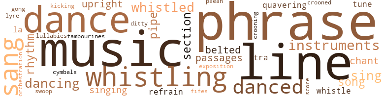
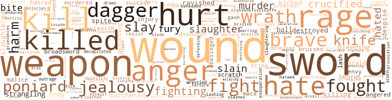
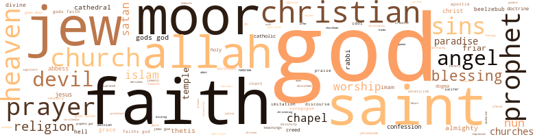

Odor of Sanctity (The), by Yerby, Frank (1965)
171 music-related terms matched in this text.
Most frequent terms in this topic: phrase (20); music (20); line (16); dance (8); whistling (8)
belt_out.v.01
Definition: sing loudly and forcefully
| word | sentence |
|---|---|
| belted | Bending over , he pulled on his stockings which were actu - ally a kind of tights covering not only his legs , but his hips and belly to the waist ; he belted them tightly about his slim middle , sat down , cross-gartered them from knee to ankle ; finally , he drew his pointed , soft red leather shoes over feet that were smaller than even his sister 's . |
| belted | About his waist was belted both his new poniard and his sword ; his quiver full of arrows was strapped across his chest , and hung down his back . |
| belted | He dragged his tights up over his legs , belted them about his waist ; sat down and cross-gartered them ; slipped on his shoes , opened the door , raced half naked through the halls and up those stairs . |
chant.n.01
Definition: a repetitive song in which as many syllables as necessary are assigned to a single tone
| word | sentence |
|---|---|
| chant | Twas months before my poor Goissuintha would let me touch her hand ; but I was patient , and had of her a love that would make all the bright hosts of God chant hosannas in the end . |
| chant | Alaric studied him with curiosity and some care , for the renegade mer - chant was surely the strangest , most richly comic sight that ever Chris - tian gaze feasted upon . |
croon.v.01
Definition: sing softly
| word | sentence |
|---|---|
| crooning | She sits within , cradling it in her arms , and crooning lullabies to it . |
| crooned | Turtura crooned . |
cymbal.n.01
Definition: a percussion instrument consisting of a concave brass disk; makes a loud crashing sound when hit with a drumstick or when two are struck together
| word | sentence |
|---|---|
| cymbals | He could feel the ebbing of his strength , leaving in him a weakness like unto death ; so , because he knew not what else to do , he lifted up his voice , made brazen thunder , crashing like cymbals , rever - berating like a temple gong . |
dance.n.01
Definition: an artistic form of nonverbal communication
| word | sentence |
|---|---|
| dance | They heard the thunderous crash , the metallic clatter , the mingled roars of Romance and Arabic oaths , the screams of bitter pain , the wild dance of hoofbeats , the battle cries . |
| dances | Then her demons seize her and she runs through the town , tears off her clothes , dances naked in a public place . |
| dances | " Look you , my son - how he dances ! " she said . |
| dance | Methinks you could make a holy image descend from his cold niche in the church and do a dance ! |
| dance | It can see the poor widow spitting blood from lung fever and starvation while her ragged scarecrows of children dance for obols to the tambourines she hath scarce strength to lift ! |
| dance | And neither whip nor spur could win from him more than a stubborn sidewise dance . |
dance.v.02
Definition: move in a pattern; usually to musical accompaniment; do or perform a dance
| word | sentence |
|---|---|
| dancing | This is too much to ask of any man , let alone so gentle a soul as thou - " Ibn Ha'ad was dancing again , hopping from foot to foot , wildly . |
| dancing | And rounding the comer they saw her , dancing in wild fury , rending the very air with her screams , her thickset body entirely nude , a moving whitish blur . |
| dancing | But of a sudden in a nearby street he yanked his mount to a startled , dancing halt , threw his gray-streaked bearded head backward , and split the night apart with an anguished scream , high , grating , edged , woman-shrill . |
| dancing | Knocks about with poets , dancing girls , gamblers , pimps , public women , and other riffraff - all of which poor Hasdai could stand were it not for that young clown 's complete dedication to rationalism . |
dance.v.03
Definition: skip, leap, or move up and down or sideways
| word | sentence |
|---|---|
| dancing | Ibn Ha'ad stopped dancing about like an enraged dervish . |
| dance | At once the merchant began to dance about once more and scream his rage ; but Alaric cut him off . |
| danced | As the time for the banquet to begin drew nigh the merchant danced about like a madman from pure nerves . |
| danced | She danced on , her eyes rapt , withdrawn ; but no longer did the demons within her scream . |
| danced | The way she danced was in itself an act of ritual devotion to her unknown terrible demon gods . ' |
| dance | By all the whores who dance in heaven ! |
| dance | " The object is to kill that swine , Father , not to dance a pretty measure ! |
| danced | The tears danced on the upturned comers of her mouth . |
| dance | He could hear her footsteps now coming on ; they were heavy , faltering , slow ; and it came to him that more than seven months had passed since last he had held her in his arms , had seen her small face twist into that tortured grimace of intolerable anguish that served to depict equally intolerable ecstasy - if he needed further proof of the frail human machinery 's scant capacity for showing clearly what it sensed or felt , or thought , or dreamed ; time enough to have left her gravid with his unhallowed fruit ; time enough to destroy that lightness , that grace which had seemed to him always poised to skip or scamper ; that needed only some such hint of a breeze far less weighty than a lover 's sigh to dance airborne like a leaf , a cloud - And now , hearing her coming , dragging toward him like some over - burdened beast - or like one mortally wounded , worked or driven unto death , the thought leaped unbidden into his mind - he had time to think on what ' twould be like to have a son ; and he shuddered , as though seized of a palsy . |
| danced | The tears danced on the trembling comers of her mouth . |
| danced | The first half of last night , they danced away ; the second , they entwined themselves about those of the Head Rabbi 's youngest daughter . |
| danced | Wildly he pounded Saadyah , saw his foeman 's knees buckle , his greater bulk start down ; dropping his own guard , Alaric danced gleefully in to finish the contest ; but to his own vast surprise , Saadyah 's big fist came whistling up from somewhere in the neighborhood of his still buckling , sagging , giving knees ; and red fire and utter dark burst eerily inside Alaric 's skull , while far away and faint he heard Afafs despairing scream . |
ditty.n.01
Definition: a short simple song (or the words of a poem intended to be sung)
| word | sentence |
|---|---|
| ditty | Singing a merry ditty in the tavern in the town ! |
exposition.n.04
Definition: (music) the section of a movement (especially in sonata form) where the major musical themes first occur
| word | sentence |
|---|---|
| exposition | " That he is perilous , thou ' rt right , " Alaric said , " though mayhap for causes less farfetched than thy chaste and delicate exposition of the theory of thwarted love . |
fife.n.01
Definition: a small high-pitched flute similar to a piccolo; has a shrill tone and is used chiefly to accompany drums in a marching band
| word | sentence |
|---|---|
| fifes | " Ah , Mother - " Ataulf began ; but then they heard the music of fifes and tambors , and the clank of marching men . |
gong.n.01
Definition: a percussion instrument consisting of a metal plate that is struck with a softheaded drumstick
| word | sentence |
|---|---|
| gong | He could feel the ebbing of his strength , leaving in him a weakness like unto death ; so , because he knew not what else to do , he lifted up his voice , made brazen thunder , crashing like cymbals , rever - berating like a temple gong . |
kick.v.04
Definition: kick a leg up
| word | sentence |
|---|---|
| kicking | And life - even this poor witless whore 's , and more , even this bastard churl 's kicking now right lustily amid her coiling tripes - is none the less sacred even when , as now , 't is sired by an abomination upon two legs who still walks the world in such happy pursuit , enjoyment , and use of abominable knavery as to insure the continued begetting of abomina - tions in his image down to the end of time . |
lullaby.n.01
Definition: a quiet song intended to lull a child to sleep
| word | sentence |
|---|---|
| lullabies | She sits within , cradling it in her arms , and crooning lullabies to it . |
lyre.n.01
Definition: a harp used by ancient Greeks for accompaniment
| word | sentence |
|---|---|
| lyre | And afterward , when all the unheard music , harp , lute , double pipe , lyre was stilled , she lay propped up on one elbow , staring at him . |
music.n.01
Definition: an artistic form of auditory communication incorporating instrumental or vocal tones in a structured and continuous manner
| word | sentence |
|---|---|
| music | And light shone upon thy forehead , my boy ; lauds and flutes and lutes and pipes made music , though God wot there were no musicians there ! |
| music | It seemed to Alaric that the dark room glowed with a soft light that surrounded her ; that music accompanied her as she came , lauds and flutes and even the voices of angels , somewhere behind , beneath , beyond all sound . |
| music | A hardy soul dared question the slaves , and was rewarded with a confirmation : the gorgeously dressed courtier was indeed the Sahib Abu'I - Hasan Ali ibn Nafi , the celebrated Iraqian singer and musician , become for all fashionable Cordoba , from the Emir himself to the least cultivated of the wealthy merchants , the arbiter of elegance in music , speech , dress , household decoration , all things , in fact , in which questions of taste were involved . |
| music | " I pierced thy heart , and yet - " Alaric 's voice was like a strain of music , drifting through the dead - stopped air . |
| music | He did not raise his voice ; but it made music of her name ; made silver bells and a twanging lute , and Grecian Panpipes orchestrating a triad , rising , falling , and endlessly sweet . |
| music | Yet Alaric stood there , growing increasingly cold and numb of heart as the curate went on with his tale of how a hermit had seen a star , had heard celestial music , and thus had found the tomb whose location had for these many centuries been by men forgot - not knowing in his piety , his enthusiasm , his faith , that he had lost his audience long since . |
| music | I could feel thy voice , my lord , inside me , spreading out along all my veins like grave , sweet music - melting me , making my heart leap up and float away like a leaf , a cloud - " " That miracle 's common enough , Natalia , " Theodora said . |
| music | He said some commonplace or courtesy , and I could not make out his words for the music of his voice . |
| music | Much good hath from that direction come : tolerance , peace , the veneration of learning , music , art , science - even cleanliness - " " But , " Baldegotona protested , " I fear hell , my lord ! " |
| music | Alaric said , the clangor of iron getting into his voice now , beneath its solemn music . |
| music | " Thou 'll not die , Kalim , " he said , his voice grave and slow , with angelic music filled . |
| music | He paused as though listening ; then his voice was the music of chinch bells : " I thank Thee , dear little Mother of God ! " |
| music | It seemeth me that her feet beat time to slow and funereal music . |
| music | " Thou wilt speak , Saadyah , " Alaric murmured , his voice deep music . |
| music | And now , hearing what she said , understanding her , Alaric knew what that language was - an old , almost classic Greek , spoken with a lilting music that old Paulus ' tongue had never been able to match . |
| music | Women , music , wine - " " I 'll wager , " Alaric said . |
| music | " Ah , Mother - " Ataulf began ; but then they heard the music of fifes and tambors , and the clank of marching men . |
| music | Think you your gross beast of a father was enthralled by the music of her dulcet voice ? |
| music | Because Thou delightest in cruelty , in pain ; and the piteous screams echoing unending down all time art music to Thine ears ! |
| music | And afterward , when all the unheard music , harp , lute , double pipe , lyre was stilled , she lay propped up on one elbow , staring at him . |
musical_instrument.n.01
Definition: any of various devices or contrivances that can be used to produce musical tones or sounds
| word | sentence |
|---|---|
| instruments | For right oft thereafter , all who knew him wondered if the man who rose from that bed of pain , bearing the scars of the holes ibn al Abbas had drilled through his skull to insert the instruments to relieve that terrible fracture , was the same man who 'd been placed upon it on that all but fatal day . |
| instruments | " I fear me that it is , " the physician said ; " still , I 'll get my instruments and come with thee . |
| instruments | " Of course , the weather 's cool now ; but still - let me see , let me see - " He took instruments from his bag and began to remove the thick gray-white mass covering the wound in Alaric 's chest . |
| instruments | He simply picked up a knife from among the instruments he had brought , and cut into the wound , crossing the original stab . |
| instruments | For days on end they both forgot the perhaps kindly sin they did , in the calm joy they took in each others company , reading together , playing the musical instruments on which they both performed with no mean skill ; making love . |
| instruments | But he - lost , bemused amid the hundreds of books in Latin , Greek , and Arabic she caused him to be brought ; finding as was his wont a mystic significance in the simple Pythagorean equations which seemed to him a perfect demonstration of the essential order of the world , devising cunning instruments for marking the degrees of angles which enabled him to determine by triangulation the height of the minaret of the great Mosque ; dabbling in alchemy to the min of his clothes and the hurt of his fingers ; watching the birds with childlike wonder , making little drawings of their plan forms , and pondering gravely why the broad-winged birds - the duck , the hawk - flew low and fast ; the longer-winged ones - the stork , the crane , the goose - slowly and at medium height , while the long - winged vultures , falcons , eagles soared , black pinpoints against the blue of heaven , adding to his sketches designs for a device by which he meant to achieve the age-old dream of man , human flight - a pair of broad , hinged wings , of bamboo and of silk to which goose quills were to be sewn in abundance , the whole completed with a widespread tail modeled after that of the pigeon , the bird he was able to observe most closely at hand - forgot to count the days as they slid over the rim of the world . |
orchestration.n.01
Definition: an arrangement of a piece of music for performance by an orchestra or band
| word | sentence |
|---|---|
| orchestration | Count Teudis ' voice boomed , the spiral staircase leading to the tower distorting it , and the stone walls of the castle adding a whole contrapuntal orchestration of echoes so that it seemed as though a hundred men were shouting at once : " You should have seen him , Godsuinta ! |
paean.n.02
Definition: (ancient Greece) a hymn of praise (especially one sung in ancient Greece to invoke or thank a deity)
| word | sentence |
|---|---|
| paean | But he was aware of something more , with a paean of triumph that soared above the sud - den guilt that flooded him , the pain : that her mouth on his had gone soft , gone yielding ; had at the last slackened , parted , then clung to his , adhesive and molten as Greek fire . |
passage.n.06
Definition: a short section of a musical composition
| word | sentence |
|---|---|
| passages | Natalia entered it , and scurried through passages , opening doors , closing them , until she found the chamber that she sought . |
| passages | And she interpolates whole passages out of her splendid imagination that I much doubt are in the original at all . |
| passages | His chastity was dearly won ; dreams of naked odalisques plagued his sleep ; whole passages from that masterwork of erotica the Emir had had him translate from the Greek came crashing and thundering back into his mind . |
phrase.n.02
Definition: a short musical passage
| word | sentence |
|---|---|
| phrase | The poor dears I They depart with such woeful faces - " He left the phrase hanging , so Alaric asked the required question . |
| phrase | " Aizun , my son , ' ibn Ha'ad said , " the phrase is feeble , but for this relief , nay , this salvation , accept my thanks . |
| phrase | The harsh Arabic gutturals of that final phrase broke like a whipcrack against the silence . |
| phrase | Then , among themselves , they began a rapid debate in Greek over how to evade or escape his orders , until Alaric cut them short with a phrase which to their consternation revealed his perfect mastery of that ancient tongue . |
| phrase | Not an idle phrase pronounced three times before the door of the mosque - " " Ohhh ! " she wailed , and hid her eyes behind her hands . |
| phrase | That phrase on her lips halted them at once . |
| phrase | He heard Eulogius ' fervent " Amen ! " to that phrase , and it angered him . |
| phrase | " - I beg Thee lift the darkness from the eyes of those who - " And then , before he could finish that phrase , a voice screamed out terribly : " I see ! |
| phrase | That phrase , which was Natalia 's own : - " Sweet my lord ! " |
| phrase | Then he murmured in Arabic the classic phrase : ' Whom the finger of Allah hath touched - " and turned to Perfectus once more . |
| phrases | So I loosed a few choice phrases that Saadyah taught me to the effect of how he was mining my married life . |
| phrase | Thy - " She said that phrase in Arabic . |
| phrase | He delighted in a racy turn of phrase , a cleaned-up street argot he 'd learned of the whores and thieves whom more than any other priest in Córdoba he was successful in reforming . |
| phrases | He stretched out his long legs , in acute misery , while whole phrases from that damnable parchment of the Emir 's moved , insidious and slow and fevered , through his mind . |
| phrase | But now remembering Fa - ther Juan 's favorite phrase , " Who embraces a woman , embraces a sack of excrement ! " anger stirred in him dimly - he was too soothed , too quit of tension , anxiety , pain to give it vent - at the way it seemed to him now he had been lied to , cheated , deceived . |
| phrase | He re - membered her own mocking phrase : " The dead do n't suffer ! " |
| phrase | He passed his tongue up over bone-dry lips , and got it out , his voice slow , quiet , grave ; the phrase , itself , dead stopped , with no in - terrogatory lift of inflection at the end , carrying all the weight of cer - tainty : " They were murdered , too , " he said . |
| phrase | " I withdraw the word ' lout , ' " he said heavily , " but more from your speech , which hath a certain polished turn of phrase , than from your looks , though they , too , in all good truth are more than fair . |
| phrase | He caught the word Allah ; and the sound of her phrase was that of an invocation or a prayer . |
| phrase | The moment he pronounced this dread phrase used by the city police when about a search , the door flew open , and a trembling eunuch bobbed his thick body halfway through a profound bow ; then halted it . |
| phrase | And think you even more upon this phrase that my lady said I was to tell you in the end - " " Which is ? " |
| phrase | Nor even the meaning of my lady 's phrase ' another self-slain woman 's - ' " " No ! " |
pipe.n.04
Definition: a tubular wind instrument
| word | sentence |
|---|---|
| pipes | And light shone upon thy forehead , my boy ; lauds and flutes and lutes and pipes made music , though God wot there were no musicians there ! |
| pipes | It seemed to have been artificially heated else - where , and then allowed to flow into the pool through hidden pipes . |
| pipe | Now , if , my dreamer sage , you can figure out a method to pipe in wine ! |
| pipe | And afterward , when all the unheard music , harp , lute , double pipe , lyre was stilled , she lay propped up on one elbow , staring at him . |
refrain.n.01
Definition: the part of a song where a soloist is joined by a group of singers
| word | sentence |
|---|---|
| refrain | " 'T is indeed a mighty weapon ! " they said , but in their minds the answering thought rose up like a refrain : " Yet our ancestors killed game enough without it ! " |
| refrain | Being all wise , He can and doth , of His own vast wisdom , refrain from employing His unending power , thus leaving me free to - " It is likely , given time , that Alaric would have seen that he had almost completely missed Saadyah 's point ; and that that point itself was unanswerable . |
rhythm.n.04
Definition: the arrangement of spoken words alternating stressed and unstressed elements
| word | sentence |
|---|---|
| rhythm | Woke him in a terror that chilled his ardent blood , halted the motion , the rhythm , the tenderness . |
| rhythm | Then without a word , she began to anew the motion , the rhythm , that sweet , slow , wor - shiping of life , of creation , that utter denial , defiance of negation , death ; until she roused him from his pain , his stupor , brought him to , and joined him instantly in , that final bursting , small death , transfiguration , glory , different both in quality and in kind from any they had ever known before , going on so long , so long , that bemazed mind , overtaxed heart , tortured lungs all shuddered to a total halt , and darkness drifted across the world , musk-laden , redolent with the high spiced scents of achieved love . |
| rhythms | I 'll not , I 'll not , I 'll not - " with the pounding rhythms of his blood , his heart - reached up and ripped away the clothes she wore , helped by the fact that Saadyah 's great paws had already tom them beyond effective repair ; but aided more by her own two hands which came down to grip his wrists , but , instead , themselves a prey to blind instinct , went on past his , and thrust her shintiyan in one long , soft , silken slither over slim flanks , thighs , knees , calves , until it bunched about her ankles , while all the time , her freed mouth - for he was occupied now by richer , more ripened fruit , swelling and puckering under his hands , his lips - continued to moan and babbie those meaningless , demented " No 's " until in the very lists of love , the grinding heat of passion , he tried to enter her and found he could not . |
| rhythms | Yet , when her eerie , high - pitched toneless final cry , the slackening of entwining limbs from his chafed and tortured flesh , told him she had found what she sought - that mere relief from tormenting desire , which taken as the sole motive for the act of love debases it into coitus , he did not let her go ; but began sweetly , slowly to design with her the arabesques of tenderness , the slow , stately rhythms of temple dancers worshiping each other and love and God who hath given them this sweet , reverent magic of the flesh to their own increase , and to His greater glory . |
score.n.02
Definition: a written form of a musical composition; parts for different instruments appear on separate staves on large pages
| word | sentence |
|---|---|
| score | Not even his long association with the finest riders in the world , the Berbers , who held both their Arab allies and their Christian foes in just contempt on this score , had taught him anything ; for his native arrogance made him despise what he could not comprehend . |
section.n.01
Definition: a self-contained part of a larger composition (written or musical)
| word | sentence |
|---|---|
| section | My old warehouses out in the Munyat Adjab section . |
| section | Only once did it succeed in shock - ing him , and that was in the section devoted to the restoral of jaded ap - petites . |
| section | Alaric came up to that section of the wall above the portcullis , stringing his great Mooris bow as he ran . |
| section | Just as smoothly , and as silently , a whole section of the tower wall turned inward , revealing another pair of narrow steps going down . |
sing.v.02
Definition: produce tones with the voice
| word | sentence |
|---|---|
| sang | The arrow sang its twanging , eerie whine . |
| sang | In a hundred cages , rare birds sang . |
| sang | Lifelong she sang thy praises , until - " " Until she sickened thee quite of me ? " |
| sing | the young Christians who are most con - spicuous for their talent have no knowledge of any literature or language save the Arabic ; they read and study with avidity Arabic books ; they amass whole libraries of them at great cost ; they everywhere sing the praises of Arabic lore . " |
| sing | " Poor Dhabba had heard my sister speak of thy saintly lord , my lady - for since the day he gave her back her speech Baldegotona hath done naught else but sing his praises endlessly - though less , methinks , from considerations of religion than from the fact thy lord is indeed most wondrous fair - " " Which interests thee not at all , of course ? " |
| sang | His hot little black eyes locked with her wide brown ones , and held and held until the very air sang with tension , went smoky , blue , seemed to whine . |
| sang | She laughed , sang , scam - pered about , played with little Ataulf , and ate enough to feed a regiment . |
| sing | He began to sing suddenly ; his big bass surprisingly musical . |
| sang | " I give you greetings , my lord Aizun , " she said ; and her voice was dark-toned , rich ; a true mezzo-soprano , so musical that Alaric guessed that when she sang , listening to her would be a glory . |
| sing | I 'll look upon the wine while it is red , and sing youth 's long , brave song until the grave mold choke my voice . |
| sing | " Aye , good night - if any day or night be goodl And all the angels thou bearest in thy heart , sing thee to thy rest ! " |
| sang | The words leaped up at him , sang like whip - lashes through his mind : My own - Farewell ! |
singing.n.01
Definition: the act of singing vocal music
| word | sentence |
|---|---|
| Singing | Singing a merry ditty in the tavern in the town ! |
| singing | The shaft leaped out , raced skyward in a long , long singing curve ; whistled downward . |
| singing | Surely those are larks singing now , not nightingales ! |
song.n.01
Definition: a short musical composition with words
| word | sentence |
|---|---|
| song | What Gothic prince would give thirty thousand dinars to a singer because a single song enchanted him so , as the Emir did to Ziryab ? |
| song | I 've heard that song from more than one filthy Mozarab . |
| songs | And though 't is true you murder with him what thought , what dreams , what noble unsung songs remain in him , who can tell what worth they might have had ? |
| song | I 'll look upon the wine while it is red , and sing youth 's long , brave song until the grave mold choke my voice . |
swoop.n.01
Definition: (music) rapid sliding up or down the musical scale
| word | sentence |
|---|---|
| swoop | But still one more act in the tragicomedy - for at that date , in the spring of 849 , the relationship between Christian and Muslim had not yet taken its ever steepening , sliding , accelerating swoop toward the edge of the precipice over which , before another year was out , it would plunge - had that selfsame night to be played out . |
tambourine.n.01
Definition: a shallow drum with a single drumhead and with metallic disks in the sides
| word | sentence |
|---|---|
| tambourines | It can see the poor widow spitting blood from lung fever and starvation while her ragged scarecrows of children dance for obols to the tambourines she hath scarce strength to lift ! |
tone.v.01
Definition: utter monotonously and repetitively and rhythmically
| word | sentence |
|---|---|
| chant | Whom nobody desired in that evil way at whose mention we publicly blush but which occupies our thoughts - in fascinated terror - or terrified fascination - much of our girlhood until that day it happens to us and we chant hozannahs to Him who put such evil in the world - " " Gele ! " |
tra-la.n.01
Definition: a set of nonsensical syllables used while humming a refrain
| word | sentence |
|---|---|
| tra-la | " Drop down your skirt and take the veil , tra-la , tra-la , Drop down your skirt and take the veil , my lovely ! |
| tra-la | " Drop down your skirt and take the veil , tra-la , tra-la , Drop down your skirt and take the veil , my lovely ! |
tune.n.01
Definition: a succession of notes forming a distinctive sequence
| word | sentence |
|---|---|
| line | So that my line must die with me . |
| line | The mercenaries , under the spell of his grave beauty , under the magic of his voice , forgot what cowardly dogs they were and thundered forward in an unbroken line , filling the road from edge to edge . |
| line | To end my line thus ? " |
| line | But of all this Alaric had no inkling yet , as he rode forth on the latest of the long line of snow-white horses he had owned , called like them all , Jinni , though by now he had difficulty recalling if this were the seventh or the eighth of the strain . |
| tune | He failed to even question the highly unusual circumstances that he did not so much as sight a patrol of Moorish or Berber horsemen , beating through the mark , attributing his all but miraculous good for - tune to Sor Fidela 's prayers . |
| lines | The sight of that sweet , girlish face set in lines of stem command was so irresistibly comic that they all laughed , and good humor was restored . |
| line | Reflecting , perhaps , that his own harsh rule had sown all the land of al Andalus with the dragon teeth of hatred ready to spring up as warriors to rebel against his line , al Hakam had designated not only his own successor , as the custom was ; but the successor to his successor if death by assassina - tion or accident should remove the new Emir , Abd al Rahman II , before any of that lusty prince 's swarm of male children should come of age . |
| lines | For , Reader , Abd al Rahman the Second was dead now , too , having succumbed , said Eulogius and his Exalteds , to the vengeance of Heaven ; nay , rather , said the cynics and the skeptics , to the Umm Walad Tarub 's delicate attentions by eating of some dish , or partaking of some cup , prepared by her dainty hand ; or - which is the humble opinion of him who pens these lines - to fatigue , weakness , grief , and , mayhap , a broken heart . |
| line | His son , too , must lie beside the mighty of his father 's line . |
| line | Now in that tiny fragment of Bardulia , Qashtalla , Castilla - call it what you will - there had never been more than three noble houses ; and of those three but two survived , now that Duke Atanagild 's line was extinct before him , and the old fiend himself howling in hell for his sins . |
| line | He yanked hard on the bridle to turn the barb out of line , to get out of there , to fly ; but then suddenly , appallingly , he saw Clothilde 's eyes . |
| line | Whelp of my own loins , full fit to preserve my line ! |
| line | And farther out , against the mesa land 's rim where the mountains sawed the sky with white and jagged teeth , a line of others arrowed in , swift , purposeful , sure . |
| line | They moved out in a long , weary line , crawling under that pitiless sun , that brazen sky . |
| tune | Then , for the first tune , he posed that question : " Are You - there ? " |
| line | I must have legitimate heirs to preserve my father 's line . |
| line | " I fished the piglet on a line . |
| lines | You 're so pale and sick looking and - " " You went to Sisberto 's place , which is more than two leagues and behind the Berbers ' lines ! |
| lines | " Were beyond the Berbers ' lines , " Alaric said . |
| line | Every line , every wrinkle incised into his flesh by his more than seventy years , only added to that pure , that awesome , saintly beauty . |
| line | He could not see all of her face which was buried still against his throat ; but he was aware at once that her body was very fine , slender and soft curving , and utterly harmonious of line . |
| line | There I enjoy the Emir 's favor ; and there - " he shot a glance at his stepmother 's face " - as well as here can I get you grandsons to continue your line - " He had been right . |
upright.n.02
Definition: a piano with a vertical sounding board
| word | sentence |
|---|---|
| upright | Finally it came to me there was no female about I disliked less - that I was living like a monk , for the business left me no time for roistering , and that I owed my upright and worthy father grandsons . |
| upright | I can not live upon my knees , bowed before the images of human fear and ignorance in the temples of unreason ; I must walk upright like a man i ' the sun ! |
| upright | He sat upright in the narrow bed on which since his earliest childhood he had slept , just as his father burst into the tower room . |
warble.v.01
Definition: sing or play with trills, alternating with the half note above or below
| word | sentence |
|---|---|
| quavering | A shak - ing got into her body ; arose along her limbs until she was quavering like an aspen , jerking like St. Vitus . |
| quavering | And reduce me , too , in its fullness to a palsied quavering crone - even that , Oh love of my life , will be a fulfillment , as long as we suffer it together . |
whistle.v.01
Definition: make whistling sounds
| word | sentence |
|---|---|
| whistle | He heard something whistle by him , saw a Berber lance bite earth , stand and quiver some yards ahead . |
| whistle | " Clean as a whistle , smelling of good soap , a hint of perfume ! |
| whistling | He moved out and away from there , stumbling , staggering , obviously blind , his hand put out to grope his way , and they not one of them making the slightest move to stop him until he had reached the edge of the square ; and not even there , but instead some of them began to follow him , then more and more - until when the execu - tioner finally lifted his broadax and brought it whistling down to end Natalia 's life , the mob was already mobile , fluid , flowing out and away from there in the wake of a corpse that walked , a cadaver stumbling , shambling , tottering over ground . |
| whistling | Then , as he brought that ugly whip whistling around to lay another laceration across the ones already there , Zoë came alive . |
| whistled | The shaft leaped out , raced skyward in a long , long singing curve ; whistled downward . |
| whistled | The arrow whistled downward into that pool of pitch , trail - ing a sooty banner of smoke behind it . |
| whistled | Then they whistled downward , to land not two yards from where Clothilde stood . |
| whistling | During the week that passed before Wifredo finished the ballista - mounting the great steel bow , the winches used to draw it , the trigger lock - Alaric did what he could , which was to send extralong flight arrows whistling down upon the men who worked Leovigild 's trebuchet . |
| whistled | That great spear whistled skyward , scribed an arc against the blue , grew tiny in the distance . |
| whistling | close enough to send a rain of arrows whistling in . |
| whistling | An hour after Khinsvilda had wound the ballista up and Alaric 's trembling hand had sent the great dart whistling across the sky , a rider rode out from the Berber host . |
| whistling | " Shred all the skin from my bones ; but I 'll say it still : Your lady hath dishonored my lord 's bed with that - " The whip came whistling down . |
| whistled | The arrow whistled , blurring sight , so swift it sped ; it took the Flemish warhorse in the nose . |
| whistling | " Wait you here in my chamber till I return - " They went down into the courtyard , Saadyah whistling cheerfully through his swollen lips ; but there they found it fearsomely dark . |
| whistling | Wildly he pounded Saadyah , saw his foeman 's knees buckle , his greater bulk start down ; dropping his own guard , Alaric danced gleefully in to finish the contest ; but to his own vast surprise , Saadyah 's big fist came whistling up from somewhere in the neighborhood of his still buckling , sagging , giving knees ; and red fire and utter dark burst eerily inside Alaric 's skull , while far away and faint he heard Afafs despairing scream . |
1052 violence-related terms matched in this text.
Most frequent terms in this topic: sword (46); wound (41); rage (40); hurt (36); wounds (36)
abhor.v.01
Definition: find repugnant
| word | sentence |
|---|---|
| loathed | But you - who , being a man , should have loathed the sight of me as a reminder that other men have shared the body of thy bride - have always loved me ; always treated me with every kindness . |
| loathed | That was his favorite remedy for such a state ; for he loathed and despised and rarely surrendered to the act of solitary sin . |
abhorrence.n.01
Definition: hate coupled with disgust
| word | sentence |
|---|---|
| loathing | Her eyes flared wide , made emeralds , caught the light , splintered it into slivers along each mobile jeweled facet of her tears ; then softly , sweetly they closed , while her mouth clung to his , allowing him to draw from her the hurt , the debasement , the loathing of self , the shame . |
abrasion.n.01
Definition: an abraded area where the skin is torn or worn off
| word | sentence |
|---|---|
| scratches | On the inside of both of them , above her knees , were livid scratches , and what he would have sworn were more teeth marks , the actual festering wounds of bites . |
| scratch | Now lie you down , and let me cure that scratch . |
| scratch | " I 've tried and tried to teach him to keep his guard up , so I thought a little scratch might lend him cau - tion . " |
| scratch | A most inhuman sentence for a scratch that is already healed ! " |
| scratch | " A scratch ! " |
| scratch | " Tis more than a scratch , you fool ! " he said . |
| scratch | " Besides the fact that if you get a scratch you 'll faint , there is no cause for war ... " But , Father - " Alaric protested . |
affray.n.02
Definition: a noisy fight
| word | sentence |
|---|---|
| fray | It lasted the sum total of four minutes before the surviving Berbers broke and fled the fray . |
| fray | Let him retire honorably from the fray . " |
| fray | " Scant honor 's to be gained in such a fray . |
| fray | Scream - ing " For God and Saint Fredegunda ! " he laid about him , emptying sad - dles on every side ; surrounded now , he hacked his way free , roaring like a young lion , bleeding from a dozen cuts he did not even know he had , the Teutonic berserker in him in full control , smashing into them until now the bucelarios came up to him and lent their immense weight and power to the fray . |
| fray | Again and again I could not see his face for the forest of blades ringing him round about - half a score of swords - men at a time ; battle-scarred champions of many a fray , who cut down your best men to get to him . |
| fray | " The Moors , God wot , accept our custom of letting a single combat between champions decide the fray , " he said , " but whether the Berbers can be trusted to hold to it , I do not know . |
| fray | They wrecked the waiting room in their wild fray ; neither I nor Taliq could separate them , until he spoke . |
| fray | " And these new men : how did they bear them - selves in the fray ? " |
aggravation.n.01
Definition: an exasperated feeling of annoyance
| word | sentence |
|---|---|
| exasperation | - " He halted suddenly , began again in swift Arabic verse , of which he had now all the Moorish fluency and gift for improvisation : " The wisdom that I have , if such it be , Is ill designed to grace one dear to me ; For age 's sagacity of dust is spun Blighting to beauty , humbling to the free - " So sadly would I , if I could , from this To great honor fly , escape this bliss And ask that thou grant thy senile fool From youths renewing lips a parting kiss - " She stood there staring at him , until her eyes were hidden behind a scald of tears from pure exasperation sprung . |
| exasperation | In those days she had often wept in exasperation at his lack of appetite . |
| exasperation | Should I go to my lady Abbess , submit myself to examination by a midwife before her , obtain a certificate - " she paused now , crying from pure exasperation " - it still would not matter , my lord Count ! |
aggravation.n.02
Definition: unfriendly behavior that causes anger or resentment
| word | sentence |
|---|---|
| provocation | " In any case I am right sorry for it , for I recognize the provocation was gross . |
| provocation | And God will , as well , knowing your repentance sincere , and how gross the provocation offered you . |
anger.n.01
Definition: a strong emotion; a feeling that is oriented toward some real or supposed grievance
| word | sentence |
|---|---|
| anger | The man was frowning , his countenance black with anger . |
| angers | Am I not being punished for my unworthiness , my worthlessness , my sins of omission at the least , for the unhallowed desire I 've felt at times for this one , for that ; for my angers , my jealousy , my spite , for all the host of repressed , hidden , cowardly little sins I had not will nor strength to do ? " |
| anger | At the worst , I am a used and broken thing whom no man of rank and honor - " " Now you anger me , I think ! " |
| anger | Al Wallid 's light voice was tight with anger . |
| anger | His shyness , his timidity drowned in a mounting tide of anger . |
| Anger | Anger burst in him , leaped , cackled , stood tall . |
| anger | I - I 'd hoped to never more lift a sword in anger . |
| anger | In anger she became again Clos very self . |
| anger | Then he said , in an unsmiling pretense of anger : " Go fetch me my rod ! " |
| anger | Feeling it , half knowing what it was , caused anger to rise in him . |
| anger | Alaric felt anger stir in him ; but he contained it . |
| anger | She looked at him with deep astonishment , then with anger , whis - pered : " Aizun , Aizun - wouldst have them damn their souls ? " |
| anger | Did God who in his prior knowledge of every act I 'd do in all my life , that knowledge which dwelt in him uncounted eons before he al - lowed or caused me to be born , then take into his divinely omniscient cognizance the sins of lust , anger , murder , pride he knew I must commit , sins he did not trouble to remove from my stars the day the midwife smote breath into me , and equate with them as punishment the killing of my babies ? |
| anger | Twas at that moment that Eulogius rose , and wild with anger , went so far as to shake his fist in Alaric 's face . |
| anger | But now remembering Fa - ther Juan 's favorite phrase , " Who embraces a woman , embraces a sack of excrement ! " anger stirred in him dimly - he was too soothed , too quit of tension , anxiety , pain to give it vent - at the way it seemed to him now he had been lied to , cheated , deceived . |
| angers | To force one 's will , ones greeds , one 's angers , one 's lust - and , good fathers , one 's dogmas and one 's cant ! |
| anger | " Why do you say that ? " he said , and his voice was calm , with no trace of anger in it . |
| anger | " And I , " Sor Fidela said gently , " think there is something unseemly in your anger , Clo . |
| anger | Hearing his footsteps , Count Teudis turned , and Alaric saw his father s face go red with sudden anger . |
| anger | She had displayed none of the anger or the jealousy her sister had accused her of . |
| anger | To ease his confusion , he took refuge in righteous anger - or tried to . |
| anger | They - Then his anger died . |
| anger | So it was that when he spoke , anger lent sharpness to his tone . |
| anger | Alaric felt anger stirring in him . |
| anger | Alaric said , anger hardening his voice so that now , accidentally , he took the proper tone . |
| anger | His boyish , innocent wish to keep his vows to Zoë , his anger at being forced into a marriage which , truth to tell , he had desired all his life and which had come to him , maddeningly enough , only after he had surrendered all hope of ever achieving it ; Clo 's rancor at his childish act of pique , that business of sleeping apart from her , that first night of what should have been their honeymoon - all these were within the bounds of human error , and be - lievable as such . |
| anger | This he must do if you remain in Cordoba where your presence will feed daily his anger , his lust , his jealousy , and his fears - " " And if I flee to Toledo as planned ? " |
| anger | His face was heavy , stem , and mottled with anger . |
| anger | Then his voice rang out harshly , but without , Alaric was sure , real anger ; rather in acute need to ward off danger , and possible hurt from his house . |
| anger | He looked at her , in anger , and in doubt ; but her tears unmanned him . |
| anger | When he spoke again , the anger had drained out of his voice . |
anger.v.02
Definition: become angry
| word | sentence |
|---|---|
| angered | And now , to Alaric 's amazement , instead of being angered by her words , Father Martin seemed to find them pleasing . |
| angered | Poor distraught Munia at once offered to forgo her own happiness ; but Alaric , angered by one of the few things in life that truly offended him , the imposition of one person 's will upon another by force , was firm . |
| angered | He heard Eulogius ' fervent " Amen ! " to that phrase , and it angered him . |
| angered | Natalia pouted , tossed her head , made a face ; but that she was not angered at Saadyah 's playful grossness was abundantly clear . |
| angered | The Emir will not be angered , but for another reason . |
| angered | But instead of merely extending it to him as she had to the others , she knelt before him with such a show of reverence , of respect , that somehow it angered him . |
assail.v.01
Definition: attack someone physically or emotionally
| word | sentence |
|---|---|
| assaulting | Julio came through the door , assaulting Alaric 's nostrils with his usual stench compounded of sweat , garlic , and sour wine . |
assassinate.v.01
Definition: murder; especially of socially prominent persons
| word | sentence |
|---|---|
| assassinating | Yet I am forced to endure it - for to deny reason is to return to beasthood ; I can not murder my intellect with - out thereby assassinating my integrity . |
| assassinate | Here assassinate ye , doubt it not , the only immortality man is certain of ! |
attack.v.01
Definition: launch an attack or assault on; begin hostilities or start warfare with
| word | sentence |
|---|---|
| assailed | Natalia bent close , reeled back , clutched at Alaric 's arm until the giddy sickness that assailed her passed . |
| assail | Alaric could feel the sickness in him unto death , that awful ache beginning to assail his poor wounded head . |
| assail | " Whereas out - side our walls that sight would assail our eyes all day . |
bandy.v.02
Definition: exchange blows
| word | sentence |
|---|---|
| bandy | 'T is bootless to bandy words with one so dense ! |
besiege.v.01
Definition: surround so as to force to give up
| word | sentence |
|---|---|
| besieged | " He is besieged within the town where he waited to pay his final respects to - " I know ! |
| besieged | " He is besieged within the town , my lord ! |
| besiege | Or the Moors who besiege Julian and his lady in the town ? |
| Besieged | But Ataulf , of course , great and tall and already sure of himself at fourteen , laughed and teased his fair guests , and whispered in their ears , while the Lady Ingunda and the Marquis Julian - Besieged within ruined roofless Tarabella now ! |
| besieged | The place 's besieged ! |
| besieged | Were still starving within these walls , still besieged - " Alaric smiled . |
| besieging | How long will they keep to their bootless busi - ness of besieging this rude heap of stones , with a whole mark to raid , maids to rape , cattle to run off ? |
bleeding.n.01
Definition: the flow of blood from a ruptured blood vessel
| word | sentence |
|---|---|
| bleeding | The Berbers drew their daggers but Alaric 's curved sword maimed one of them at once , dropping his hand still holding the dagger to the ground , while the Berber clutched the bleeding stump , sat down on the earth , and moaned . |
| bleeding | Alaric and Saadyah prudently got their bleeding , reeling , half dead infantry out of there , sent them to the rear , in the correct , but somewhat premature belief the day was won . |
| bleeding | " He lives still , " he whispered , " and the bleeding hath all but stopped . |
| hemorrhage | " She died of a hemorrhage , my lord . |
| bleeding | A philosophy whose basic concepts negate each other , and leave but the bleeding wounds of uncertainty , of doubt . |
| bleeding | But if ibn Abbas doth not halt the bleeding soon there is no hope . |
| bleeding | Then we 'll see , we 'll see - " Before dawn bloodied the peaks above the city , al Harrani had the bleeding stopped , by the simple expedient of packing her slender loins with snow . |
| bleeding | He put out his hand , dripping with balm ; touched her bleeding , purple welted back . |
| bleeding | The - the bleeding 's too hard to stop ; and the mortifica - tion usually sets in - " Is that why you slept before my door with a naked blade in your hand ? " |
| hemorrhage | Perhaps the renegade 's chain mail was extra stout , lim - iting the barbed shafts ' penetration ; but by the time the great charger sank finally to earth , drowning in the hemorrhage two of Alaric 's arrows had caused in his lungs , Leovigild resembled nothing on earth so much as a huge porcupine . |
blister.v.02
Definition: subject to harsh criticism
| word | sentence |
|---|---|
| scalded | He went on kneeling there beside her , but he could not see her anymore , so blind scalded were his eyes . |
| scald | I tell thee - " Saadyah stopped , seeing young Kamil 's strange blue eyes , seeing them scald , glaze over , melt , disappear . |
boot.v.01
Definition: kick; give a boot to
| word | sentence |
|---|---|
| booted | The man had knelt wordlessly beside the horse , and was kissing his booted foot . |
bridle.v.01
Definition: anger or take offense
| word | sentence |
|---|---|
| bridled | Not only was the guard 's mount a superb example of the world 's finest breed of horses , but she was already saddled and bridled . |
| bridle | And do not bridle so ! |
| bridled | Bedazed with weariness , half in his trancelike state still , he dressed himself , put on his shirt of mail , took up his weapons , went out into the stable yard , saddled and bridled the snowy steed that black Sumayla had given him , tied the mount to the hitching rail before the stable door , and once more entered the house . |
broadsword.n.01
Definition: a sword with a broad blade and (usually) two cutting edges; used to cut rather than stab
| word | sentence |
|---|---|
| broadswords | Ibn Ha ad had relied on Mozarab mercenaries , who being Christians , were armed in Christian fashion , with long lances , heavy shields , broadswords , and mounted upon great char - gers . |
| broadswords | The mighty broadswords hacked the life out of the rest , as the big horses rode them down , and all the world became a cloud of dust out of which rose the roars of conquering lions who had tasted blood , the screams of dying men , the glitter of sunlight upon that forest of blades , half their blued steel lengths now dripping red . |
| broadsword | Seven or eight hundred years later , when the rapier would have replaced the broadsword , the dazzling array of thrusts , feints , paries that the Goth 's son displayed upon that day would have become common - places of every fencing school ; but in his times not even the the words " to fence " existed ; men hammered each other to earth with the edge , or even the flat of the blade , and bull-like strength was all that counted . |
| broadswords | But in Clothilde 's day , save for an infinitesimal fraction , men lived all their lives within two hours ' walk from the house where they were born ; with order , law , discipline , control gone from the world - save as such burly brigands as her father and Count Teudis might impose a limited local version thereof with their great two-handed broadswords - to leave one 's valley was to court slavery , or death - and to a maid , cer - tain ravishment . |
| broadsword | The world belongs to madmen , poets , prophets , Saints - and most of all to warriors , like my father who holds the breach against a host awaiting the succor that will ne'er come , holds it without reason , Alaric , with his good broadsword , and his pride ! |
| broadsword | Alaric clapped on his helmet , picked up his broadsword , sheath and all , buckled it about his waist , ran his left arm through the loop of his shield , and was off , clattering down the stairs . |
bruise.n.01
Definition: an injury that doesn't break the skin but results in some discoloration
| word | sentence |
|---|---|
| bruises | Her skin was mottled with bruises , lined with dirt . |
| bruises | Her legs were pipestems , covered with bruises . |
| bruises | She had been most cruelly caned ; her back and arms were covered with bruises . |
| bruises | Even - even - this - " she touched the welts and bruises that showed on her arms above the coverlet " - is but evidence that he loves me - " " Then who is it that you fear , sweet Baldegotona ? " |
| bruises | Some of the stripes were old , beginning to heal ; some of the bruises were fading into greenish yellow ; while above them , crisscrossing them , were the new and terrible marks of a whip expertly wielded . |
| bruises | So let me amend my thought : I knew that you 'd see the bruises and cuts he got of me , defending the chastity of that Bedu maid from my drunken lust . |
butcher.v.01
Definition: kill (animals) usually for food consumption
| word | sentence |
|---|---|
| slaughtered | Earth received not only her children 's bones , but their beliefs ; earthquake and storm threw down their temples ; and they themselves slaughtered each other over such cosmic idiocies as whether God was One , or Three ; in the end nothing abided ; all was vanity . |
| butchered | Mother - God rest her soull To be butchered like that ! |
| butchered | " The day thou butchered thyself over thy skinny Greek , and thus tricked me into finding out I was my fathers son ! |
| slaughtered | The Moors bought half of your churches did not turn you out , neither slaughtered you nor violated your women - except for a few eager Chris - tian goodwives who volunteered their services ; but there are always women in every community who rape with astonishing facility ! |
| slaughtered | They slaughtered the Norsemen , drove them back to the Guadalquivir , set fire to their ships . |
| slaughtering | In Antioch we keep a special police in your churches to keep you from slaughtering one another over some weird metaphysical ques - tion or the other . |
| slaughtering | But here 't is protected by the highest power of the state - and endangered only by mad fools like Eulogius and Alvaro who would provoke a tolerant and kindly creed into forgetting that tolerance and slaughtering us - " " You justify Perfectus ' death , then , Father ? " |
| slaughtered | Alaric and his wife lay like bloody slaughtered animals upon the bed , while Saadyah , roaring and crying , was rapidly reducing two maidservants , Kalim and Begonia , into an even more pitiful state . |
| slaughtered | " Or by heaven and hell , I 'll - " Then he saw what lay at his father 's feet ; saw that bloody , pallid image of slaughtered virtue on the ground . |
| butchered | And one thing more : As they shouldered Ataulf 's bier once again , and the improvised one they 'd made for the dead Countess by lashing two long shields between the shafts of two lances , and started back toward the castle , leaving their baseborn dead , and their foes where they lay in crumpled , dust-covered , butchered heaps , a wounded Berber cried out to them in Romance - for among the Berbers , too , there was many a man now who had his captive mothers look and her native tongue , learned at her knee long before , and with greater mastery than his fa - ther 's harsh desert gutturals - " My lords , mercy ! |
| slaughtered | I should not were it I and my poor slaughtered Godsuinta who were be - sieged . |
| butchered | But butchered as I am , maimed , of my manhood deprived , my love is but a mockery . |
| butchered | " He butchered my good weapon . |
| slaughtered | A member of God 's Chosen Race , who , while He was , mayhap , these many centuries occupied with keeping tally of sparrows dropping from the sky , hath been enslaved by the Egyptians , captured by the Babylonians , slaughtered by the Persians , cut to pieces and scattered over the earth by the Romans , chopped into mincemeat by the Vandals , treated with tender loving care by you Goths ? |
| butchered | " Like to die , " Saadyah said harshly , " for no morsel of food hath passed those sweet lips since this monster of piety butchered himself ! " |
| butchered | Between Afaf , zebra-backed with stripes borne un - complaining for my sake , and Clo , whose comely countenance I butchered into a horror in defense of my manhood , my husbandly rights , the home I never had . |
choking.n.02
Definition: the act of suffocating (someone) by constricting the windpipe
| word | sentence |
|---|---|
| strangling | For now he saw how her shoulders shook , heard the stifled strangling of her crying . |
| strangling | His breath caught in his throat ; made a strangling . |
contemn.v.01
Definition: look down on with disdain
| word | sentence |
|---|---|
| scorned | She had many children by as many fathers , no one of whom she could with any certainty name - mayhap because she loved children , and scorned to make use of the arts bv which harlots protect themselves - " " And Julio , " Alario whispered , " what of him ? " |
| scorned | Thou who scorned not the Magdalene nor the woman at the well , nor she who dried thy sweet feet with her own sinful hair , nor Lazarus , the publican , nor even the Roman centurian who came in faith to ask of thee a boon . |
| despised | Instead of overthrowals and massacres and self - immolations , let us rather follow the way of the Man whom methinks the Church hath quite forgot : He who despised processions , kept no fasts at all , associated with publicans and thieves and harlots , praised God in wood and plain , on hilltops , by the seashore , while walking in fields of corn ; who entered a temple but twice in all his life - once to dispute with the learned Fathers as I dispute now with thee ; once to drive forth those who were profaning it with questions of barter , sale , and taxes - which is Alvaros ' and Eulogius ' chief rallying point , is it not , Father Perfectus - the taxes which we pay ? " |
| despise | She hath taken refuge in a Nazarene home , as she professes to despise " the race one half at least of whose blood she bears , and the religion of her own sire , calling us infidel dogs . |
| despised | That was his favorite remedy for such a state ; for he loathed and despised and rarely surrendered to the act of solitary sin . |
| despise | All his life he had been taught to despise the flesh ; the eschatological age he lived in had , or tried to have , no use for corporeal things . |
| despise | Who could despise his Zoë ? |
| despises | But he - as all the world knows - despises women and the normal uses of the flesh . |
| despised | Ataulf had laughed indulgently at his bookishness ; but his father had despised him for it , holding it un - manly . |
| scorn | " Such as you are now , boy , the carrion crows would scorn you ! |
| despise | Not even his long association with the finest riders in the world , the Berbers , who held both their Arab allies and their Christian foes in just contempt on this score , had taught him anything ; for his native arrogance made him despise what he could not comprehend . |
| scorn | Such a dried and shriveled bone as carrion birds would scorn ! |
| scorn | Though I am a woman , I scorn the coward 's way . " |
| scorning | Your scorning him sealed your fate - and the wound this eastern beauty gave him serves well enough for excuse . |
| despise | Even the blind crawling things despise hard gold , preferring my succulent flesh . |
| despised | In truth they were the same , though each poor , lost creature said it variously : They hated being despised , held in contempt , bought like so much goods for an hour , a night .... " " And thou ? " |
| despise | " You do not despise me ? " |
crossbow.n.01
Definition: a bow fixed transversely on a wooden stock grooved to direct the arrow (quarrel)
| word | sentence |
|---|---|
| crossbow | Orders to the carpenter to make a wooden winch , this sort of framework ; the legs so ; the channel thus ; the bedding for the great crossbow cunningly wrought . |
| crossbow | Alaric stood there staring at trie huge crossbow . |
crucify.v.01
Definition: kill by nailing onto a cross
| word | sentence |
|---|---|
| crucified | " Bv sweet Jesu , crucified , " Gele whispered . |
| crucified | What 's more , you believe your Creator was scourged , buffeted , crucified , and that for three days the universe was without a ruler ! |
| crucified | The Muslimn had it that the Nazarene Holv Man had been jailed for rape , and would be shortly crucified upside down , adding to the story a perfect wealth of brilliantly obscene detail ; the Christians that he was being martyred lest the superiority of their faith be demonstrated by his miracles - by then the demon-possessed boy had become a dead virgin whom Alaric had resurrected by dropping a single chaste tear on her forehead ; while the Jews cannily kept their mouths shut , lest they get all the worst of a dispute not their own , as usual . |
| crucified | And upon that cross am I hourly crucified . |
| crucified | So , resolving never again to give them like cause , the Emir put flame to tinder by having the monk Isaac 's throat cut , his dead body crucified upside down and thereafter burned , cross and all , and his ashes scattered over the surface of the Guadalquivir . |
| crucified | And Leovigild had them crucified at all four points of the compass , so that for a whole month the defenders , no matter which way they turned their gaze , saw them there : caught , from whatever quarter the wind came , their putrid stench ; could not so much as lift their gaze without having to watch the ravens beaking those poor gaping mouths to tear out rotting tongues , or probing in sockets that once had held young eyes . |
| crucified | No ills - if to be bereft of loving wife , both sons - one dead , as thou knowest well , of a bowman 's cowardly shaft ; the other sold to appease a pederast 's lust - his daughter likewise taken , sold , for which gentle use and treatment my tongue refuses the vile utterance - his soldiers slain , some five of them crucified before his eyes - and before mine , good leech , and before mine ! |
| crucify | And since they 'd likely crucify him for so serious a crime as this , I 'd have you dead - or mad upon my hands in any event - " " Dead , " Zoë whispered . |
| crucified | But he had to ask , in the forlorn , pitiful hope that ben Sahl would deny his knowledge , take from him this one more cup , this sop of vinegar lance thrust into the mouth of one now truly crucified . |
| crucified | They crucified my Lord upon a tree , and who was victor in the end ? |
| crucified | where Leovigild alone , for Eigebert was already carrion by then - had had the six brave lads who 'd raided his camp for food crucified before their eyes . |
cut.n.05
Definition: a wound made by cutting
| word | sentence |
|---|---|
| gashes | Within half an hour , they were both spent , panting , bleeding from the usual sword gashes of battle , holding on only because of stubborn pride . |
| slashes | His baggy trousers were the color of new honey , his long frock coat of green slashed brocade underlaid with gold which showed through the slashes . |
| slashes | Four quick slashes and he was free of the strap holding him to the saddle . |
| gash | Though , as he ascertained at once by doubling his fist , raising the arm , moving even his fingers , the gash had too slight a depth to injure any muscle , it bled frightfully . |
| gash | The edge of the dagger slid along al Hussein s rib , cutting a gash fully five inches long , which , while neither deep nor dan - gerous , bled frightfully . |
| gash | The Moorish lordlings robes prevented their seeing how slight the gash actually was , while the spreading stains upon them magnified it out of all proportion to its relative insignificance . |
| gash | Or , methinks , I should take my oath upon the blood from these wounds with which I have bedewed so much dry and thirsty ground - " Zoë had turned by then , and was looking at him , staring at the scars that showed through the rags al Hussein s eunuchs had ripped his robes into ; at the rents and whorls and crescents silvery upon him , at that long gash Leovigild had slashed down his left arm ; at the look of a warrior prince ; at the set of a young lion bristling in his pride , and all unaware , her tears slowed , almost ceased to flow - " And your father ? " ben Ezra said . |
dagger.n.01
Definition: a short knife with a pointed blade used for piercing or stabbing
| word | sentence |
|---|---|
| dagger | His dagger flashed in the sun . |
| dagger | Here , draw your dagger , cut your throat - see if I care ! |
| daggers | The Berbers drew their daggers but Alaric 's curved sword maimed one of them at once , dropping his hand still holding the dagger to the ground , while the Berber clutched the bleeding stump , sat down on the earth , and moaned . |
| dagger | The Berbers drew their daggers but Alaric 's curved sword maimed one of them at once , dropping his hand still holding the dagger to the ground , while the Berber clutched the bleeding stump , sat down on the earth , and moaned . |
| dagger | And what he felt was the precise , unacceptable enormity of his own death ; the dagger iron hard between his ribs aquiver still from the force of the blow , needing only to be yanked free again for his life to follow it on one great foaming rush . |
| dagger | A dagger stroke cut short poor Harith 's sport , and his days . |
| dagger | He sprang to his feet , clapping his hand to where his dagger should have been . |
| dagger | There on a pallet on the floor she lay , clad in but a shift , a curved Moorish dagger clasped in her hands . |
| dagger | His dagger matched it . |
| dagger | But when he reached out to take her in his arms she brought that dagger out from the coverlet , and plunged it into his ribs so that its point sank in an inch or more . |
| dagger | He put out his hand to pick up the dagger lying on the tray , in order to cut himself a slice of pig ; when once again , that knocking sounded at the door . |
| dagger | It was very sharp , as sharp almost as the razor-edged dagger he wore at his belt . |
| dagger | She saw Alaric 's hand go to his belt , come out with his dagger . |
| dagger | He brought the point of the dagger down . |
| dagger | His hand came out , clawing at his dagger . |
| dagger | Into the sash was stuck a curved Moorish dagger , sheathed and hiked in gold , encrusted with brilliant jewels . |
| dagger | And they moved slowly , gravely , as a cornered lion 's will , from Afafs face to that naked dagger in her hand . |
| dagger | He remembered his dagger now , tossed care - lessly on the table across the room , three yards - three leagues - three lives away . |
| dagger | The edge of the dagger slid along al Hussein s rib , cutting a gash fully five inches long , which , while neither deep nor dan - gerous , bled frightfully . |
| daggers | So , know - ing how whimsical a fancy Lord Ahmad had , how often and capriciously it changed , how little enduring was his wrath , especially when directed against so fair a youth as this , they kept their daggers sheathed , depended upon their bulk and numbers to bring Aizun the Goth 's son down . |
| dagger | Even the little dagger with which he had carved Afaf a staff to hobble about upon in the first days until her hurts were cured , and which they had both used to cut their food , was packed away in the saddlebags of Afafs mule along with the cooking utensils . |
| daggers | Then he tugged the mule 's head about , and got out of there , greatly helped by the fact that the crowd had blooded their daggers ' points in the beast 's flanks , which encouraged him to so great a speed that , even doubly burdened as he was now , he caught up with Afafs mule , and would , in fact , have passed him , had not Alaric pulled him back . |
| dagger | He wore a jeweled dagger at his belt on the right ; on the left a heavy purse hung . |
| dagger | But the Count was dressed in ordinary clothes , and bore no arms beyond a jeweled dagger . |
| dagger | In proof of which he brought me back your sword , your dagger , that little horseman 's bow like the one you bear now in that saddle sheath - so in all good truth I thought - " " - that I was dead , and not that he had my weapons of his Berber friends by theft or bribe , I wot not which . |
decapitate.v.01
Definition: cut the head of
| word | sentence |
|---|---|
| decapitated | A battle-ax all but decapitated his mount ; the Negro crashed to earth , rose up groggily , his helmet gone ; and now Alaric saw his tightly curling hair was red . |
| beheaded | " Then he returned to Jerusalem , where Herod had him beheaded . " |
| beheaded | Both sides were at fault ; the Church would not permit such a marriage unless the maid became a Christian , whereupon the Muslimn promptly beheaded her , for in the Emirate the punishment for apostasy against Islam was death . |
| decapitated | The Count 's grin almost decapitated him . |
| decapitated | Then with one might stroke , he decapitated the dead brigand , picked up that gory grisly prize by its long hair , walked with it in his wounded left hand un - til he reached the place where his barb stood trembling . |
defy.v.01
Definition: resist or confront with resistance
| word | sentence |
|---|---|
| withstand | For even disregarding all the motives impelling the wench to mislay sober truth , her story could not withstand one major flaw : where in a castle where even the dogs had now disappeared , would Julio have been able to find food enough to tempt one woman , let alone them all ? |
desecrate.v.01
Definition: violate the sacred character of a place or language
| word | sentence |
|---|---|
| profaned | When I saw this , thy holy stigma , I knew how great the sin I 'd done , how basely I had profaned thee ! |
| profaning | Instead of overthrowals and massacres and self - immolations , let us rather follow the way of the Man whom methinks the Church hath quite forgot : He who despised processions , kept no fasts at all , associated with publicans and thieves and harlots , praised God in wood and plain , on hilltops , by the seashore , while walking in fields of corn ; who entered a temple but twice in all his life - once to dispute with the learned Fathers as I dispute now with thee ; once to drive forth those who were profaning it with questions of barter , sale , and taxes - which is Alvaros ' and Eulogius ' chief rallying point , is it not , Father Perfectus - the taxes which we pay ? " |
destroy.v.04
Definition: put (an animal) to death
| word | sentence |
|---|---|
| destroy | I love thee enough to give thee up , knowing that being what I am I would destroy thee . |
| destroy | " And do n't destroy your palfrey 's lungs by spurring him bloody each time you fancy you hear a noise . |
| destroyed | How could one remem - ber a little pain when one is dying and going to heaven , and drowning out all the lauds and flutes and trumpets of the angels with one 's de - mented cries , and coming back again and melting on the inside and bursting and being destroyed and loving one 's own destruction so much , so much ! |
| destroyed | Her selflessness destroyed him . |
| destroyed | Scarlet woman - who hath destroyed his powers ! |
| destroyed | But his own ancestors had destroyed the thermae or Roman baths in the belief that bathing made a man soft and effeminate . |
| destroyed | Out of grim necessity , he sat down and ate the chicken , drank the wine , though the bile of sorrow in him destroyed the wines sweetness , the meal 's savor . |
| destroyed | " For if he has been party to the killing of a man so highly placed as that practicer of the swinish abomination for which God destroyed Sodom and Gomorrah , his life will not be worth an obol or a fal here in Cordoba . " |
| destroyed | More , in a room perfectly square , this one lone carved wall destroyed the harmony . |
| destroying | Clothilde too hath some excuse , she too was tortured , tormented , damned - into the court - yard , until the ballista Alaric had built had rained fire down upon the mighty catapult , too , utterly destroying it . |
displeasure.n.01
Definition: the feeling of being displeased or annoyed or dissatisfied with someone or something
| word | sentence |
|---|---|
| displeasure | I 'd much prefer to incur not his displeasure - " The trader 's slaves bore Alaric in a covered litter to Ahmad al Hus - sein ibn iMaliki 's house . |
draw.v.23
Definition: pull (a person) apart with four horses tied to his extremities, so as to execute him
| word | sentence |
|---|---|
| drawn | Since his life was over in any event , his spirit drawn and quartered between Clothilde 's contempt and Goissuintha 's indifference , what better than this chance to throw it away glor - iously ? |
| draw | And now , my love , I 'd best go draw up and sign those papers before Abbas ibn Fimas blows himself up , or departs this life by poison , or self - mutilation . |
| drawn | He had had that dream often , and it was always the same : he stood on a high place above a landscape gloriously , unim - aginably bright , while below him lay all the splendors of the world : castles and walled cities , with legions of horsemen , armed cap-a-pie , drawn up before them in brave array , and fair maids watching from the battlements and piled-up riches gleaming in the sun . |
| draw | Then we draw up your documents which I will present to the head judge when I return to Cordoba , if I live long enough to return anywhere - " " You seem to be enjoying all this ! " |
| drew | He drew up the hugh Flemish charger , and stared at Alaric in obvious puzzle - ment . |
| drawn | He rushed to the window and saw all the Marquis Julian 's bucelarios drawn up before the castle in battle array . |
engage.v.07
Definition: carry on (wars, battles, or campaigns)
| word | sentence |
|---|---|
| waged | So this is a good fight , boy , waged in defense of civilization against barbarity . |
| waged | Be it said in sober justice , that the fight he waged was very fine ; be it remembered that he , too , believed it was his very life he sold for this high and bloody price ; but be it at the last admitted in sad , inglorious truth that he would not have lasted thirty seconds if those Berber swordsmen had dared disobey their orders and cut him down . |
| waging | " Zoë , " he whispered , pity and repulsion waging bitter war within his heart . |
enrage.v.01
Definition: put into a rage; make violently angry
| word | sentence |
|---|---|
| enraged | He tried reasoning with her first ; but she was so stubborn that she enraged him , so he fell to beating her - and me , because as I kept silent , he was sure I shared her views . |
envy.n.01
Definition: a feeling of grudging admiration and desire to have something that is possessed by another
| word | sentence |
|---|---|
| envy | Each of them stared at him after his wont : Ziryab with cool , amused wonder , not unmingled with contempt for this folly , Yahya al Ghazal with a frown of professional judgment , too lofty for envy , Abbas ibn Fimas , himself the outstanding student of meth - ods of scansion and the technical side of verse making , which failed to make of him more than but an indifferent poet , most coldly , scientifically , critically , as if to say : " Speak up young man ! |
| envy | " The point is , boy , that betwixt us we can a fortune amass that will make even your father-in-law ill with envy ! |
| envy | I could never fondle thy little Ataulf , lest of pure envy I should die . |
| envy | " Aye , God , but I have such envy to stretch again this dainty sheath with my huge weapon ! " |
| envy | Then , as a great tree goes when it is cut three quarters of its thick - ness through , Leovigild of Tierraseca , Leolchijad ibn al Djilliki , bowed to what he could not , would not now ever understand ; and gathering speed as an axed oak does , crashed to earth at last , measuring his great length , his towering ambition , his black , thwarted rage , and his now , at long last , drained-of-anguish heart , at the feet of - intelligence , skill , com - plexity great enough to , in that moment , envy him . |
erase.v.01
Definition: remove from memory or existence
| word | sentence |
|---|---|
| erase | Nor could I accept - because , no less than heavens favor , it , too , freed you of whatever carnal enthrallment I might have used to bind you - the dark and terrible powers of magic in you , enabling you to slay your enemies from leagues away , hurl fire through empty air , erase the night with flame , burn up the world . |
ferociousness.n.01
Definition: the trait of extreme cruelty
| word | sentence |
|---|---|
| brutality | We owe women either our protection or our respect or both - never our brutality . |
fight.n.02
Definition: the act of fighting; any contest or struggle
| word | sentence |
|---|---|
| combat | " The Moors , God wot , accept our custom of letting a single combat between champions decide the fray , " he said , " but whether the Berbers can be trusted to hold to it , I do not know . |
| combat | He could not afford to lose that life-giving meal on the eve of his trial by combat . |
| Fighting | Fighting the weakness that threatened to drag him down beside his fallen foe , Alaric bent and dragged off Leovigild 's helmet . |
| combat | For , after the fifth knockdown , Saadyah did not manage to floor him again ; and almost imperceptibly command of the combat passed into Alaric 's hands . |
| fighting | - a mind which , lodged in a slender body and cursed with a temperament unfit for war , had always been forced to substitute strategy for power in order to survive ; and it gained its surprising effectiveness against a man trained to fisticuffs from the fact that the brutal gladiatorial sport of fist fighting , as practiced by the Romans , of whom the Hispano-Roman Mozarabs , like the groom Antonio , had learned it , retaining it unchanged for nearly four hundred years , was a matter of standing toe to toe and battering at your opponent with both hands until he - or you - went down . |
| combat | The combat went on , both of them tiring now , but the slim and graceful Goth far less than his heavier foe . |
fight.n.05
Definition: a boxing or wrestling match
| word | sentence |
|---|---|
| fight | So this is a good fight , boy , waged in defense of civilization against barbarity . |
| fight | By now their company was sadly reduced , by wounded men sent to the rear , by those who had no stomach for the fight , and had wisely fled ; by those who in their country 's defense had offered up their lives . |
| fight | For when that cry rose up , naked , blade-thin , edged , hanging on the night like the embodiment of terror , it came not from the bedroom where poor Natalia fought her desperate battle to win the fight for which she was poorly armed , but from the servants ' quarters . |
| fight | His , San Alarico 's , precise words have not survived ; the chroniclers speak of his voice , his tall , gaunt form , the glow of fight that many witnesses of that day afterward swore they saw about his head , all evi - dences of mankind 's incurable desire to rewrite history , reshape it - after brutal fact can not any longer give the fie to his dreaming - closer to the heart 's desire . |
| fight | Be it said in sober justice , that the fight he waged was very fine ; be it remembered that he , too , believed it was his very life he sold for this high and bloody price ; but be it at the last admitted in sad , inglorious truth that he would not have lasted thirty seconds if those Berber swordsmen had dared disobey their orders and cut him down . |
| fight | Afoot , breath gone , his mount down and dead , Alaric was not even aware that the fight was won . |
| fight | Father 's worse than useless in this sort of fight , where a man 's thews count for naught - and his head for everything ! |
| fight | " Let us see how sorcerers and magi fight - without danger to themselves , doubt it not ! " |
| fight | What 's to prevent him , should he see himself bested in the fight , from raising his hand and calling a cloud of savage horsemen down upon you ? |
| fight | So it was that the people on the castle walls and the Berber hosts , both of which had thought to see a fight , witnessed an execution . |
| fight | And yet - I did know where to find Ataulf without tak - ing thought , and in that fight I should have lost my life a hundred times . |
| fight | Done in that cunning fashion , he might escape cleanly without having to engage in a fight he had neither heart nor stomach for , God wot , this day . |
| fights | That quite barren title , carrying with it the lordship over a burned out , ruined town - some barren fields , a drafty , ugly pile of stones , in which one freezes in winter , bakes in sum - mer , and fights vermin all year long . " |
fight.v.02
Definition: fight against or resist strongly
| word | sentence |
|---|---|
| fought | Hard pressed , Alaric fought in the thick of it ; but his years of constant practice at arms , added to the analytical quality of a mind that had studied swordplay as though it were a game of chess , had made him very nearly invincible . |
| fights | " Surely , " they muttered , " he fights under Divine protection ! |
| fight | Afaf , I beg thee join me in this oath : By the Compassionate , the Wise , the One , I swear never to fight with thee over this again ! " |
| fighting | Twice now wicked men have tried to ravish her , but her devils aid her in fighting them off , for they make her wondrous strong . " |
| fought | They held the Norsemen off , cut them down ; fought on , even after then - mounts too were axed to earth . |
| fight | The Black Duke was down to three retainers by then - all of them as old as he , so how could he fight ? |
| fought | God 's eyes , my young and noble lord : If the Count had fought half the battles he claims , he 'd have been dead long since ! |
| fought | Alaric fought the barb back down again , and jerked its head about . |
| fighting | And Sancho , captain of the guards , was kneeling at his feet and kissing and slobbering at his hands , and crying like a giant child , and all the mob with one frenzied howl was upon him , tearing at his clothing , knocking Eulogius down in the process and trampling upon him , and Sancho , recovering his wits a little , trying to protect both Alaric and the fallen priest , and Garcia and Alvaro fighting their way to his side , and he , his knees loosening , giving , his face covered with the spittle of a thousand ferocious kisses , his fair body all but naked now , so naked that _ some one of them saw at last - among all the dull white marks of old sword wounds upon his shoulders and his arms , but away from them all , clear and centered above his heart - that white cross sculptured in ridged scar tissue like a bas relief in his very flesh , and screamed out : " Look ! |
| fighting | And those who had been fighting like savage dogs a moment before for a bit of his clothing , a hair tom from his head , were still . |
| defending | I know , I know - you do not share their views ; but weigh you well the danger of defending them - even out of pity ! " |
| fought | For when that cry rose up , naked , blade-thin , edged , hanging on the night like the embodiment of terror , it came not from the bedroom where poor Natalia fought her desperate battle to win the fight for which she was poorly armed , but from the servants ' quarters . |
| defending | A man who was martyred in defense of his own faith , who died defending his right to worship God after the Christian way , earned undying glory and God 's blessing ; but he who sought his own death by provoking his execution was but a common suicide whose soul must plunge to hell . |
| fought | There is the matter of the fact that while a Chris - tian , our Zoe is of the Eastern rite , of a church that hlth fought bloody wars with your own , does not recognize your Pope , claiming authority for their own long-bearded Patriarch . |
| fight | You must fight by the rules . |
| fighting | Which should have ended it , but for the fact that they were fighting Berbers , not ordinary Moors . |
| fought | Yet this , by a whole heart-stopping series of miracles , they failed to do , until Count Teudis , standing unarmed and helpless by Ataulf 's fal - len bier , began to allow himself to hope , to believe even that Alaric fought under a special blessing - which , be it said , he did ; but it was Mammon 's , not God 's . |
| fought | He fought on grimly , tiring now , bathed all over with his own blood from two dozen light cuts designed to bring him down alive . |
| fought | Both the Count and Alaric saw it all , from where they fought on , separately and hopelessly engaged , each fifty yards or more from each other , and double that from the cart , each ringed about with six or eight swordsmen to hold off with his single blade ; they saw Eigebert 's lance thrust take the cart driver in the belly , lifting him , spitted and clawing at the death that held him , from his seat , to dump him in a spreading pool of his own blood on the ground ; the black-bearded horsemen swarm - ing from their saddles into the cart ; one of them taking the reins , and whipping up the mules ; the others , manhandling the women , snatch - ing off veils and peering into their faces to decide their value as mer - chandise , whether or not they were worth being carefully preserved in - tact in hope of their bringing a rich price upon the slave markets in Cordoba , or whether they were such inferior goods as a man might despoil at once , and afterward rid himself of by a knife slash across the throat . |
| fighting | Clothilde , fighting like a tigress , followed her , thereby raising her asking price by her spirit ; dearly did the sahibs and sherifs of Cordoba love a fierce wench , offering them much sport in her taming ; and a beauty like this one , with sunset hair and Allah 's sides for eyes ! |
| fought | While his fellows fought and bled ; fine Julio ran ; but not so far as not to be able to creep back and rob the dead . |
| fought | A host of angels fought at my lord Alaric 's side ! |
| fought | He could taste the vile green of nausea in his throat ; but manfully he fought it down . |
| fought | In his day , men fought on horseback with lance , shield , and sword , and sometimes , rarely , with the mace . |
| fight | The great dart from the ballista which would bear their chalIenge into Leovigild 's camp would offer both of them as champions for their cause ; but leave the election of whom he 'd choose to fight to Leovigild ; both sides to abide by fate 's - or God 's - decision . |
| fought | He fought back the black nausea that flooded him . |
| fighting | Unsure still , she moved around him cautiously , while he lay there , fighting his screaming nerves with all his strength , holding himself motionless , closing his throat against the explosive rush of nausea foaming at the back of it , while this woman whom he 'd loved longer and more deeply than any other proceeded to kill his insanely stubborn , slow-dying hope , smothering it terribly out of life with her every gesture . |
| fighting | " Better keep your nose glued to your books , " Ataulf said , " and leave the fighting to me , Alaric . |
| fought | The eunuchs arms - which Alaric knew from having fought against him , retained a surprising amount of muscle still , concealed beneath the unnatural fat - shot out ; his giant hand clamped around Yacob 's throat ; powerful fingers squeezed . |
| fought | Other men fought by exercise of the brute power with which nature had dowered them . |
| fighting | Go on with the wondrous dream , Alaric - " " Twas strange , " Alaric said , fighting for time , " but 't was no image , but she - the Saint herself , I mean . |
| fighting | He hath much skill in this of fighting with the hands . |
| fought | I fought him with my nails , my teeth ; broke free and came to thee - only to have thee in the end accuse me of - oh , Com - passionate Name of Allah ! " |
| fought | That , in fact , this came to pass the selfsame night you fought Saadyah in defense of the virginity you thereupon took , or were awarded , profiting from Saadyah 's own shameless scheme of luring Ruth from the house with a lying message supposedly from my sister-in-law ? " |
| fight | He must be allowed consciousness enough to fight . |
| fought | But always the signs of battles fought were already days old when he came to them , proving that he rode some hundreds of leagues behind the second Abd al Rahman 's raiders , or mayhap that he enjoyed divine protection , for no journey he had ever made had been as peaceful , as smooth , as wanting in event , and even in discomfort as this journey to Qashtalla undertaken at the insistence of a horse ! |
| fight | They fight like drunken fishmongers , Turtura claims . |
fistfight.n.01
Definition: a fight with bare fists
| word | sentence |
|---|---|
| fisticuffs | Because , by then , it had occurred to him that fisticuffs were oddly like swordsmanship . |
| fisticuffs | - a mind which , lodged in a slender body and cursed with a temperament unfit for war , had always been forced to substitute strategy for power in order to survive ; and it gained its surprising effectiveness against a man trained to fisticuffs from the fact that the brutal gladiatorial sport of fist fighting , as practiced by the Romans , of whom the Hispano-Roman Mozarabs , like the groom Antonio , had learned it , retaining it unchanged for nearly four hundred years , was a matter of standing toe to toe and battering at your opponent with both hands until he - or you - went down . |
fit.n.01
Definition: a display of bad temper
| word | sentence |
|---|---|
| tantrum | And such a tantrum did she throw , with such fishwifely screams , and so great a flow of tears , that Count Teudis for the sake of sweet peace within his halls had weakened and allowed her to call the newborn male infant what she willed . |
| tantrum | Becoming an Umm Walad cost me some trouble , I can tell you , dear - " So it was that when she left , sweet Natalia threw a temper tantrum most wondrous to behold . |
| tantrums | I 'll not weep , or slang thee , or throw tantrums . |
| tantrums | I , he thought bitterly , prefer the way she was before - when she would have come running to greet me , to half devour me with kisses , or to weep and storm at me and throw perfectly hellish tantrums on the score that I was betraying her with another . |
flog.v.01
Definition: beat severely with a whip or rod
| word | sentence |
|---|---|
| welted | He put out his hand , dripping with balm ; touched her bleeding , purple welted back . |
| flog | We 're forced from infancy into the acceptance of cause and effect : ' You be good , Saadyah ; or by heaven I 'll flog thee till the blood runs down . ' |
| flogged | She made a foolish , unthinking attempt upon her master 's life , for love of a pretty youth - and her lord ordered her flogged to death . |
fracture.n.01
Definition: breaking of hard tissue such as bone
| word | sentence |
|---|---|
| fracture | For right oft thereafter , all who knew him wondered if the man who rose from that bed of pain , bearing the scars of the holes ibn al Abbas had drilled through his skull to insert the instruments to relieve that terrible fracture , was the same man who 'd been placed upon it on that all but fatal day . |
fury.n.01
Definition: a feeling of intense anger
| word | sentence |
|---|---|
| rages | " Juli knocked them out , " she said calmly , " in various of his drunken rages . |
| rage | Yet now , face to face with the fair youth for whom he 'd done so great a service , Abdul 's dark countenance showed no trace of the rage he might well have been expected to feel to find a guest so greatly honored , helped , riding at the head of his foes . |
| rage | For ibn Ha'ad lay on the ground , shrieking in impotent rage and pounding the earth with his fist beside the fair Jimena 's traveling litter which lay overturned and empty beside him . |
| rage | Slowly Alaric turned to the merchant , who was hopping up and down in his rage , shrieking aloud the thought closest to his avaricious heart : " Ruined ! |
| rage | At once the merchant began to dance about once more and scream his rage ; but Alaric cut him off . |
| rage | " Likely because he wanted her him - self , and was by his own jealousy inspired to valor and to rage . |
| fury | And rounding the comer they saw her , dancing in wild fury , rending the very air with her screams , her thickset body entirely nude , a moving whitish blur . |
| rage | But he will be the more valuable partner for all that ; for his influence over the notables will insure that objects of crystal become the rage of fashion . |
| rage | Which meant nothing to Saadyah ben Hasdai as he knelt there with Alaric 's head upon his knees , sobbing aloud great , terrible , hoarse-voiced cries of rage and grief , the tears streaking the blood and dirt on his face with sudden white , as he roared and raged and bellowed . |
| rage | By the Compassionate , the Wise , the One , now must I die - for never can I face my mother more , having caused thy death - " Saadyah looked at him , pity drowning his rage . |
| rage | Before he departed he shocked all Córdoba into speechless - ness by dividing the vast fortune his departed Jimena had passed on to him intact from the late ibn Ha'ad , equally among the Metropolitan , the Head Rabbi , and the Grand Vizier for distribution to the poor , the sick , the maimed , the blind , of the three faiths , thereby causing the representa - tives of each of the three to forget what nominal gratitude they might have felt in their enormous rage at seeing so much go to their hated rivals . |
| rage | Julio kicked her in the belly in a drunken rage because she was once more with child by one of the many men who mounted her for coppers - or for naught at all , if she felt so inclined . |
| rage | All three of Alaric 's daughters were there , white and speechless with fear and rage . |
| rage | It was a strange noise , as though a hundred thousand voices were shrieking one shrill , semibestial note , either of rage or of joy . |
| rage | The rage in him was death and hell . |
| rage | In his rage , his fear , his blindness , he forgot he had a horse . |
| rage | In a rage he beats his sisters - and being , Allah pity him , a hard man - is overgenerous with his blows . |
| rage | At the palace gate , Sancho the Frank begged him to go away , tears of rage showing in his little blue eyes . |
| rage | The plebes are in a rage and not a little drunken .... " " Is that not against your faith ? " |
| rage | It was evidence of the mobs hatred for Count Rabi , Thodulfs son , and their rage at having a Christian set over them as prefect of the city and tax collector , that they had not merely bound his arms to the cross , and left him to dangle till he died , which usually took days ; but had. , nailed him to the cross , after the fashion copied from the im - ages of Our Crucified Lord they had seen in the Christian churches . |
| rage | Alaric turned , stormed through the door white-lipped with rage that the wenches should cry out so at such a time , entered the quarters of Natalia 's women , to find Kalim , whose work it was to guard and care for little Ataulf , moaning and writhing on the floor , while between her lips issued a bloody froth . |
| rage | To think her name was in itself a cry of astonished rage and grief - could all that vitality , love turned anguished bitterness , come to this ? |
| fury | Alaric could not understand his words ; but from the fury that shook them , he was sure that the sec - retary 's head and shoulders would part company ere long . |
| rage | " How do you , Lord Alaric , propose to silence your lady mother 's shrieks of rage and anguish when you appear at your castle with this skinny dark-haired serving wench on your arm , proposing to wed her forthright ? " |
| rage | And because it was , because he knew that in another instant it would unman him , he summed up his rage . |
| rage | Five minutes later , the only ears in the castle that had not heard her shrieks of grief and rage were Ataulf 's . |
| rage | In his rage , he 'd forgot quite what must be done that day . |
| fury | The turbaned marauders did not wait to receive a charge ; mockingly they evaded it ; fencers against broadswordsmen , they let the Goths spend their ponderous fury upon the naked air . |
| fury | And it would go on lifelong , this Promethean vulture 's beak in his flesh , this Orestean fury in his mind . |
| rage | The rage had gone out of him now , leaving only the tired - ness , the slow ache of his stiffening wounds . |
| rage | Small wonder that poor Sisberto went mad , and had to be put in irons , where he died , screaming out his rage and grief . |
| rage | The rage that tore him was a dreadful thing . |
| rage | Alaric looked at her , and the sick rage in him was absolutely bot - tomless . |
| rage | A tidal wave of rage came surging back - ice cold now , a black , polar , glacial , completely controlled flow . |
| rage | What was in them now was not easy to decipher or divine ; for it was none of the things he would have expected to encounter there ; no slight - test response to all the motives compelling her to vengeance which now in all good truth she had : neither blood lust , nor rage , nor hate . |
| rage | His bellows of rage split the sky apart . |
| rage | Then , as a great tree goes when it is cut three quarters of its thick - ness through , Leovigild of Tierraseca , Leolchijad ibn al Djilliki , bowed to what he could not , would not now ever understand ; and gathering speed as an axed oak does , crashed to earth at last , measuring his great length , his towering ambition , his black , thwarted rage , and his now , at long last , drained-of-anguish heart , at the feet of - intelligence , skill , com - plexity great enough to , in that moment , envy him . |
| fury | Then she straightened up a little ; but the fury in her eyes abated not one jot . |
| rage | He came up at once , shrieking in rage . |
| rage | Now leave me , for I must be about the arrangements - " Alaric saw her eyes ; saw them flare with that mindless rage men only feel toward one who has been gready beloved . |
| fury | Zoë went on weeping , her back turned to him , while he stammered out his account of al Hussein 's death , the reasons for Afafs fury . |
| fury | They had surrounded a humble dwelling house , and were shrieking with that senseless fury which Alaric was already beginning to realize was characteristic of mobs everywhere . |
| rage | Alaric stared at that strange sight , and the rage that hit him in his middle was absolutely bottomless . |
| rage | Still his rage had not overmatched his wits , his prudence , nor would it have , had it not been for another thing : A tall man came out of the house . |
| rage | While you , if you intervene , they 'll tear you limb from limb , glad of a more human object to vent their rage upon . |
| fury | The youth - Alaric saw that he was European , perhaps even a Goth , because his hair and beard were fiery red , and he wore a more or less Frankish , or even German , style of clothing - laid four of the mob out in a row ; and the rest fell back before his fury . |
| fury | " Nooo - " the sound dissolving , melting , as her lips slackened , parted , broke open like some incredibly soft , noon-ripened tropic fruit with the sun 's heat in them , and their own tart sweet scalding juices making a potent adhesive to weld them to his own ; feeling that " no " repeating itself with the blind anguish of her dying will even upon the molten , serpentine thrust and probe exploring the interior of his mouth , even in the tender , wild , searching , agonized and agonizing fingertips learning his body by rote , gone beyond her control , her will ; and he - deliberately stifling honor , consciously betraying not only Zoe , but all his sacred pledges , intentionally smothering his own essential decency ; using , in fact , his innate acute and painful sense of guilt , of sin , perversely as a goad , a whip to lash the greater fury the rising red tides of his lust ; matching , blasphemously , his own mad defiance - " I will not ! |
| rage | Three days of watching near the door sufficed : the rental agent came , only to be greeted with shrieks of rage in Romance and Arabic both . |
| rage | For within that short space of time his roars of rage and anguish had already begun to rock the whole quarter of Toledo 's Jewry . |
| rage | " Thisl " he said ; and bending , found her mouth , cherishing it with his own , the kiss itself lighter than a breath , so gentle soft that touching , it seemed not to touch , lingering there upon her mouth , moving , caress - ingly , clinging , moving once again as though to mold the wide , soft , heavy-fleshed contours of her bps into some other semblance than that of thwarted rage and pain . |
gag.v.06
Definition: cause to retch or choke
| word | sentence |
|---|---|
| choked | I pray thee , merchant - " But a cold strangling in his lungs rose up and choked his voice . |
| choke | I 'll look upon the wine while it is red , and sing youth 's long , brave song until the grave mold choke my voice . |
gall.v.02
Definition: irritate or vex
| word | sentence |
|---|---|
| irked | The arrangement was all to the good ; ft removed great temptation from his path ; vet , none the less , it irked him ; and for no simple reason . |
grudge.n.01
Definition: a resentment strong enough to justify retaliation
| word | sentence |
|---|---|
| grievances | " Methinks al Rahman , who is no fool , hopes to cool the fires of rebellion ever flaming in that city by allowing Christian folk to air their grievances . |
| grievances | The point is , as far as you 're concerned , that this parish having been scourged and ravaged more than most , and having thus doubly its share of grievances to air , hath been most prompt in holding a first preliminary meeting , over which his Grace , Martin , Bishop of Avila , hath kindly consented to pre - side - " " Hardly strange , seeing that he 's from here in the first place , " Alaric said . |
harm.v.01
Definition: cause or do harm to
| word | sentence |
|---|---|
| harmed | I lay some claim to possessing it , Jimena ; and I think it not so feeble nor so delicate as to be harmed by taking you to wife . |
| harm | " And methinks the Emir will not harm me . |
| harmed | " Hath - hath she harmed - my son ? " he said . |
| harm | " She 'd never harm a child - not ordinarily . |
| harm | He - he might harm himself . |
| harm | They will not harm him . |
| harm | More , at the frontier they will be met by a detachment of Moorish horse who will provide them with escort to make sure no overzealous followers of the Prophet doth them harm - " " And to make doubly sure that they 're not raiders in disguise , " Alaric said . |
hate.n.01
Definition: the emotion of intense dislike; a feeling of dislike so strong that it demands action
| word | sentence |
|---|---|
| hate | " Mayhap on tomorrow you 'll learn just how terrible is that hate , " she said . |
| hatred | Of hatred of self . |
| hatred | Now a broken maid - enhead costs a man nothing , and only makes his labor easier on his wedding night ; but lighten his purse and you earn his undying hatred . |
| hate | " And I , " Alaric sighed , " which exists solely in the hearts of men full of hate , who invented it to have a place wherein to consign their foes . |
| hatred | It was evidence of the mobs hatred for Count Rabi , Thodulfs son , and their rage at having a Christian set over them as prefect of the city and tax collector , that they had not merely bound his arms to the cross , and left him to dangle till he died , which usually took days ; but had. , nailed him to the cross , after the fashion copied from the im - ages of Our Crucified Lord they had seen in the Christian churches . |
| hatred | Reflecting , perhaps , that his own harsh rule had sown all the land of al Andalus with the dragon teeth of hatred ready to spring up as warriors to rebel against his line , al Hakam had designated not only his own successor , as the custom was ; but the successor to his successor if death by assassina - tion or accident should remove the new Emir , Abd al Rahman II , before any of that lusty prince 's swarm of male children should come of age . |
| hatred | Our next Emir 's hatred of Nazarenes hath come to be undiluted , unmixed , and pure - and with good reasons , I 'll admit . |
| hate | Ice-cold abysmal hate for one thing . |
| hatred | " Your hatred , methinks , is but of recent date , Turtura , " Alaric said wearily . |
| hate | What was in them now was not easy to decipher or divine ; for it was none of the things he would have expected to encounter there ; no slight - test response to all the motives compelling her to vengeance which now in all good truth she had : neither blood lust , nor rage , nor hate . |
| hate | Say that to as - suage hate too deep for any balm , I needs must punish the sinful inclina - tions which called down heaven 's stem recompense upon my head , by greater sin ; degrade this fair and shapely form that caused Ataul 's death , and nigh caused thine ; by wallowing with that nauseous filth in seamy lechery . |
| hate | Her nose was high arched , bold , arrogantly Semitic ; there was something imperious in the way it jutted from her face ; but most startling of all were her eyes : in her totally unveiled face - he knew enough about Moorish customs now to realize how shocking that was , contradicting the curious modesty of her dress - they appeared like yellow coals , much lighter than he 'd expected in a face so dark , and ablaze with what was so clearly murder - ous hate that his breath caught in his throat before it . |
| hate | Most of the hate had gone out of her eyes . |
| hate | His response will be exactly that of a thwarted woman : blind , unreasoning hate . |
| hate | What men call ugliness is but a defense , an armoring of the will , the nerve , against the world 's rejection , its indifFerence , or its hate , which methinks sets the very flesh into unlovely lines . |
hate.v.01
Definition: dislike intensely; feel antipathy or aversion towards
| word | sentence |
|---|---|
| hates | Which is why Turtura hates me so - compared to him , all these Berbers are disappointing - " Her hands came down , caught at the tail of her dress , pulled it in one easy motion over her head . |
| hate | " That you should hate me sol " She came up to him then , and stood close to him , staring into his face . |
| hate | " I hate all men , and thourt man , Aizun ! |
| hate | " Now I hate them , because they stand in my way . |
| hates | What man on earth is there who hates us both ? |
| hate | " 'T is bootless folly to hate each other over a man neither of you can have , and a want of courtesy of the most abysmal sort to slang each other thus in the presence of his wife . |
| hated | I hated him . |
| hated | Mama has always hated me , remembering the terrible way I came to be bom . |
| hate | I never have been able to hate for long , not even those who had injured me . |
| hated | Before he departed he shocked all Córdoba into speechless - ness by dividing the vast fortune his departed Jimena had passed on to him intact from the late ibn Ha'ad , equally among the Metropolitan , the Head Rabbi , and the Grand Vizier for distribution to the poor , the sick , the maimed , the blind , of the three faiths , thereby causing the representa - tives of each of the three to forget what nominal gratitude they might have felt in their enormous rage at seeing so much go to their hated rivals . |
| hating | From hating the idea of marrying a man my father 's age , I had turned in a thrice to being terrified at the thought he mayhap did not want me . |
| hate | If forced to it , though I hate lies above all things , I 'll swear that I dreamed an angel spoke to me commanding us to live like brother and sister - " " I could n't . |
| hated | " Because I was jealous of her , because I hated her , save her please ! |
| hates | So naturally he hates her . |
| Hate | Hate 's always the reverse of the coin of love . |
| hated | " I - I hated her , knowest thou ? |
| hate | What mad - ness had crept through the world to make men hate their own flesh , de - spise loveliness , warmth , ease , comfort , joy ? |
| hated | " But I thought you hated me , " ben Ezra said gruffly . |
| hated | He stood there watching , rapt and lost , as step by slow step she came toward him with what was , de - spite her small size , the stateliness of the legendary queens of her own race : of Iphigenia going to the sacrificial altar at Aulis ; of Medea welcom - ing Jason ; of Clytemnestra watching the beacon fires that announced the return of her loved and hated lord . |
| hate | Having only you whom I love - and hate - " " Hate ? " |
| hate | I hate you , you hear ! |
| hate | I hate , hate , hate - " Her small head , arching downward , was like a serpent 's striking . |
| hate | Oh , how I hate him , good my lord ! |
| hated | If I had not hated you for being what you are - most utterly unattainable ! |
| hate | " God 's death , I hate that word ! " |
| hates | " He hates me now , for the sin I made him do ! |
| hated | That they should tell me all they had in their hearts - what they hated most , that I be able to avoid it ; what best they loved , that I should practice it - " " And those things were ? " |
| hated | In truth they were the same , though each poor , lost creature said it variously : They hated being despised , held in contempt , bought like so much goods for an hour , a night .... " " And thou ? " |
| hates | Twould appear she hates his wormy tripes . |
| hating | Twas he who forced her into that life , and lives at ease upon her earnings - even hating her as she doth , Turtura admits that . " |
hecatomb.n.01
Definition: a great sacrifice; an ancient Greek or Roman sacrifice of 100 oxen
| word | sentence |
|---|---|
| hecatombs | Methinks we owe ourselves , our lovers , brethern , friends , all of humanity , and mayhap even God - the kindly humility of a little decent doubt - for no amiable skeptic in all of history hath ever slain a man over what can never be proven anyhow , while behold the hecatombs we 've piled up in the name of the Prince of Peace . |
hostility.n.01
Definition: a hostile (very unfriendly) disposition
| word | sentence |
|---|---|
| hostility | The business is a hellish chore - of which we 'll speak later when I 've melted thy hostility with the crystalline purity of the truth ! |
| hostility | " The trouble is that there is an active climate of hostility to my poor sweet childish love , of which she first learned from her encounter with Dhabba . |
| hostility | They studied Alaric 's face with a well-controlled look of hostility that took the boy aback . |
hurt.v.04
Definition: cause damage or affect negatively
| word | sentence |
|---|---|
| hurt | It did hurt at the beginning . |
indignation.n.01
Definition: a feeling of righteous anger
| word | sentence |
|---|---|
| outrage | " She was too tenderly nurtured , you know , Aizun ; therefore this outrage was more than her gentle heart could bear . |
| outrage | " Why , " Alaric thought , less in amazement than in outrage , " 't is - 't is the voice of a woman in love ! |
| outrage | For the Jewish attitude was uniquely stem toward deviation , and only among his own religionists could Saadyah expect to find a father whose outrage at having a son corrupted by a Moorish lord would be not only sincere but implacable enough to be proof against the blandishments of conciliatory bribes . |
infest.v.01
Definition: invade in great numbers
| word | sentence |
|---|---|
| infest | Three quarters of the lame , halt , and blind leeches that infest our streets are frauds ! |
injury.n.01
Definition: any physical damage to the body caused by violence or accident or fracture etc.
| word | sentence |
|---|---|
| hurt | His hurt , his grief , were beyond the possibility of speech . |
| hurt | Of that ancient hurt that has always disarmed the persecuted , the victims of this world : " If God lets me suffer so - if He permits this abomination to be done to me - why then have I not , all unbeknowing , somehow sinned ? |
| hurt | Her eyes flared wide , made emeralds , caught the light , splintered it into slivers along each mobile jeweled facet of her tears ; then softly , sweetly they closed , while her mouth clung to his , allowing him to draw from her the hurt , the debasement , the loathing of self , the shame . |
| injury | The whole assembled company gasped at that matchless sight : Prince Cyril resting horizontally across the arc formed by the young Goths rigidly upstretched arms , reposing there among the flickering can - dles , his mouth gaping open soundlessly , high above that bright blond head ; above that calm , purposeful , perhaps too handsome face , which turned slowly from right to left , to right again , clearly looking for a window through which to throw Prince Cyril , thus adding mayhap fatal injury to what was already deadly insult , until some of the Byzantine ladies broke the general stupor by the small appoggiatura of their whim - pers , which quickly gave way to the rising , swelling , shattering dissonance of their screams . |
| hurt | I saw - I saw your eyes , the hurt in them ; and I wanted to cry out to thee : forgive me , Aizun ! |
| hurt | For him , considering his hurt and its source , consolation was not pos - sible ; did not , in fact , exist . |
| hurt | Raising his eyes from the baby to Jimenas face , he saw the brimming lash flicker and fall of her immense and terrible hurt . |
| harm | A host of preda - tory demi-males , deprived by Ahmad 's death of their chief source of income , slanged crossly the young Goth 's beauty and his fame ; stories about how he had procured his freedom from the sodomite 's perfumed clutches by remedying the pederast 's neglect of his women one by one , until he found one fond and foolish enough to aid him - which tales did Alaric 's reputation among Cordobas distaff population no harm at all - were spread abroad , chiefly by the members of the city police guard . |
| harm | Since thy Jimena already knows - a fact which I gathered from your dulcet whis - pers passing through that stout oaken door - I can do no further harm . |
| harm | If in truth you can not cure her , what harm will have been done ? |
| harm | So wild was her grief that her young husband ordered the servants to bind her to her bed lest she do herself fatal harm . |
| injury | But stub - bornly he continued his journey , made his way across France to Italy , tarrying long in that fair land where there were shrines and saints ' bones in God 's own plenty ; but upon his leaden heart , his head that injury , surgery , life itself had left with the slow torture of an almost constant ache , they had ' no impact . |
| injury | He felt very lonely now ; the more so because his lean and vigorous body , kept unintentionally slim by the frugality of his appetite , well-muscled and erect by the exercises he had fallen into the habit of performing daily lest the torpor due to his head injury return , occasionally reminded him that he was not truly old . |
| hurt | Twould be both more prudent and the better part of valor to - '' He stopped short before the look of deep hurt in al Wallid 's eyes . |
| hurt | Oh , Aizun , Aizun , my lord , my life , I am like to die of too great hurt - " He came to her then , lifted her to her feet , held her weeping in his arms . |
| harm | But now " - and Alaric 's voice was grim suddenly - " God will - ing , I have a means to stop him permanently , from doing further harm . " |
| injuries | In the great mosque this morning , offering injuries to the Prophet so gross that even I should have blushed to utter them . |
| hurt | Methinks his hurt , his fear , the heat - " " And not that the Emir 's taken it into his head to raise another Holy War against Alfonso the Chaste ? " the Count said . |
| hurt | He opposed one hurt with another ; accepted - nay , welcomed - these simple comprehensible tor - ments because they kept him from thinking too precisely on far deeper hurts , festering where no balm could reach , beyond in fact , any physi - cian 's skill . |
| hurt | To succor the hurt , the defenseless , the good , in their hour of need ? |
| harm | " Willing or no , the harm 's been done , " he said . |
| harm | " By all the saints , what harm was there in your brother 's spending a month or two with the Emir 's second son to teach him the art of falconry ? " |
| hurt | Anyhow your lady mother chose your father the Count - God alone knows why - and years later Count Julian , the Frank , gave his second daughter her name , spelt Frankish fashion , of course , to hide his design , which proves how long that hurt had lingered . |
| hurt | The expression of hurt in his blue eyes deepened . |
| hurt | But he realized with a curious sense of shame that he could and would endure this new hurt . |
| hurt | He put out his hand to Afaf , believing his own attempt to save Ahmad al Hus - sein s life had failed ; not realizing that this malaise of the glands , nerves , blood , this induced emotional distortion strong enough to warp a man away from the basic male hungers into this futile , sterile denial of life 's essential continuity , would naturally enough , by reason of its hysterical quasi femininity , extend to the ridiculous extreme of causing him to swoon at so small a hurt , to feel death itself in the sting of a little cut . |
| hurt | A murderers blood will course through your veins , son of mine , he thought , damning you forever ; and on your forehead will be the mark of Cain - He got to his feet , because she had come into the room - or half into it , for in the doorway she stopped and stared at him out of eves that had almost totally eclipsed her face ; her tiny head was skeletal on its wisp of a throat , her mouth an agony of tenderness , a hurt of longing , a wound of love , bleeding the life out of her ; none of them - neither head nor eyes nor mouth nor throat - had any discernible relation to that grotesquely swollen monstrosity upon pipestem legs which had minded him once ( in another life , another world , some seven eons ago ) of a jungle orchid 's slender stalk , blowing toward him sweetly , gaily , lightly , upon a summer 's breath . |
| injury | - that explanations , however truthful , reduce a man to the knave 's , the lackey 's role , placing him upon a plane of humiliating inferiority from which there is no recovery possible without fatal injury to dignity and to pride . |
| injuries | Nor , unlike the majority of the female servants who had come screaming and gabbling out at the news of Saadyah 's injuries , was she veiled . |
| hurt | For what I see before me is but that sort of wrath which springs from bafflement , the want of grace born of inner hurt . |
| hurt | " He craves it , " Alaric said , " and his behavior is but evidence of his cruel hurt . |
| hurt | Then his voice rang out harshly , but without , Alaric was sure , real anger ; rather in acute need to ward off danger , and possible hurt from his house . |
| hurt | " Thy pardon , Afaf , " he said , " I am sore hurt , and tired , and confused . |
| hurt | That even as He sees the tiny sparrow fall , He seeth all danger , all hurt , that may befall you and - " Saadyah laughed . |
| hurt | Naked to the miserable , barren soul thou thinkest thou hast - " He stopped , seeing the hurt confusion in Alaric 's eyes . |
| hurt | By concentration upon it , he could shut out that other hurt which had no name and was beyond his strength to bear . |
| injury | Know you not I 'm proof against injury ? |
| hurt | But he - lost , bemused amid the hundreds of books in Latin , Greek , and Arabic she caused him to be brought ; finding as was his wont a mystic significance in the simple Pythagorean equations which seemed to him a perfect demonstration of the essential order of the world , devising cunning instruments for marking the degrees of angles which enabled him to determine by triangulation the height of the minaret of the great Mosque ; dabbling in alchemy to the min of his clothes and the hurt of his fingers ; watching the birds with childlike wonder , making little drawings of their plan forms , and pondering gravely why the broad-winged birds - the duck , the hawk - flew low and fast ; the longer-winged ones - the stork , the crane , the goose - slowly and at medium height , while the long - winged vultures , falcons , eagles soared , black pinpoints against the blue of heaven , adding to his sketches designs for a device by which he meant to achieve the age-old dream of man , human flight - a pair of broad , hinged wings , of bamboo and of silk to which goose quills were to be sewn in abundance , the whole completed with a widespread tail modeled after that of the pigeon , the bird he was able to observe most closely at hand - forgot to count the days as they slid over the rim of the world . |
| hurt | I have left thee some trifling gifts , from which act I pray thee take no hurt ! |
| injury | From its aspect one might think I 've done her an injury be - yond all pardoning , he thought . |
| harm | Ride up to their camp - Turtura will see that no harm comes to you , for she hath much ascendancy o'er her swart lord - and see if you can stomach Clothilde now . |
invade.v.01
Definition: march aggressively into another's territory by military force for the purposes of conquest and occupation
| word | sentence |
|---|---|
| invaded | A subde thought invaded his mind : if , having promised this upon my honor , I in batde fall , surely I die free of sin , quit of any deliberate intent on my part to - He smiled . |
| invades | " Who art thou who invades my house - accompanied by all four of my dingy scribblers ? |
| invade | Goissuintha and Clothilde , those fair and rosy beauties of the transplanted Nordic tribe he belonged to , might uplift his heart and quicken his pulse ; but he was capable of letting this rare new intoxication invade his blood , of kneeling rapt , bemused , lost , before a half-stagnant pool upon which this lotus blossom floated , of standing amid rank jungle vegetation to cup this brown and golden or - chid in his hands . |
jealousy.n.01
Definition: a feeling of jealous envy (especially of a rival)
| word | sentence |
|---|---|
| jealousy | And not out of jealousy which Allah knoweth I no longer feel for thee . |
| jealousy | " Likely because he wanted her him - self , and was by his own jealousy inspired to valor and to rage . |
| jealousy | Am I not being punished for my unworthiness , my worthlessness , my sins of omission at the least , for the unhallowed desire I 've felt at times for this one , for that ; for my angers , my jealousy , my spite , for all the host of repressed , hidden , cowardly little sins I had not will nor strength to do ? " |
| jealousy | By now he found his continued chastity a light burden ; but Jimena suffered fearfully from jealousy . |
| jealousy | When he reproached her gently enough for her jealousy , she wept , and gave vent to all the pregnant woman 's secret terrors . |
| jealousy | But I 'll put my mind to some other solution to our mutual problem ; at the worst , I can always beg of the Emir some minor post in the government ; or create a new one for him that I could head : Custodian of the Royal Library , say ... " " Which would expose thee to the jealousy of my coreligionists . " |
| jealousy | Her aging lord , it seems , had an oppressive , morbid jealousy of my brother - to the extent of accusing Sumayla of having again got herself with child by him , until the child himself gave the lie to the accusation with his bright blue eyes - and spent considerable sums having poor Harith watched , whenever my lusty lout of a brother was within the borders of al Andalus . |
| jealousy | Ataulf is dying , you silly fool of Godl Him for whom you took that veil , out of your jealousy of me ! |
| jealousy | Oh , not from jealousy , but because until she should be brought to bed of this one more bastard brat , fine Juli could not longer live upon her earnings as a whore . |
| jealousy | " Methinks you merit not so good and sweet a lord , my lady , " she said crisply , " and that your jealousy 's unseemly . |
| jealousy | He felt a curious stab of jealousy . |
| jealousy | She had displayed none of the anger or the jealousy her sister had accused her of . |
| jealousy | Does Your - Your Father 's awful jealousy extend to so small a thing ? |
| jealousy | After she had gone , he considered her accusations , measured them against what now he knew of female jealousy , malice , spite . |
| jealousy | This he must do if you remain in Cordoba where your presence will feed daily his anger , his lust , his jealousy , and his fears - " " And if I flee to Toledo as planned ? " |
| jealousy | Her fear , her jealousy will make her cherish thee more . |
| jealousy | For true love can not be divorced from jealousy . |
| jealousy | Had not a renewed onslaught of her madness - you knew her , hence must have known that the touch of Al - lah 's finger lingered upon her - taken her out of life , slain by an excess of unmerited suffering , her groundless jealousy , and her own poor tormented hand - Zoe would not have known a moment 's grief , a moment 's sorrow at his side . |
kick.v.04
Definition: kick a leg up
| word | sentence |
|---|---|
| kicking | And life - even this poor witless whore 's , and more , even this bastard churl 's kicking now right lustily amid her coiling tripes - is none the less sacred even when , as now , 't is sired by an abomination upon two legs who still walks the world in such happy pursuit , enjoyment , and use of abominable knavery as to insure the continued begetting of abomina - tions in his image down to the end of time . |
kick_back.v.02
Definition: spring back, as from a forceful thrust
| word | sentence |
|---|---|
| kicked | Julio kicked her in the belly in a drunken rage because she was once more with child by one of the many men who mounted her for coppers - or for naught at all , if she felt so inclined . |
| kicked | Now and again he thrashed his arms and legs about , kicked with his feet like a dying ass . |
| Kicked | Kicked off her sandals . |
| kicked | So he did an ugly thing : he kicked his palfrey into a gallop and headed toward her as if to ride her down . |
| kicking | The Emirs usually reason - able ; though with your exalted party of Nazarenes braying and kicking in their stalls he hath reason enough to be irritated - " " Tell Sancho , " Alaric said , " to go and hire me a litter or chair ; give him a purse for that , Saad , and return . |
| kicked | Alaric kicked one fat greasy castrate in the paunch , smashed , another to earth with a mighty fist ; but in the end they bore him down , but not before most of the furniture in the room had been reduced to splinters . |
| kicks | " Mayhap for - for Zoë 's sake , " she whispered , " for the sake of the lusty manchild , who kicks now beneath her heart - " He was on his feet , staring at her . |
| kicked | Yacob shrugged , kicked his own mule forward , turned it sidewise , blocking completely the narrow cobblestoned street that led to ben Ezra 's house . |
| kicked | This rash youth was going to die , and quickly , unless - He kicked his mule forward . |
| kick | And in my grief I was disposed to grant him pardon till he let slip he wanted to bring along the lass - as his wife : So right soundly did I kick his wormy arse off the place . |
kidnap.v.01
Definition: take away to an undisclosed location against their will and usually in order to extract a ransom
| word | sentence |
|---|---|
| abducting | For the mind that could conceive of the use of judiciously implanted propaganda to influence events in his own favor , the imagina - tion that had leaped at once to the feat of abducting an entire council of priestly lords to serve the ends of a new-won friend , was scarcely the type to limit itself to boyish exercises with the sword . |
| abducting | Me healing blind menl You abducting them ! |
| abduct | Afaf would have me abduct thy Theodora , since she can not obtain that lovely child by legal means . |
| abducting | " This of abducting my niece , Aizun , " he said , " is a crime equal to treason , and punishable by death . |
| abducting | Anyhow , when we came back from the church the police were here , because my uncle the Emir was foolish enough to think that my Aizun is one of those dirty old men who go around abducting girls - " " Instead of , " Theodora said with mocking malice , " your being - " " - a dirty little girl who goes around compromising old men ? " |
| abducting | Working miracles and abducting baby girls and - " Her voice died abruptly as she saw his face , saw what glowed upon it now , saw that perfect image of sanctity , of sainthood ; saw the great droplets bejeweling his cheeks , which - mayhap because the sunlight passed through a crystal flask filled with wine before striking them - were red . |
kill.v.10
Definition: cause the death of, without intention
| word | sentence |
|---|---|
| killed | " 'T is indeed a mighty weapon ! " they said , but in their minds the answering thought rose up like a refrain : " Yet our ancestors killed game enough without it ! " |
| killed | A leader less good-hearted than my Abdul would have had him killed for that . |
| killed | " For well doth she know , had you not been here , for far less than that I 'd have had her killed ! " |
| killed | " They 've killed him ! " he wept . |
| killed | " My lord , they 've killed my brother ! " |
| kill | Alone of all those on that field , he did not use a sword as though it were an ax , nor was his first blow aimed to kill ; rather it was something analogous to a Black Queen 's Rook 's pawn , advanced to throw his opponent 's defenses wide , sacrificed to leave an opening through which his own fatal thrust , sooner or later , like blued lightning came . |
| Kill | " Kill him ! " one of the mercenaries roared . |
| killed | The captain was of them all the most fortunate , for Alaric killed him then and there , dispatch - ing him with a single poniard stroke through the back of his neck . |
| Kill | Kill them ! |
| kill | It is probable he took some courage from the thought that men ordinarily do not kill their prospective fathers-in-law ; and much less so when the father-in-law question can measure out a hundred times and more his weight in gold . |
| killed | If he killed the poor beast by riding it to death , the chances of his being able to buy , or even steal , another one in the frontier marks through which he rode were so slight as to be unworthy of consideration . |
| kill | " And didst kill a man by looking at him ? |
| kill | " I did not kill Oribasius . |
| killed | He killed himself - out of fear be - cause of a blasphemy he had unwittingly done . |
| killed | Let it be said at once that Aizun ibn al Qutiyya did not die ; that due to the titanic efforts of the Royal Physician , Ishaq ibn al Abbas , sent by the Emir himself upon relays of his fastest horses as soon as the news reached Córdoba that the Goth 's son lived still , lingering betwixt this world and the next - due mayhap also to the fervent prayers of Ayyub al Rumat , Job the Archer , who appeared at the sickroom , his abdominal wounds which should have surely killed him , healed , he swore , by the dying saints mere touch on the battlefield - Alaric survived , began per - ceptibly to recover . |
| killed | How could we have killed a man who never existed ? |
| killed | And those fiends from hell of sons of his had got themselves all killed by then . |
| killed | So he killed her - without meaning to . |
| killed | " But if her sons killed Julio , surely someone must know - " " Where she is buried ? |
| kill | They 'll kill you or - " " Or what , Turtura ? " he said . |
| killed | Oh , Gentle Jesu , he 'll be killed ! " |
| killing | Still he concentrated fiercely , gathering inward blood and breath and pity like unto a blade , and that ache that was killing him and all his will , against his doubt , against his knowledge that this thing was utterly impossible , and screamed at her , his voice rising , soaring , brazen and awful , breaking above the sea of bowed , terrified heads like a whip crack , like the crash of doom , like , finally , a piteous and pitiful sob : " I bid thee rise and walk ! " |
| killing | The sound was inside his skull and it was killing him . |
| kill | " Why should they want to kill me ? " |
| kill | Until that can be done , they 'll have to kill a few fine mounts , but no matter . |
| killed | A strong man might linger on for four or five days while his vital organs slowly sagged down into his abdominal cavity ; and the shutting off of the circulation of his blood finally killed him in unbelievable agony if he were merely bound to the cross by his arms and ankles with ropes in the classic fashion , whereupon the more pa - tient of his tormentors might have the exquisite pleasure of watching his belly swell like a balloon , his feet and hands turn blue , his tongue pro- trude and choke off his own moans , his head twist from side to side to shake off the flies invading his nostrils , his mouth , and finally his eyes , watching him befoul himself with his own urine and excreta , prodding him awake with poles when mercifully he fainted , inventing what other torments they could to prolong his incredible sufferings . |
| kill | Secretly summoned by the head eunuch Nasr , turned now - as his twisted kind so often did - against his master , al Harrani was forced to prepare the poison ; but a man devoted lifelong to healing is not easily constrained to kill . |
| killed | And I - I killed a woman ! |
| killing | " That charade of the torn gown was to prevent thy killing me .... " " Bless her for that ! |
| killed | " They 've all but killed her ! " |
| kill | So by now he wants to kill her . |
| killed | " I should have killed him , " she said . |
| kill | " No , child , " ben Ezra said in Romance , " too much would kill you now . |
| kill | " I 'll kill him ! " she flared . |
| killed | He would have killed you had you not obeyed - and you did not even know me then . |
| kill | To do so would be to kill one 's mount , as you well know . |
| killing | I can not imagine Him killing my lord Ataulf because you lay with me . |
| killing | I can not even imagine Him killing us , for such a joyous , pleasant little sin . |
| kill | Only a coward would kill a man from afar off , courting no risk himself - " " Only a fool " Ataulf said , laughing , " will court risk when he does n't have to ! |
| kill | And then , but little lower , his great and terrible prayer : " Do n't let them kill my boy ! |
| kill | Do n't let them kill this lion cub I 've bred ! |
| kill | Alaric drew his bow again , eased off without letting fly ; because at that distance he was as like to kill a maid as her abductor ; then turning he saw a clutch of Berber horsemen hurtling by ; and draw - ing , sped an arrow from five scant yards with such force that it trans - fixed the nearest rider completely . |
| kill | Or use a mace to kill a flea ? " |
| killed | A man who 's got himself killed has no hope . |
| kill | They 'll kill you sure ! |
| kill | 'T was not enough to kill the men why worked the ram , however cruelly . |
| killed | Every day it killed or maimed a man . |
| kill | Even at that distance , he managed to kill one or two . |
| killed | " Now you have killed me , I think ! " he groaned . |
| killed | Un - less you feel magnanimous enough to get yourself killed and free me .... " " For whom ? " |
| kill | " The object is to kill that swine , Father , not to dance a pretty measure ! |
| kill | But say you kill Leovigild , climb back up that ladder , gain the walls , where are we , my son ? |
| kill | Unsure still , she moved around him cautiously , while he lay there , fighting his screaming nerves with all his strength , holding himself motionless , closing his throat against the explosive rush of nausea foaming at the back of it , while this woman whom he 'd loved longer and more deeply than any other proceeded to kill his insanely stubborn , slow-dying hope , smothering it terribly out of life with her every gesture . |
| kill | So now , my lord must kill me , must he not ? |
| Kill | " Kill him , or leave him there - it matters not ! |
| killed | I should have killed or forgiven her , he thought . |
| killed | Take this - if you will , my lord - and wear it on your helmet or your sleeve as you ride forth to meet the man who killed your brother , and thus first distilled venom in my heart . |
| killed | Most likely that , 'cause they killed all the pigs and left 'em to rot , the devils ! |
| kill | And he 'd have to kill the guard in any event . |
| kill | The very first must kill . |
| kill | " Wouldst kill me , Afaf ? " he said . |
| kill | " I do not want to kill you . |
| killed | " The wench hath killed me ! |
| killed | " You killed that sodomite ? " |
| kill | Then he said , mildly enough : " Do not kill this dog , good eunuch , though well he deserves his death . |
| killed | He could not watch it long , you see , because he hath this falling sickness at the sight of blood - which is why he fainted at the scratch poor Afaf gave him , and led you to think him killed . |
| kill | For , kill a man and you have but hastened what time in its fullness would , in all events , have done . |
| kill | Here kill you pity , compassion , solace in grief , comfort against the onrushing dark . |
| kill | In the dim flickering of the dull maze that served them as intelligence lingered tribal memories of soothsayers and sages , of wise men and magi - cians on whom it was not prudent to lay hands , or even to kill , lest their restless , vengeful ghosts return to haunt their murderers . |
| kill | And it commands me : ' Thou shaft not kill . ' |
| kill | Hmmmmnn - to be applied to the wound , the patient to be given a quarter drachma of opium - Hmmmmn - " " Enough to kill him , eh , Sol ? " ben Sahl growled . |
| kill | " I 'll kill him ! " |
killing.n.02
Definition: the act of terminating a life
| word | sentence |
|---|---|
| killing | Did God who in his prior knowledge of every act I 'd do in all my life , that knowledge which dwelt in him uncounted eons before he al - lowed or caused me to be born , then take into his divinely omniscient cognizance the sins of lust , anger , murder , pride he knew I must commit , sins he did not trouble to remove from my stars the day the midwife smote breath into me , and equate with them as punishment the killing of my babies ? |
| killing | " For if he has been party to the killing of a man so highly placed as that practicer of the swinish abomination for which God destroyed Sodom and Gomorrah , his life will not be worth an obol or a fal here in Cordoba . " |
knife.n.02
Definition: a weapon with a handle and blade with a sharp point
| word | sentence |
|---|---|
| knife | Alaric saw the knife flash . |
| knives | And because he , too , had almost died of that hurt against which we are forever without defense , her babbled , feverish words entered him like knives . |
| knives | He did not hear Cyril put the question to her ; but those about the young Prince did , and a little silence spread out from the presumably happy pair and grew and grew until there was no sound within the banquet hall ; neither the clink of goblets , the rasp of knives nor the patter of talk , of laughter . |
| knife | For by then all Alexandria knew how he had pointed a slim finger at a monstrous black , and invisible spirits had hurled the huge Negro down a stair ; how , receiving a knife thrust through his heart , he had made the sign of the cross above it , and the wound had healed at once , leaving only a glowing white image of the holy sign he 'd made branded into his very flesh ; how his assailant , trying once again to slay him , had plunged his knife instead into an image of the Mother of God , whereupon the image had cried out , commenced to bleed ; how the holy man had turned upon the wretch the holy blue fire of his eye , and the miscreant had been with such remorse smitten as to throw himself from a window and thus depart this life , . . . Now upon all this sacred nonsense was piled this one last , final proof . |
| knife | She put down her knife , and glared at Alaric . |
| knife | Then , bending close , he saw it : the hilt of a common kitchen knife protruding from Kalim 's belly ; and the sullen dark flow welling up around it , dyeing all the nursemaid 's robe with red . |
| knife | With a knife ! |
| knife | At once the dark-haired slave girl knelt at his feet and began to pare his nails with a wonderfully sharp little knife with a curving blade . |
| knife | He is in no danger from the knife . |
| knife | The Moor whipped out a knife and deftly cut the dying animal 's throat . |
| knife | Both the Count and Alaric saw it all , from where they fought on , separately and hopelessly engaged , each fifty yards or more from each other , and double that from the cart , each ringed about with six or eight swordsmen to hold off with his single blade ; they saw Eigebert 's lance thrust take the cart driver in the belly , lifting him , spitted and clawing at the death that held him , from his seat , to dump him in a spreading pool of his own blood on the ground ; the black-bearded horsemen swarm - ing from their saddles into the cart ; one of them taking the reins , and whipping up the mules ; the others , manhandling the women , snatch - ing off veils and peering into their faces to decide their value as mer - chandise , whether or not they were worth being carefully preserved in - tact in hope of their bringing a rich price upon the slave markets in Cordoba , or whether they were such inferior goods as a man might despoil at once , and afterward rid himself of by a knife slash across the throat . |
| knives | Jugglers tossed balls in the air , earthen plates , knives . |
| knife | The touch of her lips on his drove pain into him like a knife . |
| knife | It cut through Turtura 's dress like a knife . |
| knife | He laid his head down on the table , with his right hand extended so that it rested on the handle of the knife he 'd used to cut up the pig . |
| knife | He hung there staring at his right hand , where the knife stood and quiv - ered , pinning it to the table . |
| knife | One of them held a knife across Turtura 's throat . |
| knives | Now they came roaring in , and Alaric saw the flash of knives in their hands . |
| knife | He simply picked up a knife from among the instruments he had brought , and cut into the wound , crossing the original stab . |
laceration.n.01
Definition: a torn ragged wound
| word | sentence |
|---|---|
| laceration | Then , as he brought that ugly whip whistling around to lay another laceration across the ones already there , Zoë came alive . |
mace.n.01
Definition: (trademark) a liquid that temporarily disables a person; prepared as an aerosol and sprayed in the face, it irritates the eyes and causes dizziness and immobilization
| word | sentence |
|---|---|
| mace | In his right hand he had a little silver horn , while from a strap about his waist dangled a mace which , from the blood and hair on it , had already been used to crack a skull or two that morning . |
| mace | The Sherif pointed with his mace . |
| mace | Seeing her , he could picture how he looked , discern as if in a mirror the panic written large across his face ; and the shame in him was a mace blow to the guts , shattering the ice , blasting the loathsome things , leaving him empty until his blood raged back . |
| mace | Or use a mace to kill a flea ? " |
| mace | In his day , men fought on horseback with lance , shield , and sword , and sometimes , rarely , with the mace . |
| mace | Which took him some little time longer , but when it came was like a mace blow on his head . |
madden.v.03
Definition: make mad
| word | sentence |
|---|---|
| madden | Oh , I should have surely had the loan of your body upon a day - you have your lusts like any other man - but you , or what there is in you of the eternal , deep hidden within this fair and pleasing fleshly temple , from whence you allow to shine forth such sweet , wild , strange glimpses now and again as must madden all the female world ; that awesome , awful be - ing , all compact of angel , devil , saint , lover , man - so wondrously , fearsomely combined , that you , that real you and not this pale abstracted mask you show to men , I could not have , Alaric ! |
| Maddened | Maddened as they are by blue eyes and fair hair ! |
malice.n.01
Definition: feeling a need to see others suffer
| word | sentence |
|---|---|
| malice | She turned to Turtura with a show of humility that was pure mocking malice , deadly in its spite . |
| spite | She turned to Turtura with a show of humility that was pure mocking malice , deadly in its spite . |
| malice | A pretty piece of female malice , petty spite - no more ; but still it saddened him . |
| spite | Am I not being punished for my unworthiness , my worthlessness , my sins of omission at the least , for the unhallowed desire I 've felt at times for this one , for that ; for my angers , my jealousy , my spite , for all the host of repressed , hidden , cowardly little sins I had not will nor strength to do ? " |
| malice | Anyhow , when we came back from the church the police were here , because my uncle the Emir was foolish enough to think that my Aizun is one of those dirty old men who go around abducting girls - " " Instead of , " Theodora said with mocking malice , " your being - " " - a dirty little girl who goes around compromising old men ? " |
| malice | She put the question with dry malice . |
| spite | He stood there watching , rapt and lost , as step by slow step she came toward him with what was , de - spite her small size , the stateliness of the legendary queens of her own race : of Iphigenia going to the sacrificial altar at Aulis ; of Medea welcom - ing Jason ; of Clytemnestra watching the beacon fires that announced the return of her loved and hated lord . |
| malice | After she had gone , he considered her accusations , measured them against what now he knew of female jealousy , malice , spite . |
| spite | After she had gone , he considered her accusations , measured them against what now he knew of female jealousy , malice , spite . |
| spite | Still , de - spite all this - ugliness , yet dare I ask you , because I must : Will you wear my gage , my lord ? " |
| spite | In spite of himself , Alaric had to laugh . |
| spite | De - spite her veil , he could tell that from the bright twinkle in her eyes . |
martyr.v.01
Definition: kill as a martyr
| word | sentence |
|---|---|
| martyred | The Muslimn had it that the Nazarene Holv Man had been jailed for rape , and would be shortly crucified upside down , adding to the story a perfect wealth of brilliantly obscene detail ; the Christians that he was being martyred lest the superiority of their faith be demonstrated by his miracles - by then the demon-possessed boy had become a dead virgin whom Alaric had resurrected by dropping a single chaste tear on her forehead ; while the Jews cannily kept their mouths shut , lest they get all the worst of a dispute not their own , as usual . |
| martyred | A man who was martyred in defense of his own faith , who died defending his right to worship God after the Christian way , earned undying glory and God 's blessing ; but he who sought his own death by provoking his execution was but a common suicide whose soul must plunge to hell . |
molest.v.01
Definition: harass or assault sexually; make indecent advances to
| word | sentence |
|---|---|
| molested | It seems he hath the assurance of the Emir that prelates journey - ing to the meeting will not be molested in any way , and will be allowed to come and go through the city gates as they will . |
murder.n.01
Definition: unlawful premeditated killing of a human being by a human being
| word | sentence |
|---|---|
| murder | On that journey I mean to visit all the holy shrines that lie athwart my path , and pray in each of them , though it be mosque , synagogue , or church ; for I hold God not so small as to take into account the puerile and meaningless differences of belief over which men murder one another . |
| murder | Yet I am forced to endure it - for to deny reason is to return to beasthood ; I can not murder my intellect with - out thereby assassinating my integrity . |
| murder | And , when they do , they will be guilty of murder - " " And if they , themselves , are martyred , my son ? " |
| murder | But instead of tumbling her to the increase of Christians , the salvation of his allegedly immortal , hypothetically existent soul , and the general good of the commonwealth , he must murder her - by convinc - ing her of the nobility and the glory of separating her useless head from her useful tail in the interest of bell ringing , street processions , and the reduction of taxes ! |
| murder | Her nose was high arched , bold , arrogantly Semitic ; there was something imperious in the way it jutted from her face ; but most startling of all were her eyes : in her totally unveiled face - he knew enough about Moorish customs now to realize how shocking that was , contradicting the curious modesty of her dress - they appeared like yellow coals , much lighter than he 'd expected in a face so dark , and ablaze with what was so clearly murder - ous hate that his breath caught in his throat before it . |
| murder | " For murder , and a failing attempt at it , the difference is slight when the victim of either is as highly placed as that practicer of abominations . |
| murder | And though 't is true you murder with him what thought , what dreams , what noble unsung songs remain in him , who can tell what worth they might have had ? |
| murder | " And doth your God command you to murder us , as your people hath always done ? " |
| Murder | Murder is not . |
| slaying | Not even this subtle slaying by indirection hast thou some share in , the guilt of which thou hast escaped - by a hair ! " |
| murder | More , when the indignant official ordered Saadyah to appear before his lord , the young Jew cheerfully acquiesced , arriving promptly the next morning with the following documents ready and in hand : the list of the arrears of his tenants to the former owner now become legally arrears to him , which fact he proved by a signed , stamped , and certified bill of sale ; a judgment handed down by the Emir 's own chief civil engineer condemning the tenement as unfit for human habitation and ordering the former owner to tear it down at once , said document bearing a date fully three years agone , its execution having been held off by numerous stays obtained by the former owner by judicious use of bribery ; and a list - itself procured by a fat purse slipped into the itchy palm of the secretary of the Special Judge for Criminal Matters - on which appeared the names of at least one member of every family from the tenement , for offenses ranging from drunkenness , street brawling , and petty thievery , to pimping , prostitution , and murder , together with the fines , whippings , imprisonments , and even an occasional execution , with which these crimes , high and low , felonies and misdemeanors , had been punished , bearing the dates of their appli - cation - in many cases signed by no less than the head judge himself . |
murder.v.01
Definition: kill intentionally and with premeditation
| word | sentence |
|---|---|
| slay | " For I can not slay thee . |
| slay | For now I must ride in search of him ... " " And when thou findest him , slay him in my name , Aizun ! " |
| murdered | Nay , of all Tarabella Greater and Lesser both , since the banu Djilliki murdered Julian the Frank , who left no male heir . |
| murdered | - was none other than the former Bedu slave girl , Afaf , of the murdered Ahmad 's household as well ? |
| slain | I have slain a score of men and never needed a second stroke . |
| slain | Tve slain Her ! " he shrieked . |
| slay | " Art great enough of soul to spare our lives , and not slay us with thine awful eye as thou didst Oribasius ! " |
| slay | Who else would have paid out princely sums to have masses said for the soul of him who tried to slay thee ? " |
| slay | For by then all Alexandria knew how he had pointed a slim finger at a monstrous black , and invisible spirits had hurled the huge Negro down a stair ; how , receiving a knife thrust through his heart , he had made the sign of the cross above it , and the wound had healed at once , leaving only a glowing white image of the holy sign he 'd made branded into his very flesh ; how his assailant , trying once again to slay him , had plunged his knife instead into an image of the Mother of God , whereupon the image had cried out , commenced to bleed ; how the holy man had turned upon the wretch the holy blue fire of his eye , and the miscreant had been with such remorse smitten as to throw himself from a window and thus depart this life , . . . Now upon all this sacred nonsense was piled this one last , final proof . |
| murdered | By the very Beard , they 've all but murdered me ! " |
| Slay | Slay me if thou will ; but never in life shall I lift a sword against thee , brother . . . . " " Brother ! " |
| slay | " I spoke the truth , O prince 's daughter ; and though this gross lout slay me , I 'll not recant , " she said . |
| slain | For saints right oft are sinful men who do but bear God 's grace in their hearts - " " And yet , " Natalia whispered , " you would have slain him ! " |
| slay | I can not slay all the Mozarabs of Córdoba ! |
| slain | Methinks we owe ourselves , our lovers , brethern , friends , all of humanity , and mayhap even God - the kindly humility of a little decent doubt - for no amiable skeptic in all of history hath ever slain a man over what can never be proven anyhow , while behold the hecatombs we 've piled up in the name of the Prince of Peace . |
| murdered | Thou condemned him the day thou stole al Wallid 's daughter from his house ; thou murdered him when thou didst wed her in the Church ; thou rammed his poor witless head down upon the block the hour thou chose him as thy wife 's confessor . |
| murdered | The night that thy little angel having all but offered up her life to give thee another child , and having lost it , my sweet Afaf had to tell her that her firstborn had been murdered as well . |
| slays | " My God , " she said , " pardons sins , and slays no man . |
| slain | Their leader slain , the Berbers had lost both heart and head . |
| slain | My sister - and hers , he remembered suddenly - wept at the sight of men being slain . |
| slay | " You - you mean to - to slay me still ! " she said . |
| Slay | Slay me for my fault . |
| slay | Nor could I accept - because , no less than heavens favor , it , too , freed you of whatever carnal enthrallment I might have used to bind you - the dark and terrible powers of magic in you , enabling you to slay your enemies from leagues away , hurl fire through empty air , erase the night with flame , burn up the world . |
| Slay | Slay me if you will , but spare her life . " |
| slain | No ills - if to be bereft of loving wife , both sons - one dead , as thou knowest well , of a bowman 's cowardly shaft ; the other sold to appease a pederast 's lust - his daughter likewise taken , sold , for which gentle use and treatment my tongue refuses the vile utterance - his soldiers slain , some five of them crucified before his eyes - and before mine , good leech , and before mine ! |
| slain | " I 've slain him ! " he thought . |
| slain | Had not a renewed onslaught of her madness - you knew her , hence must have known that the touch of Al - lah 's finger lingered upon her - taken her out of life , slain by an excess of unmerited suffering , her groundless jealousy , and her own poor tormented hand - Zoe would not have known a moment 's grief , a moment 's sorrow at his side . |
| murdering | Boldly he intervened on behalf of the groveling wretches , getting the judge to let them off with a heavy fine instead of the beatings , which he himself thereupon paid , thus causing the dull-witted rabble to hail him as their savior instead of murdering him during one of the nights he needs must still remain in Cordoba , as they otherwise would have surely done . |
| slain | In such troubled times the Count had had no difficulty calling new liegemen into his service to replace those bucelarios slain in the recent war with the banu Djilliki . |
musket_ball.n.01
Definition: a solid projectile that is shot by a musket
| word | sentence |
|---|---|
| balls | Losing his balls did nothing to improve that fat swine 's temper . |
| balls | First I 'll whack off the balls he hath no use for , and cram them down his gullet Nay , better still - I 'll lead him to Eulalia 's house of joy and have the girls take turns at him . |
| balls | - so now she is freely granted one by the sisterhood of hangdown tits and frozen tails , by the brotherhood of dried-up balls , those castrates of the mind ! |
| balls | Jugglers tossed balls in the air , earthen plates , knives . |
| ball | He came awake to the great red ball of the sun blazing full into his eyes from just above the Sierra 's rim . |
| balls | The two balls had lifted very high - higher than any stone . |
| balls | Slowly , she sank to her knees , still with - out making a sound , put out her hands , and picked up the nearest of those balls . |
| balls | Tongs to squeeze his lustful balls ? |
open_fire.v.01
Definition: start firing a weapon
| word | sentence |
|---|---|
| fires | He stood there watching , rapt and lost , as step by slow step she came toward him with what was , de - spite her small size , the stateliness of the legendary queens of her own race : of Iphigenia going to the sacrificial altar at Aulis ; of Medea welcom - ing Jason ; of Clytemnestra watching the beacon fires that announced the return of her loved and hated lord . |
overshoot.v.01
Definition: shoot beyond or over (a target)
| word | sentence |
|---|---|
| overshot | But when he switched to the fire darts , which looked like huge meteors flaming down the sky , again he overshot . |
pain.v.02
Definition: cause emotional anguish or make miserable
| word | sentence |
|---|---|
| hurt | Only he among all the men I 've known is big enough to hurt me to the extent I crave , or slow enough to cause my heart , my lungs , my loins to burst within me time after time before he reaches his own bestial pleasure . |
| hurt | " Nay - I - I expected it to hurt . |
| hurt | But , no , San Alarico told her it did n't hurt , so Allah and Moses and Jesu bless us all , no pain doth she feel ! |
| hurt | If I had hurt my Zoë , ripped her , brutalized her flesh , that , I grant you all , is sin 's very essence . |
| hurt | What saved him was the fact that they had already ascertained that their master lived ; that , moreover , the Sahib Ahmad al Hussein ibn Maliki , was not even badly hurt . |
| hurt | But since al Hussein is not dead , nor even greatly hurt , what need is there for me to flee ? |
| hurt | Worse , he found himself taking counterblows that , while much less powerful than his own , hurt him sorely enough , and tired him even more . |
| hurt | " Aye , how he hath hurt thee ! " she sobbed . |
| hurt | " I hurt him worse . " |
| hurt | The rest of this stuff wo n't hurt - or help , likely - so keep it in . |
parry.v.01
Definition: impede the movement of (an opponent or a ball)
| word | sentence |
|---|---|
| parry | The trick was to dodge or parry your opponent 's blows while doing as much damage to him as possible with your own . |
pinch.n.02
Definition: an injury resulting from getting some body part squeezed
| word | sentence |
|---|---|
| pinch | Quite early after they had begun to feel the pinch , good Sisberto 's son , Theodor , disobeying Alaric 's explicit orders , put himself at the head of five other hardy youths , and climbed down the walls of a night to raid their foe 's supplies . |
poniard.n.01
Definition: a dagger with a slender blade
| word | sentence |
|---|---|
| poniard | The captain was of them all the most fortunate , for Alaric killed him then and there , dispatch - ing him with a single poniard stroke through the back of his neck . |
| poniard | He reached the wall , tore down a sheathed Moorish poniard hanging there ; the blade flashed free ; in one long , bull-like rush he was upon the slender Goth . |
| poniard | His hand came away from the hilt of the poniard , he sank to his knees , making in his gross nakedness , his hairy , sweaty bulk , an ob - scene caricature of piety , as he knelt before that hand-carved wooden icon of the Holy Mother , into whose very breast he had plunged his blade . |
| poniard | Then , for the first time , he seemed to become aware of what dripped redly from the poniard . |
| poniard | He put out his hand and drew the poniard from the icon . |
| poniard | He had a poniard at his belt , a sword that was the most beautiful weapon Alaric had ever seen . |
| poniard | About his waist was belted both his new poniard and his sword ; his quiver full of arrows was strapped across his chest , and hung down his back . |
| poniards | The Countess ' turn was next ; they ripped off the heavy black veil she wore in mourning for her son , then seeing her fair face , tired , lined , the white of forty-seven winters in her hair , their poniards flashed in the limpid air ; and Alaric heard his mother 's screams . |
| poniards | So again their poniards flashed ; but this time Eigebert cried out to them . |
| poniards | Out of the dust cloud , the Count saw two warriors rise ; two blades were silver in the light , making lightnings , clanging , showering sparks , two targets banged against each other , two poniards flashed in double - handed play ; then one man went down ; boneless and supine , clearly never more to rise . |
| poniard | If breath stirred against the flesh , a poniard would rise glittering in the light , flash down . |
| poniard | But now and again a moan , a gurgling cough , a fearsome scream would come over to his ears , likely , he guessed , when the wounded man was a special friend , and the hand that drove the poniard home trembled , despite itself . |
| poniard | Because by then he had seen that his young opponent carried no lance at all , no shield beyond a simple leathern target ; was armed only with a slender curving sword , a poniard , and a silly Christian bow , stuck in a saddle sheath that was wide enough to carry it already strung ; and bore , slanting diagonally across his back , a quiver full of arrows . |
| poniard | Oh , gentle Lord Alaric , they 'll take us and - " Alaric picked up his short horseman 's bow , a quiver full of arrows ; buckled on his sword , his poniard , slipped his arms through his leathern shield . |
| poniard | A third had the point of his curved poniard pressing into a spot high on her swollen belly . |
| poniard | He turned Afaf s poniard far enough aside to miss the Moorish lordling 's vitals , but not so far as to leave Ahmad unhurt . |
| poniard | I 'll wager she drained the very marrow of thy bones , wrung thee dry as desert dust , twisted those long sweet limbs about thine , and drew the iron from thy poniard till it hung limp as a priestly banner on a windless day ! " |
projectile.n.01
Definition: a weapon that is forcibly thrown or projected at a targets but is not self-propelled
| word | sentence |
|---|---|
| missiles | It could not cover a man 's body like a shield ; but , since it weighed practically nothing , it was possible to move it so rapidly as to catch missiles and ward off blows far more effectively than with a shield , and it had the added advantage of tiring its bearer far less on the march . |
| missile | So occupied had young Lord Alaric been with his love , that he failed to see that missile come . |
raid.v.01
Definition: search without warning, make a sudden surprise attack on
| word | sentence |
|---|---|
| raid | Quite early after they had begun to feel the pinch , good Sisberto 's son , Theodor , disobeying Alaric 's explicit orders , put himself at the head of five other hardy youths , and climbed down the walls of a night to raid their foe 's supplies . |
rape.n.03
Definition: the crime of forcing a woman to submit to sexual intercourse against her will
| word | sentence |
|---|---|
| assault | " To stand naked in d marketplace , and not only not have lewd men assault your modesty with lecherous eyes , but to have them turn away indifferently ! |
| assault | He was pounding the earth with his fists , while that mad animal howl burst endlessly from his throat with a taste of brine and blood , soaring up in a series of ululant pulsations to affront deaf heaven , to assault the very ears of God . |
rape.v.01
Definition: force (someone) to have sex against their will
| word | sentence |
|---|---|
| ravished | I was bom of a lightning bolt which ravished a stout oak tree . |
| ravishing | The first time for drunken - ness , the second for cutting through the back wall of a tent in which we were holding three young nuns for ransom , and ravishing all three . |
| dishonor | You dishonor me and my house ! |
| ravish | What would be the re - sponse of thy woman 's heart when it came to you that nobody at all was even moved to ravish you ? " |
| ravish | Twice now wicked men have tried to ravish her , but her devils aid her in fighting them off , for they make her wondrous strong . " |
| ravished | " Nay , child , I am good ; and that I have not thus far ravished thee proves it ! |
| ravish | The plebes claim that Count Rabi had no orders from anyone which permitted him and his soldiery to ravish their wives and daughters ; but , look you , my lord , a soldier 's life is hard ; and a little sport has to be permitted him from time to time . . . . |
| ravish | " I 'll not ravish her , " he said dryly , " nor she , me , methinks . |
| dishonor | She is a sweet maid , and innocent by my troth ; and he who 'd dishonor her deserves - Only that scent of hers lingered on , too strong , too strong - sending quick shocks and trills and bursts of excitement through his aroused blood until his male flesh awoke and grew and throbbed beneath the coverlet , erect now , anguished . |
| dishonored | Is the gentility of the Counts of Tarabella such that they permit a maid to depart dishonored from their house ? " |
| ravished | Companions of theirs hath ravished - my sister - and - His father 's great hand crashed down upon his shoulder . |
| ravished | The punishment for offenses against our faith and that of the jews could range from imprisonment and fine , even unto death , should the maid complain of carnal abuse - " ' So , thereupon , that Gallego swine ravished them both , and cut their throats , " Alaric said . |
| dishonor | But what thou hast made of me is the mother of thy firstborn son - which is so high and proud a thing that surely even thou hast no right to dishonor it thus ! " |
| ravished | Mayhap upon the honor that my sister was ravished of when she was sold into slavery here in Cordoba . |
| ravished | Ho , good wife , good maid , good girl , good chick , good cluck , wouldst be ravished by me ? |
| ravish | " Why do n't you often ravish Christian maids ? " |
| ravished | Had I had a brother arrowed to death from behind , a mother whose gentle throat was cut before mine eyes , a sister ravished first , then murdered , a wife turned whore with a swinish churl , a father left old and defenseless , myself sold to feed a pederast 's lust - I doubt that I could manage it . |
| dishonor | Yet , the absence of any inclination toward me on your part would in turn dishonor me . |
| dishonor | " You think that I dishonor your mother 's memory , do you not ? " |
rapier.n.01
Definition: a straight sword with a narrow blade and two edges
| word | sentence |
|---|---|
| rapier | Seven or eight hundred years later , when the rapier would have replaced the broadsword , the dazzling array of thrusts , feints , paries that the Goth 's son displayed upon that day would have become common - places of every fencing school ; but in his times not even the the words " to fence " existed ; men hammered each other to earth with the edge , or even the flat of the blade , and bull-like strength was all that counted . |
resentment.n.01
Definition: a feeling of deep and bitter anger and ill-will
| word | sentence |
|---|---|
| bitterness | He lay there upon his bed alone , and the bitterness in his heart was very great . |
| bitterness | To think her name was in itself a cry of astonished rage and grief - could all that vitality , love turned anguished bitterness , come to this ? |
| rancor | His boyish , innocent wish to keep his vows to Zoë , his anger at being forced into a marriage which , truth to tell , he had desired all his life and which had come to him , maddeningly enough , only after he had surrendered all hope of ever achieving it ; Clo 's rancor at his childish act of pique , that business of sleeping apart from her , that first night of what should have been their honeymoon - all these were within the bounds of human error , and be - lievable as such . |
| rancor | No rancor , Saadyahi The God thou deniest , and of whom I would be free , bless and guide thee on thy way . " |
| resentment | Ramona 's face abruptly tightened ; all her obvious and open resentment of him was due to his return from the grave to take back the succession and the title - God , what a store women set by such empty things ! |
resist.v.04
Definition: withstand the force of something
| word | sentence |
|---|---|
| resist | Still , if we do not resist them , they will destroy us - by wearing us away , by leaving our churches empty , while showing our young a heaven in which each man has six concubines . |
| resist | If al Rahman could resist the tearful pleas of his father 's favorite , of the woman who had been as much a mother to him as his own in his boyhood , how could I have even expected to succeed ? " |
| resist | And ' twas his own lack of faith in his continued power to resist her now fully restored charm that made him resent Afaf 's course in removing herself from his path all the more . |
| resist | A courteous visit that same night paid upon the pretext of securing the name of a rent collector to handle dwellings owned by his father , whose name , of course , the owner recognized ; two whole hours of listening to the owners bemoaning of his cursed fate , complaining of the impossibil - ity of collecting rents in Cordoba , so supported were the rabble by the overtender law , enabled Saadyah not only to set the price for house and lot laughably low , but largely to resist the owner 's sudden discovery of how valuable the house was , after all , when he found out the young Jew wanted to buy it . |
riot.n.01
Definition: a public act of violence by an unruly mob
| word | sentence |
|---|---|
| riot | All the ' amma need to learn is that the Emir hath a Nazarene niece , and they 'd run riot through the streets . |
| riot | Here restraint had been thrown to the four winds , and the artists imagination allowed to run exuberant riot . |
rioting.n.01
Definition: a state of disorder involving group violence
| word | sentence |
|---|---|
| rioting | The news of rioting in that bellicose city tipped the scales in Father Juan 's favor . |
rip.v.04
Definition: criticize or abuse strongly and violently
| word | sentence |
|---|---|
| ripped | And now seeing the mercenaries , turned warriors for the nonce , dis - posed in the battle heat of their blood to pursue the Berbers , Alaric ripped out : " Hold ! |
| ripped | - he ripped out a warning : " My lord Aizun , take care ! |
rupture.n.01
Definition: state of being torn or burst open
| word | sentence |
|---|---|
| rupture | Nor seemeth me that to undertake to cure , in the privacy of a Muslim home , a maid stricken dumb by cruelty and fear , and dying of starvation , can be construed as a rupture of thy promise - " " Speak to me of her , good Yahya , " Alaric said . |
saber.n.01
Definition: a fencing sword with a v-shaped blade and a slightly curved handle
| word | sentence |
|---|---|
| sabers | But ' twas not as easy as it looked ; for unlike the Christian warriors , the Berbers , with their lighter , curving sabers , did have some notions of the art of swordplay . |
scald.n.01
Definition: a burn cause by hot liquid or steam
| word | sentence |
|---|---|
| scald | - " He halted suddenly , began again in swift Arabic verse , of which he had now all the Moorish fluency and gift for improvisation : " The wisdom that I have , if such it be , Is ill designed to grace one dear to me ; For age 's sagacity of dust is spun Blighting to beauty , humbling to the free - " So sadly would I , if I could , from this To great honor fly , escape this bliss And ask that thou grant thy senile fool From youths renewing lips a parting kiss - " She stood there staring at him , until her eyes were hidden behind a scald of tears from pure exasperation sprung . |
| scald | But when she lifted that veil and he saw her ruined face , his eyes went blind behind a scald of tears . |
| scald | The moon was at the full , flooding his tower room with light , leaving it awash with mist , silver and subtle , so that he could not be sure whether it floated through the open window or whether his eyes were themselves forming it along with that scald , that salty sting . |
| scald | So - " " So - " she said , and her eyes went blind behind a scald of tears . |
| scald | Oh , good my lord , I - " He bent and kissed her mouth , feeling the sense of sin in his very bowels , cold and cutting like a blade ; but her hands were frenzied upon his body ; her mouth , a scald , a wound , anguish given flesh , so that it was pity rather than desire that led him to grant her comfort . |
shoot.v.02
Definition: kill by firing a missile
| word | sentence |
|---|---|
| shot | " Not by the stairs , or Mother would have met her on the way - " His mind shot a startled question at him . |
shooting.n.02
Definition: killing someone by gunfire
| word | sentence |
|---|---|
| shooting | At first he could scarce draw it at all ; but then mounted on his captured Berber horse , he galloped around the courtyard shooting at a dummy clad in stout chain mail . |
sic.v.01
Definition: urge to attack someone
| word | sentence |
|---|---|
| set | " So now many another fervent fool must die - for mark ye , my Fa - ther , there will be more than one silly maid to follow the fatal example that Flora and Maria will set on tomorrow - because of a little rain ! |
slang.v.03
Definition: abuse with coarse language
| word | sentence |
|---|---|
| slanged | But this is a good Muslim house ; women guests , whatever their faith , must leave by a private door - after having slanged and blackguarded us right royally after the manner of good wives everywhere ! |
| slanged | I went to see Uncle Solly and slanged him well ! |
| slanging | Why - " " So , good wives and ladies all , " Hasdai rumbled in his drum-deep bass , " it would appear that the designing creature ye 've been slanging all the way over here is a Princess of the Blood ! |
| slanged | Soon they were shouting at each other - and the good father , losing his temper quite , slanged the Prophet as a blackguard and an adulterer . |
slaughter.n.03
Definition: the savage and excessive killing of many people
| word | sentence |
|---|---|
| slaughter | But since not even his mercenaries love that greasy swindler , methinks there 'll be some slight slaughter , and then his men at arms will fly , leaving the Mozarab - fine Christian he is ! |
| slaughter | The slaughter , fearful . |
| slaughter | So now to throw another pair of dice - weighted in my favor by the fact that the Emir has no stomach for slaughter . |
| slaughter | But take my mother 's name out of thy foul mouth , or else - " " Or else give myself excuse to slaughter thee - black whelp ! |
| slaughter | Here , Eulogius seems bent upon provoking a slaughter of Christians in a land in which we dwell in-perfect peace and in the full exercise of our faith . |
| massacres | Instead of overthrowals and massacres and self - immolations , let us rather follow the way of the Man whom methinks the Church hath quite forgot : He who despised processions , kept no fasts at all , associated with publicans and thieves and harlots , praised God in wood and plain , on hilltops , by the seashore , while walking in fields of corn ; who entered a temple but twice in all his life - once to dispute with the learned Fathers as I dispute now with thee ; once to drive forth those who were profaning it with questions of barter , sale , and taxes - which is Alvaros ' and Eulogius ' chief rallying point , is it not , Father Perfectus - the taxes which we pay ? " |
| slaughter | Do not be led to the slaughter by these blind and fanatical fools ! " |
| massacre | Al Rahman can quell his unrest in two ways : by magnanimity or by massacre . |
| massacre | And that if this madness of martyrdom without just cause continues , there 'll be no Christians left , because if what my son - in-law al Mundhir tells me about his elder brother is true , when Muham - mad comes to the throne he 'll massacre those few hardy souls who have by then still resisted the overwhelming temptation to become Muslimn and live in peace , to the man . |
| massacres | Tis asking too much of ordinary folk , that they risk dying in the massacres that those mad fools are surely bringing down upon all our heads . |
| slaughter | The poor man 's actually fallen ill , so great is his repugnance at this slaughter . |
| slaughter | Doth not one slaughter a thousand thousand trees to make the fire to smelt it down ? |
| slaughter | Why they 'd thank their Lord Allah for so easy a slaughter ! |
| slaughter | Or else that sorcerer-fiend will slaughter us more meat than we can eat in a month of Sundays ! " |
spear.n.01
Definition: a long pointed rod used as a tool or weapon
| word | sentence |
|---|---|
| shafts | A litter was made of lance shafts and long shields as the custom was , and the archers , swordsmen , pike bearers of the infantry took turns in bearing him on their shoulders . |
sting.n.03
Definition: a painful wound caused by the thrust of an insect's stinger into skin
| word | sentence |
|---|---|
| bite | Alaric got out his awful oath , and yanked his foaming charger to a halt , so cruelly that even that great-boned war horse , bred to bear the weight of his rider 's ar - mor and his own all day long in battle , danced , rolling his bloodshot eyes red and wild at the sudden bite of the bit . |
| bite | He was fully awake now ; he could feel the searing bite of every sword slash that crisscrossed his shoulders , arms , upper trunk , even his left thigh . |
| sting | Now come , oh my saintly brother turned foul lecher , and let me kiss your swollen cheek , to take away the sting . " |
| bite | In this semiretirement of his Alaric 's sole diversions were an occa - sional visit to the houses of his daughters - he was far too wise a man to wear his welcome out - receiving their much more frequent visits to his own ( especially those of the Umm Walad , the Princess Theodora , who literally worshiped her adoptive father ) , playing with his ever-increasing swarm of grandchildren , and debating philosophical and religious ques - tions with Saadyah , whose wit had lost none of its corrosive bite . |
| bite | He 's a man of the cloth , so he ca n't take a good-sized bite out of 'em the way I 'd do , flip up her dress , yank down her shintiyan or whatever 't is your ' No , not evers ! ' |
| bite | Though it was April now in that high table land which had no name - having forgot its old one , Bardulia , and having not learned or accepted what the Arabic-speaking invaders called it , " Bilad al Qila " or " Qash - talla , " Land of the Castles - the wind that swept down from the moun - tains still had the bite of winter in it ; but Alaric disregarded that . |
| sting | What was in his mind now was hot rebellion 's sting . |
| sting | The moon was at the full , flooding his tower room with light , leaving it awash with mist , silver and subtle , so that he could not be sure whether it floated through the open window or whether his eyes were themselves forming it along with that scald , that salty sting . |
| sting | He put out his hand to Afaf , believing his own attempt to save Ahmad al Hus - sein s life had failed ; not realizing that this malaise of the glands , nerves , blood , this induced emotional distortion strong enough to warp a man away from the basic male hungers into this futile , sterile denial of life 's essential continuity , would naturally enough , by reason of its hysterical quasi femininity , extend to the ridiculous extreme of causing him to swoon at so small a hurt , to feel death itself in the sting of a little cut . |
| bite | She moaned deep in her throat at the bite of it . |
| sting | At first he could not see what mischief it was that engaged their brutish attention , so thick was the press of the bodies before the door ; but the wind shifted , and the acrid sting of smoke made his eyes water . |
| bite | He lay there very still , keeping his eyes closed , conserving the flickering flame of consciousness , of being , within him until it spread out over his body like a feeble , searching blaze , moving in tiny tendrils , extending that bite , that sear , reduced to a prickling hot itch , along his veins , his nerves , until he could no longer deny its reality and his own renewed existence . |
| bite | Her voice had a quality he had never heard before , a curious thick - ening of the very texture of sound , of speech , so that her perfect Romance took on a foreign note : not in the pronunciation , God wot , but as if it were spoken by one whose lips , tongue , throat , were formed to another language , other vowels from far away , from a land remoter than the desert from which Arabic sprang ; from a clime hotter , wetter , more slumberous , more sultry that had robbed them of the crisp , incisive bite of northern consonants , making them blur the outlines of her words into haunting dissonances that were , nonetheless , utterly beautiful . |
stone.v.01
Definition: kill by throwing stones at
| word | sentence |
|---|---|
| stoned | How oft have I been stoned by the children , spat upon , abused by the mob because of my clerkly garb ? |
strangle.v.01
Definition: kill by squeezing the throat of so as to cut off the air
| word | sentence |
|---|---|
| strangling | Surely you could spare the Holy Church - ' " He could feel himself strangling . |
| strangling | I pray thee , merchant - " But a cold strangling in his lungs rose up and choked his voice . |
| strangling | I could tell thee how many hours it took fair Diego to die , hanging there nailed to that cross in our garden , strangling upon those parts of him which , because they 'd done the immediate offense , thou hadst him bereft and crammed into his mouth . |
| strangling | Her voice was odd ; she sounded as if she were strangling . |
| strangled | It had , the secretaries recounted afterward , been strangled in his throat by that unwavering morning-star gaze . |
| strangled | Twas al Wallid 's outraged strangled cry that waked her at last to how great her miscalculation was . |
| strangling | " Nay , " he said , " I have forbidden her thy presence - " Alaric was strangling . |
| strangling | But they did as he bade them , though the peck they gave each other 's cheek was henlike in its quickness , and the " I pray thee forgive me , " they exchanged came close to strangling them both . |
strong-arm.v.02
Definition: be bossy towards
| word | sentence |
|---|---|
| bullying | But being the strongest of them all , she took command , scolding and bullying her sisters till at last they ceased to cry . |
suffocation.n.01
Definition: killing by depriving of oxygen
| word | sentence |
|---|---|
| suffocation | What washed over him at the sight of it was a kind of suffocation , a halting of his breath , his heart . |
suicide.n.01
Definition: the act of killing yourself
| word | sentence |
|---|---|
| suicide | - to commit suicide by voluntarily becoming a martyr to their cause , now they 're trying to trick me into martyrdom ! |
| suicide | " When a man embarks upon a course of action deliberately , with the full knowledge that his own death must inescapably result therefrom , he is committing suicide - which is also against our canons , Father . " |
| Suicide | Suicide 's a noble death , as thou ' rt stoic enough to know . |
| suicide | And she , a suicide in her own very good and perfect right ! |
| suicide | " That suicide is forbidden Christians under canon law . |
| suicide | A man who was martyred in defense of his own faith , who died defending his right to worship God after the Christian way , earned undying glory and God 's blessing ; but he who sought his own death by provoking his execution was but a common suicide whose soul must plunge to hell . |
sword.n.01
Definition: a cutting or thrusting weapon that has a long metal blade and a hilt with a hand guard
| word | sentence |
|---|---|
| sword | Not then ; not until he saw that broken clump of thorn bush , trampled surely by furious hoofs ; that one branch not broken off but cut razor clean by - a sword stroke , certainly ; the slant of white wood too long , to smooth , too angled for any ax to have - " If he 's dead , I 'll curse Thee and die ! " |
| swords | The whole of this amazing collection of priestly fathers was surrounded by Berber horse - men with drawn swords , so that they seemed to move in a veritable forest of flashing blades . |
| swords | Your freedom from this trull of thine - for here have we before us the first ecclesiastical court in history convened by Berber swords ! " |
| swords | The sentinels posted invisibly amid the heaped-up rock recognized him at once ; stood up , saluted with their swords , and waved him on . |
| sword | The sword cuts across the face were slight . |
| sword | The second Berber drew his sword and died with an arrow through his throat long before he was near enough to chance a stroke . |
| sword | He lifted his sword skyward , roared out : " Lances at rest ! |
| swords | They pulled up their big chargers and came back to him , saluting him with their swords . |
| sword | Alone of all those on that field , he did not use a sword as though it were an ax , nor was his first blow aimed to kill ; rather it was something analogous to a Black Queen 's Rook 's pawn , advanced to throw his opponent 's defenses wide , sacrificed to leave an opening through which his own fatal thrust , sooner or later , like blued lightning came . |
| sword | For the mind that could conceive of the use of judiciously implanted propaganda to influence events in his own favor , the imagina - tion that had leaped at once to the feat of abducting an entire council of priestly lords to serve the ends of a new-won friend , was scarcely the type to limit itself to boyish exercises with the sword . |
| swords | He locked swords with Alaric , leaned swiftly close . |
| sword | Then , with a mighty stroke Alaric smashed through the Berber 's guard , leaving him with only the hilt of his weapon in his head ; the blade snapped off , and by that same stroke , his sword arm so grievously wounded that Abdul could not lift it more . |
| sword | The Berbers drew their daggers but Alaric 's curved sword maimed one of them at once , dropping his hand still holding the dagger to the ground , while the Berber clutched the bleeding stump , sat down on the earth , and moaned . |
| sword | He was fully awake now ; he could feel the searing bite of every sword slash that crisscrossed his shoulders , arms , upper trunk , even his left thigh . |
| sword | " You dare say such a thing to this fair and godly youth covered all over with sword cuts got in her defense ? " |
| sword | Now they moved past fair Trieste into a ruder , colder land , called by the Moors Jwarizini , by Christians , Cazimasium ; more than once as they filed by the grim gray towns : Zagreb , Pokrac , Belgrade , Sofiya , Plodiv , Edeme , Alaric had to unsheath his sword , and once or twice even to lead a charge . |
| sword | \ 11 I have in this world of sin has been won by the sword , or the base prostitution of my body , or by aiding and abetting my swinish father-in-law in his most diligent thievery ! |
| blade | The blade bit wood ; yet curiously , the sound they heard was the ghostly echo of a cry . |
| sword | I - I 'd hoped to never more lift a sword in anger . |
| sword | Within half an hour , they were both spent , panting , bleeding from the usual sword gashes of battle , holding on only because of stubborn pride . |
| swords | Slowly they and their men gave ground , falling back before the two-handed swords and the battle-axes of the Norsemen . |
| sword | Alaric leaped before his son , shielded young Prince al Kamil ibn Karim with his target , with his good sword , with his own body . |
| blade | He took within an instant half a score of wounds ; but ' twas an ax blade through his helmet that brought him crashing to earth , a flood of frothing red gushing from his nose and mouth . |
| swords | And behind them like a dark cloud of flesh from which their lance points and their swords made lightnings , the three corps of Muslim horse thundered into the breach . |
| sword | He wore the type of clothes that rich merchants usually affected ; his big lion-like head , haloed by a wild brush of fiery hair and beard , was bare ; and , as he came on , Natalia saw by the street lamps ' glow , the blue blaze of the naked sword he had in his hands . |
| sword | Take up thy sword ! |
| sword | Slay me if thou will ; but never in life shall I lift a sword against thee , brother . . . . " " Brother ! " |
| sword | And Sancho , captain of the guards , was kneeling at his feet and kissing and slobbering at his hands , and crying like a giant child , and all the mob with one frenzied howl was upon him , tearing at his clothing , knocking Eulogius down in the process and trampling upon him , and Sancho , recovering his wits a little , trying to protect both Alaric and the fallen priest , and Garcia and Alvaro fighting their way to his side , and he , his knees loosening , giving , his face covered with the spittle of a thousand ferocious kisses , his fair body all but naked now , so naked that _ some one of them saw at last - among all the dull white marks of old sword wounds upon his shoulders and his arms , but away from them all , clear and centered above his heart - that white cross sculptured in ridged scar tissue like a bas relief in his very flesh , and screamed out : " Look ! |
| sword | " Hath it a sword or merely a sheath ? |
| sword | He had a poniard at his belt , a sword that was the most beautiful weapon Alaric had ever seen . |
| swords | The policemen had to beat them out of the way with their staffs and the flats of their swords . |
| sword | All it had done was to make the wound uglier , because some of the broken links of the chains had gone into his arm along with the sword 's edge . |
| sword | He stood there just inside of it , three hundred pounds of black flesh , holding in his hands a naked sword big enough to lop the head off a bull at a single stroke . |
| sword | " How doth one make a sword , my son ? |
| Sword | " My lord Prince , " said he , " the Sword of Allah , the Conquering Lion of Islam , the Terror of Infidels , the - " " In short , my brother the Emir , " al Mugira said dryly . |
| sword | The sword was lighter than a wand ; yet , as the slave who had brought it to him had demonstrated , it could cut through a length of heavy chain and keep its edge . |
| sword | Could I - shoot the way you do , I 'd never pick up a sword . |
| sword | About his waist was belted both his new poniard and his sword ; his quiver full of arrows was strapped across his chest , and hung down his back . |
| sword | He hurled it into a swarthy , bearded face , drew his sword . |
| sword | A sword ! |
| sword | A sword ! " |
| sword | Leaping from his charger , he passed over the reins to his lord ; extended him his sword , hilt first ; gave him his shield . |
| swords | Slowly he gave ground before a gleaming forest of swords ; in another five minutes or ten , they would have taken him . |
| swords | Again and again I could not see his face for the forest of blades ringing him round about - half a score of swords - men at a time ; battle-scarred champions of many a fray , who cut down your best men to get to him . |
| swords | The Berbers came on sullenly , being driven by their ka'ids with whips and the flat of their swords . |
| sword | Who wars thus with his head , hath scant need to draw his sword ! " |
| sword | He brought his left hand up and let his fingers - long , slim , and almost as delicate as a girls despite all his efforts to toughen them - stray over the barely healed sword cut on his arm . |
| sword | In his day , men fought on horseback with lance , shield , and sword , and sometimes , rarely , with the mace . |
| sword | Because by then he had seen that his young opponent carried no lance at all , no shield beyond a simple leathern target ; was armed only with a slender curving sword , a poniard , and a silly Christian bow , stuck in a saddle sheath that was wide enough to carry it already strung ; and bore , slanting diagonally across his back , a quiver full of arrows . |
| sword | At the last possible instant , when it seemed to the watching on the walls that mighty beam of a spear must lift him from the saddle , he pulled left rein ; and went by and under it , slashing at it with his Moorish sword . |
| sword | When that great Flamond reared , Leovigild did precisely what Alaric had hoped he would : he dropped his mighty two-handed sword , and clung to the pommel of his saddle with both hands . |
| swords | Behind him , borne on the shoulders of more of Marquis Julian 's bucelarios , was the image of the Holy Mother - Our Lady of the Sorrows , her radiant and quite visible heart pierced by a multitude of swords . |
| sword | Tottering like some great spiny prehistoric beast , Leovigild lum - bered toward his fallen sword ; picked it up , turned ; and hung there , heaving , the blood trailing down out of his nostrils and his mouth into his mustache and his beard , dyeing them a thick and ropy red . |
| sword | Instead , he sheathed his terrible bow , dismounted , drew his sword . |
| sword | Grimly the butchery went on , until the Galician leaned there on his sword , heaving and vomiting blood . |
| sword | Leovigild dropped his sword , clasped that blade that had found his life with both his hands . |
| sword | Oh , gentle Lord Alaric , they 'll take us and - " Alaric picked up his short horseman 's bow , a quiver full of arrows ; buckled on his sword , his poniard , slipped his arms through his leathern shield . |
| swords | A dozen curved Berber swords thrust for his throat . |
| sword | But give me a target and a sword , and see how long you 'd keep me here , Sahib ibn Ha'ad . " |
| sword | He looked down at his hands and arms , crisscrossed and striped with the scars of multiple sword cuts ; and before his eyes rose the pallid corpses of all the men he had cut down . |
| sword | Were going to have to put iron to it , or risk a mortification which could cost him his sword arm ! " |
| swords | The morning sun blazed gold upon their armor ; their standards whipped from lance shafts , their swords were blinding , lifted in the air . |
| sword | In proof of which he brought me back your sword , your dagger , that little horseman 's bow like the one you bear now in that saddle sheath - so in all good truth I thought - " " - that I was dead , and not that he had my weapons of his Berber friends by theft or bribe , I wot not which . |
| swords | " The swords came away . |
thrashing.n.01
Definition: a sound defeat
| word | sentence |
|---|---|
| thrashing | And the thrashing dealt one by a brother or a father is as nothing to what an expert torturer can do ! " |
| thrashing | The ones behind him piled into him in a thrashing , braying , screaming heap ; the cart went over on its side , the bottom wheel splintering into kindling , the top one spinning free . |
| thrashing | " Daughter mine , " the Lady Ingunda snapped , " I doubt not that a sound thrashing , followed by a week 's confinement in the tower upon bread and water , would do wonders for the delicacy of your speech , and the purity of your mind ! " |
torment.v.01
Definition: torment emotionally or mentally
| word | sentence |
|---|---|
| torture | But stub - bornly he continued his journey , made his way across France to Italy , tarrying long in that fair land where there were shrines and saints ' bones in God 's own plenty ; but upon his leaden heart , his head that injury , surgery , life itself had left with the slow torture of an almost constant ache , they had ' no impact . |
| torturing | And if , during the day , he wrestled mightily with his guilt , betimes torturing his mind with the implications of Saadyah 's diabolical catechism , trying to get them clear , during those nights she made him forget guilt , sin , the hereafter , and even God . |
| torture | Thou must be content to share him with the inner voices that guide and torture him ; with his rarely awful God . |
vilify.v.01
Definition: spread negative information about
| word | sentence |
|---|---|
| reviling | All of which , Alaric thought wryly , will not prevent him from joyously reviling his former master at every second breath . |
| reviled | Who have been reviled , shamed , tortured , slain - in recompense for their steadfastness and their piety ! |
violence.n.01
Definition: an act of aggression (as one against a person who resists)
| word | sentence |
|---|---|
| violence | " She objects with a certain violence , which only proves how much she is intrigued , " he said . |
| violence | Yet , Alaric saw , beyond that , they dared not go : not one of them had the kind of courage it took to do real violence to the serene old man . |
wale.n.01
Definition: a raised mark on the skin (as produced by the blow of a whip); characteristic of many allergic reactions
| word | sentence |
|---|---|
| welts | Even - even - this - " she touched the welts and bruises that showed on her arms above the coverlet " - is but evidence that he loves me - " " Then who is it that you fear , sweet Baldegotona ? " |
| welts | And when they began to rub the healing balm into her welts , at their fingers ' lightest touch , she screamed . |
war.n.03
Definition: an active struggle between competing entities
| word | sentence |
|---|---|
| warfare | Much he misliked this style of warfare . |
| warfare | Besides , the months of warfare , of suffering he had undergone , had so hardened Alaric as to make him forget his own youthful sickness at the sight of blood . |
| warfare | Reluctant war - rior , forced into the use of arms by the iron necessity of his age , Alaric had read , reread , studied the treatises upon the employ of weapons , the arts of warfare ; then swallowing his inner repugnance at the shedding of blood - nay , even at the sight of it - he had applied to those arts - obscene though he knew they were - all his basic scholar 's qualities of intelligence and skill . |
war.v.01
Definition: make or wage war
| word | sentence |
|---|---|
| warring | And the pagan writers awoke a chord in him : How much more sense did their warring , capricious , idle , mischievous , ribald , and cruel gods make than Christian or Muslim belief ! |
| warring | " I know not - lest it be the cohabitation in my breast of warring contradictions . |
| warred | His mother lingered longer than the rest , her face a fair field wherein love for her son and duty toward her lord warred visibly . |
| warred | Yet both my father and Clo impute to me the powers of sorcery because I warred with engines known to our ancestors a thousand years and more agone ; and which the Moors use right handily to reduce our strongholds . |
weapon.n.01
Definition: any instrument or instrumentality used in fighting or hunting
| word | sentence |
|---|---|
| weapon | " 'T is indeed a mighty weapon ! " they said , but in their minds the answering thought rose up like a refrain : " Yet our ancestors killed game enough without it ! " |
| weapon | Like Alaric , Abdul had studied his weapon thoroughly ; only a certain tendency toward sloth had prevented his equaling the Goth 's total mastery of it . |
| weapon | Then , with a mighty stroke Alaric smashed through the Berber 's guard , leaving him with only the hilt of his weapon in his head ; the blade snapped off , and by that same stroke , his sword arm so grievously wounded that Abdul could not lift it more . |
| weapons | I merely ask thee , as a patriot and a friend , to refrain from putting weapons into the hands of angry fools . |
| weapon | Go down to Eulalia 's once a month and draw the temper from your weapon - that 's what I do . |
| weapon | He had a poniard at his belt , a sword that was the most beautiful weapon Alaric had ever seen . |
| weapons | " Be good enough to dismount , young Goth , " the Sherif said , " and give your weapons to Yusuf , here . " |
| weapon | " Were it noised abroad , the Emirate itself might be in danger - for then the Commander of the Mussulmen would perforce have to explain how he came to have a Christian niece ; how she came to be married in the church by our good Bishop Saul , prove to all the world that she be no apostate against Islam , and furthermore - " " Father , good Father , " Alaric said , " put not this weapon in their hands ! " |
| weapons | The Sherif al Shurta had forgot - ten or had deliberately refrained from returning him his weapons . |
| weapons | Serve His holy cause with inferior weapons , brittle under blows , blunt of edge , ignoble , base as lead ? |
| weapons | Some time after midnight he heard an uproar in the street outside her cell ; the bull bellow of male voices , the sounds of blows , curses , the clangor of weapons . |
| weapons | " That my weapons be returned to me . |
| weapon | Nay , the faint , subtly insistent aroma that floated back from Zoë , enveloping his head in a warm cloud , was a deadly weapon . |
| weapons | And these weapons - how splendid they were ! |
| weapon | It was not , like the puny weapon that Chris - tians left to the baseborn knaves who formed their foot soldiery , made of a single stave of any available wood whether sufficiently elastic or no . |
| weapon | If this be a coward 's weapon , he exulted , long live cowardice ! |
| weapon | He was , curiously enough , wholly recon - ciled to the bow as a weapon now . |
| weapon | " She says I should unsheath my weapon and impale them upon it , thus removing from the matter all doubt - " " Ho ! " |
| weapon | When they entered that little hollow , afoot because the Moors had dismounted in order to use their bows , which were , among them , an infantry weapon , too long to be used from the saddle , each man already had an arrow fitted , and his bow drawn ; but when they saw what lay there , they slackened their draw , and slipped the arrows back into the quivers . |
| weapon | " Or turn him over to you , master - that you may remove the repositories of the seed he wastes and the weapon he dishonors ! " |
| weapons | " That Abdul 's soldiers ring the camp about , their weapons in their hands . |
| weapon | Now get you hence , and let her draw the temper from your weapon , till it grow prostrate like a Moor at prayer ! " |
| weapon | " Tis a basebom weapon . |
| weapons | The die was cast ; the battle joined ; and clear eyes and a cool head were the best weapons in this world . |
| weapon | Mayhap among them you 'll find a sheath for your weapon , ' in Turtura 's gentle words . |
| weapons | My weapons are - " " Get you hence , my tender , loving lord ! " she mocked . |
| weapon | And now Alaric could see the bodies of five or six Berbers that Count Teudis ' archers had been able to cut down even with the inferior weapon at their disposal . |
| weapons | " 'T is wondrous skilled you are with weapons , " that dulcet soprano cooed . |
| weapons | With those same terrible weapons he harrassed his foes , ig - niting their tents and stores until they moved them out of range of even his great ballista . |
| weapon | Yet now he learned that the Mongolian hordes , specifically the Huns under Attila in their sack of Rome , had used the bow as their principal weapon from the saddle . |
| weapon | He studied that , reached two conclusions : the great Moorish bow was too long for a horseman 's use , the puny Christian weapon far too weak . |
| weapon | For this , Father , is the weapon I mean to use against him - " Count Teudis stared at that short and powerful bow . |
| weapons | " Nay , lad , better that I meet him , with the usual weapons , " he said , " For if you down him this way , they 'll have excuse to break their words . |
| weapon | She who sheaths a different weapon every night - " " Julio ! " |
| weapon | " Aye , God , but I have such envy to stretch again this dainty sheath with my huge weapon ! " |
| weapon | Tell you that I screamed with delight while impaled upon his huge and hurtful weapon . |
| weapon | That princely weapon of the very finest Toledo steel , cut through the tough ash shaft with one stroke , leaving Leovigild with a yard and a half of useless wood in his hands . |
| weapons | For though he clanked in armor , bore terrible weapons in his hands of which he had the practice and the use , still went he naked and defenseless to meet his foes . |
| weapons | Now throw down your weapons one by one - " " And the maid ? " |
| weapons | That is , if thou , Lord Aizun , willst be so kind as to throw thy weapons down . |
| weapons | My weapons you may have of me . |
| weapon | " I promise thee , fair Afaf , thy lover 's severed weapon , preserved in a flask of clear wine , that thou mayest fondle it to thy heart 's content ! |
| weapons | Reluctant war - rior , forced into the use of arms by the iron necessity of his age , Alaric had read , reread , studied the treatises upon the employ of weapons , the arts of warfare ; then swallowing his inner repugnance at the shedding of blood - nay , even at the sight of it - he had applied to those arts - obscene though he knew they were - all his basic scholar 's qualities of intelligence and skill . |
| weapons | So it was that he was there when the youth - of his own age , or mayhap some years more - came running around a comer , and leaped into the middle of those surrounding the old man , hammering at them with no more potent weapons than his own two fists . |
| weapons | Not until he had forced the mule through the press to where the youth , already bleeding from a dozen cuts - none , Alaric judged , of real consequence - faced that howl - ing pack , did he remember that due to his leaving Cordoba in the guise of a Byzantine priest , he bore no weapons at all . |
| weapon | " He butchered my good weapon . |
| weapons | What weapons choose you , son of Hasdai ? " |
| weapon | I 'll refuse no maid while my weapon towers like the minaret of the mosque and the muezzin within me calls upon all pious goodwives and virgins to prostrate themselves before it in the sweet attitude of holy prayer . |
| weapons | He thought ; I used vile weapons in my struggle to escape . |
| weapon | " Doth thy poor little maimed weapon ache thee tonight ? |
| weapon | " By my cut-tipped weapon , I swear it ! " |
| weapon | I 'd see without delay thy unholy weapon which hath made lovesick girls of jaded whoresi ' But I had no more than removed my shirt when she gazed upon me in horror , and fled screaming down the hall - " " And out the door afore I could stop her ! " |
| weapons | And failed equally , because it armed his willful heart against her , awoke doubt : What poor specimen of a woman must this one be , who needs must employ such artful weapons to entrap a man ! |
| weapons | Bedazed with weariness , half in his trancelike state still , he dressed himself , put on his shirt of mail , took up his weapons , went out into the stable yard , saddled and bridled the snowy steed that black Sumayla had given him , tied the mount to the hitching rail before the stable door , and once more entered the house . |
| weapons | And , as now he raised his rugged scarred old face washed with tears , Alaric saw who he was : the soldier carpenter , who along with the castle 's smith had made the mighty weapons that had all but broken Leovigild ibn al Djilliki 's evil power . |
| weapons | In proof of which he brought me back your sword , your dagger , that little horseman 's bow like the one you bear now in that saddle sheath - so in all good truth I thought - " " - that I was dead , and not that he had my weapons of his Berber friends by theft or bribe , I wot not which . |
weather.v.01
Definition: face and withstand with courage
| word | sentence |
|---|---|
| brave | It was a brave show there under the sun on that bright spring day . |
| brave | " So brave a foeman deserves a Christians mercy . |
| brave | The poor , brave lad ! |
| brave | In this world where brave men die and pretty , girlish cow - ards live , there is always time , is there not , dear brother ? " she said . |
| brave | And this you do is a brave thing , right enough . |
| brave | " Thou ' rt brave , I know , Aizun , my lord ; so why is it now that you fear to die ? " |
| brave | He wanted to do brave deeds , rescue damsels in distress , have men bow before him , pile up wealth and fame . |
| brave | He had had that dream often , and it was always the same : he stood on a high place above a landscape gloriously , unim - aginably bright , while below him lay all the splendors of the world : castles and walled cities , with legions of horsemen , armed cap-a-pie , drawn up before them in brave array , and fair maids watching from the battlements and piled-up riches gleaming in the sun . |
| endured | " Which He endured until the Resurrection , according to your faith . |
| brave | He rode on until something caught his eye : his father 's banner , displaying the arms of his noble house , whipping brave and bright on its shaft above the north keep , under a cloudless sky . |
| brave | He who is as brave and noble as he is fair ! |
| brave | And , my brave and gallant lord - for me ! " |
| brave | " No , my brave and gallant lord ! |
| brave | And brave Ataulf is that long shape under my father 's banner . |
| brave | And she lies there now beside my brave and noble - long bones rotting hulk - my brother . |
| brave | Your brother Ataulf , bless him - there 's a brave lad for you - pledged to wed the Lady Clothilde , the Marquis 's fair daughter . |
| brave | What a brave lad is he ! |
| brave | For surely that cowardly , clownish miscreant would not risk his precious hide by climbing down the walls - not after having seen what had happened to brave Theodoro and his band - or even be - fore having seen it . |
| brave | That fiend who hung six brave lads on cross all about us ? |
| brave | Made a brave attempt at smiling . |
| endured | After all the things he had lived through , suffered , and endured in that last three quarters of a year , to find himself once more at a writing desk industri - ously scribbling away at Latin and Greek was strange , indeed . |
| brave | I 'll look upon the wine while it is red , and sing youth 's long , brave song until the grave mold choke my voice . |
| brave | 'T was a brave sight , calculated to stir any man 's blood . |
| brave | And the wedding was to be a brave affair which pulls much weight in the mind of a maid . |
| brave | where Leovigild alone , for Eigebert was already carrion by then - had had the six brave lads who 'd raided his camp for food crucified before their eyes . |
whip.v.04
Definition: strike as if by whipping
| word | sentence |
|---|---|
| lashed | Only the forward mule , who ran now like a deer between the front shafts of the jolting , jerking , swaying litter lashed on by his rider , as though fleeing all the fiends from hell , chose that moment to defecate , so Alaric was forced to draw his head inside once again . |
| lash | Raising his eyes from the baby to Jimenas face , he saw the brimming lash flicker and fall of her immense and terrible hurt . |
| lashing | For sitting there upon his mount under the high blue Egyptian sky , in the shimmering desert light , with the wind-driven sand lashing stingingly across his face , Alaric could feel the words far off and faint , forming themselves deep within his mind : " Aizun , My son , My son - " And hearing them , he whirled his steed about and fled . |
| lash | There were no chains on his ankles or his wrists ; no whipping post to hold him bound ; nor even any masked , ugly , sweaty giant of a torturer to lay on the lash . |
| lashing | And one thing more : As they shouldered Ataulf 's bier once again , and the improvised one they 'd made for the dead Countess by lashing two long shields between the shafts of two lances , and started back toward the castle , leaving their baseborn dead , and their foes where they lay in crumpled , dust-covered , butchered heaps , a wounded Berber cried out to them in Romance - for among the Berbers , too , there was many a man now who had his captive mothers look and her native tongue , learned at her knee long before , and with greater mastery than his fa - ther 's harsh desert gutturals - " My lords , mercy ! |
| lash | In the lash . |
| lash | " Tell the slaves to lash the poles of the litter between my mule and the one that Yacob rode , " he said . |
| lash | So he retired to the next room , and listened to her screams and the sound of the lash biting into her flesh . |
| lash | " Nooo - " the sound dissolving , melting , as her lips slackened , parted , broke open like some incredibly soft , noon-ripened tropic fruit with the sun 's heat in them , and their own tart sweet scalding juices making a potent adhesive to weld them to his own ; feeling that " no " repeating itself with the blind anguish of her dying will even upon the molten , serpentine thrust and probe exploring the interior of his mouth , even in the tender , wild , searching , agonized and agonizing fingertips learning his body by rote , gone beyond her control , her will ; and he - deliberately stifling honor , consciously betraying not only Zoe , but all his sacred pledges , intentionally smothering his own essential decency ; using , in fact , his innate acute and painful sense of guilt , of sin , perversely as a goad , a whip to lash the greater fury the rising red tides of his lust ; matching , blasphemously , his own mad defiance - " I will not ! |
| lashing | But now ' twas a furious gallop into the sirocco 's sand-whipped heart ; two desert riders pounding into night and pain ; now her harsh gutturals were a goad of breath , thrusting into his ears ; and not even the glistening rivers of sweat pouring from them both were enough to ease the irritant of flesh upon and within flesh grinding in bestial heat ; humanity aban - doned , lost in the savage lashing of teeth and nails , in the blasphemously prayerful exhortations of that two-backed race to reach what he could not reach at all , so great was the revulsion in him . |
| lashes | The words leaped up at him , sang like whip - lashes through his mind : My own - Farewell ! |
whipping.n.01
Definition: beating with a whip or strap or rope as a form of punishment
| word | sentence |
|---|---|
| whippings | More , when the indignant official ordered Saadyah to appear before his lord , the young Jew cheerfully acquiesced , arriving promptly the next morning with the following documents ready and in hand : the list of the arrears of his tenants to the former owner now become legally arrears to him , which fact he proved by a signed , stamped , and certified bill of sale ; a judgment handed down by the Emir 's own chief civil engineer condemning the tenement as unfit for human habitation and ordering the former owner to tear it down at once , said document bearing a date fully three years agone , its execution having been held off by numerous stays obtained by the former owner by judicious use of bribery ; and a list - itself procured by a fat purse slipped into the itchy palm of the secretary of the Special Judge for Criminal Matters - on which appeared the names of at least one member of every family from the tenement , for offenses ranging from drunkenness , street brawling , and petty thievery , to pimping , prostitution , and murder , together with the fines , whippings , imprisonments , and even an occasional execution , with which these crimes , high and low , felonies and misdemeanors , had been punished , bearing the dates of their appli - cation - in many cases signed by no less than the head judge himself . |
wound.n.01
Definition: an injury to living tissue (especially an injury involving a cut or break in the skin)
| word | sentence |
|---|---|
| wounds | On the inside of both of them , above her knees , were livid scratches , and what he would have sworn were more teeth marks , the actual festering wounds of bites . |
| wounds | The lance thrust in the shoulder was an ugly thing ; but a man as strong as Ataulf should have been able to walk home with worse wounds . |
| wound | He knew well that unless they got that arrowhead out of Ataulf 's back the wound would mortify , and no power on earth could save him . |
| wound | He found Abdul sitting before his tent , stripped to the waist , while Turtura heated the iron to cauterize the great wound in his arm . |
| wounds | " Were I fit , I should accompany thee - " " My lord Alaric , " Turtura piped up , " you get down from there and let me dress your wounds ! |
| wounds | Come , lads , let us ride - " Nightlong they beat through the pathless crags , dog-weary , sick , most of them stiffening from their wounds , till in the dawning Alaric pulled his charger up , murmured : " God 's eyes ! |
| wounds | When he tried to move he tore away the crusts of clotted blood gluing him to both coverlet and sheet , causing his wounds to bleed again , sullenly . |
| wounds | Soft hands were washing and dressing his wounds . |
| wounds | For I mean to wash him and dress the rest of his wounds . |
| wounds | When with disappointment in their eyes , they 'd scurried away , she set herself to the task of bathing and dressing the wounds about his thighs . |
| wounds | The mercenaries cauterized his wounds with hot pitch , and put a little hollow tube of reed in the front of him so that he wo n't heal shut and die of being unable to piss . |
| wound | During that four months they crossed the fair lands of Provence and Languedoc , past walled cities frowning with battlements , Narbonne , Nimes , Avignon , Sisteron ; then wound over the mountainous north of Italy , Torino , Milan , Verona , Padua , Venice . |
| wounds | They were dust-covered , spent , nearly all of them musing wounds . |
| wound | But he stood there like a rock , with all his left side dyed red , main - taining his posture despite the flooding of a clearly fatal wound . |
| wound | " Thou hast forgiven him , hast Thou not , Little Mother ? " he whis - pered " What is one more wound to Thee - or me ? " |
| wound | And take this pretty confusion of genders with thee - " " But , " the girl wailed , " thy wound - " Alaric smiled . |
| wound | But no newer wound . |
| wound | No wound at all . |
| wounds | Thou whose wounds heal upon the instant they are dealt thee - " Alaric felt the slow ache in the fleshy underside of his left arm , bandaged now , and thought with sad irony , what pity was that miracles have always such simple explanations . |
| wound | For by then all Alexandria knew how he had pointed a slim finger at a monstrous black , and invisible spirits had hurled the huge Negro down a stair ; how , receiving a knife thrust through his heart , he had made the sign of the cross above it , and the wound had healed at once , leaving only a glowing white image of the holy sign he 'd made branded into his very flesh ; how his assailant , trying once again to slay him , had plunged his knife instead into an image of the Mother of God , whereupon the image had cried out , commenced to bleed ; how the holy man had turned upon the wretch the holy blue fire of his eye , and the miscreant had been with such remorse smitten as to throw himself from a window and thus depart this life , . . . Now upon all this sacred nonsense was piled this one last , final proof . |
| wounds | He took within an instant half a score of wounds ; but ' twas an ax blade through his helmet that brought him crashing to earth , a flood of frothing red gushing from his nose and mouth . |
| wounds | Let it be said at once that Aizun ibn al Qutiyya did not die ; that due to the titanic efforts of the Royal Physician , Ishaq ibn al Abbas , sent by the Emir himself upon relays of his fastest horses as soon as the news reached Córdoba that the Goth 's son lived still , lingering betwixt this world and the next - due mayhap also to the fervent prayers of Ayyub al Rumat , Job the Archer , who appeared at the sickroom , his abdominal wounds which should have surely killed him , healed , he swore , by the dying saints mere touch on the battlefield - Alaric survived , began per - ceptibly to recover . |
| wound | I bear humility in my breast like a wound , a brand , and so I ask ye all three , each according to his several faith : What art thou , that thou holdest thyself worthy of the attentions of a god ? " |
| wound | The Emir wanted to make him Comes , or Count , of the Christian Com - munity , in which desire he was supported by the overwhelming majority of the Mozarabs themselves , but Alaric begged to be excused from so demanding a position , and convinced al Rahman by showing him the huge white scar that all but bisected his cranium , that mark of an honor - able wound got in the Emirate 's own defense . |
| wound | Why - " He stopped short , because Ataulf had taken away the cloth from the wound and again he saw the red tide of his blood . |
| wound | " Mother - since stay you will , suppose you prepare some clean cloths for the bandages , and heat some water to cleanse the wound . |
| wounds | And Sancho , captain of the guards , was kneeling at his feet and kissing and slobbering at his hands , and crying like a giant child , and all the mob with one frenzied howl was upon him , tearing at his clothing , knocking Eulogius down in the process and trampling upon him , and Sancho , recovering his wits a little , trying to protect both Alaric and the fallen priest , and Garcia and Alvaro fighting their way to his side , and he , his knees loosening , giving , his face covered with the spittle of a thousand ferocious kisses , his fair body all but naked now , so naked that _ some one of them saw at last - among all the dull white marks of old sword wounds upon his shoulders and his arms , but away from them all , clear and centered above his heart - that white cross sculptured in ridged scar tissue like a bas relief in his very flesh , and screamed out : " Look ! |
| wound | " My two sons-in-law , al Mundhir and Hasdai ben Yahvli , who are both much more congenial to my temperament since they are reasonable young men , than is Garcia , who is not , were forbidden my house while I lay unconscious , after that howling mob had ripped the clothing from my body , bruised and buffeted me , who am no longer strong since this of my wound - " " Got in my defense ! |
| wounds | A philosophy whose basic concepts negate each other , and leave but the bleeding wounds of uncertainty , of doubt . |
| wounds | My brother is dying of his wounds and - " " And you are like to die at the hands of that howling mob should you enter Cordoba now , " the big Frank said . |
| wound | All it had done was to make the wound uglier , because some of the broken links of the chains had gone into his arm along with the sword 's edge . |
| wounds | Yet , on the other hand , the strongest man on earth could not survive being nailed to a cross more than eight to twelve hours , for the very simple reason that the flies attracted to his bloody wounds blew them at once , and the gangrene thereby produced racing through his helpless body ended his suffer - ings in that much shorter space of time . |
| wound | " Thy wound will heal within a fortnight . |
| wounds | Whereupon I looked down and saw a man with belly wounds the like of which no man survives . |
| wound | " And your Kalim , whose wound al Harrani swears is fatal ten times out of ten . |
| wound | " For touching thee upon an unhealed wound , " Alaric said . |
| wounds | Only words of fire can cauterize the wounds I bear ! |
| wound | The Prince told the story of Ataulf 's wound . |
| wound | For ben Ezra plied him with questions , even drew diagrams of a male body upon which he asked Alaric to indicate the exact location of the wound , the angle of entry of the arrow , the degree of penetration . |
| wound | He asked the young Goth shocking things ; such as the odor of the sick man 's stools , whether blood or corruption had been detected in his urine , whether the wound itself stank , the color of the flesh about it . |
| wounds | They could scarcely stand ; not one of them was unbloodied by a dozen wounds , and yet this gray-beared madman of a lord was ordering them once more to ride . |
| wound | " The Jew told me never to leave an arrow in the wound .... " An hour later , young Lord Alaric was back again , reeling in his sad - dle , drunk with fatigue , with weakness from his really considerable loss of blood , with pain . |
| wounds | But with no such simple pain as his wounds caused him . |
| wounds | " My lord knows too well my skill at curing wounds is but a paltry thing ; but who else among us hath any skill at all ? |
| wounds | The rage had gone out of him now , leaving only the tired - ness , the slow ache of his stiffening wounds . |
| wounds | Alaric 's shirt of antelope to which the steel scallops were sewn to make his light and flexible coat of mail , stuck to the self-inflicted stripes on his back , to the multiple small wounds on his shoulders , chest , and arms . |
| wounds | It was stuck to all his wounds . |
| wounds | ' This accursed shirt is stuck to all my wounds , of which I have God 's plenty , it would seem . |
| wounds | see them there - to remove your shirt of mail and treat your wounds . |
| wound | It clung to the wound . |
| wounds | It tore the crusts from all his stripes , his wounds . |
| wounds | See that his wounds are dressed . |
| wounds | She dipped her hands into one of the fragrant balms she 'd brought to treat his wounds , and rubbed it all over his shoulders , back , chest , and arms . |
| wound | Alaric 's internal wound seemed to have cured itself , or had been cured by the diet to which he limited himself , in order to give his rations to his father and his wife , a little watery goat 's milk from the one she-goat they had saved . |
| wounds | " Of knowing what you are ; and being thereby hourly appalled ; of living on , though sore stricken by the wounds no man can see , hurts got in the war between the good and the evil in you ; yet having in the end the courage and the magnanimity to forgive yourself . |
| wounds | He hung there lost , staring at the painted gore dripping between the image 's fingers , at the flood of it that dyed her stomach and flanks from those gaping wounds which could only have been carved by a man who had actually seen a woman 's breasts cut away . |
| wound | There was no time to examine al Hussein , no opportunity to deter - mine the gravity of his wound . |
| wound | A murderers blood will course through your veins , son of mine , he thought , damning you forever ; and on your forehead will be the mark of Cain - He got to his feet , because she had come into the room - or half into it , for in the doorway she stopped and stared at him out of eves that had almost totally eclipsed her face ; her tiny head was skeletal on its wisp of a throat , her mouth an agony of tenderness , a hurt of longing , a wound of love , bleeding the life out of her ; none of them - neither head nor eyes nor mouth nor throat - had any discernible relation to that grotesquely swollen monstrosity upon pipestem legs which had minded him once ( in another life , another world , some seven eons ago ) of a jungle orchid 's slender stalk , blowing toward him sweetly , gaily , lightly , upon a summer 's breath . |
| wounds | Or , methinks , I should take my oath upon the blood from these wounds with which I have bedewed so much dry and thirsty ground - " Zoë had turned by then , and was looking at him , staring at the scars that showed through the rags al Hussein s eunuchs had ripped his robes into ; at the rents and whorls and crescents silvery upon him , at that long gash Leovigild had slashed down his left arm ; at the look of a warrior prince ; at the set of a young lion bristling in his pride , and all unaware , her tears slowed , almost ceased to flow - " And your father ? " ben Ezra said . |
| wound | Your scorning him sealed your fate - and the wound this eastern beauty gave him serves well enough for excuse . |
| wounds | " Anyhow , the blood flowed from her wounds ; but she was smiling . |
| wounds | And she - she wore - " " - little , if you could see her wounds . " |
| wound | Oh , good my lord , I - " He bent and kissed her mouth , feeling the sense of sin in his very bowels , cold and cutting like a blade ; but her hands were frenzied upon his body ; her mouth , a scald , a wound , anguish given flesh , so that it was pity rather than desire that led him to grant her comfort . |
| wound | Hmmmmnn - to be applied to the wound , the patient to be given a quarter drachma of opium - Hmmmmn - " " Enough to kill him , eh , Sol ? " ben Sahl growled . |
| wound | " Of course , the weather 's cool now ; but still - let me see , let me see - " He took instruments from his bag and began to remove the thick gray-white mass covering the wound in Alaric 's chest . |
| wound | He simply picked up a knife from among the instruments he had brought , and cut into the wound , crossing the original stab . |
| wound | Ben Ezra wrapped a piece of clean white cotton cloth around a wand of olive wood , and probed into the wound , cleaning out all of the foul - smelling mass . |
| wound | Apart from a slight mortification in the wound itself - bom of one of the ingredients of the plasma itself , doubt it not ! |
| wound | And reduce the proportion of quicklime to one fifth what it is now - which is enough to keep the wound clean . |
| wound | Cor - rupts on contact with the wound and causes mortification . |
| wound | Ordinarily I 'd say he 'd recover from this wound . |
| wounds | The wounds life deals us all , but in general measured out , belaboring us at intervals widely enough spaced to permit some recovery betwixt one blow and the next . |
| wound | I fear his gloomy Teutonic mind more than his wound - that Gothic mind which not even four centuries of Spanish sun hath been able to warm to simple , sensuous joy - " He could see that Afaf was listening to him now , so he went on , urgently . |
| wound | The sensation was distinctly unpleasant , even painful ; but since that pain had to bear comparison with the self-inflicted stab wound in his chest , and that long , long tearing scream of utter anguish that echoed in his heart , it was as nothing . |
| wound | There on his left breast Saadyah saw the long , livid scar of the wound he 'd dealt himself in the mad attempt to take his life . |
| wound | And then the other scar , crossing the first at right angles , that ben Ezra had made to draw the blood and corruption from the wound . |
| wound | The wound was bad enough ; but he had inherited enough of his father 's taurine strength , along with his mother 's slender grace , to have borne that . |
wrath.n.01
Definition: intense anger (usually on an epic scale)
| word | sentence |
|---|---|
| wrath | ' Turtura , contain your wrath ! " he said . |
| wrath | Do n't you see that in their wrath they 'll not be inclined to - " He saw the Bishop glaring at him . |
| wrath | But what stirs my none too gentle soul to wrath , my lady Princess of the Blubber Lips , is - " " Afaf ! " |
| wrath | " Tis his hour to recline , and should we intrude , his wrath would be terrible ! " |
| wrath | A giant Negro barred their way , grew surly at Alarics insistence , rose to wrath in his master 's defense . |
| wrath | There are difficulties much more serious : the scandal that will break about my poor head once this marriage hath been announced ; my brother 's wrath - for though he loves thee well , Aizun , as Leader of the Faithful he , too , will be the target of much criticism when the fanatical and vulgar learn that his own niece hath married an infidel . " |
| wrath | " Good Prince , old friend , " Alaric said , " I beg thee constrain thy wrath . |
| wrath | In these troubled times my brothers wrath will be surely great - " " Father ! " |
| wrath | But that was precisely what she had to do ; and the next time it was even worse : for at high noon all three of Alaric 's daughters , accompanied by their husbands , appeared - with Theodora at their head , the banners of a great and terrible wrath flying visibly in her eyes . |
| wrath | " I simply talked Uncle out of his wrath . |
| wrath | " Alvaro , Eulogius , and their exalted followers are going to bring down the Emir 's wrath upon the whole Mozarab population , Fa - ther . |
| wrath | " The Emir 's wrath is fearful to behold ! |
| wrath | So were his eyes , which seemed now to flash lightning in their wrath . |
| wrath | " Not until you say the thought I see behind your eyes , " she said , " or explain what you think unseemly about my wrath .... " Sor Fidel 's head came up . |
| wrath | Upon that morning with his blue eyes blazing wrath , he appeared a young Mars , girt about for war . |
| wrath | To show Your face in comfort to them , in wrath toward their enemies , to - " But the tower room was drifted deep in night now , and he could n't see the crucifix anymore . |
| wrath | " Truth , " the trader groaned : " I dare not risk his wrath . " |
| wrath | Why - " There was something strangely comic about his wrath . |
| wrath | So , know - ing how whimsical a fancy Lord Ahmad had , how often and capriciously it changed , how little enduring was his wrath , especially when directed against so fair a youth as this , they kept their daggers sheathed , depended upon their bulk and numbers to bring Aizun the Goth 's son down . |
| wrath | Even his wrath , God wot , had been false . |
| wrath | For what I see before me is but that sort of wrath which springs from bafflement , the want of grace born of inner hurt . |
| wrath | What I suspected - and I was right - was that he 'd conceal his innocence to defend me from thy wrath . |
wrestle.v.01
Definition: combat to overcome an opposing tendency or force
| word | sentence |
|---|---|
| wrestled | The whole of that next day she wrestled with her love , her doubt . |
| wrestling | Thy wrestling match . |
| wrestled | The best minds have wrestled with it from the beginning of history : How doth one ex - plain gratuitous evil in the world ? |
| wrestled | And if , during the day , he wrestled mightily with his guilt , betimes torturing his mind with the implications of Saadyah 's diabolical catechism , trying to get them clear , during those nights she made him forget guilt , sin , the hereafter , and even God . |
1912 religion-related terms matched in this text.
Most frequent terms in this topic: God (431); faith (120); Allah (97); Jew (94); Moors (76)
abbess.n.01
Definition: the superior of a group of nuns
| word | sentence |
|---|---|
| Abbess | That selfsame night , after their arrival at the castle , Count Teudis sent a rider to the convent to beg of the Lady Abbess a sister skilled in musing , offering his pledged word as a Christian and a nobleman as guarantee for the safety of her person and her honor during whatever time she needs must bide within his walls . |
| Abbess | And upon the morrow , the rider returned , escorting a mule cart , in which rode a young and strik - ingly beautiful nun , accompanied by two others , both ancient , wizened crones , who , as evidenced by their wrinkles , warts , toothlessness , and the witchlike tufts of gray hair on their chins , had been selected by the Abbess for no other reason than to chaperone their young and lovely sister . |
| Abbess | Seems the Abbess heeded her plea that her prayers and ministrations might help . |
| Abbess | In the cart were the two aged nuns the Abbess had sent along with Sor Fidela , not so much to guard a chastity in absolutely no danger at all , as to pro- tect the young sister 's reputation - and the convent 's - from tongues too prone to wag without just cause . |
| Abbess | Should I go to my lady Abbess , submit myself to examination by a midwife before her , obtain a certificate - " she paused now , crying from pure exasperation " - it still would not matter , my lord Count ! |
| Abbess | they 'd say , ' with gold enough all things can be bought , even an Abbess ' compassion for an erring maid . ' " |
abbot.n.01
Definition: the superior of an abbey of monks
| word | sentence |
|---|---|
| Abbot | " Tis not that scroll I meant to give you , Saad , but rather another - though I do n't agree that the works of the Abbot Spera lack all interest , since they are the fountainhead of all our growing unrest . |
allah.n.01
Definition: Muslim name for the one and only God
| word | sentence |
|---|---|
| Allah | " Allah willed it ! ' |
| Allah | " As Allah lives , and Muhammad 's His Prophet , I like thee , Goth ! " he said . |
| Allah | There , Allah willing , their work may be the cause of my pulling off the greatest coup in history - " ' Tell him about it , " Turtura said with complacent pride . |
| Allah | " My good lord Abdul , whom Allah be forever praised for granting me , hath twice banished him from the camp . |
| Allah | And not out of jealousy which Allah knoweth I no longer feel for thee . |
| Allah | They gibed perfectly with the senseless world he knew and suffered , in a way that Jehovah , gentle Jesu , or Compassion - ate Allah never did . |
| Allah | I bear witness that there is no God but Allah . |
| Allah | To which Alaric courteously replied that he hoped Allah 's Favored would excuse him for the some little time he needed to set his affairs in order ; whereupon , on the very next day the matchless and witty esthete reappeared with the message that God 's Representative in the Land of Andalus was disposed to be patient , and the sun-haired offspring of the Goth could come when he felt so inclined . |
| Allah | To thy sister , thou ' rt a monument of all the virtues ; a holy man with Allah 's grace upon thee - " " And yet , say you , she is wroth with me - " Alaric said . |
| Allah | Some patronage from Allah 's Favored there I will accept - a command of holy books well penned for the new mosques that you and your favorites have caused to be built - but nothing more . |
| Allah | " In Allah 's name , bring lights ! " |
| Allah | Including you , Sumayla - 'T is not your fault Allah made you black - " " When He got around to thee , my sweet , " Sumayla purred , " He had run short of celestial ink so that He had to cut your hue a bit - with milk . |
| Allah | Allah witness he is fair . |
| Allah | Ya Allah ! |
| Allah | Abd Allah ibn Kulaib , Abd al Wahid al Iskandari , and Muhammad ibn Rustum held their mixed corps atop the heights of Ajardafe which domi - nated Sevilla to the east ; while on the Plain of Tablada below the volun - teers under the command of the chief eunuch Nasr - many of them Chris - tians and Jews , who , though exempt from military service in consideration of a tax , which to that effect they paid , had none the less chosen this means to demonstrate to the Emir their gratitude for the peace and prosperity they enjoyed under the benign and tolerant Moorish rule - charged headlong against the Viking hordes . |
| Allah | " Allah will spare him ! |
| Allah | By Allah , Garcia , I do not com - prehend you Christians . |
| Allah | They hid both bodies , Allah the Wise alone knows where , and fled . |
| Allah | Ye must look upon one another - shameful as that seems to me - and then , if this re - luctance on both your parts persists , Allah and my dear departed forgive me , for I can do no more . |
| Allah | I put it in this wise , Aizun , old friend : if , having gazed upon my daughter 's beauty - and Allah witness that 't is great ! |
| Allah | Thy friend Saadyah 's wife Maf - Allah preserve me from such a shrew ! |
| Allah | I 'll make so bold as to offer thee a cup , for hath not the Prophet said of the occasional good use of forbidden things : ' Mention the Name of Allah o'er it ? " |
| Allah | For the Prince was greatly troubled : What to do with a child of Allah by Christian wonder - working restored ? |
| Allah | " She 'd insure that 't is her son Abd Allah who succeeds her lord upon the throne , and not that motherless brat Muhammad . |
| Allah | In Allah 's name , what do we have ? " |
| Allah | " Allah deliver us from women ! " the Emir said . |
| Allah | Now , Allah go with thee and grant thee many sons ! " |
| Allah | Art lucky I did not see this little angel first , or by Allah and Lord Saithan both , I 'd - " " But you did see me first , Cousin Mundhir , " Natalia said . |
| Allah | Since to prove the rightness or the wrongness of either side we all needs must die and go to heaven , and see whether the Christian and Jewish God , or the Muslim Allah sits upon the celestial throne , or if they are not all the same God , which is what I think , this quarrel is bootless . |
| Allah | The overthrow of the reign of Allah and his Prophet throughout all al Andalus ! |
| Allah | My two sons by marriage , al Mundhir , thy noble offspring , Allah grant him and thee long life - " " Do not make mock of Allah , Aizun ! " al Rahman thundered . |
| Allah | My two sons by marriage , al Mundhir , thy noble offspring , Allah grant him and thee long life - " " Do not make mock of Allah , Aizun ! " al Rahman thundered . |
| Allah | And I could do this thing for Mussulmen in the name of Allah , as easily as for Nazarenes in that of Jesu . |
| Allah | Scant wonder I pray now to Allah the Com - passionate . |
| Allah | Without too much pride I ask thee this : where else - in what do - minion where men pray not to Allah is peace among the different faiths possible ? |
| Allah | In Allah 's Name , the Emir ! |
| Allah | We are not forced to worship Allah ; we do not have to hail the Emir as a god . |
| Allah | In a rage he beats his sisters - and being , Allah pity him , a hard man - is overgenerous with his blows . |
| Allah | Wouldst live and say a prayer to Allah and to Jesu both when thou rt hard pressed , fearful , sore afraid . |
| Allah | I say unto you , Baldegotona , that God careth not a jot if ye call him Allah , Jehovah , Eloheim , Ra , Azor , or even Ba'al - as long as you love him with all your heart , and your neighbor as yourself . |
| Allah | " Nor would it , " Abu l'Fath Nasr said , " but for the fact , attested to by twenty witnesses , that the good father made his views public , by standing outside in the street and roaring his maledictions upon Allah , Muham - mad , God 's Prophet , and the occupants of the house . |
| Allah | " I see , " Alaric said ; then : " May I not have a word with thy lord , the Commander of Allah 's Faithful ? " |
| Allah | Then he murmured in Arabic the classic phrase : ' Whom the finger of Allah hath touched - " and turned to Perfectus once more . |
| Allah | Ya Allah ! |
| Allah | But , no , San Alarico told her it did n't hurt , so Allah and Moses and Jesu bless us all , no pain doth she feel ! |
| Allah | But having belatedly turned to rigor , Abd al Rahman II , Emir of Allah 's Faithful in the Land of al Andalus , made the classic mistake : he veered too abruptly from one extreme to another . |
| Allah | Save her - save her in Allah 's name ! " |
| Allah | " Allah the Compassionate deliver me from prickly Nazarenes ! " the Emir cried . |
| Allah | All they said was that thy goodness , thy piety , thy miracles inspired them to the stand they took - and not , Allah witness , thy words ! |
| Allah | " Allah the Compassionate deliver me from prickly Nazarenes ! " the Emir cried . |
| Allah | All they said was that thy goodness , thy piety , I thy miracles inspired them to the stand they took - and not , Allah witness , thy words ! |
| Allah | As Allah is compassionate , thou - " Abd al Uahman 's head sank upon his breast . |
| Allah | Allah witness she had been a she-hawk , a lioness ! |
| Allah | Allah the Compassionate remove from me this pain ! |
| Allah | " In Allah 's name ! " he roared . |
| Allah | The great and noble Emir of all Allah 's Faithful in the Land of al Andalus was gathered to his fathers on the third day of the month of Rabi in the two hundred thirty-eighth year after the Hijrah , or , if you prefer Christian reckoning , the twenty-second of September of that year of Our Lord 852 , exactly five days less than two months after the date that Natalia and Alaric died . |
| Allah | " My lord Prince , " said he , " the Sword of Allah , the Conquering Lion of Islam , the Terror of Infidels , the - " " In short , my brother the Emir , " al Mugira said dryly . |
| Allah | But tell me , Sword of Allah , what need have you of a Greek ? " |
| Allah | At last he sighed and said : "' Tis gismah , Allah 's will . |
| Allah | For , ac - cording to them , ' whom the Finger of Allah hath touched ' is a sacred person . |
| Allah | Clothilde , fighting like a tigress , followed her , thereby raising her asking price by her spirit ; dearly did the sahibs and sherifs of Cordoba love a fierce wench , offering them much sport in her taming ; and a beauty like this one , with sunset hair and Allah 's sides for eyes ! |
| Allah | Why they 'd thank their Lord Allah for so easy a slaughter ! |
| Allah | Now they 're the banu Djillild , loyal subjects of the Emir , may Allah the Compassionate grant them long life ! |
| Allah | But if ye do not this , may Allah ! |
| Allah | Ya Allah ! " |
| Allah | " Tis fate and Allah will it ! " |
| Allah | For if ibn Ha'ad pays us one half what he promised those swine the banu Djilliki - may Allah reward thee for ridding us of them , for , verily , they were fiends from hell ! |
| Allah | " As Allah the Compassionate bids us show mercy , I 'll grant thee thy boon , O moon of my delight ! |
| Allah | For as sure as Allah 's the one true God and Muhammad is his Prophet , there we 'll have our fortunes made ! |
| Allah | 'T is little I can do now , but if by a miracle of Allah , I could be restored - " " I pity you , friend , " Alaric said . |
| Allah | " Compassionate Allah ! " he whispered . |
| Allah | Mayhap Allah will show her the favor she deserves , and let her live . |
| Allah | Allah willing - and if I live , " the eunuch said . |
| Allah | " Rather of my lord Aizun , if Allah will it - " " I 'm sorry . |
| Allah | Ya Allah , but thou art a lion , my Aizun ! |
| Allah | I fought him with my nails , my teeth ; broke free and came to thee - only to have thee in the end accuse me of - oh , Com - passionate Name of Allah ! " |
| Allah | " Verily thou hast the smell of a randy goat - " She laughed , making a sound like lauds and flutes , reedy and tremulous " - who is the most wicked of all Allah 's creatures . |
| Allah | He caught the word Allah ; and the sound of her phrase was that of an invocation or a prayer . |
| Allah | " I leave the matter up to thy Allah . |
| Allah | " How sorely hath thy Allah afflicted me ! " |
| Allah | That a man seeks out a woman is a meet and fitting thing , ordained of Allah since the beginning of the world . |
| Allah | " Allah bless thee , oh my lord , " she said . |
| Allah | " There are many gods , Father , " Saadyah roared back , " and if he needs must have one , let him choose Allah who hath given his people dominion and power ! |
| Allah | See all the advantages it hath : Thou canst rid thyself of thy carved-up strumpet by merely pronouncing sentence of divorce against her - nay , not even that ; for in the eyes of Allah , the One , the Only , the Compassionate , the Wise , thou art not even wed to her , for no imam , cadi , alfaqui of His heard thy meaningless Christian vows . |
| Allah | But to give up my Lord Jesu for the Prophet , my Lord God for Allah , seemeth " - six of one hand , and half a dozen of another ! " |
| Allah | ' Whom Allah 's finger hath touched - ' You know . |
| Allah | " I fear me I am too weary for your volcanic ardor , Berta , " he said , " nor have I half the night to waste searching amid your various creases and folds for the proper one - for which , once found , Allah the Compas - sionate be praised , that I grant you ! |
| Allah | Though what significance it hath I know not , upon the very day the maid pointed you out to her , she put that maid from her , sending her to aid in the prepara - tion of my lord 's palace in Cordoba against the day - which Allah willing shall be soon - that we all return there - " " And ? " |
| Allah | ' For by Allah , the One , the Only , and the True , if I hold not that angel 's beauty in my arms right soon , I 'll speed my soul to hell by mine own hand ! ' |
| Allah | Her servants consist of an eunuch , also a mute , because his former master , ibn Ha'ad , had his tongue tom out by the roots to cure him of his habit of bearing evil tales - albeit the tales were true , Allah witness that ! |
| Allah | " In Allah 's name , how ? " |
| Allah | If you have aught of Allah 's wisdom in you , or His compassion , tell me , what is that ? " |
| Allah | " In Allah 's name , for what ? " |
| Allah | " By placing Allah 's greater gifts below His lesser ones . |
| Allah | Allah guard and keep thee . |
| Allah | For 't is certain now : a son of thy loins will sit in the highest councils of Cordoba ; mayhap , if Allah wills is , rule as Emir there , one day . |
| Allah | - but for what thou art , a man with Allah 's favor on him . |
amen.n.01
Definition: a primeval Egyptian personification of air and breath; worshipped especially at Thebes
| word | sentence |
|---|---|
| Amon | Or Amon Ra who in - structed his pharaohs that we served well to make bricks without straw ! |
anchorite.n.01
Definition: one retired from society for religious reasons
| word | sentence |
|---|---|
| anchorite | But do You truly love death and anchorite saints who sit in their own excretion , devoured by vermin to the greater glory of Your Name ? |
apostle.n.03
Definition: (New Testament) one of the original 12 disciples chosen by Christ to preach his gospel
| word | sentence |
|---|---|
| Apostle | " It happened thus , noble pilgrim , " the young priest said , his eyes alight with enthusiastic faith " For six years the great Apostle preached in Spain - ' Alaric nodded . |
| Apostles | The Apostles had traveled widely , though not one jot of proof existed that any of them had ever reached lands lying to the westward of Rome . |
| Apostle | Why should the Roman procurator surrender the Apostle 's body instead of leaving it upon the cross to rot , to be beaked by crows and vultures as a warning to other fanatics as the custom was ? |
asceticism.n.01
Definition: the doctrine that through renunciation of worldly pleasures it is possible to achieve a high spiritual or intellectual state
| word | sentence |
|---|---|
| asceticism | He could , he knew , at the cost of time and effort , arouse her to a desire matching his own ; but he troubled himself rarely in this regard ; mayhap because the vein of asceticism in him ran deeper than he knew ; or mayhap because that other contradic - tory identity , that alter ego , distorted mirror image of himself , that madman , mystic , saintly fool he kept chained at the exact center of his being lest it break forth and upend his world , was his essential quality . |
| asceticism | Of the two , Alaric , because of his age and his now ingrained asceticism , came closer by far to death ; but in the end al Harrani saved them both . |
atheist.n.01
Definition: someone who denies the existence of god
| word | sentence |
|---|---|
| atheists | There are the rationalists and - the atheists . |
baptize.v.01
Definition: administer baptism to
| word | sentence |
|---|---|
| christen | When I came to christen thee voices spoke in my ear , telling me : ' Martin , Martin , Servant of God , behold one destined to become greater than thee in His service ! ' |
| christening | I know thou hast delayed the christening so that she can attend it , as is meet and just . |
blessing.n.05
Definition: the act of praying for divine protection
| word | sentence |
|---|---|
| blessing | And for his remorse-tom , pity - ravaged heart , both a mercy - and a blessing . |
| blessing | " Now , go with my blessing , " he said gruffly . |
| blessing | " But if you 'll give me your blessing I 'll have naught to fear ! " |
| blessing | " My blessing you have , Omar , " he said , " so long as you do not go about spreading this nonsense of my having restored your sight . " |
| blessing | That I should beseech thy blessing upon each and every verminous head ! |
| blessing | I grant you all my blessing ! |
| blessing | " I , too , crave thy blessing , good my lord , " he said . |
| blessing | " And I , thine , " he whispered , " and thy pardon , too - " " My blessing ? |
| blessing | I crave the blessing and the pardon of an honest man ; for I can no longer ask for God 's - " " For what ? " |
| blessing | T , too , would have thy blessing , " Natalia said . |
| blessing | Even if thou wert to order my death , I should hear thy sentence as a blessing ! |
| blessing | He did not know how the Emir had come to be advised of their presence ; but certain 't was that Abd al Rahman II had known of that strange and pitiful gathering even before he had ; for when a servant had knocked on his bedroom door to tell him of the crowd of miserables before the house , howling and weeping and imploring his blessing , the al Khurs were al - ready upon them . |
| blessing | " Only my blessing ? " he said harshly . |
| blessing | Thy blessing will illuminate my days till God sees fit to end my misery . |
| blessing | All I know is that I was sent to arrest him , which after having of him both his forgiveness and his blessing , I did . |
| blessing | Whereupon Alaric was dragged before the head cadi , who , finding that Alaric 's blessing of the soldier had antedated , and had absolutely no connection with , Sancho 's mad act , but yet fearing the aroused mob dared not acquit Alaric outright , sentenced the Nazarene holy man to a public whipping , advising the executioner sotto voce , due to the victim 's obvious emaciation and frailty , that the stripes be limited to twenty-four and that they be laid on lightly . |
| blessing | And , in a way , those months were a blessing , for they were shut off from the full horror of the Exalteds ' sheeplike trooping to the scaffold in search of martyrdom . |
| blessing | I 've heard he invoked thy blessing even upon the scaffold - which did thee no good at all in the Emir 's eyes , Aizun ! |
| blessing | A man who was martyred in defense of his own faith , who died defending his right to worship God after the Christian way , earned undying glory and God 's blessing ; but he who sought his own death by provoking his execution was but a common suicide whose soul must plunge to hell . |
| blessing | It was a blessing of his imagina - tion , his dreaming poet 's mind , that he could see it ; that he was not so bound about by the narrow limits of his world that the strange , the ex - otic , could not get through to him . |
| blessings | For that alone , my blessings on you , lass . |
| blessing | Yet this , by a whole heart-stopping series of miracles , they failed to do , until Count Teudis , standing unarmed and helpless by Ataulf 's fal - len bier , began to allow himself to hope , to believe even that Alaric fought under a special blessing - which , be it said , he did ; but it was Mammon 's , not God 's . |
| blessings | " May Allah the Compassionate shower blessings on your head , my young and noble lord , " the Berber whispered . |
| blessing | " Nay , good Sahib - except my blessing and my thanks - " " And you have mine , Berber . |
| blessing | As he passed , the people fell on their knees , awaiting his blessing , which right regally he gave . |
| blessing | And surely his blessing is worth more to the dying than the black arts of a Jew dog ! " |
| blessing | " I thank thee , good physician , both for thy blessing and thy help , " Alaric said . |
| blessing | " The blessing counts far more . |
| blessing | Instead she bent and took his hand , bore it to her mouth , covering it back and palm with slow , worship - ful kisses , blessing it with her tears . |
cathedral.n.02
Definition: the principal Christian church building of a bishop's diocese
| word | sentence |
|---|---|
| cathedral | He visited the glorious churches : St. Sergius , St. Bacchus , and the match - less St. Sophia , greatest , finest , richest cathedral under heaven . |
| cathedral | He smiled , and went on : " - to be paid to the Metropolitan of Cordoba on the day that Jimena and I are wed , for the construction of a fitting cathedral where the faithful of the capital may worship God in a decent and pious way . |
| cathedral | So with the matter fully explained to its wry , realistic , even cynical tastes , Cordoba settled down ; would promptly have forgot the whole thing , for nothing is duller than an old scandal , had not the Mozarab community been rocked immediately thereafter to its foundations by the news that the merchant ibn Ha'ad , whose generosity did not extend be - yond an ostentatious gift to a beggar in a public place where well that generosity might be marked of men , was donating a whole new cathedral to his coreligionists , and this with the Emir 's gracious permission , since the building of new churches was forbidden by Islamic law . |
| cathedral | You forget that the very cathedral in which our good Bishop Saul now sits was built entirely at his expense out of monies that should have come to him as a dowry upon his marriage to that good and pious lady Jimena , daughter of the late , unlamented ibn Ha'ad ! |
| Cathedral | While the council prepared to debate this measure Eulogius fled the Cathedral ; but not before screaming at Alaric : " Thou 'll not forget this day , vile magician ! |
| Cathedral | But he had no sooner gained the street outside the Cathedral than Saadyah was upon him . |
| cathedral | So it was that the sight of men burning books had upon him the effect that vandals wrecking a cathedral might have had upon a priest . |
catholic.n.01
Definition: a member of a Catholic church
| word | sentence |
|---|---|
| Catholics | " And yet that mob , those children , are , save for the rarest exceptions , children and grandchildren of Catholics , my Father . |
| Catholic | " Thou , " Alaric said , " art a strange Catholic , Father ! " |
| Catholic | " Nay , Father , thou ' rt not a Catholic , " he said . |
| Catholic | In this they were joined by the overwhelming majority of Catholic laymen , anxious to stop this madness that threatened to destroy the whole Christian community because ah infinitesimally tiny minority possessed lunacy 's ever-unparalleled capacity for making noise . |
chant.n.01
Definition: a repetitive song in which as many syllables as necessary are assigned to a single tone
| word | sentence |
|---|---|
| chant | Twas months before my poor Goissuintha would let me touch her hand ; but I was patient , and had of her a love that would make all the bright hosts of God chant hosannas in the end . |
| chant | Alaric studied him with curiosity and some care , for the renegade mer - chant was surely the strangest , most richly comic sight that ever Chris - tian gaze feasted upon . |
chapel.n.01
Definition: a place of worship that has its own altar
| word | sentence |
|---|---|
| chapels | And do not advance the prohibition against the building of new chapels for our faith . |
| chapel | He , out of his admiration for your learning , and the respect inspired in his august breast by the saintly wonders thou hast done , is perfectly willing to come to my humble chapel . |
| chapel | Which proved not so minor after all ; for thereafter , near the place of execution , a rude chapel of sun-dried brick was quickly thrown up , in which the cross upon which Isaac 's body hung - or a replica thereof - was exhibited by the Exalteds for the veneration of the faith - ful . |
| chapel | He found Natalia in the little chapel , prostrated before the image of the Holy Mother , praying and weeping bitter tears . |
| chapel | He reached that place that Saadyah had shown him and entered it , the chapel Eulogius ' followers had made to enshrine the cross - or a replica thereof ; for almost all of Christianity 's sacred relics are pious frauds ; and what boots it , if men believe ? |
| chapel | Inside the chapel there was an ugly and commonplace image , called by the Celto-Iberian Ro - manized Spaniards who had placed it there long before Alaric 's ances - tors crossed the Pyrenees into Spain , Our Lady of the Forsaken , which had the reputation of having worked many miracles , particularly in the cases where all other recourses had failed . |
| chapel | Clothilde reeled back into the dark interior of the chapel . |
| chapel | " That three winters are not too great a space to be bridged , Clo - no matter on which side they lie .... " Clothilde 's arm made a white blur in the gloom of the little chapel . |
| chapel | ' To the chapel , knave ! |
| chapel | You were not big enough to mount a nag when Count Teudis installed the chapel in the castle and brought in Friar John to say mass , hear confessions , and shrive your sins - for fear the Moors would take you en route to church - " " For fear of my lady mother , you mean , " Alaric said , " who has al - ways seen danger where none exists as far as I 'm concerned . |
| chapel | The Second : He went upon a day to the chapel to seek out Father Juan , at his father 's request . |
| chapel | First in the morning after he had armed himself , Alaric started toward the chapel to say a prayer . |
| chapel | Even the chapel 's door is closed - if it were ever open to any effect that hath meaning to us here below . |
| chapel | Long before Alaric would have thought it possible , he sat there on his mount staring at the little chapel dedicated to Our Lady of the Forsaken , that selfsame chapel where praying with Sor Fidela for his brother 's life , Clothilde had overheard some tender exchange betwixt him and Zoe ... . |
| chapel | Long before Alaric would have thought it possible , he sat there on his mount staring at the little chapel dedicated to Our Lady of the Forsaken , that selfsame chapel where praying with Sor Fidela for his brother 's life , Clothilde had overheard some tender exchange betwixt him and Zoe ... . |
| chapel | Slowly , he dismounted , went into the chapel , knelt before the image of the Little Virgin , tried to say a prayer . |
| chapel | So he got up from there and moved outside of the chapel to the side of the trail which here ran along the edge of the precipice . |
| chapel | When he had passed the chapel he turned aside , following a goat path that wound ever higher . |
christendom.n.01
Definition: the collective body of Christians throughout the world and history (found predominantly in Europe and the Americas and Australia)
| word | sentence |
|---|---|
| Christendom | In Moorish Córdoba , this circumstance , which would have been unbelievable in the capitals of Christendom , was not even strange . |
| Christianity | He reached that place that Saadyah had shown him and entered it , the chapel Eulogius ' followers had made to enshrine the cross - or a replica thereof ; for almost all of Christianity 's sacred relics are pious frauds ; and what boots it , if men believe ? |
christian.n.01
Definition: a religious person who believes Jesus is the Christ and who is a member of a Christian denomination
| word | sentence |
|---|---|
| Christian | " I am a Christian - and a sinner . " |
| Christians | Ibn Ha ad had relied on Mozarab mercenaries , who being Christians , were armed in Christian fashion , with long lances , heavy shields , broadswords , and mounted upon great char - gers . |
| Christian | Perhaps now ' twill serve to inspire this fair youth to change his mind - " With that she coolly removed the veil which , Christian though she was , she at her father 's jealous insistence wore . |
| Christian | But ' twas not as easy as it looked ; for unlike the Christian warriors , the Berbers , with their lighter , curving sabers , did have some notions of the art of swordplay . |
| Christians | " So brave a foeman deserves a Christians mercy . |
| Christians | After all , the merchant was a Mozarab ; it was natural that his servants be Christians , too . |
| Christians | Now they moved past fair Trieste into a ruder , colder land , called by the Moors Jwarizini , by Christians , Cazimasium ; more than once as they filed by the grim gray towns : Zagreb , Pokrac , Belgrade , Sofiya , Plodiv , Edeme , Alaric had to unsheath his sword , and once or twice even to lead a charge . |
| Christian | He piled up parchment scrolls with a lavish hand , until he had the words of Priscian , Musaeus , Eunapius of Sordis , and Socrates - not the great phi - losopher , but his orthodox Christian and vastly inferior namesake , and greatest of them all , Procopius , including the scandalous and unjust " Anecdota " so injurious to the great Theodora 's fame . |
| Christian | For among the things which had come 3 his ear , in that city where all things were known , was the much com - lented upon fact that between Husayn 's Christian wife and the spouse of ie young Jewish merchant-prince Saadyah ben Hasdai , the relationship ras closer than between most sisters . |
| Christian | To the Emir 's command that he come to the palace as Secretary for Byzantine Affairs , the young Goth was bold enough , candid enough to point out what he had learned in Constantino - ple : There were no such affairs ; intercourse between Muslim Spain and theocratic Greek Orthodox Christian Byzantium on the official , govern - mental level was nonexistent ; their only contact being the ebb and flow of trade . |
| Christian | Four years almost to the day of Munia 's wedding to young Hasdai it was destroyed - and , as usual , by Christian arrogance and bigotry . |
| Christian | So , methinks , should you of Christian notables . |
| Christians | Where else on earth may Christians and Jews live in peace ? |
| Christians | By Allah , Garcia , I do not com - prehend you Christians . |
| Christians | I think you Christians invented him as a means to an end - say to cover your general incompetence in business , your wrongheadedness in philosophy , and your lack of civilization - " " Jew dog ! " |
| Christian | Twas Abdul , upon whom the weight of years was heavy now , who pointed out to him that the fair Ramona slept also beside Count Teudis , thus making matters a trifle awkward when all three awoke in a Christian 's paradise . |
| Christians | A linguist and a scholar , he knew that everything the Christians of the West believed unique to their faith were Eastern commonplaces ; that both Osiris and Horns had risen from the dead ; that Osiris , Attis , Diony - sius had all died to redeem mankind , and were called Savior , Deliverer , and , in the case of Dionysius , even " Lord " - that every claim made for gentle Jesu by His followers had been made in these God-drunken mystic lands by followers of other Saviors , other Lords whose names were legion . |
| Christian | The Emir wanted to make him Comes , or Count , of the Christian Com - munity , in which desire he was supported by the overwhelming majority of the Mozarabs themselves , but Alaric begged to be excused from so demanding a position , and convinced al Rahman by showing him the huge white scar that all but bisected his cranium , that mark of an honor - able wound got in the Emirate 's own defense . |
| Christian | " The trouble is , she hath been reared as a Christian . |
| Christian | For , as a general rule , Moors were clean-shaven - with the notable exceptions of judges , theologians , lawyers , and some dignitaries such as the Emir , himself , while the Christian Mozarabs gen - erally wore beards , as did all Jews past their middle years . |
| Christians | And the lions which upon poor Christians fed , Alaric thought , but aloud he said : " Twill grace a fairer throat than that mad swine 's , jeweler ! |
| Christian | For the Prince was greatly troubled : What to do with a child of Allah by Christian wonder - working restored ? |
| Christian | " Natalia , too , is Christian . |
| Christians | And thou must make my husband Grand Vizier , or at least Comes of the Christians , and - " " Natalia ! " |
| Christians | The Muslimn had it that the Nazarene Holv Man had been jailed for rape , and would be shortly crucified upside down , adding to the story a perfect wealth of brilliantly obscene detail ; the Christians that he was being martyred lest the superiority of their faith be demonstrated by his miracles - by then the demon-possessed boy had become a dead virgin whom Alaric had resurrected by dropping a single chaste tear on her forehead ; while the Jews cannily kept their mouths shut , lest they get all the worst of a dispute not their own , as usual . |
| Christian | Over the noontide meal it occurred to Theo that the religious controversy was the fatal flaw in Natalia 's story ; for while a Muslim could marry a Christian woman without either contracting party 's having to change his faith , a Christian , in order to marry a Moorish maid , had absolutely to convert to Islam . |
| Christian | Both sides were at fault ; the Church would not permit such a marriage unless the maid became a Christian , whereupon the Muslimn promptly beheaded her , for in the Emirate the punishment for apostasy against Islam was death . |
| Christian | Therefore , a Christian in love with a lissome Moorish lass had either to give her up or renounce his Church , which , having no real power under Moorish domination , could only excommunicate him . |
| Christian | Thereupon Natalia smiled at her most sweetly , and replied : " But I am a Christian , dear . |
| Christian | Since to prove the rightness or the wrongness of either side we all needs must die and go to heaven , and see whether the Christian and Jewish God , or the Muslim Allah sits upon the celestial throne , or if they are not all the same God , which is what I think , this quarrel is bootless . |
| Christian | " Thou knowest I am a Christian like Big Sancho , my father . |
| Christian | But for the fact that he wore a Berber turban wrapped around his conical steel helmet , one could have taken him for an outsized Christian . |
| Christians | One of them was dressed in the cassock of a priest ; but the other two wore rich clothes of the sort usually worn by Jews or Christians . |
| Christian | Alaric knew from his reading that there were black men in the world ; but formerly he had considered the idea on the level with that of those men who have their heads beneath their shoulders , or those with one eye in the center of their foreheads , or those called pygmies who are so small as to scarcely reach a Christian 's knee ; all of whom his studies had told him existed , as well . |
| Christian | But still one more act in the tragicomedy - for at that date , in the spring of 849 , the relationship between Christian and Muslim had not yet taken its ever steepening , sliding , accelerating swoop toward the edge of the precipice over which , before another year was out , it would plunge - had that selfsame night to be played out . |
| Christian | " - art one Alvaro , a renegade Jew turned Christian , and a priest called Eulogius . |
| Christian | What is that but - " " My lord , I thought him a Christian , " Alaric said . |
| Christian | " You are a Christian , are you not , my lord ? " he said . |
| Christian | " Because you 're a Christian , and look it , young lord ! |
| Christian | She was bom Christian , so the laws against apostasy do not apply . |
| Christian | True , there might be some disturbance if the mob learned that the Emir 's own niece is married to a Christian , but methinks all danger of that no longer exists . |
| Christians | Saadyah unrolled it , read : " My fellow Christians delight in the poems and romances of the Arabs ; they study the works of Muhammadan theologians and philosophers , not to refute them , but to acquire a correct and elegant Arabic style . |
| Christians | the young Christians who are most con - spicuous for their talent have no knowledge of any literature or language save the Arabic ; they read and study with avidity Arabic books ; they amass whole libraries of them at great cost ; they everywhere sing the praises of Arabic lore . " |
| Christians | For they suffered for being Christians . |
| Christians | Here , Eulogius seems bent upon provoking a slaughter of Christians in a land in which we dwell in-perfect peace and in the full exercise of our faith . |
| Christian | " The Exceptor Gomez , of the Emir 's staff , who is both a Christian and gentleman . |
| Christian | Art not a Christian - and of the Roman persuasion ? |
| Christian | I am a Christian , my lord ! |
| Christian | " A Christian , " Flora said . |
| Christian | Have they never thought that the Christian faith may vanish from all al Andalus because of them ? " |
| Christian | " Thou art a Christian . " |
| Christians | But instead of tumbling her to the increase of Christians , the salvation of his allegedly immortal , hypothetically existent soul , and the general good of the commonwealth , he must murder her - by convinc - ing her of the nobility and the glory of separating her useless head from her useful tail in the interest of bell ringing , street processions , and the reduction of taxes ! |
| Christians | I am already dropping a pearl or two of wisdom into the ear of Gomez , son of Antonius , the Emir 's ap - pointed Count of the Christians , to have the Emir indicate to His Grace that such would also be his royal pleasure - " " Father Juan , eh ? |
| Christians | I can with total justice point out to Father Juan that hundreds of Christians have become apostates , and converted to Islam since these noisy fools started bending their necks to the ax - out of pure fear . |
| Christians | And that if this madness of martyrdom without just cause continues , there 'll be no Christians left , because if what my son - in-law al Mundhir tells me about his elder brother is true , when Muham - mad comes to the throne he 'll massacre those few hardy souls who have by then still resisted the overwhelming temptation to become Muslimn and live in peace , to the man . |
| Christians | " That suicide is forbidden Christians under canon law . |
| Christian | He spoke last of all , only having seen die visible trouble in the eyes of the assem - bled prelates after Eulogius had spoken with great fire ; after Saul , Bishop of Córdoba , had with stately eloquence defended the martyrs , defended , indeed , a Christian 's right to choose martyrdom . |
| Christian | The import of his words seem to have been that a Christian had no right to refuse martyrdom when that glorious fate was thrust upon him . |
| Christian | Ordered to deny his faith , worship alien gods , he went on coolly , calmly , a Christian had no other choice but to die . |
| Christian | Nor was it a question of whether that alien faith was sinful , or in error : it was that a Christian who returned evil for good , intolerance for tolerance , sinned before his own Lord Jesu , and his God . |
| Christians | The council adopted a resolution signed by every bishop there save Saul , forbidding all Christians to seek in the future the voluntary sacrifice of their lives , which , said the resolution , was suscepti - ble to interpretation as a kind of self-murder , forever forbidden by the Church . ' |
| Christian | I am a Christian - " " We have nothing against your faith . |
| Christian | Prince al Mugira 's slaves often do , when he is about one of his pranks , such as visiting some poor Christian 's wife . |
| Christian | Methinks you 'd be as strange were you a Christian . |
| Christian | " If I were a Christian , " ben Ezra said evenly , " I should be stranger still , for then I needs must be mad ! " |
| Christian | And a Christian , after the Eastern fashion . |
| Christian | " He 'll take a Christian 's place , my lord , " Julio said . |
| Christian | " At the moment , this Ma - hound 's fiend outweighs a Christian . |
| Christian | They 'd bend above a man , Christian or Berber alike , and hold a hand a scant inch from his mouth . |
| Christians | But the arm with which he was most skilled , the bow , was purely a foot soldier 's arm among Christians and Moors alike . |
| Christian | " I 'm still waiting , " Alaric said , " for an explanation that hath a head or tail , or that a simple Christian can believe . |
| Christian | Well , it seems that among the Emir 's Christian slaves there is a wood carver of wondrous skill , Tis he who , says my daughter Goissuintha - can you explain how two sisters can be as unalike as Clo and she ? " |
| Christian | Like most of the Christian warriors , and be it said their enemies the Moors , he was but an indifferent horseman . |
| Christians | A knavish , clownish , villainous Jewish raper of Moorish maids , and Christians , too - though of Christians not oft , not oft - I tell you that ! " |
| Christians | A knavish , clownish , villainous Jewish raper of Moorish maids , and Christians , too - though of Christians not oft , not oft - I tell you that ! " |
| Christians | Though you Christians have used us ill , yet you retain a belief in the Torah . |
| Christians | " I know not how to cringe before the Christians , child . |
| Christian | The last Alaric saw of the two of them was Saadyah walking from the courtyard , carry - ing the groom 's big and powerful form in his arms as though the Christian servant weighed nothing at all . |
| Christian | What would come to pass should I become a Christian - as I might , for I dearly love a fat slice of pork ! |
| Christians | Their nonsense aside , Saadyah , the Christians are our fault and our bur - den . |
| Christian | In so doing , the merchant ran a calculated risk , for in the capital he would enter upon direct competition with that wiliest of all traders , the Christian ibn Ha'ad , But Saadyah rode homeward with contentment in his heart ; for he had , as he would with all he truly cared about , succeeded brilliantly . |
| Christians | Yet , since Christians and an occasional lonely Jew made up the bulk of her clientele , most of her girls were slender in accord with European ideas of beauty . |
| Christians | " You 'll promise me not to change your faith , become a renegade like so many Christians have already done in Cordoba ? " |
church.n.02
Definition: a place for public (especially Christian) worship
| word | sentence |
|---|---|
| churches | So with the matter fully explained to its wry , realistic , even cynical tastes , Cordoba settled down ; would promptly have forgot the whole thing , for nothing is duller than an old scandal , had not the Mozarab community been rocked immediately thereafter to its foundations by the news that the merchant ibn Ha'ad , whose generosity did not extend be - yond an ostentatious gift to a beggar in a public place where well that generosity might be marked of men , was donating a whole new cathedral to his coreligionists , and this with the Emir 's gracious permission , since the building of new churches was forbidden by Islamic law . |
| church | On that journey I mean to visit all the holy shrines that lie athwart my path , and pray in each of them , though it be mosque , synagogue , or church ; for I hold God not so small as to take into account the puerile and meaningless differences of belief over which men murder one another . |
| church | Surely you have enough Nazarenes so deeply in thy debt that you can even at this hour rouse them out .... " But coming from the church , which Alaric 's own waived dowry had built , Natalia was troubled still . |
| church | Anyhow , when we came back from the church the police were here , because my uncle the Emir was foolish enough to think that my Aizun is one of those dirty old men who go around abducting girls - " " Instead of , " Theodora said with mocking malice , " your being - " " - a dirty little girl who goes around compromising old men ? " |
| churches | Minarets and mosques and churches , too ; and the frown - ing keeps that stood above the gates in the mighty walls . |
| church | Must it stand or squat to pizzle gainst the church door ? " |
| church | Al Harrani says that the Lady Natalia can now be borne upon a litter to the church with no danger to her health . |
| church | " Were it noised abroad , the Emirate itself might be in danger - for then the Commander of the Mussulmen would perforce have to explain how he came to have a Christian niece ; how she came to be married in the church by our good Bishop Saul , prove to all the world that she be no apostate against Islam , and furthermore - " " Father , good Father , " Alaric said , " put not this weapon in their hands ! " |
| church | Still , it was one thing to see a holy image in a church , and quite another to gaze upon a living man hanging in absolutely insupportable agony upon a cross . |
| church | " I , too , suffer from the burdens upon us imposed : the taxes , the prohibition against the sweet sound of church bells , the forbidding of passing our holy images in solemn procession through the streets , the occasional insult offered to my cloth . |
| church | Tis my intent to persuade Father Juan de Dios to indicate to His Grace Saul , Bishop of Córdoba , the pressing necessity of calling a church council . |
| church | Moreover , hav - ing no church bells to break their sleep at the crack of dawn on Sunday mornings , they genially went ever later to mass , or not at all . |
| church | " To his church , " Alaric whispered . |
| church | There is the matter of the fact that while a Chris - tian , our Zoe is of the Eastern rite , of a church that hlth fought bloody wars with your own , does not recognize your Pope , claiming authority for their own long-bearded Patriarch . |
| church | Alaric studied her with some care , knowing as he did that the Mar - quis Julian and the Lady Ingunda , together with their men at arms , servitors , and serfs , would join the funeral procession at the church ; that afterward they would bear both their fair daughters off ; and God alone knew when he would see them again . |
| church | The church was untouched . |
| church | Methinks you could make a holy image descend from his cold niche in the church and do a dance ! |
| church | You were not big enough to mount a nag when Count Teudis installed the chapel in the castle and brought in Friar John to say mass , hear confessions , and shrive your sins - for fear the Moors would take you en route to church - " " For fear of my lady mother , you mean , " Alaric said , " who has al - ways seen danger where none exists as far as I 'm concerned . |
| church | " He claimed as part of his reward that he should have the right to choose the church his holy image would grace - " " And he chose ours ? " |
| churches | " By that token he should have chosen one of the Mozarab churches in Cordoba itself , just as Alaric says , " Gelesvinta declared in her reasonable voice . |
| churches | " He would have , says my poor daughter lost to God , " the Marquise said , " but for the fact that the Moors often enter the churches there , and then go home and spread scandalous lies about the proceedings . |
| church | Al - though he did n't dare say as much to the Emir , the image that he planned to make is much too holy for heathens ' eyes - so our wood carver needs must find a church that only godly folk can enter - " " Considering who enters this one , " the Countess snapped , ' he missed his mark by far , I 'll vow ! " |
| church | They were followed by part of their men at arms bear - ing not the standards of their noble houses now , but the banners of the church . |
| church | " And for gluttony , sloth , lechery , drunkenness , incest , sodomy , thiev - ing and sleeping i ' the church throughout my lord Bishop 's sermons , though they be fearsome dull , I trow ! |
| church | Oh , I know she goes to church on Sundays , confesses her sins - apart from whoring , which , I 'm told , your priests hold not a sin , but merely work , since by it she gains her daily bread - but she employs this ostentatious piety but to add a fillip to jaded tastes - " " She has the look of an angel , " Alaric said . |
church.n.04
Definition: the body of people who attend or belong to a particular local church
| word | sentence |
|---|---|
| Church | Right oft had he commented with his secretary Friar John that the Church had lost a shining light when Alaric had not elected the priesthood as all the world had expected of him . |
| Church | That she return to my house , to live with me honorably as my wife in the sight of God , his Holy Church , and man , for is it not written : ' Whom God hath joined together , let no man put asunder ' - ? " |
| Church | Surely you could spare the Holy Church - ' " He could feel himself strangling . |
| Church | If my lord Bishop will allow me to speak - " " In the state of fornication in which you live , daughter , " the Bishop said , " for marriage to one of them is in the eyes of the Church no mar - riage at all , your words are unacceptable as evidence - " Then neither are hers ! " |
| Church | The Church sternly forbade , lest the bride become a convert first . |
| churches | He visited the glorious churches : St. Sergius , St. Bacchus , and the match - less St. Sophia , greatest , finest , richest cathedral under heaven . |
| Church | Nor , in the face of the consistent and coherent testimony of the witnesses - her women , Alaric , those of the mercenaries who had sailed with them as defense against pirates - could the Church hold that the fair Jimena was in a state of sin . |
| Church | What could be done was a special dispensation by which little Munia was allowed to keep her Christian faith , worked out between the Metro - politan of the Church and the Head Rabbi of Córdoba 's Jewish commu - nity . |
| Church | Subtly he insisted upon the fact that her Lord Jesu was a Jew , and what 's more a good Jew who wished only to reform His ancient faith , not to overthrow it ; he showed her Latin transla - tions of the Gospel - which , of course , due to the Church 's not at all unwise conviction that the Bible was too dangerous a book to be placed in the hands of laymen , she had never seen - let her read for herself her Lord 's words undistorted by the priestly fathers ' dogmas . |
| churches | The Moors bought half of your churches did not turn you out , neither slaughtered you nor violated your women - except for a few eager Chris - tian goodwives who volunteered their services ; but there are always women in every community who rape with astonishing facility ! |
| Church | Ye have no proof of him beyond your Gospels , which your Church forbids you to read for fear that you might discover other uncomfortable facts , as that they do n't even agree among themselves ; while no impartial historian , not even that treacherous swine Flavius Josephus even mentions your Jesu , and Josephus was bom in Palestine during the lifetime you assign to your Yeshu'a or shortly thereafter . |
| church | There he stood in the small and rather mean church Alfonso the Chaste had built as a repository for the bones of St. James the Greater , Son of Zebedee , one of the Twelve Apostles , a man who had seen Our Lord in the very flesh . |
| church | " The church . " |
| Church | Both sides were at fault ; the Church would not permit such a marriage unless the maid became a Christian , whereupon the Muslimn promptly beheaded her , for in the Emirate the punishment for apostasy against Islam was death . |
| Church | Therefore , a Christian in love with a lissome Moorish lass had either to give her up or renounce his Church , which , having no real power under Moorish domination , could only excommunicate him . |
| churches | In Antioch we keep a special police in your churches to keep you from slaughtering one another over some weird metaphysical ques - tion or the other . |
| church | At first we went to the little church of San Acisclo , but as she grew more gravid , I had good Father Perfectus come to say mass for us here . |
| Church | At the end of the fourth week of Natalia 's convalescence , good Fa - ther Perfectus of the Church of San Acisclo sought Alaric out . |
| Church | Strictly applied , you could make the same accusation against the saintly martyrs of the early Church - " " No , Father . |
| churches | We 've been for the most part able to keep our churches open , hear mass , confess our sins , bring up our children in our way , without let or hindrance . |
| Church | Instead of overthrowals and massacres and self - immolations , let us rather follow the way of the Man whom methinks the Church hath quite forgot : He who despised processions , kept no fasts at all , associated with publicans and thieves and harlots , praised God in wood and plain , on hilltops , by the seashore , while walking in fields of corn ; who entered a temple but twice in all his life - once to dispute with the learned Fathers as I dispute now with thee ; once to drive forth those who were profaning it with questions of barter , sale , and taxes - which is Alvaros ' and Eulogius ' chief rallying point , is it not , Father Perfectus - the taxes which we pay ? " |
| churches | Still , if we do not resist them , they will destroy us - by wearing us away , by leaving our churches empty , while showing our young a heaven in which each man has six concubines . |
| Church | Thou condemned him the day thou stole al Wallid 's daughter from his house ; thou murdered him when thou didst wed her in the Church ; thou rammed his poor witless head down upon the block the hour thou chose him as thy wife 's confessor . |
| churches | It was evidence of the mobs hatred for Count Rabi , Thodulfs son , and their rage at having a Christian set over them as prefect of the city and tax collector , that they had not merely bound his arms to the cross , and left him to dangle till he died , which usually took days ; but had. , nailed him to the cross , after the fashion copied from the im - ages of Our Crucified Lord they had seen in the Christian churches . |
| Church | Come to the Church of San Zoil at the tenth hour tomorrow , and I will hear it there . " |
| Church | " The first duty of the Church is to survive , my son , " he said . |
| Church | But none of these things threaten the existence of the Church ! |
| Church | " Nay , " he whispered , " we ride back to the Church of San Acisclo , and awaken Father Juan - " " God 's blood , Alaric , why ? " |
| Church | A council of the churchly fathers can and must be called on the score that Eulogius and Alvaro are endangering the very existence of the Church . " |
| Church | Now , here 's what I suggest : that thou and I devote the winter to gather - ing evidence to lay before the Bishop - a sort of census of those who have left God 's Church because of this mad and murderous folly . |
| Church | With that to convince him , I 'm sure he will call it , for he hath the Church 's interests truly at heart . |
| Church | And ' twas your own decision to separate yourself from the One , True , Holy Church that prevented you from learning that I went not to San Acisclo but to San Zoil ! " |
| church | " To the church of that madman ! " |
| Church | Tell me that and I 'll return to thy Church , which surely Our Lord had no slightest intent to found , bend my poor stiff neck , transform the wafer in my mouth into the savage 's eagerly devoured raw , red man meat , the wine to thick , ropy human blood ! |
| Church | But when in all the history of the Church , had her children been asked to die over a question of taxes ? |
| Church | The council adopted a resolution signed by every bishop there save Saul , forbidding all Christians to seek in the future the voluntary sacrifice of their lives , which , said the resolution , was suscepti - ble to interpretation as a kind of self-murder , forever forbidden by the Church . ' |
| Church | By then , we 'll have made a Trinitarian Nazarene of your Zoë , and you can wed her in the Church , with my lord the Bishop himself performing the ceremony . |
| church | For one of the unexpected consequences attendant upon Count Teudis ' having won - or bought , depending upon which version of those long ago events one cared to accept - the Black Dukes castle , was that the departed young lords ancestors lay in the church - yard of Tarabella , some six good leagues away . |
| church | The church had its roof , though . |
| church | " Strange the Moors spared us our church , infidels that they be , " he said . |
| churches | They do not touch our churches , nor the temples of the rascally Jews because both faiths , they condescend to admit , have much of truth . |
| churches | Thus we - and the Jews - being ' People of the Book ' are , in their lordly view , not entirely pagans , so our churches are sacrosanct , and we , poor devils , under their kindly guidance must be led to find the true way . |
| church | And being a pious man , instead of gold , he begged the Emir to send him under guard to make a holy image for the nearest Christian church , which is , of course , our own - " " Begging my lady 's pardon , " Alaric protested , " there are chinches in Cordoba itself ! |
| Church | Such a churchly bill was entirely neeful now , for Zoë - poor , tired , heavy , tormented Zoë , suffering his love in her very flesh - had become a convert to the One True Church , Roman , Apostolic , Catholic , Eternal , having abandoned her subtle eastern creed for his sake . |
| Church | They were about such diverse matters as bills , warrants , prices , the cost of transport by pack mule , by camel caravan , by ship ; the buying selling of goods upon which he would never set eye , the wages of men who were but names on paper to him - but whose manner of being , whose person - alities he came very soon to know ; the hiring out of monies in the form of loans against a man s due bill , warranty , signature and bond , for which good use a certain additional sum had to be paid , said sum having no name as yet beyond the Church 's ugly and unjust term " usury " ; the purchase of notes outstanding against a traveling trader like ibn Ha'ad , say , in far off Alexandria , paying , through an agent in that city , gold to the Greek or Egyptian dealers in peacocks , ivory , apes , and slaves to whom ibn Ha'ad owed a goodish sum , said payment being always less than the amount owed , varying according to the urgency of the dealer 's need for ready coin ; then dunning the wily Mozarab trader in everything from a maid 's virginity to a man 's life , for more , much more than the amount of the debt he had hoped to escape paying in the first place , knowing the Emir 's stem judges would force him to honor his own sig - nature and the risk charges on the transaction , thus turning ben Sahl a tidy profit - of such esoterica did Alaric treat daily , until they became his world . |
| Church | For the creed therein exposed was conventional enough ; a part , in fact , of the very dogma of the Holy Church . |
| Church | Demand of her that she desert the faith she was bom to and believes with all her heart , to become the concubine of a man who can not take her unto him as lawful , honored wife , because by the teachings of the Holy Church he is already wed . |
| church | " The Metropolitan of Toledo hath called a council of all the church - men of the land - including those of Galicia , Navarro , and the two Astures . |
cleric.n.01
Definition: a clergyman or other person in religious orders
| word | sentence |
|---|---|
| churchman | Outside the monastery at Tabanos , that hotbed of martyrdom , no single churchman was in agreement with Eulogius ' poli - cies . |
confession.n.05
Definition: the document that spells out the belief system of a given church (especially the Reformation churches of the 16th century)
| word | sentence |
|---|---|
| confession | " Ere you depart , willst hear my confession ? |
| confessions | He needs must have Father John of God , in to hear her confessions , say mass for her . |
| confession | She comes up to him and thrusts her proud and pouting little delectabilities up under his nose and coos : ' Hear my confession , Father ! ' |
| confessions | Hast thou heard her confessions , or - " Father Juan looked at Natalia with troubled eyes . |
| confessions | You were not big enough to mount a nag when Count Teudis installed the chapel in the castle and brought in Friar John to say mass , hear confessions , and shrive your sins - for fear the Moors would take you en route to church - " " For fear of my lady mother , you mean , " Alaric said , " who has al - ways seen danger where none exists as far as I 'm concerned . |
| confession | She fasts and prays without ceasing , scourges herself till the blood runs down , hath achieved such fame for repentant piety that 't is said my lord Bishop himself , after hearing her confession , hath allowed her to take the veil . |
creed.n.01
Definition: any system of principles or beliefs
| word | sentence |
|---|---|
| creed | " To be overthrown in our turn when some new creed comes along . " |
| creed | But here 't is protected by the highest power of the state - and endangered only by mad fools like Eulogius and Alvaro who would provoke a tolerant and kindly creed into forgetting that tolerance and slaughtering us - " " You justify Perfectus ' death , then , Father ? " |
| creed | Such a churchly bill was entirely neeful now , for Zoë - poor , tired , heavy , tormented Zoë , suffering his love in her very flesh - had become a convert to the One True Church , Roman , Apostolic , Catholic , Eternal , having abandoned her subtle eastern creed for his sake . |
| creed | For the creed therein exposed was conventional enough ; a part , in fact , of the very dogma of the Holy Church . |
cult.n.03
Definition: followers of an unorthodox, extremist, or false religion or sect who often live outside of conventional society under the direction of a charismatic leader
| word | sentence |
|---|---|
| cult | For one thing , there was his notable piety , which few knew was based on hope rather than faith ; for another , his rare , seemingly more than human beauty , his face of angel , saint , unlined even at forty-five , and betraying his maturity only by the brood - ing sorrow of his luminous blue eyes ; for a third , the persistent rumors , brought back by travelers from the East , that he was none other than the San Alarico venerated by all classes in Egypt , in whose name at Alexan - dria a veritable cult had been formed , complete with disciples professing the power to work wonders by the mere invocation of his name . |
curate.n.01
Definition: a person authorized to conduct religious worship
| word | sentence |
|---|---|
| curate | Yet Alaric stood there , growing increasingly cold and numb of heart as the curate went on with his tale of how a hermit had seen a star , had heard celestial music , and thus had found the tomb whose location had for these many centuries been by men forgot - not knowing in his piety , his enthusiasm , his faith , that he had lost his audience long since . |
| curate | There was no single item of belief that the sternest curate in this world could censor a man for holding . |
deity.n.01
Definition: any supernatural being worshipped as controlling some part of the world or some aspect of life or who is the personification of a force
| word | sentence |
|---|---|
| divinity | All men die - and I am but man ; there 's no divinity in me , such as all men see in thee - " " Nor in me , my lord , " Alaric said . |
| divinity | All men die - and I am but man ; there 's no divinity in me , such as all men see in thee - " " Nor in me , my lord , " Alaric said . |
dervish.n.01
Definition: an ascetic Muslim monk; a member of an order noted for devotional exercises involving bodily movements
| word | sentence |
|---|---|
| dervish | Ibn Ha'ad stopped dancing about like an enraged dervish . |
| dervishes | An hundred dervishes howl and whirl before the door ! |
| dervish | Hixim said , and whirling like a dervish , fled toward that herd of hobbled horses . |
divine.v.01
Definition: perceive intuitively or through some inexplicable perceptive powers
| word | sentence |
|---|---|
| divine | Then before any of them could divine his intent , he , ruler of all al Andalus , bowed and kissed the young Goth 's hands . |
| divine | Before he could divine her intent , she drew forth a vial of costly perfume from her robes , and poured it all over his feet ; then , slipping the loose Moorish sandal off one of them , she began to dry it with her long black hair . |
| divine | His temper at the moment is not at its best - " Al Mugira stood , extending his hand to Alaric , who had sat there staring from one face to another , trying to divine the meaning of the flood of crackling Arabic that had beat about his defenseless ears . |
| divining | He had no way of know - ing that from her casement window she had witnessed his tender part - ing from Zoë , and had he known , still would he have been incapable of divining its effect upon her . |
| divine | What was in them now was not easy to decipher or divine ; for it was none of the things he would have expected to encounter there ; no slight - test response to all the motives compelling her to vengeance which now in all good truth she had : neither blood lust , nor rage , nor hate . |
| divined | That is a Moorish name ; while you - " " I am a Goth , as you have divined . |
| divined | Alaric , in a burst of acutely painful pity , divined at once what had happened here : Married again to a young wife , the Count 's surety of self had wavered ; hearing no doubt the ill-concealed snickers of basebom and gently bred alike , he had seen himself as he was : a graybeard husbanding a slip of a girl ; had , in consequence , whacked away the honorable badge of his manhood and his dignity both ; and reduced himself - with his clean-shaven face , shocking in its utter nakedness to those who 'd always seen it decently clad , with his great body crowded into new , tight , too gay , stridently colored clothes - into that perfect object of ridicule : an old man trying to hide his honestly , bravely passed years , to regain his fond and foolish youth . |
doctrine.n.01
Definition: a belief (or system of beliefs) accepted as authoritative by some group or school
| word | sentence |
|---|---|
| doctrine | " Should have known neither of those fanatical asses had brains enough to dream up a doctrine for himself - By Satan , Alaric , what are you looking for ? " |
| doctrine | I say only , very mildly , that there must be something vital in a doctrine that can win from them so fierce a loyalty . |
| doctrines | " Purveyors of false doctrines . |
| doctrine | Frequenters of - " " The purveyors of false doctrine , " Saadyah finished for him . |
dogma.n.01
Definition: a religious doctrine that is proclaimed as true without proof
| word | sentence |
|---|---|
| dogmas | Subtly he insisted upon the fact that her Lord Jesu was a Jew , and what 's more a good Jew who wished only to reform His ancient faith , not to overthrow it ; he showed her Latin transla - tions of the Gospel - which , of course , due to the Church 's not at all unwise conviction that the Bible was too dangerous a book to be placed in the hands of laymen , she had never seen - let her read for herself her Lord 's words undistorted by the priestly fathers ' dogmas . |
| dogma | I know well the dogma : ' Before truth , error hath no rights ' ; but it seemeth me that arrogance so great is in itself a sin . |
| dogmas | To force one 's will , ones greeds , one 's angers , one 's lust - and , good fathers , one 's dogmas and one 's cant ! |
| tenets | Unhallowed car - nal knowledge of a maid ; a troubled doubt or two about the basic tenets of his faith : these were the furtherest limits of his guilt . |
| tenets | The tenets of the Moors ' faith bids them respect ours . |
| dogma | For the creed therein exposed was conventional enough ; a part , in fact , of the very dogma of the Holy Church . |
eden.n.01
Definition: any place of complete bliss and delight and peace
| word | sentence |
|---|---|
| heaven | And you waste both your time and his chances , defying heaven thus . |
| heaven | Then she sank down on her knees , folded her hands to - gether , raised her eyes toward heaven . |
| heaven | He visited the glorious churches : St. Sergius , St. Bacchus , and the match - less St. Sophia , greatest , finest , richest cathedral under heaven . |
| heaven | For what reason under heaven didst endeavor to convince all Constantinople that thou ' rt a harlot ? |
| heaven | What of sweet Goissuintha , fairest , purest maid under Gods blue heaven ? " |
| heaven | Her feminine quirks , her occasional want of logic amused him ; he endured the spasmodic and tepid nature of her ardor - easily getting over his surprise at the fact that she , like nearly all women under heaven , was capable of wild carnal passion , but only on very , very rare occasions . |
| heaven | " Methinks that when the world grows arid , bitter , and dried souls are heaped up like cordwood , He speaks - or reaches out His hand to touch His chosen ; a carpenter 's son , a merchant trader , and through His sons , His prophets , those souls take fire , and all of evil in them is consumed while their shining good rises like a smoke to heaven - " " Methinks He hath touched thee , Aizun , " al Wallid said . |
| Paradise | But , save alone for Mugaddasi , none of our copyists truly have the skill that the saintly al Farrach had - Allah grant him much surcease in Paradise - " " And books instead of houris , which would please him more , " Alaric said . |
| heaven | I would n't have hurt thee - not for anything under AUah 's heaven ! |
| heaven | " God in heaven ! " |
| Heaven | " God in Heaven ! " |
| heaven | Betimes I worship Him - or It , the life force behind the universe , the great and icy mind that disregards us totally , holding us , justly , to be unworthy of either heaven or hell , save these paltry ones we create in our own hearts - from afar off , knowing it doth not matter whether I believe or not , except to me . |
| paradise | Twas Abdul , upon whom the weight of years was heavy now , who pointed out to him that the fair Ramona slept also beside Count Teudis , thus making matters a trifle awkward when all three awoke in a Christian 's paradise . |
| Paradise | Alfonso el Casto had needed something to counter the Moors ' fierce conviction that he who died in battle for the Prophet 's sake was issued upon that very instant 's span into Paradise ; hence this too - fortunate discovery of an improbable tomb in an impossible location ; hence this elevation of the mingled bones of executed thieves , or fallen soldiers , or the victims of assassins - who could tell the origins of the skeletons of at least three men , mayhap four , jumbled together in that urn ? |
| heaven | For if here he was shown where the angel had announced to Mary that she would bear Gods Son , there he had seen where equally Virgin Het had given birth to the Sun God Ra ; if on this spot gentle Jesu had ascended into heaven , upon that one Muhammad had risen into Paradise upon a steed with a womans face and a dragon 's tail . |
| Paradise | For if here he was shown where the angel had announced to Mary that she would bear Gods Son , there he had seen where equally Virgin Het had given birth to the Sun God Ra ; if on this spot gentle Jesu had ascended into heaven , upon that one Muhammad had risen into Paradise upon a steed with a womans face and a dragon 's tail . |
| heaven | He threw back his head and let his laughter beat against the dome of heaven . |
| heaven | How could one remem - ber a little pain when one is dying and going to heaven , and drowning out all the lauds and flutes and trumpets of the angels with one 's de - mented cries , and coming back again and melting on the inside and bursting and being destroyed and loving one 's own destruction so much , so much ! |
| heaven | Since to prove the rightness or the wrongness of either side we all needs must die and go to heaven , and see whether the Christian and Jewish God , or the Muslim Allah sits upon the celestial throne , or if they are not all the same God , which is what I think , this quarrel is bootless . |
| heaven | The priest Eulogius knelt beside his bed and tor - mented deaf heaven with a continuous drone of Latin prayers . |
| heaven | On the morrow when Eulogius came once more to the house , one look at the glowing heaven in her eyes told the fiery young priest that he had lost . |
| heaven | By all the whores who dance in heaven ! |
| heaven | Still , if we do not resist them , they will destroy us - by wearing us away , by leaving our churches empty , while showing our young a heaven in which each man has six concubines . |
| Heaven | Father God sits up in Heaven with Lord Jesu on His right hand , with hell yawning at their feet into which they both will hurl all who believe not precisely as fair Flora doth . |
| paradise | Thy blade is but the key which for me unlocks the doors of paradise ! |
| heaven | And in heaven above He knows how I suffer from this burden which He hath put upon me - " " What burden , . |
| heaven | But slowly , as fall stiffened into winter , and the Sierras beyond Córdoba stabbed heaven with their whitened peaks , he began to note a change in her . |
| heaven | In Thy Name , who loved thy Son , and in His who bade us suffer little children and forbid them not , for of such is the kingdom of heaven , I beg thee to restore her darkened mind . |
| Paradise | And hear me , brother , mark me well : One day thou shalt be with me in Paradise , " he said . |
| heaven | " Little " Sancho of the palace guards , former captain of the Silent Ones , cursed Muhammad within the very palace , and died upon the scaffold with matchless serenity , declaring that he would straight to heaven go , because San Alarico had these many moons agone blessed him . |
| heavens | More than the year was dying now ; and the slate-gray heavens had reason enough to weep - for illusions gone , for youth fecklessly spent , for the dust of hope to dust returned . |
| heaven | " Aye , li ' l angel from heaven . |
| heaven | " See how her soul goes up to heaven , sweet my lord , " she said . |
| heaven | A cloud hath come down from heaven to veil my love and me from your sight ! |
| heaven | Suffice it to say that the tales were wondrous : How light washed all that cross and the figure on it in a blinding glow , how a voice spoke from heaven saying : " Aizun , My son , My son , come unto Me ! " |
| Heaven | For , Reader , Abd al Rahman the Second was dead now , too , having succumbed , said Eulogius and his Exalteds , to the vengeance of Heaven ; nay , rather , said the cynics and the skeptics , to the Umm Walad Tarub 's delicate attentions by eating of some dish , or partaking of some cup , prepared by her dainty hand ; or - which is the humble opinion of him who pens these lines - to fatigue , weakness , grief , and , mayhap , a broken heart . |
| Paradise | May Allah the Compassionate guard and keep his soul in Paradise ! |
| heaven | That is , if men have souls which survive their deaths , and if there be a heaven to which humanity 's desolate pleas can rise , or a just and merciful God to act upon them - Which are things , Reader , that you , ere you come to the end of the chronicle of your days ( less terrible , fearsome , strange than this , God grant ! ) |
| Paradise | " God grant me nectar such as this in Paradise , my lord ! " she said , and fainted . |
| heaven | He was pounding the earth with his fists , while that mad animal howl burst endlessly from his throat with a taste of brine and blood , soaring up in a series of ululant pulsations to affront deaf heaven , to assault the very ears of God . |
| heaven | And , mayhap , not even his es - caped ; for my lady Countess 's voice rising scream-shrill at the sight of her baby 's lying there in that Jew-Greek-Moor strumpet 's arms , rose through purgatory to heaven 's very gate ; and drilled down and through sand and earth and rock to drown out the cries of the damned in hell . |
| heaven | And you , you changeling knave , get down on your churlish knees before her and beg her pardon right humbly , or by heaven , I 'll - " " Gladly , Father ! " |
| heaven | ' Truth to tell , brother , I doubt that any place short of heaven could be like the Cordoba of your tales . " |
| heaven | Count Teudis cleft a foeman from pate to naval , crashed his war horse through the gap , won free ; but to no further than the spot where the mortal remains of his good and gentle lady lay ; there hurled he himself down , to gather her in his arms , cover her still warm dust - caked face with great slobbering kisses , lift up his head and split deaf heaven with his awful , wounded beast 's howls of demented grief . |
| heaven | Then it seemed to me the heaven 's opened , and a light - " " God 's eyes , Clo ! " |
| heavens | The heavens opened and a light came down and shone about your head ! |
| heaven | In a little while putrefaction , rot , the pallid , blind crawling things - To deny which we postulate heaven . |
| heaven | She found him in the dungeon , unused up until now , at least since the Black Duke and his sons had departed this life , to receive heaven 's vengeance for their crimes . |
| heaven | The other is , what under heaven and above hell makes you think that merciless swine would keep his word ? |
| heaven | " What in heaven 's name - " She stood aside . |
| heaven | Say that to as - suage hate too deep for any balm , I needs must punish the sinful inclina - tions which called down heaven 's stem recompense upon my head , by greater sin ; degrade this fair and shapely form that caused Ataul 's death , and nigh caused thine ; by wallowing with that nauseous filth in seamy lechery . |
| heavens | Nor could I accept - because , no less than heavens favor , it , too , freed you of whatever carnal enthrallment I might have used to bind you - the dark and terrible powers of magic in you , enabling you to slay your enemies from leagues away , hurl fire through empty air , erase the night with flame , burn up the world . |
| heaven | " In - heaven 's name - or hell 's - what manner of man - art - thou ? " |
| heavens | Clo swears the heavens opened and a light - hell and death ! |
| heaven | " Oh , God in heaven , no ! " |
| Paradise | For today I have subjected thee to temptation toward the original sin for which our first parents were expelled from Paradise . |
| heaven | Besides , heaven save me from my wordy , metaphysical race ! |
| Paradise | If I choose good , He 'll lift me into Paradise , make the light of His Countenance to shine upon me , grant me eternal life . |
| heaven | That being so , I beg of Thee the boon of removing Thee from my private heaven , my little cosmos , my minuscule universe - a poor and shoddy thing to be sure , but all I ownl And before I 'd see it peopled , throned , and ruled by a monster , I 'll see it empty ! |
| heaven | " Let 's see whether 't is true , as your mother claims , that you enjoy heaven 's favor , " he muttered . |
| paradise | That wail of pure , naked , undisguised delight that is tom from one when bursting on the inside , heart stopped , lungs afire , one dies and comes alive and dies again , knowing at the same instant hell and paradise . |
| heaven | From heaven , mayhap . |
| heaven | But he - lost , bemused amid the hundreds of books in Latin , Greek , and Arabic she caused him to be brought ; finding as was his wont a mystic significance in the simple Pythagorean equations which seemed to him a perfect demonstration of the essential order of the world , devising cunning instruments for marking the degrees of angles which enabled him to determine by triangulation the height of the minaret of the great Mosque ; dabbling in alchemy to the min of his clothes and the hurt of his fingers ; watching the birds with childlike wonder , making little drawings of their plan forms , and pondering gravely why the broad-winged birds - the duck , the hawk - flew low and fast ; the longer-winged ones - the stork , the crane , the goose - slowly and at medium height , while the long - winged vultures , falcons , eagles soared , black pinpoints against the blue of heaven , adding to his sketches designs for a device by which he meant to achieve the age-old dream of man , human flight - a pair of broad , hinged wings , of bamboo and of silk to which goose quills were to be sewn in abundance , the whole completed with a widespread tail modeled after that of the pigeon , the bird he was able to observe most closely at hand - forgot to count the days as they slid over the rim of the world . |
| heaven | Nightly he tormented deaf heaven - and himself - with questions : What should I do to become good , do good , even recognize good a quarter ell beyond my twitching nose ? |
| Paradise | " Oh , that I doubt , " Alaric quipped , " for I am of those who will tell lies to my favorite houris in Paradise - " They set up a roar at that . |
enshrine.v.02
Definition: hold sacred
| word | sentence |
|---|---|
| saint | You call me saint - as have others before you ; but now I confess to thee a great and terrible thing : I have no faith . |
| saint | Aye , Natalia , they have much right who call him saint ! |
| saint | Then quietly he said ; " Thou hast much of right , son Aizun - and now I see why men call thee saint . |
fakir.n.01
Definition: a Muslim or Hindu mendicant monk who is regarded as a holy man
| word | sentence |
|---|---|
| fakirs | Their fakirs , likely . |
friar.n.01
Definition: a male member of a religious order that originally relied solely on alms
| word | sentence |
|---|---|
| Friar | Behind him on various palfreys , donkeys , mules , rode a small host of minor clergy , among whom Alaric recognized Friar Juan . |
| Friar | Right oft had he commented with his secretary Friar John that the Church had lost a shining light when Alaric had not elected the priesthood as all the world had expected of him . |
| Friar | But , at that moment , Friar Juan came through the press of churchmen , bowed and kissed his lord Bishop 's ring right reverently . |
| Friar | How oft did Friar Juan repeat : " Father Martin says the boy hath the look of an angel . |
| friars | Before taking his leave and being escorted by the Berbers , along with the host of priests and friars accompanying him , back down the trail , the good Bishop spoke long and gravely to Alaric Teudisson . |
| mendicant | " But how do you know the wench could n't walk before , or that the ragged swine of a mendicant could n't see ? |
| friar | For after Sancho , Jeremiah , Isaacs uncle , led five more monks from the mon - astery at Tabanos to bend with him their freely offered necks to the headsmans ax ; then the priest Sisnandus , the deacon Paul , the friar Theodermir of Carmona . |
| friar | But not to his tower room where Clothilde waited with the door locked and barred , ready to savor nightlong his cries and entreaties to be ad - mitted ; rather he went to the little bedchamber off the hall , reserved for the occasional pilgrim friar who was that ages only source of news . |
| Friar | You were not big enough to mount a nag when Count Teudis installed the chapel in the castle and brought in Friar John to say mass , hear confessions , and shrive your sins - for fear the Moors would take you en route to church - " " For fear of my lady mother , you mean , " Alaric said , " who has al - ways seen danger where none exists as far as I 'm concerned . |
| Friar | Friar Juan would only hem and haw , and misdoubt him - self much ! |
| Friar | Twas he , remem - ber , who , through the agency of our own Friar Juan , was always trying to persuade or pressure you into making of me a priest - " " Mayhap he was right , " Count Teudis said . |
gentile.n.03
Definition: a Christian as contrasted with a Jew
| word | sentence |
|---|---|
| goy | While now before me stands the pretty goy who - Look you , Alaric , we are an honorable house , with a reputation for just dealing that extends over many lands . |
| goyim | Already the goyim of Toledo marvel that I have placed one of their faith on so high a footing in my house . |
god.n.03
Definition: a man of such superior qualities that he seems like a deity to other people
| word | sentence |
|---|---|
| God | Thus it came to me that God 's displeasure lay upon me since I broke the holiest of all vows and put you from me . |
| God | " God 's eyes ! " he swore . |
| God | " Being what you are , let me honor you with God 's own truth , my lord ! |
| God | I 've wronged you cruelly , that I confess ; and beg your forgiveness and God 's . |
| God | " Why , in God 's Holy Name - " he began , but Clothilde cut him off . |
| God | That she return to my house , to live with me honorably as my wife in the sight of God , his Holy Church , and man , for is it not written : ' Whom God hath joined together , let no man put asunder ' - ? " |
| God | Father Martin says ' God 's Grace rest upon Alaric , my lord Count . |
| God | Martin , Bishop of Avila by God 's Own Grace , was looking at Alaric now . |
| God | " It seemeth me , my son , " he said , " that thou art among those chosen of God . |
| God | And light shone upon thy forehead , my boy ; lauds and flutes and lutes and pipes made music , though God wot there were no musicians there ! |
| God | " God 's Mercy will wash you clean , " the Bishop said . |
| God | For God 's love , do n't waste time ! |
| god | He sat there , a young war god now , his face terrible in its beauty , so that somehow looking upon him they knew to the man he could not fail . |
| God | In God 's name , a horse ! " |
| God | Now , for God and Saint Fredegunda - charge ! " |
| God | God 's eyes ! |
| God | And now once more and terribly Alaric Teudisson was led to question his slowly returning faith , the existence , or at the least the benevolence , of God . |
| God | Come , lads , let us ride - " Nightlong they beat through the pathless crags , dog-weary , sick , most of them stiffening from their wounds , till in the dawning Alaric pulled his charger up , murmured : " God 's eyes ! |
| God | Alaric , if you have aught of God 's grace in you , as your mother claims , send up your prayers ! |
| Gods | Then suddenly they halted upon his flesh , went away , and a woman 's voice , rising , edging , shrill , cried out : " In Gods name , Berganza , look ! " |
| God | For his father would frown like Olympian Jove and boom out in his drum-deep bass : " You 're right , Godsuinta , this puling milksop you 've given me hath God 's mark upon him . |
| God | " Then God in His Mercy pity her ! " |
| God | Of that ancient hurt that has always disarmed the persecuted , the victims of this world : " If God lets me suffer so - if He permits this abomination to be done to me - why then have I not , all unbeknowing , somehow sinned ? |
| God | Methinks I must pardon thee - God 's eyes , what a world it is in which we live ! |
| God | " God 's death ! " he swore . |
| God | " In God 's name , tell me why . " |
| gods | And , Alaric realized , the first part of the evening had gone amazingly well , as if that night the gods had smiled on ibn Ha'ad . |
| God | " God 's blood ! " |
| God | " Oh , for God 's sake put him down , Aizun ! " she said . |
| God | Formerly the maid Goissuintha , daughter of the departed Julian the Frank , Marquis of Tarabella the Lesser , may God rest his soul ? " |
| Gods | What of sweet Goissuintha , fairest , purest maid under Gods blue heaven ? " |
| God | In this , methinks , my honor reinforces my love , bidding it do not only what it would , but what is just and honest and pleasing in God 's sight . |
| God | He smiled , and went on : " - to be paid to the Metropolitan of Cordoba on the day that Jimena and I are wed , for the construction of a fitting cathedral where the faithful of the capital may worship God in a decent and pious way . |
| God | We start , God and you being willing , from nadir , from that new symbol brought from India , which the Moorish mathematicians call zero , signifying an infinitude of nothing . |
| God | God 's death , how those Berber horsemen can ride ! " |
| gods | And the pagan writers awoke a chord in him : How much more sense did their warring , capricious , idle , mischievous , ribald , and cruel gods make than Christian or Muslim belief ! |
| God | God is great ! |
| God | I bear witness that there is no God but Allah . |
| God | God is great ! |
| God | There is no other God ! " |
| gods | He gazed upon the pyramids with awe in wonder , pondered over the immense temples , the glorious statues erected to dead kings , forgotten gods . |
| gods | And it came to him that mayhap , on some future date , Christ and Muhammad would be included in the mythologies by a people bowing to newer gods or none at all , along with Horus , Ra , Isis , Mammon , Ba'al , Astarte , Zeus , Hera , Aphrodite , Azor , Adonais , Mith - radates , and the rest . |
| God | Earth received not only her children 's bones , but their beliefs ; earthquake and storm threw down their temples ; and they themselves slaughtered each other over such cosmic idiocies as whether God was One , or Three ; in the end nothing abided ; all was vanity . |
| God | " For by God 's Holy Mother , 't is nothing human . |
| God | " For is she not very truly a gift from God ? " |
| God | " From God ? " |
| God | The Mozarabs , especially those who most immediately benefited from his gen - erosity , declared him to be a saint , or at least a man with God 's special favor on him . |
| God | What I do n't see is - " " God 's eyes and death ! " |
| God | To which Alaric courteously replied that he hoped Allah 's Favored would excuse him for the some little time he needed to set his affairs in order ; whereupon , on the very next day the matchless and witty esthete reappeared with the message that God 's Representative in the Land of Andalus was disposed to be patient , and the sun-haired offspring of the Goth could come when he felt so inclined . |
| God | " In God 's name , what have they not confided to one another by now ! " he thought , " and how ill hath my defenseless name been used ! |
| God | " I was prepared fully before God and man to take swart Afaf to wife . |
| God | " God 's death , Gele ! " |
| God | In God 's own truth , it was a rare thing , and based upon the curious circumstance that he liked his wife , he was immensely fond of her , he admired her looks , her charm , her gentle ways , but he did not love her . |
| gods | The Emir listened gravely , his ever-blinking eyes fixed on Alaric 's face while that wise young fool read : " Much have I wandered in lands grown old Where sands whip hard across the broken stones Of ruined palaces ; drift above the bones , Of those who strode in purple , gleamed in gold . . . " Slow crumbling altars dot the empty land Whence men appeased their gods with bullocks slain ; And the wolf who howls above them on the plain From sleeping dust calls not the hero 's band - " Accept , my Lord , this tribute that I pay To thee , in truth 's mayhap unlovely word But harken to thy fool , and having heard A fool 's mad wisdom , unfearing face the day When thou must follow where thy fathers trod 0 Servant of the Servants of Thy God ! " |
| God | The Emir listened gravely , his ever-blinking eyes fixed on Alaric 's face while that wise young fool read : " Much have I wandered in lands grown old Where sands whip hard across the broken stones Of ruined palaces ; drift above the bones , Of those who strode in purple , gleamed in gold . . . " Slow crumbling altars dot the empty land Whence men appeased their gods with bullocks slain ; And the wolf who howls above them on the plain From sleeping dust calls not the hero 's band - " Accept , my Lord , this tribute that I pay To thee , in truth 's mayhap unlovely word But harken to thy fool , and having heard A fool 's mad wisdom , unfearing face the day When thou must follow where thy fathers trod 0 Servant of the Servants of Thy God ! " |
| God | I have hurled myself oft and terribly into sin ; and yet , as oft as not from that sin some good hath come : happiness where none existed before ; a return to virtue - For instance , at the sight of the Cross of Jesus on my chest , a harlot fled her haunts and was with God reconciled - " " The Cross of Jesus ? " |
| God | " I think that God cares not for symbols or under what name men worship of Him , " Alaric said . |
| God | " No , " Alaric said sadly , " for those touched by God must come to Him with willing hearts , and I am a coward , sore afraid . |
| God | " As God wills 1 " The Emir sighed . |
| God | " God 's blood ! " he said again , but less fiercely now . |
| Gods | In Gods name , I swear it ! " |
| God | " Hast ever said with wonder : ' I am alive and he is not here , God and Jesu how can this be ? |
| God | For if he came , he would be slain ; and if he refused my summons , as well he might , I 'd curse Almighty God , and die ! |
| Gods | And there is more - you 'll swear each of you by your several Gods never to mention this to a living soul when you have gone from here ? " |
| God | " In God 's name ! " he hissed . |
| God | " In God 's name ! " |
| God | " In God 's name , Jimena , why did you have to tell such outrageous lies ? |
| God | God 's eyes , what taste thou hast ! " |
| God | Sometimes I wish God would let me die before - " And ' twas at that inopportune , or most opportune , moment - God ! |
| God | Oh , yes - He said the Emir has a favorite Jew - one Solomon ben Ezra - so skilled at medicine that rumor has it he revives the dead - Mayhap because of this friendship between AtauIf and the Prince - " " God 's eyes ! " |
| God | " God 's eyes , Saadyah ! |
| God | God 's blood and death , a horse ! " |
| God | To please my father - and mayhap something in myself - I 've returned to kashruth practices , than which God wot there is no greater nonsense in this world . |
| God | Enslaved by both thy fair Jimena 's fecundity and by God . |
| God | Goissuintha - leave a beauty like hers to rot in a cloister in the service of an ice-cold eunuch 's God who demands at least spiritual castration of his followers ? |
| God | " If I meet foemen , Father , " he said , " I 'll be outnumbered from the outset - and my only chance will be to run - " " At which , God knows , you 're right handy , " the Count snorted . |
| God | But thou must ask God 's as well ! " |
| God | " God 's death ! " the Count muttered . |
| gods | To escape both ennui and temptation , he rode more and more out into that wild , clear , sweeping wilderness where half of humanity 's beliefs , and more than half its gods , were bom . |
| God | But one day , when you 're old , you 'll mind you of my words and know I spoke truly : 'T is only the loves we lose that in God 's good truth we keep - undiminished by sweat and dishevel - ment and carnal odors and the erosion of the years . |
| God | You put your hands upon my head and prayed to God for me . |
| gods | The way she danced was in itself an act of ritual devotion to her unknown terrible demon gods . ' |
| Gods | " By Gods Gentle Mother , leave this place , and trouble no woman of this land more ! " |
| God | Before my God and thine , good patron , now they bring their cripples and - O Merciful , Wise , and Only - their dead ! " |
| God | Alaric , brother of my spirit and my heart , how long do you think it will take you to return - if , by God 's grace and my prayers , you survive to return at all ? " |
| God | And those of you whose faith is strong , and upon whom God 's mercy rests , will from this hour of your ills be cured . |
| God | God 's peace I grant unto you ! |
| God | I crave the blessing and the pardon of an honest man ; for I can no longer ask for God 's - " " For what ? " |
| God | Lord God , they suffer so ! " |
| God | " That we , of all creation , are bom knowing we must die , and thus are continually condemned to reinvent God . |
| God | A meaningful God for a mean - ingless universe . |
| God | Of course , in God 's own truth , you can not be blamed for that . |
| Gods | As Gods my judge , I 'd perform miracles gladly to rid the world of suffering , cruelty , horror , sickness , pain . |
| God | Speaking a language they 'd learned , mayhap , from the bears themselves , from the sound of it - " " God 's death ! " |
| God | " God 's death , Alaric ! |
| God | God 's eyes , Alaric ! |
| God | God of Isaac , pity me ! |
| God | Nevertheless you believe that one is three and that three are one ; that one of the three is the Father , the other the Son , and the third the Spirit ; and that the Father is the Son and is not the Son ; that man is God and is not God ; that your Messiah has existed from all eternity , and yet was created ! |
| God | Nevertheless you believe that one is three and that three are one ; that one of the three is the Father , the other the Son , and the third the Spirit ; and that the Father is the Son and is not the Son ; that man is God and is not God ; that your Messiah has existed from all eternity , and yet was created ! |
| gods | And since he finds - in his mad vanity - the destruction of so perfect a masterpiece as Garcia Sanchez , say , or Mundhir ibn al Rahman , or Hasdai ben Yahvli intolerable , he hath been compelled throughout history to invent gods - " " Invent ! " |
| God | On that journey I mean to visit all the holy shrines that lie athwart my path , and pray in each of them , though it be mosque , synagogue , or church ; for I hold God not so small as to take into account the puerile and meaningless differences of belief over which men murder one another . |
| God | Gravest of all , mayhap , is having the skeptic 's mind which makes me wonder if , when Muhammad , Moses , and Jesu are brought before God on Judgment Day , He may not turn to the Recording Angel and inquire : ' But just who are they ? ' " |
| God | But stub - bornly he continued his journey , made his way across France to Italy , tarrying long in that fair land where there were shrines and saints ' bones in God 's own plenty ; but upon his leaden heart , his head that injury , surgery , life itself had left with the slow torture of an almost constant ache , they had ' no impact . |
| God | God 's eyes , my young and noble lord : If the Count had fought half the battles he claims , he 'd have been dead long since ! |
| Gods | For if here he was shown where the angel had announced to Mary that she would bear Gods Son , there he had seen where equally Virgin Het had given birth to the Sun God Ra ; if on this spot gentle Jesu had ascended into heaven , upon that one Muhammad had risen into Paradise upon a steed with a womans face and a dragon 's tail . |
| God | For if here he was shown where the angel had announced to Mary that she would bear Gods Son , there he had seen where equally Virgin Het had given birth to the Sun God Ra ; if on this spot gentle Jesu had ascended into heaven , upon that one Muhammad had risen into Paradise upon a steed with a womans face and a dragon 's tail . |
| God | So when he gazed upon the stable where the Savior of the world had been worshiped by the Wise Men , he wondered unhappily if he were in the right stable , in the correct town , since he was well aware that there had been Bethlehems in both Judea and Galilee ; and references to the Magi awoke in him the painful suspicion that some inspired copyist had added it to the ancient manuscripts from the quite historical visit of Tiridates of Parthia come with three magi laden with gifts to worship the Emperor Nero at Rome , proclaiming him the Lord God Mithras . |
| God | God 's death , how it rained ! |
| God | Twas months before my poor Goissuintha would let me touch her hand ; but I was patient , and had of her a love that would make all the bright hosts of God chant hosannas in the end . |
| God | God 's holy tongue , boy ! |
| Gods | Gods eyes ! " |
| God | " That God bless thee , Holy Man ! " the boy whispered , and climbed to his feet . |
| God | Aye - he could do aught God wills . |
| God | God help me ! |
| God | They have right rare tastes , and pretty as you are ... " " God 's death , wench ! " he swore . |
| God | To be close to Aizun is a privilege - for by that very token thou ' rt closer to the host of light , to God Himself , than mortals ever are . |
| God | For saints right oft are sinful men who do but bear God 's grace in their hearts - " " And yet , " Natalia whispered , " you would have slain him ! " |
| God | God witness he hath relieved much misery in this world . |
| God | " God 's eyes ! " he swore . |
| God | How far I was beyond God 's pardon ! |
| God | " You speak of sin ; yet now you sin against one of God 's own sacraments ! |
| God | Our Lord said : Whom God hath joined together , let no man put asunder . ' |
| God | Would God I could have helped her ! " |
| God | " I can attend to my son 's hurts , God will - ing ! |
| God | The other - God 's eyes ! |
| God | " My Father God , " he began ; then he paused , for three young men came swiftly around the corner of the street . |
| god | Tie cloister : to make a god of joy-hating chastity in the Name of Him who celebrated the marriage of Cana with divinely created wine . |
| God | Thy blessing will illuminate my days till God sees fit to end my misery . |
| God | God 's Holy Cross ! |
| God | And most humbly do I thank God for having given thee into my hands - " Alaric stared at him . |
| God | Outnumbered , surrounded , corrupted , seduced by Mahound 's subtle wiles , we children of God long hath had need of such proofs of our rightness as thou hast given ! |
| God | For 't is not meet for one of God 's saints to live in carnal congress with a woman , however pious - " " God 's death ! " |
| God | For 't is not meet for one of God 's saints to live in carnal congress with a woman , however pious - " " God 's death ! " |
| God | Why - " " And if God will it so ? " |
| God | " Thou ' rt young , my little currant pudding , my darling hot cross bun , and 't is mayhap a cruelty in me to say it out ; but the years , time , experi - ence , and history 's damning evidence leave us but two workable hypoth - eses for God : that He gives not what droppeth into the Bishop 's pit privy for mankind and all his works , or He simply is not there . |
| God | Though God wot , I 'm an exception . |
| God | My sincere belief is that He and our God are one and the same ; that in His Wisdom and Compassion , He hath revealed Himself to different races of mankind in different guises , according to their capacity to understand - " " A happy thought ! |
| God | And it - which for want of a better word I call my heart - shouts that my reason itself is God 's highest gift , for which I needs must glorify and thank him - " Abd al Rahman stared at the tall , wondrously fair , yet somehow now frail appearing Goth . |
| God | And now , good my lord , with thy leave , I bid thee farewell , for I left thy niece weeping and fearing for my life - " " In God 's name , what slaves we are to women ! " the Emir laughed . |
| God | Wait you till next week and - " " God 's death ! " |
| God | That I should have had of thee - seen thee made Madonna with thy Holy Infant in thy arms , for all children are God 's , and all fair young mothers in the sweet * semblance of Our Lady made - " " Oh , Aizun ! " she wailed . |
| God | " But at the first bray of the holy ass , thou 'd deny me life , take from me the comfort of my declining years - " " But thourt a saint , my lord , and saints - " " God 's death , child , what know ye of it ? |
| God | " I - I have pledged - our son - to God . |
| Gods | But thy firstborn - mine - must be Gods or - or else I fear - " He gazed sadly at the utter terror in her eyes . |
| God | God knows his is plagued bad ! |
| God | " God 's eyes ! " the Frank swore . |
| God | " Say I prefer one who knows what is Caesar 's and what is God 's , " Alaric said . |
| God | The Gothic lord , as big as I who - God 's eyes ! |
| god | They resisted to the death the blasphemy of worship - ing the Emperor 's statue as a god . |
| god | We are not forced to worship Allah ; we do not have to hail the Emir as a god . |
| gods | " Earth is filled with the graves of gods , Father . |
| God | Instead of overthrowals and massacres and self - immolations , let us rather follow the way of the Man whom methinks the Church hath quite forgot : He who despised processions , kept no fasts at all , associated with publicans and thieves and harlots , praised God in wood and plain , on hilltops , by the seashore , while walking in fields of corn ; who entered a temple but twice in all his life - once to dispute with the learned Fathers as I dispute now with thee ; once to drive forth those who were profaning it with questions of barter , sale , and taxes - which is Alvaros ' and Eulogius ' chief rallying point , is it not , Father Perfectus - the taxes which we pay ? " |
| God | " ' Render unto Caesar that which is Caesar 's , ' Father ; and to God that which is God 's . ' |
| God | " ' Render unto Caesar that which is Caesar 's , ' Father ; and to God that which is God 's . ' |
| God | " Would God I had thy powers , my son ! " |
| God | Father God sits up in Heaven with Lord Jesu on His right hand , with hell yawning at their feet into which they both will hurl all who believe not precisely as fair Flora doth . |
| God | I say unto you , Baldegotona , that God careth not a jot if ye call him Allah , Jehovah , Eloheim , Ra , Azor , or even Ba'al - as long as you love him with all your heart , and your neighbor as yourself . |
| God | " For that at least God be praised ! |
| God | " Nor would it , " Abu l'Fath Nasr said , " but for the fact , attested to by twenty witnesses , that the good father made his views public , by standing outside in the street and roaring his maledictions upon Allah , Muham - mad , God 's Prophet , and the occupants of the house . |
| God | " And when , after his wonder-working on that day , when he had the peerless opportunity to glorify the True Religion and God 's Own Church before all men - he refused to submit to discipline ; insisted upon remain - ing in the stew , the sty of carnality , of filthy lust ! |
| God | What I have come here for is , if thou and God permit , to save thy life . " |
| God | The Prophet was the kindest , most generous , and the best of men - and of God truly favored . |
| God | Withdraw thy words in the interest of thy parish , of all God 's poor who need thee ! |
| God | " I thank thee , Aizun , gentle son , in God 's Name , " he whispered , " but I can not . |
| God | " In God 's Name , son Aizun , for what ? " |
| God | " I swear before God and his Holy Mother , that what I say is true , and that I myself witnessed it ! |
| God | Then God granted them a boy . |
| God | As God wills , " Eulogius said . |
| God | " Come , sweet my lord , " she murmured , " and I will care for thee as is meet and good in God 's sight . |
| Gods | Surely he hath gained Gods favor by his valor , and his sacrifice , so - " Alaric stared at her , and now the tears were gone from his eyes . |
| God | Dear Flora hath left us , for which God and Our Lady both be praised ! " |
| God | Tis an offense in God 's nostrils , and you risk the pest ! |
| God | God 's curse be upon thee , trull ! |
| God | " Methinks that I have never truly loved until God gave me thee , sweet child . |
| God | " In God 's name , Sahib Aizun , I told thee she would diel " Alaric stood there staring at the physician . |
| God | God 's death ! |
| God | God grant we come in time . " |
| God | " Nay , " he whispered , " we ride back to the Church of San Acisclo , and awaken Father Juan - " " God 's blood , Alaric , why ? " |
| God | In the full - ness of time , mayhap God will send thee another child . |
| God | " Tis as God wills , " he said . |
| God | If angels ever weep , he thought , if pity 's an attribute of God . |
| God | " Nathalie 's never impressed me as being one of those female fools who approach God with thick , yolky cries . |
| God | In God 's Name , Aizun , why ? " |
| God | In God 's name , Aizun , why ? " |
| God | " In God 's name , Saadyah , why ? " |
| God | " God 's death ! " he swore . |
| God | God of Esau , Isaac , Jacob , his stinking tripes were showing ! |
| God | Much do I wish I could do miracles in the true sense - for as God lives I 'd do one now ! |
| God | He hath decided upon a policy of sternness , God help him ! |
| God | " God 's blood ! " he murmured to himself , " I must take care . |
| God | God of my Fathers witness that ! |
| God | " God 's blood , boy ! |
| God | A love so great that thou hast always to hide it with bellowings and bluster - one of God 's truly great creations . |
| God | Yes , he answered himself , these Moors do - or better , God 's eyes ! |
| God | " God 's blood ! |
| god | The mischievous little god . |
| Gods | Gods eyes ! |
| God | That when 't is freezing cold nothing ever happens , God be praised ? |
| God | " I merely believe that the Good God is indulgent of human frailty , and so must we be as well . |
| God | Now , here 's what I suggest : that thou and I devote the winter to gather - ing evidence to lay before the Bishop - a sort of census of those who have left God 's Church because of this mad and murderous folly . |
| God | " 'S God 's truth . |
| God | And he had with him - God 's eyes ! |
| God | " Now where on God 's green earth - " he began - then fear came out of the shadows and took him by the throat . |
| God | God 's blood and death ! |
| God | He heard a voice , so thin , edged , woman shrill , that a moment passed before he realized it was his own : " In God 's name , Natalia , give me that ! " he screamed . |
| God | Where , in God 's name , in his own family , in his own life , was the persecution of which so bitterly he complained ? |
| God | " In God 's name , what has come over you ? " |
| God | Martyrdom is good and pleasing in God 's sight ; every drop of blood shed willingly for Our Redeemer 's sake as precious as any jewel . |
| God | " God 's death ! " |
| God | One long catalogue of horrors - God wot , ' twould be simpler to see it as Natalia doth as God 's punishment for my sins . |
| God | Did she , whom lovelessly I called wife , have to damn her immortal soul to serve as the implement by which Almighty God might chastise me ? |
| God | Or is not thy God more than a torturer , an executioner ? |
| God | Did God who in his prior knowledge of every act I 'd do in all my life , that knowledge which dwelt in him uncounted eons before he al - lowed or caused me to be born , then take into his divinely omniscient cognizance the sins of lust , anger , murder , pride he knew I must commit , sins he did not trouble to remove from my stars the day the midwife smote breath into me , and equate with them as punishment the killing of my babies ? |
| God | In God 's name , for what ? " |
| God | I do not pretend , or even dare attempt , to comprehend the awful ways of God . |
| God | Instead I can but oppose your questions with another ; Hast thou never in all thy days heard and denied a call from God ? " |
| God | " Aye , " he whispered , " if God exists , and if I have not been right oft a madman , I have , good Father ! " |
| God | " My powers , if I have powers , are of God . " |
| God | " Thou 'd have God try His saints less cruelly than this , my son ? |
| God | If thou knowesth , tell me , what would God of thee ? " |
| God | " Aizun , " she cooed ; and her voice , miraculously , had leaped back - ward over two long , bitter years to the time before death and destruction and Eulogius ' interpretation of the will of God had come between them , transforming her into something resembling one of ibn Fimas ' clockwork artifices . |
| gods | Ordered to deny his faith , worship alien gods , he went on coolly , calmly , a Christian had no other choice but to die . |
| God | A man who was martyred in defense of his own faith , who died defending his right to worship God after the Christian way , earned undying glory and God 's blessing ; but he who sought his own death by provoking his execution was but a common suicide whose soul must plunge to hell . |
| God | A man who was martyred in defense of his own faith , who died defending his right to worship God after the Christian way , earned undying glory and God 's blessing ; but he who sought his own death by provoking his execution was but a common suicide whose soul must plunge to hell . |
| Gods | " In Gods Name , Saadyah ! " |
| God | Ye have my profoundest pity , my friend ; and surely God 's , thou who hast walked uprightly all thy days . |
| God | After this hath passed , in some little time , come unto me and I will instruct thee in our way ; and thenceforth thou canst have many a sweet companion to take her place ... To take her place , he wept within his heart , she whom not even one of God 's angels could equal in my sight ! |
| God | God God God God . |
| God | God God God God . |
| God | God God God God . |
| God | God God God God . |
| God | And yet - God 's eyes ! |
| God | That is , if men have souls which survive their deaths , and if there be a heaven to which humanity 's desolate pleas can rise , or a just and merciful God to act upon them - Which are things , Reader , that you , ere you come to the end of the chronicle of your days ( less terrible , fearsome , strange than this , God grant ! ) |
| God | God 's eyes ! |
| God | God 's eyes ! |
| God | Thus ever hath Satan ensnared the minds of men , he thought , by making evil so much more attractive than God 's eternal dullness ! |
| God | God 's blood ! |
| gods | For in - stance , when she had gone on for five pages about the art of castration being forbidden by the gods , I gave it up . |
| God | " God 's death ! " he said , laughing . |
| God | God 's blood ! |
| God | She was small and dark of hair and thin and - God 's eyes ! |
| God | God 's eyes ! |
| God | " God 's death , Zoë ! " he said . |
| God | Ex - cept - God 's blood - the soft rustle of her breathing . |
| God | He tried to shape the words to beg God 's for - giveness for his sin ; but they would not come . |
| God | God 's eyes , but ye are fools ! |
| God | Ye who deny the flesh that God gave you to delight each other in his Name , and bring forth children to his service , and his glory . |
| God | God 's blood and eyes , Ataulf ! |
| God | God 's death ! |
| God | If God had not granted him his father 's thews or his brother 's strength , in compensation the Creator had made him fair , appealing to maids , and master of this skill that en - abled him to transfix gross louts come to ride him down from five hundred yards away . |
| God | God 's eyes ! |
| God | God 's blood , boy ! " |
| God | That 's one thing - " " God 's death ! " |
| God | God 's eyes , boy ! |
| God | " God 's death ! " |
| God | Only God can do that - by granting me my death . |
| God | " God 's teeth ! |
| God | You will treat her with indifference , indeed with contempt - " " God 's eyes - " Alaric said . |
| God | When you come , I 'll have her dressed in bridal white , a lovely gown worked all over with seed pearls , that is , if you have not pumped up her belly too big to get into it , by then .... " " God 's - " Alaric began . |
| God | " Would God it were dark ! " |
| God | While he dallies with his trull , his slut , his whore - " " You are in God 's House , sister ! " |
| God | " I pray God to forgive thee , Clo , " she said , " for I already have . |
| God | They were - God 's death ! |
| God | He was pounding the earth with his fists , while that mad animal howl burst endlessly from his throat with a taste of brine and blood , soaring up in a series of ululant pulsations to affront deaf heaven , to assault the very ears of God . |
| God | 'T is for the sin we did together that God took away my brother s life ! |
| God | For I can not make a murderer of you in God 's sight .... " " A murderer ? " he muttered . |
| God | Methinks I like not this God you serve . |
| god | You worship some Gothic pagan god ? " |
| God | God 's eyes , it does ! |
| God | That would be sin , Alaric ; such a sin as even the merciful God I serve could scarce forgive . |
| God | God 's eyes , he chuckled inside his heart , and me calling him a little priest ! |
| God | God 's eyes , Teudis ! |
| God | Why - " " Godsuinta , by God 's Holy Breath , you try mv patience ! " the Count said . |
| God | God 's blood , woman ! |
| God | God 's death ! |
| God | God 's eyes ! |
| God | For to God himself , now do I vow that I have the best father in all the world ! " |
| God | For - God 's eyes ! |
| God | " For , by God 's eyes , if your mother had wept for me just once like that in all these years , I should have burst with pride ! " |
| God | Alaric studied her with some care , knowing as he did that the Mar - quis Julian and the Lady Ingunda , together with their men at arms , servitors , and serfs , would join the funeral procession at the church ; that afterward they would bear both their fair daughters off ; and God alone knew when he would see them again . |
| God | It was only that - God 's eyes - she was so wondrous fair ! |
| God | God 's eyes , but his body was fair , and fair to look upon ! |
| God | God 's eyes ! |
| Gods | Gods blood and death ! |
| God | " For God and Saint Fredegundal Charge ! " |
| God | Scream - ing " For God and Saint Fredegunda ! " he laid about him , emptying sad - dles on every side ; surrounded now , he hacked his way free , roaring like a young lion , bleeding from a dozen cuts he did not even know he had , the Teutonic berserker in him in full control , smashing into them until now the bucelarios came up to him and lent their immense weight and power to the fray . |
| God | Yet this , by a whole heart-stopping series of miracles , they failed to do , until Count Teudis , standing unarmed and helpless by Ataulf 's fal - len bier , began to allow himself to hope , to believe even that Alaric fought under a special blessing - which , be it said , he did ; but it was Mammon 's , not God 's . |
| God | For God and Saint Fredegunda ! |
| God | " But unless you come at once , my lord and likely his lady , too - will die - " " Aye , that she will , " Count Teudis said , " for God knows she has not my poor Godsuinta 's beauty . |
| God | " Father , in God 's name ! " |
| God | " God 's blood ! " the Count muttered . |
| God | " A man with God 's special grace upon him ! |
| God | Then it seemed to me the heaven 's opened , and a light - " " God 's eyes , Clo ! " |
| God | " God 's blood , daughter , " the Count muttered , " you 've a point . |
| God | God doth not violate the laws he himself made to govern the workings of his own creation , nor shed his grace upon so miserable a sinner as I am . |
| God | Nay , son , the dead I leave to God . |
| God | " God 's death , Clo ! " he croaked . |
| God | " God 's death , Godsuinta , you 've put to great expense to make the fiesta for your puling baby boy ! |
| God | God 's eyes , look at that smirking knave ! " |
| God | Invent God . |
| God | " God 's death ! " |
| God | ' For I the Lord thy God am a jealous God visiting the sins - ' Upon my sister 's head . |
| God | ' For I the Lord thy God am a jealous God visiting the sins - ' Upon my sister 's head . |
| God | O Great and Vengeful God ! |
| God | ' This accursed shirt is stuck to all my wounds , of which I have God 's plenty , it would seem . |
| God | God 's deathl I prefer open persecution ! |
| God | God 's eyes , but she was fair ! " |
| God | Those two ancient fools of God have gone back to their convent . |
| Gods | " Clo - in Gods name : I - " " Which , Alaric ? " |
| God | " - like the Count , God cool his blood - " Julio said , being drunk enough to be bold " - can be outmaneuvered , as it were . |
| God | " God 's death ! " |
| God | " God 's blood and death , Clo ! " he said . |
| God | " Clo , in God 's Holy Name , you - " " I am a vixen , my father says . |
| God | " God 's blood , Clo , have done ! " he cried . |
| God | Or - " " Clo , for God 's love ! " |
| God | " God 's blood , Clo , fetch water ! " |
| God | They 'll take them right enough ; but they 'll keep them for themselves , make themselves lords over territories of more extent than those that wild ass Alfonso holds - " " God 's death ! " |
| God | That is , two thousand men .... " " God 's death ! " the Count swore . |
| God | Ataulf had said it : " God 's eyes , Never admit to a living soul you refused the favors of a maid , high - i or base , or else the world will think - " Refused ? |
| God | For had not the Berber screamed - God 's blood ! |
| God | " God 's eyes , Julio . |
| God | " God 's eyes , child ! |
| God | " God 's death ! " |
| God | " Father , " Alaric said , " you have no wife , yourself , now .... " " God 's eyes , boy ! |
| God | God 's eyes , but she was fair ! |
| God | " For God wot this wedding was not of my doing ! |
| God | God wot the times your father and Marquis Julian , the Frank , have gone to war over this very town . |
| God | When 't is pulled here , it lets the great bow fly and - " " God 's blood , my lord ! " the smith said . |
| God | God 's blood , but it was great ! |
| God | " God 's death ! " he muttered . |
| God | For God 's love , Clo , I - " Her voice came over to him , thick and sullen with feigned sleep . |
| God | " Clo , in God 's name ! |
| God | For , by God , there is no time ! " |
| God | " God 's eyes , Clo ! " he said . |
| God | God 's eyes , have I not one archer among ye all ? |
| God | God 's eyes ! " |
| God | Shoot them , boy - for God 's love ! " |
| God | " God 's blood , boy ! " he boomed . |
| God | God 's death ! " |
| God | " God 's eyes , boy ! |
| God | " God 's death ! |
| God | Or God 's favor , mayhap . |
| God | j " Aye , that I did ; but it got so plagued hot that I thought - The smell , you know , my lord - " " God 's death ! " |
| God | '' God 's eyes , boy ! " the Count said . |
| God | " God 's death , boy ! |
| God | There was - God 's blood - a hint of pulsation in it . |
| God | " God 's blood , daughter , no ! |
| God | God 's eyes , boy ! |
| God | God 's eyes !! |
| God | God 's eyes ! |
| God | God help me , but I do ! " |
| God | " God 's death ! " he heard his father roar . |
| God | Pitch , or boiling oil - or , God 's death ! |
| God | God 's thirst , but I 'm parched ! |
| God | " God 's eyes , what a crabbed hand . |
| God | I send you by these presents - ' God 's Holy Death ! |
| God | He said " God 's eyes ! " twenty times . |
| God | " God 's eyes ! " the Count roared . |
| God | " If God wills , with any luck , we 'll take no more stones of theirs .... " The Count stood there . |
| Gods | So leave me now , for by Gods eyes , you sicken me ! " |
| God | " God 's eves ! " |
| God | I chased her away , and - " " God 's death , little brother ! " |
| God | God 's death ! |
| God | The great dart from the ballista which would bear their chalIenge into Leovigild 's camp would offer both of them as champions for their cause ; but leave the election of whom he 'd choose to fight to Leovigild ; both sides to abide by fate 's - or God 's - decision . |
| God | " So be it , " he said , " though God knows if one can trust this dog . |
| God | " God 's blood , Clo ! " he said . |
| God | Whipping 's a cruel way to die - and I - I have scant strength - now that I 'm with child - " " God 's death ! " |
| God | For by God 's Holy Blood , your filthy lies - " " I do not lie , my lord , " Turtura said . |
| God | " God 's death ! " |
| God | " God 's death , " he said , so low , the words were scarcely sound . |
| God | God grant them joy of each other . |
| God | For , if God 's thy judge , and thou hast aught of mercy in thy heart , thou canst not let me live - like this ! " |
| God | How many times had he prayed to God now , to no avail ? |
| God | And commend his soul to God . " |
| God | Nay , Alaric , pardon does not exist for me now , neither at your hands nor God 's . |
| God | " He would have , says my poor daughter lost to God , " the Marquise said , " but for the fact that the Moors often enter the churches there , and then go home and spread scandalous lies about the proceedings . |
| God | And where is God to witness it ? |
| God | And God will , as well , knowing your repentance sincere , and how gross the provocation offered you . |
| God | " God 's eyes ! " |
| God | God 's eyes , Turtura ! |
| God | God 's eyes , wench ! |
| God | I taught him how - " ' God 's death ! |
| God | So there 's no need for haste , my lord Alaric - tonight will do as well - " " God 's eyes , wench ! " |
| God | " God 's blood ! |
| God | God deliver me from idiocy ! |
| God | God 's death ! |
| God | " God 's death ! " |
| God | " God 's eyes ! " |
| God | " I 've worn that habit lifelong , now ; and by God 's Holy Blood , I tire of the cap and bells ! |
| God | For as sure as Allah 's the one true God and Muhammad is his Prophet , there we 'll have our fortunes made ! |
| God | God 's death ! |
| God | " God 's eyes ! " ibn Ha'ad shrieked . |
| God | Then : " God 's eyes ! |
| God | " God 's death ! " he swore . |
| God | " God 's death ! " he swore . |
| God | God 's death ! |
| Gods | Gods death ! |
| God | But in God 's name , what passes with him ? |
| God | God 's death ! |
| God | He sat there , staring at the door , and thinking : God 's blood ; not again ! |
| God | " God 's death ! " he swore , " what says the law ? " |
| God | " God 's death , I hate that word ! " |
| Gods | Gods death ! |
| God | " I pray God that now that you 're here , I can get a sup or two into her . |
| God | " For if he has been party to the killing of a man so highly placed as that practicer of the swinish abomination for which God destroyed Sodom and Gomorrah , his life will not be worth an obol or a fal here in Cordoba . " |
| God | No - there clearly to be seen was the intervention of fate , or malig - nant spirits , of the Devil - or of God . |
| God | " God 's death ! " |
| God | With your high station so sadly reduced , what I offer you may be , God willing , the means of your finding a new road to wealth and power ; but any doubt of your probity , your decency , your honor , would ruin you from the outset with Hasdai ben Sahl , embittered as he is by Saadyah 's goatish folly . |
| God | God grant thee a patient , gentle man with naught of brutishness in him , my child , or - " He stopped , following the light-locked pointing of her gaze ; watched it soften . |
| God | And God be with you , ibn al Qutiyya ! " |
| God | Twas not in answer to her , " Dost find me pleasing , my lord ? " that he said : " God 's eyes , but you are fair ! " and stepping forward , he took her in his arms . |
| God | " God 's blood and death , there is nothing worse - nothing in the world ! |
| God | O forever silent , all - permitting God , how canst even thou allow this thing ? " |
| God | God of Abraham , but thou art beautiful ! |
| God | Tis likely - and God grant that it be so - I shall have to wait some years before I can assume the title . |
| God | " That God lives . |
| God | " And doth your God command you to murder us , as your people hath always done ? " |
| God | " My God is the same as yours , good merchant , " he said , " my Law inscribed upon tablets of stone on Mount Sinai . |
| God | " I wonder why God doth not destroy those practicers of abomina - tions as he did in the days of Sodom and Gomorrah ! |
| God | Would God that Saadyah - " He stopped . |
| God | Better that he has a skinful of wine , because , God knows , the lass of the iron is far from loving . |
| God | For if you intervene , he 'll think me a talebearer , though in God 's Holy Truth I told thee not . |
| God | Twas achingly true that since his brief sensuous beddings with his Zoe , he had had carnal knowledge of no other woman ; nor , holding himself in God 's own truth a man , did he descend to that childish vice for which God condemned Onan . |
| God | Twas achingly true that since his brief sensuous beddings with his Zoe , he had had carnal knowledge of no other woman ; nor , holding himself in God 's own truth a man , did he descend to that childish vice for which God condemned Onan . |
| God | " Because , " the Lady Godsuinta said , her gentle voice filled with pride , " it is as I thought : God has granted unto me to bear a saint . |
| God | " Oh , God in heaven , no ! " |
| God | " Now get you hence , sweet child , for by God 's Holy Blood , I 'm wearied unto death - " She looked up at him , saw the blood that trickled from his nose and mouth , from a cut above his left eye which was already purpling . |
| god | Mayhap thy desert god will protect thee - being worthier of trust than He who hath showered me with evil , grief , torment , loss - and now would use me for his fearful endsl I 'll not lift a hand - so that even if the damnation come to pass , even should we couple in the dark , the guilt will not be mine ... And now again her slim hands moved , washing away the sweat and dirt from his arms , his armpits , his broad chest ; but once more she paused . |
| God | " God 's death ! " |
| God | A member of God 's Chosen Race , who , while He was , mayhap , these many centuries occupied with keeping tally of sparrows dropping from the sky , hath been enslaved by the Egyptians , captured by the Babylonians , slaughtered by the Persians , cut to pieces and scattered over the earth by the Romans , chopped into mincemeat by the Vandals , treated with tender loving care by you Goths ? |
| God | " And in God 's loving kindness ? |
| God | The fires of hell coupled with God 's tender loving mercy ? |
| God | Twas not between God 's omnipotence and man 's freedom of will that the essential conflict lay , but on quite another , much more subtle level , involving the nature of God himself . |
| God | Twas not between God 's omnipotence and man 's freedom of will that the essential conflict lay , but on quite another , much more subtle level , involving the nature of God himself . |
| God | Yet , when her eerie , high - pitched toneless final cry , the slackening of entwining limbs from his chafed and tortured flesh , told him she had found what she sought - that mere relief from tormenting desire , which taken as the sole motive for the act of love debases it into coitus , he did not let her go ; but began sweetly , slowly to design with her the arabesques of tenderness , the slow , stately rhythms of temple dancers worshiping each other and love and God who hath given them this sweet , reverent magic of the flesh to their own increase , and to His greater glory . |
| God | " God 's death , boy ! |
| god | And thank whatever god or idol or graven image to which thou wilt in the future pray , that thou art guilty of no graver sin than fornication ! |
| God | God of Abraham ! |
| Gods | In Gods name , come ! |
| God | Why God permits it . |
| God | Thou must be content to share him with the inner voices that guide and torture him ; with his rarely awful God . |
| God | " His God is ours ! |
| God | God of Abraham ! |
| God | Thou 'd rob him of the God of Moses , my son ! |
| gods | " There are many gods , Father , " Saadyah roared back , " and if he needs must have one , let him choose Allah who hath given his people dominion and power ! |
| God | But to give up my Lord Jesu for the Prophet , my Lord God for Allah , seemeth " - six of one hand , and half a dozen of another ! " |
| God | " Agreed , " Alaric said , " though God forgive us both for blasphemy ! " |
| God | No rancor , Saadyahi The God thou deniest , and of whom I would be free , bless and guide thee on thy way . " |
| God | " God 's death ! " the Count roared . |
| God | Whereupon Ininza , who 'd been watching him with eyes like two stars brought down out of God 's own sky , was upon Estefania like a lioness ! |
| God | " Aye , " Alaric said , " as I love all God 's creatures , Saad . " |
| God | Unlike the others - who strip at once , and make forlorn gestures with their naked forms , designed , methinks , to awake lust , and which in me bring tears to see God 's creatures so debased - Sancha retained all her garments . |
| God | In God 's name , tell me why ? " |
| God | He hath God 's mark upon him ! " she said . |
| God | " God 's death ! " he said again ; then : " Julio , you fool , bring him a mount . |
| God | For , in all His creatures , I see God 's image . |
| God | And though of late I 've come to doubt there is a God at all , yet somehow I seem to see that image still . |
| God | Twas bom upon me , you see , Aizun , God 's curse upon my fathers . |
| God | God 's eyes ! |
| God | And second , by imagining that the world hath ever in its history had aught of right or could prevail against that majority formed by one good man and God . |
| God | If God were not , then omens were not , and signs and portents equally meaningless . |
| God | " God 's death , you fool ! " |
| God | " God 's blood , but my father is a diligent husbandman ! |
| God | Give me a well-seasoned man like mv sweet Lord Teudis , for whom I thank Almighty God ! ' " |
| God | For that , there are reasons in God 's own plenty ; but 't is the privilege of thy noble father to speak of them if he will , not mine . |
| God | " Oh , come now , Ramona , though in God 's eyes you 're his mother now , I bid you forget that fact and give him rather a sister 's love - for ye are much of an age - " " That is evident , " Ramona said , " though of love I have little to spare , for all of mine , and my life itself are centered upon thee , my lord - " Methinks the maiden doth protest too much - Alaric thought ; but then , startlingly , he saw she meant it . |
| God | God 's eyes ! |
| God | " But not of my love for God 's Holy Word , and my need for keeping His commandments . |
| God | In all innocence , God knows - a kiss or two , a fond and foolish vow exchanged ; and for that , for that - Lord God of Hosts ! |
goddess.n.01
Definition: a female deity
| word | sentence |
|---|---|
| goddess | All that vital spark , that leaping fire , that splendid young Norse goddess ' beauty was there , except - or mayhap his willful heart read what it would instead of what was - it seemed to him her eyes were kinder . |
godhead.n.01
Definition: terms referring to the Judeo-Christian God
| word | sentence |
|---|---|
| Divine | " Surely , " they muttered , " he fights under Divine protection ! |
| Almighty | For if he came , he would be slain ; and if he refused my summons , as well he might , I 'd curse Almighty God , and die ! |
| Creator | What 's more , you believe your Creator was scourged , buffeted , crucified , and that for three days the universe was without a ruler ! |
| Almighty | Did she , whom lovelessly I called wife , have to damn her immortal soul to serve as the implement by which Almighty God might chastise me ? |
| Creator | If God had not granted him his father 's thews or his brother 's strength , in compensation the Creator had made him fair , appealing to maids , and master of this skill that en - abled him to transfix gross louts come to ride him down from five hundred yards away . |
| Almighty | Look you , Almighty . |
| Almighty | Oh , most merciful Almighty ! " |
| Almighty | " Then , Lord Satanas - I mean Almighty - why didst allow me to be bom ? |
| almighty | Come now , Almighty , do n't be an almighty bore . |
| Almighty | Give me a well-seasoned man like mv sweet Lord Teudis , for whom I thank Almighty God ! ' " |
grace.n.05
Definition: (Greek mythology) one of three sisters who were the givers of beauty and charm; a favorite subject for sculptors
| word | sentence |
|---|---|
| Grace | Two spots of red showed in his Grace 's cheeks . |
| Grace | Martin , Bishop of Avila by God 's Own Grace , was looking at Alaric now . |
| Grace | His Grace smiled . |
| Grace | Tis my intent to persuade Father Juan de Dios to indicate to His Grace Saul , Bishop of Córdoba , the pressing necessity of calling a church council . |
| Grace | Let us try then to induce Ills Grace to call the council for the balmy days of next spring . " |
grace.n.06
Definition: a short prayer of thanks before a meal
| word | sentence |
|---|---|
| blessing | My blessing upon all those who in Lord Jesu do belieye ! |
heaven.n.02
Definition: the abode of God and the angels
| word | sentence |
|---|---|
| heaven | By heaven and hell , I 'll - " " Do nothing , " Jimena said , " nothing at all , my father , if you wish to see my face again ! " |
| heaven | By heaven and hell , I - But when he spoke , his voice came out light , dry , a little mocking . |
| heaven | Take back every lying word , or by heaven I 'll - " Afaf 's cruel eyes faced him . |
| heaven | Remove this holy madman from my sight , or by heaven and hell I 'll rend him limb from limb ! " |
| heaven | " I do n't , little pastrv pie , little bowl of honey and fresh cream - give me but a spoon and by heaven I 'll eat thee - What I doubt is miracle working itself . |
| heaven | We 're forced from infancy into the acceptance of cause and effect : ' You be good , Saadyah ; or by heaven I 'll flog thee till the blood runs down . ' |
| heaven | " Or by heaven and hell , I 'll - " Then he saw what lay at his father 's feet ; saw that bloody , pallid image of slaughtered virtue on the ground . |
| heaven | " Turtura , by heaven and hell , I 'll - " " And now I know how to prove it to you ! |
| heaven | By heaven and hell , I 'll have his hide ! |
| heaven | Or by heaven and hell , I 'll - " " He said - he said - please , my lord , forgive me , for ' twas his words , not mine - he said : Why should they be so stiff-necked when you weren t ! |
hell.n.01
Definition: any place of pain and turmoil
| word | sentence |
|---|---|
| hell | Then an - other took it up , and another , until every woman in that crowd was shrieking like all the fiends from hell and tearing at her clothing . |
| hell | And those fiends from hell of sons of his had got themselves all killed by then . |
| hell | Now in that tiny fragment of Bardulia , Qashtalla , Castilla - call it what you will - there had never been more than three noble houses ; and of those three but two survived , now that Duke Atanagild 's line was extinct before him , and the old fiend himself howling in hell for his sins . |
| hell | She pushed up from the chair , stood there like a dark and trembling shade from hell itself . |
| hell | ' For by Allah , the One , the Only , and the True , if I hold not that angel 's beauty in my arms right soon , I 'll speed my soul to hell by mine own hand ! ' |
hindu.n.02
Definition: a person who adheres to Hinduism
| word | sentence |
|---|---|
| Hindu | The merchant 's son swarmed all over him , dealing out blows with such speed that he seemed to have as many arms and fists as a Hindu idol . |
holy_place.n.01
Definition: a sacred place of pilgrimage
| word | sentence |
|---|---|
| Holy | " I mean to make a pilgrimage to the Holy Land , to see if I can not hear once more the voices that spoke to me in my youth , to try to win my way back to the comfort of a faith . |
| Holy | Why should anyone em - balm a dead body and row thousands of leagues with it with all the teeming expanse of the Holy Land there before them into which to ex - cavate a simple grave ? |
| Holy | So , enwrapped in night , he fled the city , made his way at last to the Holy Land . |
| Holy | I have known this my son Aizun for these many moons , since in fact he returned from the Holy Land . |
idol.n.01
Definition: a material effigy that is worshipped
| word | sentence |
|---|---|
| idol | I made of thee a God - an idol of flesh , fount and head of all my idolatry ! " |
| idol | The merchant 's son swarmed all over him , dealing out blows with such speed that he seemed to have as many arms and fists as a Hindu idol . |
| idol | And thank whatever god or idol or graven image to which thou wilt in the future pray , that thou art guilty of no graver sin than fornication ! |
idolatry.n.02
Definition: the worship of idols; the worship of images that are not God
| word | sentence |
|---|---|
| idolatry | I made of thee a God - an idol of flesh , fount and head of all my idolatry ! " |
| idolatry | " Mother of God , " Alaric 's voice soared up , " ye see before thee a woman whose only sin is to love children beyond idolatry . |
imam.n.01
Definition: (Islam) the man who leads prayers in a mosque; for Shiites an imam is a recognized authority on Islamic theology and law and a spiritual guide
| word | sentence |
|---|---|
| imam | Occasionally he went to the Place of Reverent Prostration , took off his shoes along with the Faithful , faced the qibla , listened to the discourse of the imam ; joined the Mussulmen in their prayers . |
| imams | And not one quarter of an hour after he had crashed through the door of Alaric 's house , Saadyah marched back into it with a perfect swarm of physicians , leeches , healers , astrologers , and imams at his heels . |
| imam | Had any imam , cadi , fakir , or police forbidden Eulogius to become a priest ? |
| imam | See all the advantages it hath : Thou canst rid thyself of thy carved-up strumpet by merely pronouncing sentence of divorce against her - nay , not even that ; for in the eyes of Allah , the One , the Only , the Compassionate , the Wise , thou art not even wed to her , for no imam , cadi , alfaqui of His heard thy meaningless Christian vows . |
| imam | But as soon as I return , I 'll take thee to an imam I know . |
imitation.n.01
Definition: the doctrine that representations of nature or human behavior should be accurate imitations
| word | sentence |
|---|---|
| imitation | Alaric roared in perfect imitation of the Count 's best bellow . |
| imitation | His mouth made a poor imitation of its usual sardonic smile . |
| imitation | Not a few of them staggered under the weight of huge , heavy crosses in imitation of Our Blessed Lord . |
islam.n.01
Definition: the civilization of Muslims collectively which is governed by the Muslim religion
| word | sentence |
|---|---|
| Islam | Having given me and Islam two tall sons , Goissuintha insisted that I allow our daughter to follow her way . |
| Islam | Now both of you and this headstrong child of mine , who , being her mother 's image , dearly do I love , hath forced me to a concession inconceivable to any man to Islam bom : Ye must meet , unwedded though ye be . |
| Islam | Having found by questioning that the mysteriously restored child was to Islam bom , the Prince had insisted upon bringing him home , vowing to take him into his household as a page . |
| Islam | Over the noontide meal it occurred to Theo that the religious controversy was the fatal flaw in Natalia 's story ; for while a Muslim could marry a Christian woman without either contracting party 's having to change his faith , a Christian , in order to marry a Moorish maid , had absolutely to convert to Islam . |
| Islam | Both sides were at fault ; the Church would not permit such a marriage unless the maid became a Christian , whereupon the Muslimn promptly beheaded her , for in the Emirate the punishment for apostasy against Islam was death . |
| Islam | Thou knoweth full well that for any subject of mine to blaspheme against Islam is a capital crime - " " Who says that I have done so , lies , " Alaric said calmly . |
| Islam | One son , he the eldest , follow - ing his father and Islam with all his heart and mind . |
| Islam | All Islam 's lordly , knightly sons , all those who follow the Grecian rite , all the teeming millions who had the misfortune to be bom before Our Lord came ; all the swarming races of mankind now alive who have not even had the opportunity to hear Our Lord 's Word . |
| Islam | For my poor confessor whom the Kadi l'djama 's hath found guilty of public mockery of Islam and condemned to death ! " |
| Islam | Further , the crime of Istikhfaf , or blasphemy against Islam , involves the basic concept that it must be publicly , openly done . |
| Islam | " Were it noised abroad , the Emirate itself might be in danger - for then the Commander of the Mussulmen would perforce have to explain how he came to have a Christian niece ; how she came to be married in the church by our good Bishop Saul , prove to all the world that she be no apostate against Islam , and furthermore - " " Father , good Father , " Alaric said , " put not this weapon in their hands ! " |
| Islam | " If you do not lie , " the Sherif said , " and your brother is indeed the Prince 's friend , mayhap His Highness will invite you to bide with him , and accept Islam . |
| Islam | When Yahya ibn Zakariya ' al Khashab , son of one of my father 's viziers and nephew of his favorite Adjab , hath committed Zandaka and Istikhfaf both against Islam under thy influence ? |
| Islam | When Yahya ibn Zakariya ' al Khashab , son of one of my father 's viziers and nephew of his favorite Adjab , hath committed Zandaka and Istikhfaf both against Islam under thy influence ? |
| Islam | I can with total justice point out to Father Juan that hundreds of Christians have become apostates , and converted to Islam since these noisy fools started bending their necks to the ax - out of pure fear . |
| Islam | " My lord Prince , " said he , " the Sword of Allah , the Conquering Lion of Islam , the Terror of Infidels , the - " " In short , my brother the Emir , " al Mugira said dryly . |
| Islam | " Wouldst embrace Islam , Aizun ? " she said . |
| Islam | " You must embrace Islam . |
| Islam | Besides , there are other potent reasons for your accepting Islam . |
| Islam | " If you mean Islam , " he said , a little sadly , " methinks I must . |
jerusalem.n.01
Definition: capital and largest city of the modern state of Israel (although its status as capital is disputed); it was captured from Jordan in 1967 in the Six Day War; a holy city for Jews and Christians and Muslims; was the capital of an ancient kingdom
| word | sentence |
|---|---|
| Jerusalem | " Then he returned to Jerusalem , where Herod had him beheaded . " |
| Jerusalem | Herod the Great , the last king of that name to rule in Jeru - salem , died in 4 b.c. His son Herod Antipas was Tetrarch of Galilee ; while his other son , Archelaus , who was ruler of Jerusalem , had been disposed of in a.d. 6 , when Augustus made Judea a Roman province , under a procurator . |
jesus.n.01
Definition: a teacher and prophet born in Bethlehem and active in Nazareth; his life and sermons form the basis for Christianity (circa 4 BC - AD 29)
| word | sentence |
|---|---|
| Jesus | I have hurled myself oft and terribly into sin ; and yet , as oft as not from that sin some good hath come : happiness where none existed before ; a return to virtue - For instance , at the sight of the Cross of Jesus on my chest , a harlot fled her haunts and was with God reconciled - " " The Cross of Jesus ? " |
| Jesus | Then suddenly , terribly , his voice was brazen thunder , as he cried out : " In Lord Jesus Name I bid thee leave him , Saithan ! " |
| Jesus | " Your Lord Jesus and His Holy Mother did not prevent my being taken by the slavers near Narbonne , and brought here to be castrated by the very dog of a Jew you name , " he said . |
| Jesus | Your Jesus was one of our prophets - " Alaric swallowed even that . |
| Jesus | Our Lord Jesus , they are kind enough to grant , was also a prophet - a minor and unimportant prophet who preceded and made way for their great Muhammad , but still a prophet . |
| Jesus | the Compassionate have mercy upon thee - as well as the Lord Jesus and his mother - for by my troth , when - as ye must - you fall into my hands , each man jack of ye shall beg me ' fore I 'm done , the boon of death ! " |
jew.n.01
Definition: a person belonging to the worldwide group claiming descent from Jacob (or converted to it) and connected by cultural or religious ties
| word | sentence |
|---|---|
| Jew | That young Jew , Saadyah - son of my rival Hasdai ben Sahl . |
| Jew | The sodomite caught abed with the son of a rich Jew - the one people on earth who violently object to a little deviate play from time to time - and lest al Rahman take the matter too lightly , accusations connecting the pervert with no less than Prince al Wallid , his own younger brother brought - whereupon we find Ahmad al Hussein imprisoned , then within a month escaping from that jail which hath held some of the stoutest brigands in this world , and no man in memory known to flee it - but slight , slender al Hussein free of those bars , those gates , those walls , and in a public street , where discovered by his guards , he 's arrowed down . |
| Jew | After all , she 's married to a Jew , so the usual rules do n't apply - " " The rules by which you 've dined almost weekly those many years at Prince al Wallid 's house and never caught so much as a glimpse of his wife , though she is a friend of thine from infancy , " Husayn said with a little laugh . |
| Jew | Oh , yes - He said the Emir has a favorite Jew - one Solomon ben Ezra - so skilled at medicine that rumor has it he revives the dead - Mayhap because of this friendship between AtauIf and the Prince - " " God 's eyes ! " |
| Jew | Finally , the Gothic lord , whose presence there , armed with letters from Hasdai ben Sahl and his son , had caused some wonder among the employees of the house - that a Jew should send a Goth to mind his business was , all things considered , an innovation ! |
| Jew | No more than that swine Oribasius did we expect the Jew to send a wonder-worker down upon us ! |
| Jews | By the same token it eliminated both Jews and Persians , both of whom could still be distinguished by their patronyms . |
| Jew | " A Jew , then , surely . |
| Jew | " Not a Jew , " Alaric said . |
| Jew | " I want to know , brother Alaric , how soon you can return with your Jew ? |
| Jew | But , Father , he is a Jew . |
| Jew | Subtly he insisted upon the fact that her Lord Jesu was a Jew , and what 's more a good Jew who wished only to reform His ancient faith , not to overthrow it ; he showed her Latin transla - tions of the Gospel - which , of course , due to the Church 's not at all unwise conviction that the Bible was too dangerous a book to be placed in the hands of laymen , she had never seen - let her read for herself her Lord 's words undistorted by the priestly fathers ' dogmas . |
| Jew | Subtly he insisted upon the fact that her Lord Jesu was a Jew , and what 's more a good Jew who wished only to reform His ancient faith , not to overthrow it ; he showed her Latin transla - tions of the Gospel - which , of course , due to the Church 's not at all unwise conviction that the Bible was too dangerous a book to be placed in the hands of laymen , she had never seen - let her read for herself her Lord 's words undistorted by the priestly fathers ' dogmas . |
| Jews | " I have called a meeting of the leading Jews . |
| Jews | Where else on earth may Christians and Jews live in peace ? |
| Jews | And we Jews were freed from centuries of persecution by their coming . |
| Jew | That you , a Goth , and I , a Jew , could break bread together ; that my nephew could marry your daughter not only with no opposition on your part but with your active support , and good miracles , Alaric ! |
| Jews | We Jews have not the numbers to rule Spain , Aizun ; you Chris - tians , with all due respect to thee , would turn it into a charnel house , reeking with the stench of charred human corpses from end to end in the name of gentle Jesu ! |
| Jews | Abd Allah ibn Kulaib , Abd al Wahid al Iskandari , and Muhammad ibn Rustum held their mixed corps atop the heights of Ajardafe which domi - nated Sevilla to the east ; while on the Plain of Tablada below the volun - teers under the command of the chief eunuch Nasr - many of them Chris - tians and Jews , who , though exempt from military service in consideration of a tax , which to that effect they paid , had none the less chosen this means to demonstrate to the Emir their gratitude for the peace and prosperity they enjoyed under the benign and tolerant Moorish rule - charged headlong against the Viking hordes . |
| Hebrew | He dwelt there two long years , wandering from shrine to shrine , teaching himself Hebrew in order to read the ancient manuscripts that shepherds brought him , swearing they had been found in caves . |
| Jews | For , as a general rule , Moors were clean-shaven - with the notable exceptions of judges , theologians , lawyers , and some dignitaries such as the Emir , himself , while the Christian Mozarabs gen - erally wore beards , as did all Jews past their middle years . |
| Jews | The Muslimn had it that the Nazarene Holv Man had been jailed for rape , and would be shortly crucified upside down , adding to the story a perfect wealth of brilliantly obscene detail ; the Christians that he was being martyred lest the superiority of their faith be demonstrated by his miracles - by then the demon-possessed boy had become a dead virgin whom Alaric had resurrected by dropping a single chaste tear on her forehead ; while the Jews cannily kept their mouths shut , lest they get all the worst of a dispute not their own , as usual . |
| Jews | One of them was dressed in the cassock of a priest ; but the other two wore rich clothes of the sort usually worn by Jews or Christians . |
| Jew | " I am a Jew . |
| Jew | " - art one Alvaro , a renegade Jew turned Christian , and a priest called Eulogius . |
| Jew | I must find one ibn Ha'ad , who will guide me to the house of a Jew called Solomon ben Ezra , who is skilled in the art of healing . |
| Jew | " Your Lord Jesus and His Holy Mother did not prevent my being taken by the slavers near Narbonne , and brought here to be castrated by the very dog of a Jew you name , " he said . |
| Jew | " My lord Jew , " he said , " you have , it seems , the Emirs ear . |
| Jew | You see before you a man who could , if he so willed it , rival even the great Jew Saadyah ben Hasdai in wealth , but who lives modestly , even meanly , because he gives not a tenth , but nearly all his earnings to feed the poor ! |
| Jew | Could a man in those days , of his own free will , remain a Jew , or follow the Grecian rite , or cling to Arianism ? |
| Jew | In the same fashion that Our Lord was a Jew . " |
| Jew | And even in this new warning thou hadst a hand - thou and thy strange friend , that burly , bearded Jew . |
| Jew | And even in this new warning thou hadst a hand - thou and thy strange friend , that burly , bearded Jew . |
| Jew | Aizun , my boy , you should have been born a Jew ! " |
| Jews | Were we to allow him to burn a few heretics or Jews after the fashion of our gentle ancestors , he 'd soon cease his clamor . |
| Jew | The big Jew stood there raging and raving and tearing his own clothing ; scooping a handful of dirt from the gutter , he poured it over his own head . |
| Jew | The rest is myth and legend : How a heavenly aroma of sweet flowers and delicate perfumes arose from that broken grave , the true odor of sanctity ; how Saadyah hen Hasdai , the pious Jew ( for poor Saadyah would not escape life 's insane irony ; would pay for his sin of being a rational man in an irrational world , by being venerated in turn by that same irrationality ) leaped into that grave and picked up San Alarico 's sweet-smelling , totally uncorrupted corpse ; how he kissed it tenderly with many a tear , and strode away , bearing it in his great arms straight into the light of the setting sun - into which he dis - appeared with his holy burden , neither he nor San Alarico 's saintly body being any more seen of man . |
| Jew | What is fact is that to this day , no man knows where San Alarico 's bones , nor those of his friend , whom the Cordovian peasants call el Judio bueno , the Good Jew , lie . |
| Jew | must fly with thee - not even for the Jew 's ministrations must we let this |
| Jew | I shall send them to your castle along with the Jew . " |
| Jew | To lead the Jew , you understand . |
| Jew | I have already sent for our wonder-working Jew , that you may describe your brothers case to him .... " " I could do that on the way , " Alaric said , for in truth he was faint with weariness , though , strangely enough , despite all the food and wine he had consumed , he was not sleepy at all . |
| Jew | " My lord Alaric , would it be overmuch were I to send you to the house of the Jew ? |
| Jew | " I have some curiosity about this learned Jew - " " Good ! " al Mugira said . |
| Jew | " Right well do I know there is no man west of the Byzantine Empire - save a Jew trader or two ; and they at best mouth a sort of lingua franca of commercial terms - who knows Greek ! |
| Jew | It was hard upon midnight - by which time , at his father 's castle , he would have been these four hours abed - when the Prince 's slaves bore him in a covered litter , cushioned with silk , perfumed with the scent of jas - mine , and suspended on long , springy poles which rested on their stal - wart shoulders , to the house of the Jew . |
| Jew | For the physician simply would not fit inside his preconceived conception of a Jew - likely because the prejudices with which men armor their hearts to hide their own weaknesses and their fears are too ironclad to be capable of the expansion necessary to hold a living man . |
| Jews | Jews , he had been taught all his life , were tricky scoundrels . |
| Jew | There was a thing in all this that - " If , " he said , " you have no Greek , sir Jew ; how do you know what she said to me ? " |
| Jew | " What ails her , sir Jew ? " |
| Jew | But she has this obsession still - " Alaric looked at the Jew . |
| Jews | And we Jews , young sir , do not practice these Moorish abominations . |
| Jew | Alaric said , more respectfully than he 'd ever dreamed of speaking to a Jew , good night to his host , and followed her . |
| Jew | Riding along beside the Jew , Alaric closed his eyes . |
| Jew | But first he 'd better feel out the Jew ; the world knew their cunning and their avarice ; still if he played this right - " Sir Jew , " he said , " what is the cost of a common female slave ? " |
| Jew | " What will you take for her , sir Jew ? " |
| Jew | " For a Jew , " ben Ezra supplied . |
| Jew | She had gone to the market , which as a Christian slave and the servant of a Jew she was allowed to . |
| Jew | Alaric took his mouth away from Zoë s long enough to stare at the Jew . |
| Jew | For though you label us Christ-killers , for - getting that your Christ , if he lived at all , was himself a Jew , and sub - jected to our laws , you , when the fear of death is on you , call us to your cold , evil-smelling halls . |
| Jews | When our great-grandfather drove out the perfidious Jews , he found a whole library of these in the house of one of their rabbis . |
| Jew | Scarce time enough to find the Jew . |
| Jew | " She is a servant in the house of the Jew . " |
| Jew | Three , that she is a servant counts for little , since the Jew swears on the Holy Bible , the Old Testament , which is sacred unto them as well as to us , that he bought her of Moorish pirates who 'd stolen her away from Constan - tinople itself , where her lady mother is dame in waiting to the Em - press . |
| Jew | Do n't you see - 't is all Jew lies and trickery ? |
| Jew | " I 'll wait for Zoë and the Jew along the trail , " he raged , " for I have neither sister , father , nor even mother , more ! |
| Jew | The Jew told me what speed you made , and says he , the lass is gently bom , though sadly reduced in station . |
| Jew | If she be what the Jew claims , I 'll not oppose this match . |
| Jew | For , despite the Jew 's best efforts , poor Ataulf looked like the corpse he was now . |
| Jew | Shuddering a little despite himself , Alaric kissed his dead brother once more , crossed himself , and came out into the courtyard - to find his father talking amiably enough with Zoë and the Jew . |
| Jew | " Our good physician , this won - der-working Jew , told me how you rode your nag to death to save the one worthless son I have left . |
| Jew | " For Jew or not , by my lights you are a man ! " |
| Jew | He rode bent under a double grief : the brother of his heart whom he had loved , and been loved by in his turn , was gone from him , forever gone ; and his Zoë had ridden off in the company of the Jew to that strange , glittering , magic world , so beau - tiful , so unquieting , so subtly perilous , which lay to the south . |
| Jew | " The Jew told me never to leave an arrow in the wound .... " An hour later , young Lord Alaric was back again , reeling in his sad - dle , drunk with fatigue , with weakness from his really considerable loss of blood , with pain . |
| Jew | " Not even after having spent every minute you could , cloistered with the Jew ? " he said . |
| Jew | The good Jew gave me many a pointer ; more , my lord , than this poor head could hold . |
| Jews | They do not touch our churches , nor the temples of the rascally Jews because both faiths , they condescend to admit , have much of truth . |
| Jews | Thus we - and the Jews - being ' People of the Book ' are , in their lordly view , not entirely pagans , so our churches are sacrosanct , and we , poor devils , under their kindly guidance must be led to find the true way . |
| jews | The punishment for offenses against our faith and that of the jews could range from imprisonment and fine , even unto death , should the maid complain of carnal abuse - " ' So , thereupon , that Gallego swine ravished them both , and cut their throats , " Alaric said . |
| Jew | For here in Cordoba there are refuges to which I can fly : the Prince ; the Emir himself ; the Jew ; even - Zoë - He thought about her now , which was a thing he had not allowed himself to do these several months . |
| Jew | So says the learned Jew ben Ezra . |
| Hebrew | His Hebrew is exquisite ; his Latin classical . |
| Jew | He had stormed at Zoë , at the proud and prickly Jew , in defense of his own innocence ; and now , within the appallingly short space of four months - the two which still remained before Zoë would be brought to bed of his sons , and the two more that would be needful for so small and slight a woman as she to recover from what promised to be uncommonly difficult delivery - he would be faced with the all but impossible task of convincing Zoë that his marriage to Clothilde had been both forced upon him and unconsummated . |
| Jew | " I bathed , " she said , her voice humid with tears , " and put on scent - a scent bought from a wandering Jew . |
| Jew | I must see that she is attended by the Jew at once ! " |
| Jew | And surely his blessing is worth more to the dying than the black arts of a Jew dog ! " |
| Jew | Once beyond the walls , you can hide in that thick pine wood some twelve leagues from here till I bring the Jew to thee . |
| Jew | Speak of this clearly to the learned Jew ; but to the maid Zoe , no word , mind you ! |
| Jew | As he scurried away , it came to Alaric whom the Jew 's slave reminded him of : Juho . |
| Jew | " Why did you tarry so long , Hagib , " he said , " before bringing her to the Jew ? " |
| Jew | My lord , will you tarry a while near her till the Jew can come ? " |
| Jews | As people of the book , the Nazarenes and the Jews have their faiths respected of us . |
| Jew | " A Jew . |
| Jew | A rascally Jew . |
| Jew | " Why not , sir Jew ? " he said . |
| Jew | " The smell , my lord ! " the young Jew said . |
| Jews | And devil take the Jews ! |
| Jew | He cut a yard and a half of foreskin from it when I was but a helpless babe , thus forcing me to be a Jew . |
| Jew | How many such have I saved from ruin with generous loans renewed time and time again , advancing my monies at rates set by the Emir himself - and plagued low at that , scarce worth the risk - onlv to have them damn me for a usurer , call me avaricious Jew , sneer at my holy religion and my chosen race ! |
| Jew | Neither Jew nor Gentile . |
| Jew | - and they 'll say I 've corrupted you , made of you a cunning avaricious Jew - " " Let them , sir ! " |
| Jews | He leaped from his bed - his long nightdress flapping about him , because , since coming to work for ben Sahl , he had adopted the chaste and pious custom of the Jews of sleeping in a robe - and went to the door . |
| Jew | His hand shot out , closed on Saadyah 's shoulder ; one powerful jerk sufficed to whirl the young Jew about ; then Alaric 's good right fist not only tore him free of Afaf , but sent him crashing against the wall . |
| Jew | Painfully he crawled over to where Saadyah lay , and hung there , propped up on his elbows , staring into the young Jew 's face . |
| Jew | He could hear the roaring half the morning ; but when Saadyah came into the scriptorium where he worked , the young Jew 's face wore a cheer - ful grin . |
| Jew | " Have I not pains enough being a Jew ? |
| Jew | The cheap , bad perfume Turtura had bought from the Jew hung on the night long after a finer scent would have blown away . |
| Jew | Because that would-be Jew , that apostate Mozarab swine Yacob - whom many a time and oft I 've warned Solomon against ! |
| Jew | He lay propped upon his pillows ; he was as pale as death , and fearfully thin ; but a hundred subtle signs indicated clearly that life had won out over death ; that he would live ; though his pale abstracted eyes looked longingly still , Saadyah thought , upon the Valley of the Shadow , yet his strength had increased to the point that he could be roared at , bullied , after the young Jew 's wont . |
| Jew | For on one of the city 's busiest and most central streets , Saadyah 's not unshrewd eye had seen a thing that not even his father would have thought to buy : an ancient tenement house , in so advanced a stage of decay that it had to be propped up with timbers to keep it from collapsing of its own weight , and swarming with filthy Mozarabs of the very lowest type , who , the young Jew was instantly certain , would be years in arrears with the payments of their rents . |
| Jew | A courteous visit that same night paid upon the pretext of securing the name of a rent collector to handle dwellings owned by his father , whose name , of course , the owner recognized ; two whole hours of listening to the owners bemoaning of his cursed fate , complaining of the impossibil - ity of collecting rents in Cordoba , so supported were the rabble by the overtender law , enabled Saadyah not only to set the price for house and lot laughably low , but largely to resist the owner 's sudden discovery of how valuable the house was , after all , when he found out the young Jew wanted to buy it . |
| Jew | More , when the indignant official ordered Saadyah to appear before his lord , the young Jew cheerfully acquiesced , arriving promptly the next morning with the following documents ready and in hand : the list of the arrears of his tenants to the former owner now become legally arrears to him , which fact he proved by a signed , stamped , and certified bill of sale ; a judgment handed down by the Emir 's own chief civil engineer condemning the tenement as unfit for human habitation and ordering the former owner to tear it down at once , said document bearing a date fully three years agone , its execution having been held off by numerous stays obtained by the former owner by judicious use of bribery ; and a list - itself procured by a fat purse slipped into the itchy palm of the secretary of the Special Judge for Criminal Matters - on which appeared the names of at least one member of every family from the tenement , for offenses ranging from drunkenness , street brawling , and petty thievery , to pimping , prostitution , and murder , together with the fines , whippings , imprisonments , and even an occasional execution , with which these crimes , high and low , felonies and misdemeanors , had been punished , bearing the dates of their appli - cation - in many cases signed by no less than the head judge himself . |
| Jew | Yet , since Christians and an occasional lonely Jew made up the bulk of her clientele , most of her girls were slender in accord with European ideas of beauty . |
| Jew | I prefer to be a rich and respected merchant of the town - " " Like a filthy Jew ! " his father roared . |
| Jew | " Aye , Father , like a Jew - upon whom we still must call when we have need of intelligence and skill - " " That ben Ezra was all right , " the Count conceded . |
jewess.n.01
Definition: a woman who is a Jew
| word | sentence |
|---|---|
| Jewess | Over this ugly little Jewish wench who - " " One , " Count Teudis said , " she is not a Jewess , but a Greek . |
| Jewess | A Mussulman can take a Christian maid to wife or a Jewess , without requiring of her that she change her faith . |
judaism.n.01
Definition: Jews collectively who practice a religion based on the Torah and the Talmud
| word | sentence |
|---|---|
| Judaism | Then it came to him : Yacob was probably of Christian origin , and one of those who , as ben Ezra had said this morning , convert to Judaism in order to obtain their freedom after seven years ' service . |
messiah.n.01
Definition: any expected deliverer
| word | sentence |
|---|---|
| Christ | And it came to him that mayhap , on some future date , Christ and Muhammad would be included in the mythologies by a people bowing to newer gods or none at all , along with Horus , Ra , Isis , Mammon , Ba'al , Astarte , Zeus , Hera , Aphrodite , Azor , Adonais , Mith - radates , and the rest . |
| Christ | But this exercise in religious statesmanship did not entirely solve the problem presented by a Jewish-Christian mixed marriage - in a way that a Muslim-Christian marriage never did , since the Moors accepted Christ - for fair Jimena , as her years increased and her health declined , took , as the fearful will , increasing interest in matters of religion . |
| Christ | It seemeth me you might well respect that tolerance which permits you not only to exercise your faith , but even to grow wealthy in the benign clime imposed by our rulers - " " Who , " Garcia spat , " would never have come here if you Christ - killers had not invited them in to save your avaricious hides ! " |
| Christ | " Thou , " he whispered , " thou hast forbidden - my wife - " " Not thy wife , " Eulogius corrected him kindly , " thy sister in Christ Jesu . |
| Christ | For though you label us Christ-killers , for - getting that your Christ , if he lived at all , was himself a Jew , and sub - jected to our laws , you , when the fear of death is on you , call us to your cold , evil-smelling halls . |
| Christ | And do but speak the truth , you whey-faced fool of Christ ! |
messiah.n.03
Definition: the awaited king of the Jews; the promised and expected deliverer of the Jewish people
| word | sentence |
|---|---|
| Messiah | Nevertheless you believe that one is three and that three are one ; that one of the three is the Father , the other the Son , and the third the Spirit ; and that the Father is the Son and is not the Son ; that man is God and is not God ; that your Messiah has existed from all eternity , and yet was created ! |
| Messiah | The story , to put it briefly , is a commonplace : a follower of the Prophet , wed to a lovely Nazarene ; two daughters , secretly by their mother brought up to worship the Son of Mary , your Messiah . |
moor.n.01
Definition: one of the Muslim people of north Africa; of mixed Arab and Berber descent; converted to Islam in the 8th century; conqueror of Spain in the 8th century
| word | sentence |
|---|---|
| Moors | " 'T is a young lord , pursued by Moors ! " they cried . |
| Moors | All the Moors on earth are - " Alaric mounted then , and turned to the mercenaries who had already served him well . |
| Moors | " Two Moors and their leader , a Christian by his looks ! |
| Moors | Now they moved past fair Trieste into a ruder , colder land , called by the Moors Jwarizini , by Christians , Cazimasium ; more than once as they filed by the grim gray towns : Zagreb , Pokrac , Belgrade , Sofiya , Plodiv , Edeme , Alaric had to unsheath his sword , and once or twice even to lead a charge . |
| Moor | I could not play you so villainously false ; besides - " a grimace of pure horror twisted her mouth " - it may be black as Satan , for the chances are double its father was a Moor ; so I could not in any event have deceived thee long - " Alaric smiled at her then . |
| Moor | " What of the Moor 's brother 's wife ? " |
| Moors | " A maid of the town of Tarabella , captured by the Moors and - " His voice died under Alaric 's gaze . |
| Moor | Have you ever known a Moor to wear a turban ? " |
| Moor | Yet I - say it - tell the truth , like not at all that a swart and bearded Moor should be hus - band to my sister ! |
| Moor | Another is that there 's no love lost between Berber and Moor . |
| Moors | We 've been at peace with the Moors these three years . |
| Moors | But this exercise in religious statesmanship did not entirely solve the problem presented by a Jewish-Christian mixed marriage - in a way that a Muslim-Christian marriage never did , since the Moors accepted Christ - for fair Jimena , as her years increased and her health declined , took , as the fearful will , increasing interest in matters of religion . |
| Moors | The Moors bought half of your churches did not turn you out , neither slaughtered you nor violated your women - except for a few eager Chris - tian goodwives who volunteered their services ; but there are always women in every community who rape with astonishing facility ! |
| Moors | I want the Moors to go on ruling in Spain ; I want not the land I love - our land , boy , yours and mine ! |
| Moor | Looking down , Saadyah saw the Moor 's swart fingers were entwined with Alaric 's , a curious interlocking of dark flesh and fair , unlike the usual handclasp . |
| Moors | Alfonso el Casto had needed something to counter the Moors ' fierce conviction that he who died in battle for the Prophet 's sake was issued upon that very instant 's span into Paradise ; hence this too - fortunate discovery of an improbable tomb in an impossible location ; hence this elevation of the mingled bones of executed thieves , or fallen soldiers , or the victims of assassins - who could tell the origins of the skeletons of at least three men , mayhap four , jumbled together in that urn ? |
| Moors | The Moors ? |
| Moor | For Alaric to have suggested it would have ended at once a friendship that he prized ; coming from Goissuintha herself the suggestion would have been worse than inconceivable : to a Moor , there was only one reason for a woman to display interest in a man other than a brother or a father - that she was upon adultery bent . |
| Moors | For , as a general rule , Moors were clean-shaven - with the notable exceptions of judges , theologians , lawyers , and some dignitaries such as the Emir , himself , while the Christian Mozarabs gen - erally wore beards , as did all Jews past their middle years . |
| Moors | " The Moors are cruel men ! |
| Moor | And who , looking upon Natalia , would dream she is the child of a Moor ? " |
| Moor | " Nobody , " Saadyah said , " but then who , looking at al Wallid , would dream he is a Moor ? |
| Moors | Yet these Moors , who bathed daily and sometimes twice daily , beat us right handily whenever we meet , he thought ; and certes it is that we live in a poorer , shabbier world than the men who went before us - at least in part . |
| Moors | Yes , he answered himself , these Moors do - or better , God 's eyes ! |
| Moors | Alaric thought ; these Moors can torment a man past madness unto death , and leave not a mark upon his hide . |
| Moors | But for their dress , who 'd say they were Moors ? |
| Moors | Now , come .... " When they came into the Emir 's chambers , the Lord of all the Moors was storming at his secretary . |
| Moors | " ' Fore God , " Count Teudis said , " I 've half a mind to geld him and sell him to the Moors . |
| Moors | Alaric saw all this with wonder , realizing at last how important an official among the Moors the Sahib al Catib , Abu Kitab al Mi ' tar was . |
| Moors | The Moors , Alaric saw , paid scant attention to the clock . |
| Moors | She was small , and very thin , though not uncomely - which meant little ; for , by now , he was convinced there were no ugly maids among the Moors . |
| Moors | And the Moors have this fiendish custom of making use of eunuchs to guard their harems . |
| Moor | By then she was far too skinny to suit a Moor . |
| Moors | He was quite sure she had not worn perfume before , but now - Alaric was most observant ; and that day , among other things , the Moors had commenced to educate both his palate and his nose . |
| Moor | he thought ; already I am become a Moor ! |
| Moors | Among the Moors , your fair-haired maidens with blue eyes bring the highest price ; because blondes do not exist among them , and every rarity attracts - " " Then , " Alaric said , too eagerly , " dark-haired maids are cheap ? " |
| Moors | " We live forever on your suf - ferance or the Moors ' . |
| Moors | Poor Zoë - you must have used her right royally , be - cause she looked like death 's twin sister this morning .... " It was late upon the third day that one of the Moors of their es - cort sighted that dust cloud behind them . |
| Moors | " Tell the Moors to form ranks , Doctor ! " |
| Moors | The Moors drew their mounts off the road . |
| Moors | When they entered that little hollow , afoot because the Moors had dismounted in order to use their bows , which were , among them , an infantry weapon , too long to be used from the saddle , each man already had an arrow fitted , and his bow drawn ; but when they saw what lay there , they slackened their draw , and slipped the arrows back into the quivers . |
| Moors | He moved to - ward the fallen rider , but nodded to one of the Moors and pointed to the horse . |
| Moor | The Moor whipped out a knife and deftly cut the dying animal 's throat . |
| Moors | And there , as was the custom , she had met with other servants , other slaves - usually , when they belonged to Moors , old and ugly women , whom their masters were sure could tempt nobody . |
| Moor | Now get you hence , and let her draw the temper from your weapon , till it grow prostrate like a Moor at prayer ! " |
| Moors | I only beat the Moors to it . |
| Moors | " And how many to return - with me , with the good physician , and the Moors ? " |
| Moors | I 'd feared he 'd turn into a boy - lover like the Moors , to say it out . |
| Moors | " But if there are Moors in the mark ? " |
| Moors | " The Moors have no more use than any other man for what rots unwashed betwixt their withered thighs . |
| Moors | Since the Moors had come , the frontier marks had been swept increasingly bare of the people of her race ; to which must be added the bitter fact that she needs must wed a noble , if she wed at all . |
| Moor | She smiled to herself as she recalled her behavior in the court - yard when she 'd spat into the Moor 's face . |
| Moors | Which should have ended it , but for the fact that they were fighting Berbers , not ordinary Moors . |
| Moors | " The Moors know how to live , little brother . |
| Moor | But Eigebert ibn al Djilliki , the renegade lord of Tierraseca 's renegade son , that Goth turned Moor for greed and gain , chose that moment to make his mistake , that fatal error upon which fate hinged in multiple , hideous irony , in senseless , extravagant cruelty , as is her way . |
| Moors | And the Moors have both a mighty host - and siege engines ! " |
| Moors | If the Moors are as strong as vou say , what could the twenty-odd I have still on their feet do ? " |
| Moor | " Those birds of evil omen do n't care whether a man 's a Christian or a Moor , my young and noble lord . |
| Moors | Or the Moors who besiege Julian and his lady in the town ? |
| Moor | " I know not what credence can be lent to the word of Julian 's man , " the Count said , " though , methinks , that Moor 's shaft in his shoulder is certificate enough of verity . |
| Moors | Look you , son Alaric , I 've traded blows with the Moors before ; but up till this very day I 've never seen them count more than an hundred men . |
| Moor | Still , there 's our messenger who - " " - whose fear for my lord Julian and his lady caused him to count each single Moor as ten ! |
| Moors | " Strange the Moors spared us our church , infidels that they be , " he said . |
| Moor | Moor strumpet ! |
| Moors | The Moors now - apart from their religion - Look you , my lord , my cousin Urbano has a Moorish master , and he says - " " - that he has never been so well treated before . |
| Moors | Apostasy of that sort was common enough in the year of Our Lord 822 , among both the Gothic and Hispano-Roman nobles whose lands lay to the south within the territory conquered by the Moors . |
| Moors | But apart from the matter of religion , the Moors are cruel enough . |
| Moors | Why any man should leave the True Faith for the abominations said to be practiced by the Moors was beyond him . |
| Moor | " You chose that moment to put your irons to the Moor , good my lord , " she said . |
| Moor | " Now get you down from these walls before you tempt a Moor 's barbed shaft . |
| Moors | You were not big enough to mount a nag when Count Teudis installed the chapel in the castle and brought in Friar John to say mass , hear confessions , and shrive your sins - for fear the Moors would take you en route to church - " " For fear of my lady mother , you mean , " Alaric said , " who has al - ways seen danger where none exists as far as I 'm concerned . |
| Moors | Who knew but what the Moors had rediscovered the secret of Greek fire . |
| Moors | But the arm with which he was most skilled , the bow , was purely a foot soldier 's arm among Christians and Moors alike . |
| Moor | I do n't mislike the idea of being slave to some lusty Moor , " she said . |
| Moors | " The Moors , God wot , accept our custom of letting a single combat between champions decide the fray , " he said , " but whether the Berbers can be trusted to hold to it , I do not know . |
| Moors | The Moors do n't eat them , so , unlike sheep and cows and goats , they run loose . |
| Moor | They 'd sell you to the Moor in exchange for lifting the siege , as ibn al Djilliki promised in that note he stuck in her dead father 's mouth . |
| Moors | The Moors permit them . |
| Moors | " He would have , says my poor daughter lost to God , " the Marquise said , " but for the fact that the Moors often enter the churches there , and then go home and spread scandalous lies about the proceedings . |
| Moors | Like most of the Christian warriors , and be it said their enemies the Moors , he was but an indifferent horseman . |
| Moors | " No , my lord , the Moors are still there , if that 's what you mean , " Turtura said . |
| Moors | The Moors missed them somehow . |
| Moors | " Your - your body , good my lord ; the Moors have ruined it now ! |
| Moors | The Moors would hear or see us , sure and - " " Now ! " |
| Moor | You know , the one that holds his lands in fief from a noble Moor . |
| Moors | The Count sent him to take those two old nuns back to the convent , afore the Moors came . |
| Moors | Yet both my father and Clo impute to me the powers of sorcery because I warred with engines known to our ancestors a thousand years and more agone ; and which the Moors use right handily to reduce our strongholds . |
| Moor | 'Cause then he 'd have lost all his advantages : the pigs he got off his cousin Ur - bano - 'cause Urbano 's master , being a Moor , let him raise them to his own profit ; and the wine and fresh bread he sold to the men for all the money they had ; and when that ran out , he buckled down to what he was really after : making them bring their wives and daughters to his bed ! " |
| Moors | They had neither the delicacy nor the taste of the Moors . |
| Moors | The tenets of the Moors ' faith bids them respect ours . |
| Moors | As I told you , the Moors respect our faith , my boy . |
| Moor | " Because at heart thou art a Moor - at least as far as women are concerned - " " Or , mayhap , a patriarch of ancient Jewry ? " |
| Moor | Alaric had sworn a volley of great oaths at her insistence in turning him into a Moor even in his garb ; but once he had donned the soft , creamy silk shirt , the long Persian coat of a dark forest green , the pearl-gray trousers , likewise of Persian cut , Afaf had made , and the pointed , tumed-up-at-the - toe Moorish slippers she had bought for him in the market place , serenely ignoring the stares at her beggar 's garb , he had to admit that he looked very fine . |
| Moors | The Moors call me that : Aizun ibn al Qutiyya . |
| Moors | Or rather that 's how the Moors render it in their tongue . |
| Moor | " At least a Moor - and not uncomely , though swart enough , for all that , making a motley pair . |
| Moor | I saw him stand off a mob barehanded in defense of an aged Moor , and came to his aid . |
| Moors | But her hips , encased in brocaded and spangled drawers under the gauze of her shintiyan , were a wonder of wonders - even in a woman of her bulk they were disproportionate , and the original source of both her fortune and her fame , for dearly did the lower classes among the Moors , and all classes among the Berbers , love luscious fat in a woman . |
| Moors | Here and there a tapestry , a curtain , a scroll had been used to approximate the Moors ' elaborate concepts of luxury ; but in this they failed , though not wholly . |
| Moors | A little farther away , on a low table matching the stools , being made of the same creamy ivory and having the same intricate carvings , were bowls of fruit , plates of little cakes , bottles of silver , which , Alaric guessed , contained wine , as well as tall alabaster and jade flasks of the kind the Moors used to hold perfumes . |
| Moors | And Ataulf 's shrewdness about that business of falconry has stopped the Moors from - the Moors ! |
| Moor | Turned Moor now , what might they not do if - " " Where , Alaric ? " the Marquis said again . |
| Moor | " South , my lord : Where a band of Moor - ish slavers ride , with thy daughter gagged and bound ! " |
| Moors | Be - cause if his shrewd guesswork were correct , if the Moors or a band of renegades had taken Clo , they could only have accomplished that feat one way , if Ataulf were there . |
| Moors | This last , he suspected , caught his attention only because he was new come from the dominion of the Moors where religious custom , and the existence of public baths , forced even the poor to maintain a reasonable degree of cleanliness . |
| Moors | In fact , with the Emir 's forces ravaging the countryside , Alaric was quite sure that the newcomers had volunteered their services to Count Teudis in order to put the castle 's stout walls between them and the Moors . |
| Moors | " How could he advise me of his fate when he was a prisoner of the Moors ? " the Count said . |
muslim.n.01
Definition: a believer in or follower of Islam
| word | sentence |
|---|---|
| Moslem | She was veiled and garbed in the shapeless Moslem women 's clothing . |
| Muslims | " Now let us be off - " On the twenty-fifth day of Safar in the 230th year since the Hegira , as the Muslims reckon time , or Tuesday , November 11th , 844 , by later Christian reckoning , three of Abd al Rahmans generals took the field . |
nun.n.01
Definition: a woman religious
| word | sentence |
|---|---|
| nuns | The first time for drunken - ness , the second for cutting through the back wall of a tent in which we were holding three young nuns for ransom , and ravishing all three . |
| nun | And upon the morrow , the rider returned , escorting a mule cart , in which rode a young and strik - ingly beautiful nun , accompanied by two others , both ancient , wizened crones , who , as evidenced by their wrinkles , warts , toothlessness , and the witchlike tufts of gray hair on their chins , had been selected by the Abbess for no other reason than to chaperone their young and lovely sister . |
| nun | " It would appear , " Alaric said , " that she is either the fair nun , Sor Fidela , or my sister , the maid Gelesvinta ; about whose deaths , as in all else , you lied . |
| nun | ' The nun , Sor Fidela ? |
| nun | Al Wallid was such a one ; and by that very token the perfect husband for such a maid as the former nun had been . |
| nun | Poor Goissuintha was in worse state than I , being by nature more modest , having been a nun - " " Then your lord Husayn appeared ? " |
| nuns | Two other nuns came with her , so her precious honor 's safe , Julian ; not to men - tion the fact ' twas never in danger , what with my lady Countess to watch me like a hawk , Ataulf wounded unto death , and this milksop wanting even the inclination ! |
| nun | So , loving her husband , doting upon her children , the former nun had lived with a circumspection beyond that attributed to Caesar 's wife - extending it , in Alaric 's case , to never even visiting Gelesvinta , though Alaric 's spritely sister was a frequent and welcome visitor to the palace , which mayhap was an indication of something , if no more than a fond memory of what-might-have-been that died aborning ... . |
| nun | " The name 's famil - iar but - " " She was a nun before , " Natalia said . |
| nun | Since she started going to San Zoil , she met a young nun , called , she says , Maria . |
| nun | I told him I felt most wondrous fine - except that I was starving to death for want of my sweet lord 's attentions and that I was never bom to be a nun . |
| nun | Ever since that gentle nun had led her there after publicly calling for water and washing the spittle off her face before them all . |
| nuns | In the cart were the two aged nuns the Abbess had sent along with Sor Fidela , not so much to guard a chastity in absolutely no danger at all , as to pro- tect the young sister 's reputation - and the convent 's - from tongues too prone to wag without just cause . |
| nun | The Berbers had Sor Fidela by the chin , twisting her face this way and that , debating her life in their harsh gutturals , not because she was not fair , but because their own faith bade them respect a nun . |
| nun | Long have I desired to enjoy a nun ! " |
| nun | Not even the habit of a nun can hide her beauty ! " |
| nuns | The Count sent him to take those two old nuns back to the convent , afore the Moors came . |
| nun | The other - a reli - gious sister - a nun ? " |
| nun | No agent of mine would be so big a fool as to touch a nun . |
| nuns | Even such renegade dogs as the banu Djilliki knew well that living , a pair of nuns - " " My sister was not a nun , " Alaric said . |
| nun | Even such renegade dogs as the banu Djilliki knew well that living , a pair of nuns - " " My sister was not a nun , " Alaric said . |
| nun | The point was that to try to sell a nun , even stripped of her cloister garb and guised in harlot 's silks , was too great a risk . |
| nun | Or would you rather that I swear upon the coif and veil that were ripped from the gentle nun who mused my brother in his final agony ? |
| nuns | As chaste as thy priests and monks and nuns ? |
offer.v.09
Definition: present as an act of worship
| word | sentence |
|---|---|
| offer | And when strength and the ability to serve have departed them , having nothing left to give - they offer up their lives . |
| offered | The night that thy little angel having all but offered up her life to give thee another child , and having lost it , my sweet Afaf had to tell her that her firstborn had been murdered as well . |
paean.n.02
Definition: (ancient Greece) a hymn of praise (especially one sung in ancient Greece to invoke or thank a deity)
| word | sentence |
|---|---|
| paean | But he was aware of something more , with a paean of triumph that soared above the sud - den guilt that flooded him , the pain : that her mouth on his had gone soft , gone yielding ; had at the last slackened , parted , then clung to his , adhesive and molten as Greek fire . |
praise.n.02
Definition: offering words of homage as an act of worship
| word | sentence |
|---|---|
| praise | The Emir was indeed a just and noble ruler ; but what could one say in his praise that had not already been said by a hundred fawning poets ? |
| praise | Then it came to him ; a man who 'd earn the favor of a ruler as wise as Abd al Rahman II was , would do well to neither praise nor fawn . |
| praise | But he was so fascinated with Babu , my gyrfalcon , and so sincere in his praise of my hawking that I ended up by promising to visit him in Cordoba and teach him the art . |
prayer.n.01
Definition: the act of communicating with a deity (especially as a petition or in adoration or contrition or thanksgiving)
| word | sentence |
|---|---|
| prayer | Afterward no man of them could agree with another upon his exact words ; fierce arguments would arise as to exactly what it was the saintly young warrior said ; but until the grave mold clogged each ear that lis - tened to him on that day , all vouchsafed ' twas the most moving prayer they 'd ever heard . |
| prayer | Come to prayer ! |
| prayer | Come to prayer ! |
| prayers | Occasionally he went to the Place of Reverent Prostration , took off his shoes along with the Faithful , faced the qibla , listened to the discourse of the imam ; joined the Mussulmen in their prayers . |
| prayer | Nothing so inclines a man to piety and prayer than the fatigue after a merry two - backed ride throughout the night ! " |
| prayers | Seems the Abbess heeded her plea that her prayers and ministrations might help . |
| prayer | Then , at long last , he acknowledged defeat ; he raised his two hands , palm pressed to palm , fingers upward to the gesture of prayer ; and two great tears penciled the dirt upon his face . |
| prayer | Alaric cried , and silence fell upon them , like a prayer . |
| prayers | Alaric , brother of my spirit and my heart , how long do you think it will take you to return - if , by God 's grace and my prayers , you survive to return at all ? " |
| prayers | " But return I shall , having your prayers , sister . |
| prayer | I doubt not you have need of prayer - " " I ? " |
| prayers | Let it be said at once that Aizun ibn al Qutiyya did not die ; that due to the titanic efforts of the Royal Physician , Ishaq ibn al Abbas , sent by the Emir himself upon relays of his fastest horses as soon as the news reached Córdoba that the Goth 's son lived still , lingering betwixt this world and the next - due mayhap also to the fervent prayers of Ayyub al Rumat , Job the Archer , who appeared at the sickroom , his abdominal wounds which should have surely killed him , healed , he swore , by the dying saints mere touch on the battlefield - Alaric survived , began per - ceptibly to recover . |
| prayers | So , sorrowfully , Alaric included his father 's second wife in his prayers . |
| prayer | Alaric sat there , trying to contain that pity , his lips moving in silent prayer . |
| prayers | He failed to even question the highly unusual circumstances that he did not so much as sight a patrol of Moorish or Berber horsemen , beating through the mark , attributing his all but miraculous good for - tune to Sor Fidela 's prayers . |
| prayer | Those who can not , follow the prayer , if only by moving your lips - " Again , unquestioningly , they obeyed him . |
| prayers | The priest Eulogius knelt beside his bed and tor - mented deaf heaven with a continuous drone of Latin prayers . |
| prayer | For the sweet breath spurting past his ear formed words , formed a litany , a prayer , that drove ice through his beating heart . |
| prayer | We may not sound a bell to call worshipers to prayer . |
| prayers | Always about her prayers ; her fasts , her mortification of her body - " Alaric 's eyes were very deep and sad . |
| prayer | Wouldst live and say a prayer to Allah and to Jesu both when thou rt hard pressed , fearful , sore afraid . |
| prayer | He murmured a little prayer of antici - patory thanksgiving . |
| prayer | Then he crossed himself , muttered a prayer . |
| prayer | She eats and drinks the absolute minimum necessary to keep life in her frail body ; as for the rest , she spends every waking hour studying the catechism , read - ing the lives of the saints , or at prayer .... " " Strange , " Saadyah rumbled . |
| prayer | Nay - 't was only that Saadyah had con - cealed from them his wife 's illness lest one more bad memory , aching sorrow , be piled on hearts which already bore too much ) death ; the bloody termination upon tomorrow of two young lives which so desper - ately he 'd tried to save ; the whole sweeping question of martyrdom and the use of misuse thereof - He stopped short , one instant before they heard that thunderous knocking on the door , and what leaped into his mind was not thought , but prayer : " I thank thee , Lord , for silence ! " |
| prayers | Did he in that last moment pause long enough to doubt the efficacy of his prayers , his powers ? |
| prayers | He came also to toss angrily away the crutches left by some cripple claiming to have been by San Alarico 's intervention cured ; to tear up with a fierce oath the little scrolls attesting to lives saved in moments of great peril by the mere mention of the Saint 's name , and others recounting the stories of those risen from their deathbeds because of prayers addressed to him - all the mindless paraphernalia of superstitious rubbish so tenderly held and believed in the face of all evidence to the contrary throughout the Mediterranean world ; but , chiefly , Saadyah came to meditate , which , though he would not admit it to himself , was a kind of prayer . |
| prayer | He came also to toss angrily away the crutches left by some cripple claiming to have been by San Alarico 's intervention cured ; to tear up with a fierce oath the little scrolls attesting to lives saved in moments of great peril by the mere mention of the Saint 's name , and others recounting the stories of those risen from their deathbeds because of prayers addressed to him - all the mindless paraphernalia of superstitious rubbish so tenderly held and believed in the face of all evidence to the contrary throughout the Mediterranean world ; but , chiefly , Saadyah came to meditate , which , though he would not admit it to himself , was a kind of prayer . |
| prayer | But men and women of the Sierras and the plains round about Córdoba to this very day invoke them both in prayer with rare impartiality . |
| prayers | And who knows but they do not indeed hear the prayers of the humble and the poor , and intercede for them tenderly before the throne of God ? |
| prayer | Her lips were a warm salt tremble , wonderfully tender , quivering upon his like a breath , a prayer , a sigh . |
| prayer | Now get you hence , and let her draw the temper from your weapon , till it grow prostrate like a Moor at prayer ! " |
| prayers | She was all woman still ; her prayers , her faith , had not yet quenched her pride . |
| prayer | His lips moved in silent prayer . |
| prayers | I shall fear her even more being gone from you ; but as for that , I can only trust in you , in God , and in my prayers . |
| prayer | So it was , that young Lord Alaric had time to kiss his brother 's cold mouth and say a humble prayer for his soul 's repose - which , be it said , required some excess courage on his part . |
| prayers | At their side , Sor Fidela sat , head up , gently weeping , her pale lips murmuring her prayers . |
| prayers | He lay there a long time , crying very quietly , but his tears availed him not , nor even his prayers - for , as he knew now , beyond the tender mercy of a doubt , to this one hurt there was no cure at all . |
| prayer | Then your lips moved , as if in prayer - and your voice ! |
| prayer | Alaric could see his hands flying , now making the sign of the cross , now peak - ing in the attitude of prayer . |
| prayers | You disturb your father and the cura at their prayers - " He looked down and saw her again now . |
| prayer | I 'll not - " He reeled drunkenly toward the place where Count Teudis and Father Juan knelt ; sank down beside them and folded his hands in prayer . |
| prayer | But no prayer came , nothing came to his mind at all . |
| prayer | But what rose to his lips was not prayer . |
| prayer | The Count was ill abed , and felt the need of prayer . |
| prayer | First in the morning after he had armed himself , Alaric started toward the chapel to say a prayer . |
| prayers | Between the matinal bell , the silent prayers , the peaceful service of Our Lord ; and its opposite , that opposite : the beast with two humped , furious backs , the seamy bed , panting lechery ! |
| prayer | At a certain place , a little before they 'd reached the top , she halted , put her already lighted candle down , knelt upon the step , folded her hands in the attitude of prayer . |
| prayer | Then she sank down on her knees beside his bed , her hands folded in the atti - tude of prayer ; but her blue eyes were wide open , fixed upon his face . |
| prayer | He caught the word Allah ; and the sound of her phrase was that of an invocation or a prayer . |
| prayer | I 'll refuse no maid while my weapon towers like the minaret of the mosque and the muezzin within me calls upon all pious goodwives and virgins to prostrate themselves before it in the sweet attitude of holy prayer . |
| prayer | Slowly , he dismounted , went into the chapel , knelt before the image of the Little Virgin , tried to say a prayer . |
prayer.n.02
Definition: reverent petition to a deity
| word | sentence |
|---|---|
| orisons | Between her orisons and Juli , Juli . |
prayer.n.04
Definition: a fixed text used in praying
| word | sentence |
|---|---|
| prayer | For as that irreverent miscreant Julio put it : " My lord Count 's tongue is nobody 's prayer book . |
| prayer | " She was generous with every - body - " " Thy Aunt Afaf 's word bares scant resemblance to the prayer book , " Alaric said . |
| prayers | But , Aizun , that fool blasphemed Muhammad in the very Blue Mosque during the evening prayers ! " |
| prayer | And then , but little lower , his great and terrible prayer : " Do n't let them kill my boy ! |
| prayer | He wept a little too ; said a silent prayer : " Zoë , forgive me . |
| prayer | I know that Turtura 's ever-wagging tongue doth to the prayer book no faintest resemblance bear ; but from what I know of Julio - " " What of him , Father ? |
prayer.n.05
Definition: someone who prays to God
| word | sentence |
|---|---|
| supplicants | At Sancho 's sign , they all ceased to beat Alaric 's supplicants , stood back and watched what happened next with grave , uncomprehending eyes . |
preacher.n.01
Definition: someone whose occupation is preaching the gospel
| word | sentence |
|---|---|
| preacher | ' Vanity of vanities , ' sayeth the preacher . |
prophet.n.02
Definition: someone who speaks by divine inspiration; someone who is an interpreter of the will of God
| word | sentence |
|---|---|
| Prophet | " As Allah lives , and Muhammad 's His Prophet , I like thee , Goth ! " he said . |
| Prophet | " The Prophet 's Law doth not require that we abjure our faith when we take one of His followers unto us for husband . |
| Prophet | Had the matter been reversed , had she been Christian and he Muslim , there would have been no problem ; for the Prophet 's followers were permitted to marry Christian and Jewish maids without their brides having to re - nounce their faiths . |
| prophets | " Methinks that when the world grows arid , bitter , and dried souls are heaped up like cordwood , He speaks - or reaches out His hand to touch His chosen ; a carpenter 's son , a merchant trader , and through His sons , His prophets , those souls take fire , and all of evil in them is consumed while their shining good rises like a smoke to heaven - " " Methinks He hath touched thee , Aizun , " al Wallid said . |
| prophet | Even the Muslimn do , though they reduce Him to a mere prophet . |
| Prophet | Whatever might be said of the Prophet Muhammad , be it admitted that he was an enlightened and tolerant man , willing to accept your Lord Jesu , and our patriarchs , as authentic . |
| Prophet | Alfonso el Casto had needed something to counter the Moors ' fierce conviction that he who died in battle for the Prophet 's sake was issued upon that very instant 's span into Paradise ; hence this too - fortunate discovery of an improbable tomb in an impossible location ; hence this elevation of the mingled bones of executed thieves , or fallen soldiers , or the victims of assassins - who could tell the origins of the skeletons of at least three men , mayhap four , jumbled together in that urn ? |
| prophet | And he , all unwittingly , preserved his privacy , his peace , by refraining from wonder-working in Córdoba , out of the wry knowledge that a prophet is forever without honor among his own . |
| Prophet | I 'll make so bold as to offer thee a cup , for hath not the Prophet said of the occasional good use of forbidden things : ' Mention the Name of Allah o'er it ? " |
| Prophet | " For if a child of my blood has denied the Prophet for thy sake , thou must witness her execution ; for the penalty for such is death . |
| Prophets | The ' amma will take it ill that I sanction this marriage ; but , under the Prophets teachings , which bade us respect you Nazarenes as a ' People of the Book , ' I can not forbid it . |
| prophet | " Because a prophet is forever without honor in his own country , " he said , " and no man is a hero to his wife . |
| Prophet | The overthrow of the reign of Allah and his Prophet throughout all al Andalus ! |
| Prophet | Saadyah glanced at it , grunted ; said : " I 've read it before - 't is the work of that old fool Spera in Deo - a demonstration of the falsity of the teaching of the Prophet Muhammad . |
| Prophet | I am a faithful follower of the Prophet . |
| Prophet | The story , to put it briefly , is a commonplace : a follower of the Prophet , wed to a lovely Nazarene ; two daughters , secretly by their mother brought up to worship the Son of Mary , your Messiah . |
| Prophet | He addressed them in the Prophet 's tongue . |
| Prophet | Art not convinced the Prophet 's way is totally wrong ; nor Lord Jesu 's entirely right . |
| Prophet | You 'd save your life , live in what peace you can find or win - even if it meant giving at least lip service to the Prophet 's way ? |
| Prophet | A group of Mussulmen engaged him in debate upon the relative merits of their Prophet and Our Lord . |
| Prophet | Soon they were shouting at each other - and the good father , losing his temper quite , slanged the Prophet as a blackguard and an adulterer . |
| Prophet | The Prophet was the kindest , most generous , and the best of men - and of God truly favored . |
| Prophet | Since nearly all of the serving maids within his house were of the Prophet 's faith , that a man should offer to do this humble service for an unknown maid appeared to them outrageous , or unthinkable , or both . |
| Prophet | He could hear again Perfectus ' terrible words : " I cry anathema upon thy Prophet and all his works ! |
| Prophet | First was the Christian merchant Juan , accused of blasphemy be - cause he swore by the Prophet 's beard . |
| Prophet | Didst advise either Sancho or this young fool , son of Adjab 's sister , to curse the Prophet ? |
| Prophet | More , there is on record the testimony of my agents who were present at each of thy frequent disputes with the fiery fool Eulogius , and they all quote thee as defending the Prophet as a just , holy , inspired , and tolerant man - " " As he was . |
| Prophet | Didst advise either Saneho or this young fool , son of Adjab 's sister , to curse the Prophet ? |
| Prophet | More , there is on record the testimony of my agents who were present at each of thy frequent disputes with the fiery fool Eulogius , and they all quote thee as defending the Prophet as a just , holy , inspired , and tolerant man - " " As he was . |
| Prophet | And they - " " Blasphemed against the Prophet ? " |
| Prophet | They went before the head cadi and called the Prophet an adulterer ! |
| Prophet | It was late November now , of that year of Our Lord 851 , of that two hundred and thirty-sixth year after the Prophet 's flight from Mecca to Yathrib , and all the sky dripped sullenly - or wept , Alaric thought . |
| Prophet | And that to voluntarily seek one 's death - even by indirect means , such as to blas - pheme die Prophet in the mosque - is precisely that . |
| Prophet | They both wore half veils , extending from just below their eyes to a little beyond their chins ; but those veils were as transparent as spring water , making subtle mockery of the Prophet 's command to female mod - esty . |
| Prophet | Armed with a list of the names , occupations , and rank of the hundreds of Mozarabs who had gone before the Muslim authorities and renounced Lord Jesu in favor of the Prophet since Perfectus had initiated the new martyrdom , said list sup - plied them by no less than the head cadi himself , sickened to his soul by all the poor innocents he was forced to condemn to death , reluctantly Father Juan followed Alaric 's advice , and went over the Bishop 's head , laying the matter before the man who was at that moment , by virtue of the accident of history , the highest ecclesiastical authority in all al Andalus , Recafred , Metropolitan of Sevilla . |
| Prophet | In the great mosque this morning , offering injuries to the Prophet so gross that even I should have blushed to utter them . |
| Prophet | " Do n't tell me that you , too - " " Hath blasphemed against the Prophet ? " |
| Prophet | "' Tis known of all men that thou ' rt one Nazarene who respects truly , even venerates our Prophet . |
| prophets | Your Jesus was one of our prophets - " Alaric swallowed even that . |
| Prophets | Then , apparently something about Alaric 's face caught his at - tention - the baffled expression , doubtless , with which the young Goth listened to the harsh gutturals of Arabic - so he said , in a more kindly tone and in easy Romance : " Come closer , my boy , for you are fairer than any Greek , even than the statues of Praxiteles , by the Prophets very beard ! |
| Prophet | For , by the Prophet 's beard , he is a treasure ! " |
| Prophet | And as the Prophet himself has instructed us to show mercy to those in need of it ... " Abd al Rahman frowned . |
| Prophet | The physician barked out commands in the Prophet 's tongue . |
| Prophet | " - beard - or the Prophet 's - " ben Ezra yawned " - or any other non - sense you want to swear by . |
| Prophet | By the Prophet 's beard , they 'd struck it rich ! |
| Prophet | Not all the Prophet 's desert hosts could have held them then , though aided by all Lord Saithan 's fiends from hell . |
| prophet | Our Lord Jesus , they are kind enough to grant , was also a prophet - a minor and unimportant prophet who preceded and made way for their great Muhammad , but still a prophet . |
| prophet | Our Lord Jesus , they are kind enough to grant , was also a prophet - a minor and unimportant prophet who preceded and made way for their great Muhammad , but still a prophet . |
| prophet | Our Lord Jesus , they are kind enough to grant , was also a prophet - a minor and unimportant prophet who preceded and made way for their great Muhammad , but still a prophet . |
| Prophet | For the Prophet bids me recompense mercy shown us . |
| Prophet | For by the Prophet 's beard , I 'll have not only this issue of thee without so much as a night 's labor , but a fat and winning wife , who 'll serve me well ! |
| Prophet | For as sure as Allah 's the one true God and Muhammad is his Prophet , there we 'll have our fortunes made ! |
| Prophet | By the Prophet 's beard , I 've been cheated ! |
| Prophets | Alaric was not surprised at that , because he knew well by then how seldom was the Prophets injunction against wine obeyed . |
| Prophet | " Aye , good my lord , " the eunuch said , " by the Prophet s very beard , pay he shall ! " |
| Prophet | While if you enter upon the Prophet 's Holy Way , your Christian wedding counts for naught . |
| Prophet | " Against the Prophet 's Way , no lesser faith can stand . |
| Prophet | " Is a devout follower of the Prophet , " Alaric said , " Good , again . |
| Prophet | " No , sir , " Alaric said sadly , " though Afaf is beginning to teach me the Prophet 's tongue . " |
| Prophet | These , good patron , are the limits of my domination of the Prophet 's tongue . |
| Prophet | " Thou must not , child , " he said to her in the Prophet 's tongue . |
| Prophet | But to give up my Lord Jesu for the Prophet , my Lord God for Allah , seemeth " - six of one hand , and half a dozen of another ! " |
| Prophet | " Take a stick to him and bid him be gone , Taliq , or by thy Prophet 's beard , I 'll - " " No , " Alaric said , standing up . |
| Prophet | They drove your Prophet Muhammad forth ; and now his followers rule the world . |
| prophet | All his life Ataulf had overshadowed him ; but at this rarely intoxicating moment , with the eyes of a half a hundred burly , battle-scarred warriors upon him , he had to play his newfound role to its furthest limits , exult in his newly discovered powers of prophet - saint So he kept his eyes closed , dwelt upon the horror in his own mind - a swarm of swart , beturbaned fiends holding Clo down , tearing at her clothes - until his own face was a most convincing white . |
| Prophet | More , at the frontier they will be met by a detachment of Moorish horse who will provide them with escort to make sure no overzealous followers of the Prophet doth them harm - " " And to make doubly sure that they 're not raiders in disguise , " Alaric said . |
| Prophet | " In the name of the All Wise , the Compassion - ate , the One - and in honor to His Prophet , I bid you take me to your leader - " " By the Beard ! " one of them swore . |
protestant.n.01
Definition: an adherent of Protestantism
| word | sentence |
|---|---|
| Protestant | In fact , the wise and good physician came close to anticipating history , by making of Jimena a creature which would not occur to history itself to create for some six hundred more years - a Protestant ; but for the fact history chose that moment to intervene . |
rabbi.n.01
Definition: spiritual leader of a Jewish congregation; qualified to expound and apply Jewish law
| word | sentence |
|---|---|
| rabbis | Oh , have no fear , all the good wives here hath been de - flowered with the holy consent of rabbis , bishops , imams , and other prac - tices of abysmal irrationality . |
| rabbi | - meant that I indulge not myself in stolen sweetmeats , flasks of wine , or between the rabbi 's youngest daughter 's creamy thighs , what a brood sow she hath grown up to be , sic transit gloria mundi - and my arse remains unstriped ! |
| rabbi | Alaric thought ) al Kamil ; the chief rabbi of Córdobas synagogue , a handful of Jewish friends of Saadyah 's - filed past and offered with mumbled word , pressed hand , quick kiss , the condolences that no matter how deeply felt , remained - even they knew it ! |
| rabbi | I shall give it to the chief rabbi at our synagogue to distribute among the poor . |
| rabbis | When our great-grandfather drove out the perfidious Jews , he found a whole library of these in the house of one of their rabbis . |
| rabbi | You only bellow like a shophar blown by a flatulent rabbi with a cold . |
| rabbi | " Homs , I grant you ; the rabbi 's young - est daughter hath adorned my forehead these two nights gone , the little bitch ! |
rationalism.n.03
Definition: the doctrine that reason is the right basis for regulating conduct
| word | sentence |
|---|---|
| rationalism | Knocks about with poets , dancing girls , gamblers , pimps , public women , and other riffraff - all of which poor Hasdai could stand were it not for that young clown 's complete dedication to rationalism . |
religion.n.01
Definition: a strong belief in a supernatural power or powers that control human destiny
| word | sentence |
|---|---|
| religion | They do n't have to confess , or do penance or any of the unpleasantnesses of which your religion is so full , because their wills would n't be involved - or at least they could pretend even to themselves that they were n't . |
| faith | He supposed the freedom that his ex-scullery wench enjoyed - surprisingly great even among the nomad Berbers where women had much more liberty than their city-dwelling Arab cousins did - was due both to Abdul 's easygoing temperament and his absolute faith in her . |
| faith | " Hast turned apostate to they faith , daughter ? " the Bishop thun - dered . |
| faith | " The Prophet 's Law doth not require that we abjure our faith when we take one of His followers unto us for husband . |
| faith | Since Clothilde of her own volition had rejected him , his forgiveness , and his love ; since , moreover , by the action of the highest authority to which in such matters recourse could be had , he was free , a bachelor again , it was not too much to believe that now the fair possibility existed of combining duty with joy , by righting the wrongs he had done Afaf , taking her unto him as his lawful wife - though between them still the differences in faith stood like a wall . |
| faiths | Had the matter been reversed , had she been Christian and he Muslim , there would have been no problem ; for the Prophet 's followers were permitted to marry Christian and Jewish maids without their brides having to re - nounce their faiths . |
| faith | I am mad , he thought ; I who have no faith at all - but a mere longing toward belief . |
| Faith | He had a principal role in it , I 'm told ; but the Emir himself took a hand , though ibn al Maliki 's death can not be traced to the Leader of the Faith - ful , since he left it all up to that son of Saithan and master of all intrigues , Nasr . |
| faith | And now once more and terribly Alaric Teudisson was led to question his slowly returning faith , the existence , or at the least the benevolence , of God . |
| faith | And do not advance the prohibition against the building of new chapels for our faith . |
| faith | But soon he gave this up , fearing the powerful hold this new faith in its natural desert setting had made upon his spirit . |
| religions | Others , of both religions , less kindly disposed , declared him a faker , a fraud , a charlatan . |
| religion | Which did not mean that Uaric 's brother-in-law had become rich - the copying of books of religion , listorv , science , and poetry was not a business in which one could hope to ) ecome an Hasdai ben Sahl or an ibn Ha ad - but that he had gained joth public respect and a modest income which sufficed to allow him to ive in some comfort , the more so because Husayn , whose uxorious fond - less for his blonde wife was notorious , had never taken another , not even o much as a concubine . |
| faith | Were X you I 'd divorce her , since your faith allows it ! " |
| Faith | Humbly he proclaimed himself a freethinker - whom well he knew it was the Defender of the Faith 's duty to separate from his head ; which well might be a boon , for thought , vain thought , had ached it so . |
| faith | But this is a good Muslim house ; women guests , whatever their faith , must leave by a private door - after having slanged and blackguarded us right royally after the manner of good wives everywhere ! |
| faith | He dotes on Afaf , especially since she embraced our - his - faith of her own free will . |
| faith | I am without faith ! |
| faith | I have to conceal from the authorities that our fine Omar hath become an apostate to his faith - for which , as you know , the penalty is death . |
| faith | But when he crossed the courtyard to where Julio waited with that superb descendant of the desert barbs which could equal its ancestors ' feats of a hundred miles a day if pushed , Clothilde was standing there ; and , at her side , her sister in blood , and in faith , Sor Fidela , the former demoiselle Goissuintha of Tarabella the Lesser . |
| faith | And those of you whose faith is strong , and upon whom God 's mercy rests , will from this hour of your ills be cured . |
| faith | The women possessed - also a matter of faith . |
| faith | Their faith in me . |
| faith | You call me saint - as have others before you ; but now I confess to thee a great and terrible thing : I have no faith . |
| faith | Speaking of which , I 've already stipulated that in the event of this mar - riage 's taking place , you are to retain , and freely practice , your own faith - " " And I , " Theodora said , " am going to stipulate - in the event I like his highness - that I be not shut up in anybody 's smelly old harem ; that I be allowed to go and come as I please , and that for every extra wife or concubine he takes , I be permitted to even the score with a new lover - " " Theol " Alaric said . |
| faith | She grumbled enough over Theo 's marrying Prince al Mundhir , though Theo could do that and keep her faith . |
| faith | What could be done was a special dispensation by which little Munia was allowed to keep her Christian faith , worked out between the Metro - politan of the Church and the Head Rabbi of Córdoba 's Jewish commu - nity . |
| faiths | For in those days there was peace still between all the faiths living under the benign Muslim rule . |
| religion | But this exercise in religious statesmanship did not entirely solve the problem presented by a Jewish-Christian mixed marriage - in a way that a Muslim-Christian marriage never did , since the Moors accepted Christ - for fair Jimena , as her years increased and her health declined , took , as the fearful will , increasing interest in matters of religion . |
| faiths | When her shrieks and tears availed her not against Alaric 's firm contention that Munia had the right to marry whom she pleased - a contention based , his wife was shrewdly aware , upon his secret conviction that all faiths are at bottom nonsense , and hence hardly matters to disrupt two young people 's lives over - Jimena took to her bed with the stated intent to die of her grief and shame . |
| religion | Within a few days ben Ezra had Jimena much improved , largely by talking to her about religion . |
| faith | Subtly he insisted upon the fact that her Lord Jesu was a Jew , and what 's more a good Jew who wished only to reform His ancient faith , not to overthrow it ; he showed her Latin transla - tions of the Gospel - which , of course , due to the Church 's not at all unwise conviction that the Bible was too dangerous a book to be placed in the hands of laymen , she had never seen - let her read for herself her Lord 's words undistorted by the priestly fathers ' dogmas . |
| faiths | We must show the Emir that the minority faiths within his reign are worthy of his trust and capable of simple gratitude . |
| faiths | Which increasingly became a necessity - for a new thing was abroad in the Emirate : a growing , sharpening , edging controversy between the different faiths . |
| faith | When Garcia , with that monumental arrogance that was to charac - terize the holders of his faith throughout all history - especially when they were of his nation and his race - proudly proclaimed that he was of " The One True Faith " Prince al Mundhir exploded . |
| faith | You may not agree with the ideas of a philosophy or a faith , but to attack the personality of its founder is unworthy . |
| faith | It seemeth me you might well respect that tolerance which permits you not only to exercise your faith , but even to grow wealthy in the benign clime imposed by our rulers - " " Who , " Garcia spat , " would never have come here if you Christ - killers had not invited them in to save your avaricious hides ! " |
| religion | And since , by the very nature of the subject , all arguments are suspect , this business of religion is best not discussed at all . " |
| faith | I envy thee thy stormy faith . |
| faith | Could I do that , the first one I 'd perform would be to restore my own lost faith . |
| faith | I bear humility in my breast like a wound , a brand , and so I ask ye all three , each according to his several faith : What art thou , that thou holdest thyself worthy of the attentions of a god ? " |
| faith | " I mean to make a pilgrimage to the Holy Land , to see if I can not hear once more the voices that spoke to me in my youth , to try to win my way back to the comfort of a faith . |
| faiths | Before he departed he shocked all Córdoba into speechless - ness by dividing the vast fortune his departed Jimena had passed on to him intact from the late ibn Ha'ad , equally among the Metropolitan , the Head Rabbi , and the Grand Vizier for distribution to the poor , the sick , the maimed , the blind , of the three faiths , thereby causing the representa - tives of each of the three to forget what nominal gratitude they might have felt in their enormous rage at seeing so much go to their hated rivals . |
| faith | " It happened thus , noble pilgrim , " the young priest said , his eyes alight with enthusiastic faith " For six years the great Apostle preached in Spain - ' Alaric nodded . |
| faith | Was it the sine qua non of faith that a man had to be a fool ? |
| faith | Yet Alaric stood there , growing increasingly cold and numb of heart as the curate went on with his tale of how a hermit had seen a star , had heard celestial music , and thus had found the tomb whose location had for these many centuries been by men forgot - not knowing in his piety , his enthusiasm , his faith , that he had lost his audience long since . |
| faith | A linguist and a scholar , he knew that everything the Christians of the West believed unique to their faith were Eastern commonplaces ; that both Osiris and Horns had risen from the dead ; that Osiris , Attis , Diony - sius had all died to redeem mankind , and were called Savior , Deliverer , and , in the case of Dionysius , even " Lord " - that every claim made for gentle Jesu by His followers had been made in these God-drunken mystic lands by followers of other Saviors , other Lords whose names were legion . |
| faith | In the end , he sailed home again , convinced that to discriminate between the nonsense of one or another faith was an impossibility ; that all were false , and all were true . |
| faith | For one thing , there was his notable piety , which few knew was based on hope rather than faith ; for another , his rare , seemingly more than human beauty , his face of angel , saint , unlined even at forty-five , and betraying his maturity only by the brood - ing sorrow of his luminous blue eyes ; for a third , the persistent rumors , brought back by travelers from the East , that he was none other than the San Alarico venerated by all classes in Egypt , in whose name at Alexan - dria a veritable cult had been formed , complete with disciples professing the power to work wonders by the mere invocation of his name . |
| faith | My daughter is of great piety , which means that thou , whom even the Bishop calls an ornament to the Christian faith , will be most suitable for her . |
| faith | Alaric thought sadly ; but aloud he seized upon the point as a perfect means by whose judicious use he might escape this intolerable situation into which Goissuintha 's under - standable longing to safeguard her daughters person , and her faith , and Prince al Wallid 's uxorious desire to comply with his beloved wife 's dying wish , bade fair to thrust him . |
| faith | That she had equal faith in thee doth not change the fact that thou hast made her no promises . |
| faith | That coarse , lecherous ruffian of a brother of mine , Mugira , swears 't is the root of thy sainthood ; that most women wear their faith betwixt their thighs ; and that religion and desire in them are one and the same . |
| religion | That coarse , lecherous ruffian of a brother of mine , Mugira , swears 't is the root of thy sainthood ; that most women wear their faith betwixt their thighs ; and that religion and desire in them are one and the same . |
| faiths | He was growing tired of all the bickering and slandering of one another that had grown up among the three faiths of late . |
| faiths | On both sides - in fact , among the followers of all three faiths - there were those who did not follow the rule , so he was quite free to do as he pleased about the matter . |
| faith | For thee I have brought wine , since 't is not against thy faith - " " Nor against mine , Father ! " |
| faith | Wouldst find me a pair of witnesses of our faith , Saadyah ? |
| faith | " Nay , good my lord , I have not become an apostate to my faith , " Alaric said . |
| faith | Methinks you listened ill when your mother was instructing you in our faith . |
| faith | And though I respect that faith , and find much in it of good , yet do I fear it takes the institution of marriage much too lightly - as thou ' rt doing now - " " No , sweet my lord , I - " " Hear me , Natalia ! " |
| faiths | The Emir had seen fit , due to the bitter feeling between the two faiths that of late had risen up , to forbid all news of Alaric 's wedding to his niece to be noised abroad , even going so far as to send a politely worded warning to that effect to the bishop , who had married the erring pair . |
| faith | The Muslimn had it that the Nazarene Holv Man had been jailed for rape , and would be shortly crucified upside down , adding to the story a perfect wealth of brilliantly obscene detail ; the Christians that he was being martyred lest the superiority of their faith be demonstrated by his miracles - by then the demon-possessed boy had become a dead virgin whom Alaric had resurrected by dropping a single chaste tear on her forehead ; while the Jews cannily kept their mouths shut , lest they get all the worst of a dispute not their own , as usual . |
| faith | Over the noontide meal it occurred to Theo that the religious controversy was the fatal flaw in Natalia 's story ; for while a Muslim could marry a Christian woman without either contracting party 's having to change his faith , a Christian , in order to marry a Moorish maid , had absolutely to convert to Islam . |
| faiths | The problem was thorny , and was one of the principal questions that was worsening the relations between the two faiths . |
| faith | My mother won that concession from my father , that I be brought up in her faith . |
| Faith | Never have I heard our Faith defended with such fire ! |
| Faith | " Oh , I know his family is Jewish , Hasdai , " Garcia said , " but because he had the wisdom to choose the True Faith , you have no need to slang him ! |
| religion | I have lived all my life in a house of mixed religion - my father and my brothers Muslimn , and my mother and I Nazarenes . |
| faith | He knelt before his father-in-law , his dark eyes aflame with faith , with devotion . |
| faiths | Al Mundhir and Hasdai looked on uneasily , even their stoutly held faiths a little shaken by this sight . |
| faith | Thou who scorned not the Magdalene nor the woman at the well , nor she who dried thy sweet feet with her own sinful hair , nor Lazarus , the publican , nor even the Roman centurian who came in faith to ask of thee a boon . |
| faith | They stared at him with what was less hope than - love , less faith than melting tenderness . |
| faith | And by its fires I shall bum up this false faith , destroy this evil world ! " |
| faith | The point is that they must have faith , believe . |
| faith | In what that faith consists , in whom they believe , is a total irrelevancy . |
| religion | The priests of my religion damn me for intellectual pride ; but 't is not pride - Allah witness I am humble ! " |
| faith | " Thou would fulfill Eulogius ' fondest dreams - to make of me a Nero - by heading the list of martyrs for thy faith . |
| faith | Yet , if they rise up , to which mad act thou as a symbol of my cruel and unjust persecution of thy faith - Ha ! |
| faith | of the faith thou dost not e ' en believe ! |
| faiths | Without too much pride I ask thee this : where else - in what do - minion where men pray not to Allah is peace among the different faiths possible ? |
| faith | That for this mad perversion of our faith , I be denied the son I 've longed for all my life - " " Thou hast a son ! " she said tartly . |
| religion | And certain 't is she 'd never dream of publicly , or privately for that matter , insulting the religion of her father , his brothers , and her beloved uncle , the Emir . |
| religion | The knowl - edge of Nathalie 's parentage , and her religion , are dangers to the state - especially since that braying holy ass Eulogius got started . |
| faith | " For I would not have the blood of a comely lad , of the faith I was bom to , on my con - science . |
| religions | All religions are but superstitious folly , and the time they waste attacking one another only proves it - " " Oh ! " |
| faith | For refusing ; to renounce their faith . |
| faith | Here , Eulogius seems bent upon provoking a slaughter of Christians in a land in which we dwell in-perfect peace and in the full exercise of our faith . |
| faith | Martyrs which we can only produce by insulting a faith that hath treated us and ours most kindly ? " |
| faith | Their cadis and theologians proffer insulting inter - pretations of our faith , and should we reply , we risk death ! |
| faiths | Every land hides an hundred forgotten faiths - " " But not the One True Faith which is ours ! " |
| Faith | Every land hides an hundred forgotten faiths - " " But not the One True Faith which is ours ! " |
| religion | In our religion of ritual , hatred , death worship , putrefaction , and decay - in our life-denying , self-torturing morbid faith , Father , we 've managed to leave Him out , have n't we ? |
| faith | In our religion of ritual , hatred , death worship , putrefaction , and decay - in our life-denying , self-torturing morbid faith , Father , we 've managed to leave Him out , have n't we ? |
| Faith | And my son is to be called Ataulf , after my brother , who died in the Faith . |
| faith | But the maid of whom I speak is of thy faith and - " " Thy name , young sir ! " |
| faith | Nor am I even secretly a Nazarene - though there doth to me seem much that is noble and pure in thy faith - and I have no connection with the priest Eulogius at all . |
| religion | She hath taken refuge in a Nazarene home , as she professes to despise " the race one half at least of whose blood she bears , and the religion of her own sire , calling us infidel dogs . |
| faith | When they had gone , muttering to themselves the way women in their middle years will , whatever be their faith , their race , their clime , Alaric turned to Baldegotona . |
| faith | Nor is anyone who knoweth not that the essence of our faith is to forgive . |
| faith | Any faith that denies life becomes a perversion and a vice . |
| faith | I have had many discussions with the good Father , who , though strong in his faith and devoutly orthodox , clinging to the letter of the law while the spirit escapes him betwixt the lines , is not unreasonable . |
| faiths | A discussion among friends over the differences between their faiths , even when it becomes heated , is a private matter . |
| Faith | When thou hast thought this matter through , thou wilt see that Perfectus is the one man in all the Emirate that the Defender of the Faith can in no wise pardon . " |
| faith | And just as equally thou knowest that my lady can not be charged with either heresy against , nor apostasy from , a faith which she hath never held ! " |
| faith | The plebes are in a rage and not a little drunken .... " " Is that not against your faith ? " |
| Faith | And thou , thyself , hast seen his wonders ; why - " " Yet he himself admits he doubts the verity of our Faith , " Eulogius said . |
| Faith | And here is one further thing thou does not know : He married his sweet lady at her own father 's request , because the Prince , infidel though he is , felt bound , as the gentleman he also is , to comply with the promise he made to his Christian goodwife on her deathbed - that the Lady Natalia , brought up in our Faith , be wedded to a pious Christian gentleman ! |
| faith | You , young Alvaro , art a learned man ; you know as well as I that the patriarchs of our mutual Jewish-Christian faith had many wives , had indeed to have many if the race itself were to survive - but no matter ! |
| faith | Since nearly all of the serving maids within his house were of the Prophet 's faith , that a man should offer to do this humble service for an unknown maid appeared to them outrageous , or unthinkable , or both . |
| faith | As very nearly , be it said , did it so appear to his Natalia , who was to their ways and customs born , despite her Christian faith . |
| faith | " For my faith I suffered this , my lady . |
| faith | " For when my sister Baldegotona would not take back her story that he urged her to return to that Satanic infidel 's faith , I began to doubt your lord . |
| faith | Her husband Jorge is a porter , and likewise of our faith - " " Go on , daughter , " Alaric said . |
| religion | " Poor Dhabba had heard my sister speak of thy saintly lord , my lady - for since the day he gave her back her speech Baldegotona hath done naught else but sing his praises endlessly - though less , methinks , from considerations of religion than from the fact thy lord is indeed most wondrous fair - " " Which interests thee not at all , of course ? " |
| faith | She found him finally at the jail , where he was visiting that hero of our faith , Father Perfectus . |
| faith | " How you must have suffered , child - " " ' Twas dreadful , but I was sustained by my faith in Our Redeemer . |
| Faith | And as for thee , Nasr , apostate from the True Faith , castrate in spirit as well as in body , upon thy head rest my dying curse ! |
| faith | A priest of Our Lord Jesu , he could not in that awful moment recall that the essence of our faith is to forgive . |
| faith | Have they never thought that the Christian faith may vanish from all al Andalus because of them ? " |
| faiths | Martyrdom is justified when the faiths in danger . |
| faiths | " Kneel and pray with me - " At once she sank to her knees , as did good Jorge , and even Saadyah to whom all faiths were a mockery . |
| faith | Of faith . |
| faith | Which proved not so minor after all ; for thereafter , near the place of execution , a rude chapel of sun-dried brick was quickly thrown up , in which the cross upon which Isaac 's body hung - or a replica thereof - was exhibited by the Exalteds for the veneration of the faith - ful . |
| faith | 'T is mostly calumny ; but I fear me more are chaste from fear than from faith . |
| faith | Ordered to deny his faith , worship alien gods , he went on coolly , calmly , a Christian had no other choice but to die . |
| faith | And if , as Father Eulogius insisted , the jails were full of priests , 't was not for exercising their profession or their faith that they were there ; but rather for brutally and stupidly insulting the professions and the faiths of others . |
| faiths | And if , as Father Eulogius insisted , the jails were full of priests , 't was not for exercising their profession or their faith that they were there ; but rather for brutally and stupidly insulting the professions and the faiths of others . |
| faith | Nor was it a question of whether that alien faith was sinful , or in error : it was that a Christian who returned evil for good , intolerance for tolerance , sinned before his own Lord Jesu , and his God . |
| faith | A man who was martyred in defense of his own faith , who died defending his right to worship God after the Christian way , earned undying glory and God 's blessing ; but he who sought his own death by provoking his execution was but a common suicide whose soul must plunge to hell . |
| faith | The rest is legend , which would grow with the natural increment of human hoping , dreaming , vain , pitiful faith in arrant nonsense , refusal of fact , hungry embracing of surcease-granting illusion . |
| faith | must , according to your capacity for faith , or your lack of it , for yourself decide . |
| faith | I am a Christian - " " We have nothing against your faith . |
| religion | " I think it grew up from the conditions of our desert life , and the strict setting apart of women by our religion . |
| faith | So his faith does not forbid it . |
| faith | " Which He endured until the Resurrection , according to your faith . |
| faith | She was all woman still ; her prayers , her faith , had not yet quenched her pride . |
| faith | The Berbers had Sor Fidela by the chin , twisting her face this way and that , debating her life in their harsh gutturals , not because she was not fair , but because their own faith bade them respect a nun . |
| faith | Let - my sister go - to warm - some swinish Moorish - lecher 's bed - let Goissuintha - let Sor Fidela - go to - to be - " _ " Now , son , " the Count said kindly , " do n't blame - " " - to be dishonored - in her person - and her faith . |
| faith | To go to your father 's aid now , with this battered handful that we have , would mean - " " - that both your house , daughter , and mine would end , " the Count finished for him , " while this way - " " While this way , " Clothilde said , " my mother and my father die - if not of cowardice , then of lack of faith . |
| faiths | They do not touch our churches , nor the temples of the rascally Jews because both faiths , they condescend to admit , have much of truth . |
| religion | The Moors now - apart from their religion - Look you , my lord , my cousin Urbano has a Moorish master , and he says - " " - that he has never been so well treated before . |
| religion | Why - " " My young lord , " Julio said , " look you now , this business of religion is beyond a simple man . |
| Faith | " Did n't you yourself , my lord Alaric , tell me that when your own people , the Goths , came to Hispania they were not of the True Faith ? |
| religion | But apart from the matter of religion , the Moors are cruel enough . |
| Faith | Why any man should leave the True Faith for the abominations said to be practiced by the Moors was beyond him . |
| Faith | A renegade against the True Faith ; a man who leads those Berber dogs against his own people , against , as it were , his own flesh and blood . |
| faith | Unhallowed car - nal knowledge of a maid ; a troubled doubt or two about the basic tenets of his faith : these were the furtherest limits of his guilt . |
| faith | Because what had departed from him now was faith . |
| faith | The tenets of the Moors ' faith bids them respect ours . |
| faith | As I told you , the Moors respect our faith , my boy . |
| faith | The punishment for offenses against our faith and that of the jews could range from imprisonment and fine , even unto death , should the maid complain of carnal abuse - " ' So , thereupon , that Gallego swine ravished them both , and cut their throats , " Alaric said . |
| religions | Denies all religions as non - sense-even ours . |
| faiths | You know the Emir is most stem toward those who abuse the dissenting minority faiths within his realm , so they 're sure to let him pass if they see not through his disguise . |
| religion | Alaric wondered momentarily why Yacob thus gratuitously scrupled not to insult his own religion and his race . |
| faith | So it is with Hasdai ; he hath become a zealot in matters of moral purity and religious faith - " Afaf said something then . |
| religion | Besides which , if you will , you need only to pronounce the sentence of divorce against your faithless wife , and your son can grow up in honor - " " True - all true , sweet sister , " Alaric said , " except the central thing , the heart of the matter : Zoe changed her religion for my sake ; I can not ask of her that she change it again . |
| faith | And she changed it merely from one form of our faith having , mayhap , as much right to its claim as mine has , being separated from it only by the accidents of history and not by deliberate heresy . |
| faiths | As people of the book , the Nazarenes and the Jews have their faiths respected of us . |
| faith | A Mussulman can take a Christian maid to wife or a Jewess , without requiring of her that she change her faith . |
| faith | I shall set them aside , for the nonce , the chief one : that it is the only true faith , for I do not wish to waste the whole night in arguments with thee . |
| faith | " But to change the faith one was bom to is a hard thing . |
| faith | " Against the Prophet 's Way , no lesser faith can stand . |
| religion | Deniers of religion , and of God ! |
| Faith | I remain within the Faith of my fathers , " Alaric said . |
| religion | How many such have I saved from ruin with generous loans renewed time and time again , advancing my monies at rates set by the Emir himself - and plagued low at that , scarce worth the risk - onlv to have them damn me for a usurer , call me avaricious Jew , sneer at my holy religion and my chosen race ! |
| Faith | Within the limits of our right to differ , we share one Faith , for my Lord said : ' I come not to overthrow the Law , but to fulfill it . ' " |
| faith | But that can not be , for one of you would have had to change your faith , and you said - " " She is my sister , " Alaric said , " though only by the love I bear her , and by my gratitude toward her for having saved me from the vilest kind of servitude - and this , sir , almost at the cost of her life _ " " Ah , so ? |
| faith | A man should defend the members of his own faith - " " As he defended me when he sold me to the sodomite ? " |
| faith | Already the goyim of Toledo marvel that I have placed one of their faith on so high a footing in my house . |
| faith | And ' twas his own lack of faith in his continued power to resist her now fully restored charm that made him resent Afaf 's course in removing herself from his path all the more . |
| religion | It was an idea that occurred naturally enough to a mind by then accustomed to innovation - that anathema of his religion , race , and age ! |
| Faith | I shall embrace your Faith . |
| faith | " Then do n't , Alaric , " Saadyah said gently , " for in good truth I envy thee thy faith . |
| faith | For even as he was coming to grips with the dark angel of doubt , and finding his sable beauty matched curiously point by point that of his brother and his twin , the bright seraph of faith , he heard that light , brushing , almost inaudible knocking at his door . |
| Faith | " Twould depend upon many things - " ' Then thou wilt embrace the True Faith ? " she said . |
| faith | I have hesitated only because of Zoe - for it means I must become an apostate against my faith or else - " " Convert Afaf to thine , " said ben Sahl . |
| faith | " I am not so lusty as to incline toward polygamy , good patron , though thou must admit the patriarchs of thy faith - " " - practiced it . |
| religion | A man may change his religion , my boy , only out of true conviction . |
| religion | Methinks thou art unsure of the validity of any religion , even thy own - " " But , patron - " " Hear me out , Teudisson ! |
| faith | Wed her , Alaric - under what faith thou wilt . |
| faith | Beyond this criminal nonsense of their Mashiah , the faith of the Nazarenes stems from ours . |
| religions | Since all religions are nonsense , at least embrace a useful one ! |
| faith | Demand of her that she desert the faith she was bom to and believes with all her heart , to become the concubine of a man who can not take her unto him as lawful , honored wife , because by the teachings of the Holy Church he is already wed . |
| faith | " You 'll promise me not to change your faith , become a renegade like so many Christians have already done in Cordoba ? " |
religion.n.02
Definition: an institution to express belief in a divine power
| word | sentence |
|---|---|
| Religion | " And when , after his wonder-working on that day , when he had the peerless opportunity to glorify the True Religion and God 's Own Church before all men - he refused to submit to discipline ; insisted upon remain - ing in the stew , the sty of carnality , of filthy lust ! |
requiescat.n.01
Definition: a prayer for the repose of the soul of a dead person
| word | sentence |
|---|---|
| requiescat | Father Juan was saying things : " In nomine patris , filli , spiritus sanctis - requiescat in pace - '' and making the sign of the cross . |
saint.n.02
Definition: person of exceptional holiness
| word | sentence |
|---|---|
| angel | How oft did Friar Juan repeat : " Father Martin says the boy hath the look of an angel . |
| saint | He studied the situa - tion coldly , the mystic in him , the saint , gone , pushed down into one tiny niche in his heart , while the blood of forty generations of warriors coursed through his veins ; but controlled , mastered , seeing with quiet , awful joy a thing that only eyes like his would have seen , only an intelligence beyond the commonality could have grasped . |
| Saint | Now , for God and Saint Fredegunda - charge ! " |
| saint | Without this lordly young Hon , with his face of a warrior - saint to lead them , these dogs of mine will revert to type . |
| angels | It seemed to Alaric that the dark room glowed with a soft light that surrounded her ; that music accompanied her as she came , lauds and flutes and even the voices of angels , somewhere behind , beneath , beyond all sound . |
| angels | " Sweet Aizun , " she whispered , " Alaric of the angels face . |
| saint | " That you cease to stand there like the statue of a saint , and kiss me ere I die ! " she said . |
| angel | " Aye , who from a crucifixion brought us all salvation ; and who , out of the great evil which hath befallen thee hath fetched forth this dark and tiny angel to be our joy - " " Alaric - " Jimena whispered . |
| saint | The Mozarabs , especially those who most immediately benefited from his gen - erosity , declared him to be a saint , or at least a man with God 's special favor on him . |
| Saint | By the incorruptible arm of Saint Fredegunda ! |
| angel | Twould take all night - " " No matter , " Gelesvinta said ; then turning to her husband : " My love , tell Fadl to bring me another cushion - and my too-handsome devil of a brother , with that lying deceit of an angel 's visage that he hath , more sherbet to wet his throat ! |
| saint | " If Aizun 's a saint , then I 'm a virgin ! " |
| angel | " An angel . |
| saint | And a saint . |
| saints | " By all the saints , Godsuinta , the boy has a point ! |
| angels | You have this heavenly choir of little angels already got - so you can get away . |
| saint | " She swears you are no mere magician , but a saint ! " |
| Saint | All men remember Saint Isidore while many a warrior princeling of his time is quite forgot . |
| angel | Till I die , thou'It remain in my heart and mind as thou ' rt now : as lovely as an angel , slightly soiled ; and I - " " For me thou shalt always be the morning star , without blemish , for want of whom I die ! " |
| Saint | " No other boon than this , Saint Aizun , Holy Man of God ! |
| Saint | When I told her that the holy man of whom all Alex - dria is speaking - the great Saint Aizun - " " Omar , " Alaric said sternly , " saints have to be cononized by His Holiness in Rome - " " Or by the Patriarch in Constantinople ! " |
| saints | When I told her that the holy man of whom all Alex - dria is speaking - the great Saint Aizun - " " Omar , " Alaric said sternly , " saints have to be cononized by His Holiness in Rome - " " Or by the Patriarch in Constantinople ! " |
| angel | By Lord Jesu , 't is an angel come down to earth . |
| saint | Tis - 't is my penance for - for trying to tempt - a saint . |
| saint | A saint . |
| saint | For these several years all my friends in Alexandria , and their husbands , have been plaguing me to tell them what 't is like to be married to a saint . |
| angel | 'T is said she is as beautiful as an angel . |
| saint | You are a saint , Father . |
| saint | Who else but a saint would have not only endured , but actually loved , a brigand Berber 's swart bastard child ? " |
| saints | Let it be said at once that Aizun ibn al Qutiyya did not die ; that due to the titanic efforts of the Royal Physician , Ishaq ibn al Abbas , sent by the Emir himself upon relays of his fastest horses as soon as the news reached Córdoba that the Goth 's son lived still , lingering betwixt this world and the next - due mayhap also to the fervent prayers of Ayyub al Rumat , Job the Archer , who appeared at the sickroom , his abdominal wounds which should have surely killed him , healed , he swore , by the dying saints mere touch on the battlefield - Alaric survived , began per - ceptibly to recover . |
| saint | " Father Alaric , " Hasdai said , " men call you holy , say you 're a saint , and yet - " " And yet I sometimes think that theology is the tribute that nonsense pays to sense . " |
| saint | And granted that which he was little prepared to grant - that a band of madmen had brought the saint 's body to Spain - why not Greece , Turkey , Egypt , Syria ? |
| saints | But stub - bornly he continued his journey , made his way across France to Italy , tarrying long in that fair land where there were shrines and saints ' bones in God 's own plenty ; but upon his leaden heart , his head that injury , surgery , life itself had left with the slow torture of an almost constant ache , they had ' no impact . |
| angel | For if here he was shown where the angel had announced to Mary that she would bear Gods Son , there he had seen where equally Virgin Het had given birth to the Sun God Ra ; if on this spot gentle Jesu had ascended into heaven , upon that one Muhammad had risen into Paradise upon a steed with a womans face and a dragon 's tail . |
| angel | For one thing , there was his notable piety , which few knew was based on hope rather than faith ; for another , his rare , seemingly more than human beauty , his face of angel , saint , unlined even at forty-five , and betraying his maturity only by the brood - ing sorrow of his luminous blue eyes ; for a third , the persistent rumors , brought back by travelers from the East , that he was none other than the San Alarico venerated by all classes in Egypt , in whose name at Alexan - dria a veritable cult had been formed , complete with disciples professing the power to work wonders by the mere invocation of his name . |
| saint | To a man who gives away the fortunes you do and is in all quarters proclaimed a saint , ' twould be an insult But I should like to settle upon her an independent fortune to relieve you from having to give too much thought to her care . |
| angel | What is worse , or rather more difficult , is the fact that when my poor angel knew that from her illness she would never arise , she begged me as her dying wish to marry the girl to thee . " |
| angels | " Even if he has the beauty of angels I 'll not have him ! " |
| saint | " Call me not that , woman , " he rebuked her , " for I am not - " " Who casts out devils is not a saint ? " she said . |
| saint | ' Then no saint hath ever been ! |
| saints | She prayed to the Holy Virgin , to Jesu , to the saints for counsel . |
| saint | " Who am I to deprive the world of a saint ? " she wept . |
| saints | For saints right oft are sinful men who do but bear God 's grace in their hearts - " " And yet , " Natalia whispered , " you would have slain him ! " |
| saints | " What if I do but turn you from your holy way , sweet my lord ? " she said ; " All saints of whom I 've ever read were celibate . |
| angel | " Little angel given into my keeping , thou couldst not be wanton if thou tried - " " Oh ! " she whispered , staring at him . |
| angels | How could one remem - ber a little pain when one is dying and going to heaven , and drowning out all the lauds and flutes and trumpets of the angels with one 's de - mented cries , and coming back again and melting on the inside and bursting and being destroyed and loving one 's own destruction so much , so much ! |
| angel | Art lucky I did not see this little angel first , or by Allah and Lord Saithan both , I 'd - " " But you did see me first , Cousin Mundhir , " Natalia said . |
| saint | My father 's short , and thou ' rt tall ; he 's timorous , and thou ' rt bold ; he 's good : but thou ' rt a wonder-worker and a saint ; he 's fair - but thou ' rt beautiful ! " |
| saint | Since I have the responsibility and the fear - ful burden of being married to a saint , I want the world to know it . |
| angels | So - so beautiful - not as men are beautiful but as angels are ! |
| saint | So cease to grieve for shadows , or to accept these misinterpreted , twisted tales as evidences that I am a saint - " She sprang to her feet then , her motion unutterably graceful ; came to him ; put her small hand into the neckband of his tunic ; stood there staring into his eyes . |
| saint | " Thou ' rt not a saint , my lord ? " she whispered . |
| saints | For 't is not meet for one of God 's saints to live in carnal congress with a woman , however pious - " " God 's death ! " |
| saint | " But at the first bray of the holy ass , thou 'd deny me life , take from me the comfort of my declining years - " " But thourt a saint , my lord , and saints - " " God 's death , child , what know ye of it ? |
| saints | " But at the first bray of the holy ass , thou 'd deny me life , take from me the comfort of my declining years - " " But thourt a saint , my lord , and saints - " " God 's death , child , what know ye of it ? |
| saint | Her mouth on his was salt with tears , babbling still : " Art holy - a saint - not - not meet - not meet - " He sHenced it , feeling it blooming under his own , swelling , adhesive , soft , wet , parting , until he knew that he had won ; though ' twas not till some time later , while employing all his unmatched skill , gentleness , restraint , in the worshipful , rhythmic cherishing of her body , that he realized how Pyrrhic his victory was . |
| saints | By all the saints in hell ! |
| angel | If forced to it , though I hate lies above all things , I 'll swear that I dreamed an angel spoke to me commanding us to live like brother and sister - " " I could n't . |
| saints | Methinks we lose too much with our processions , and images , and liquefying blood , and unrotting arm bones of long-dead saints . |
| saint | She is very nearly a saint ! |
| saints | No matter if there be just and decent men among them ; no matter if there be wise men , healers , saints . |
| Saint | " I 'll obey thee , Blessed Saint . |
| Saint | " Yes , my lord Saint ? " |
| saint | Because I bear not the fearsome burden of being a saint - " " I am no saint , Saadyah ! " |
| saint | Because I bear not the fearsome burden of being a saint - " " I am no saint , Saadyah ! " |
| saint | " Aye - thou ' rt no saint . |
| angel | Thou st come back to me , little angel ? |
| angels | It was so still that , listening hard , a man might hear the angels weep . |
| angels | If angels ever weep , he thought , if pity 's an attribute of God . |
| saints | She eats and drinks the absolute minimum necessary to keep life in her frail body ; as for the rest , she spends every waking hour studying the catechism , read - ing the lives of the saints , or at prayer .... " " Strange , " Saadyah rumbled . |
| saint | " You know that there 's a school of thought hereabouts which holds that I am a wonder-worker and a saint ? " |
| angel | Get on with your explication of my little angel 's trouble . |
| saint | You know that after that uproar before my house at which time I am alleged to have made a blind man see and a paralytic maiden walk - he came close to inducing Natalia to take the veil , and leave him in full possession of me , so that he might make of me a saint - " " God of Abraham ! " |
| angel | But see you not that 't is the necessity for equating punishment with sin that is destroying our little angel ? |
| saint | She hath cor - rupted a saint ! |
| saint | " True , " Alaric sighed , " but there it is - " " The trouble is that thou art a saint , or reasonable replica thereof , " Saadyah growled . |
| angels | They were both as fair as young male angels . |
| saint | And you say that you 're no saint ! " |
| saints | While I seduced one of Cod 's own saints into his fall from grace ! |
| angel | The night that thy little angel having all but offered up her life to give thee another child , and having lost it , my sweet Afaf had to tell her that her firstborn had been murdered as well . |
| Saint | He has to stand there and suffer her wiggling this at him , and jiggling that , until he 's wild with lust , and even when he gets home to his monkish cell he can not so much as invoke good Saint Onan to relieve his anguish . |
| saint | But let me acquaint thee with the facts of clerkly life , since thou , being as thou art , a saint , hath too little cognizance of the frailties of those mere men who go about with long and solemn faces clad in priestly robes they are for the most part plagued ill fitted to wear - " " Oh , I know the common gossips : Ye all have ' nieces , ' ' housekeepers , ' even pretty orphaned ' boys ' - Calumny , Father ; pure calumny , nine times out of ten ! " |
| angel | " An angel , " he rumbled . |
| angel | " I 've never known an angel . |
| saint | An angel - and a saint . |
| angel | " Aye , li ' l angel from heaven . |
| saint | Surrounded by an Arab elite whose reaction to matters religious was an amused skepticism , the better class of Mozarabs gradually began to realize that fervor in unprovable matters was the hallmark of a narrow , unenlight - ened , if not downright vulgar mind , and that the passage or the non - passage of the shinbone of a long dead saint in its silver casket through the street was a question worth at best a yawn ; but certainly not a life . |
| saints | " Thou 'd have God try His saints less cruelly than this , my son ? |
| saint | It was like addressing a statue , or the image of a saint . |
| angels | After this hath passed , in some little time , come unto me and I will instruct thee in our way ; and thenceforth thou canst have many a sweet companion to take her place ... To take her place , he wept within his heart , she whom not even one of God 's angels could equal in my sight ! |
| Saint | He came also to toss angrily away the crutches left by some cripple claiming to have been by San Alarico 's intervention cured ; to tear up with a fierce oath the little scrolls attesting to lives saved in moments of great peril by the mere mention of the Saint 's name , and others recounting the stories of those risen from their deathbeds because of prayers addressed to him - all the mindless paraphernalia of superstitious rubbish so tenderly held and believed in the face of all evidence to the contrary throughout the Mediterranean world ; but , chiefly , Saadyah came to meditate , which , though he would not admit it to himself , was a kind of prayer . |
| saints | Whereupon they looked up at him with that bland and weighty expression of utter idiocy which hath been the hallmark of the pious since the beginning of time , and said to him , not in Arabic or Romance , but in horrendously bad priestly Latin : " We have the Emir Muhammad 's permission to bear these holy relics of the martyred saints away from the indifference and mockery of infidels to repose in Christian peace in our abbey , Saint Germain des Pres , in Paris , capital of the Land of the Franks , there to be forever venerated by the Faithful ! " |
| Saint | Whereupon they looked up at him with that bland and weighty expression of utter idiocy which hath been the hallmark of the pious since the beginning of time , and said to him , not in Arabic or Romance , but in horrendously bad priestly Latin : " We have the Emir Muhammad 's permission to bear these holy relics of the martyred saints away from the indifference and mockery of infidels to repose in Christian peace in our abbey , Saint Germain des Pres , in Paris , capital of the Land of the Franks , there to be forever venerated by the Faithful ! " |
| angel | Only he was lath-slender , and lacked his father 's and his brother 's thews ; and , worst of all , he had the face of an angel or a girl . |
| Saint | Upon Saint Fredegunda 's arm , I swear it ! |
| saint | Say , because upon a day not long ago , I lost my dinner at the sight of a saint 's incorruptible arm . |
| saints | To all the saints . |
| Saint | He even invoked Saint Fredegunda 's arm . |
| saints | " By all the saints , Zoë ! " |
| Saints | By all the Saints ! |
| saints | I thank the saints that she leaves here as dawn ! |
| Saint | " For God and Saint Fredegundal Charge ! " |
| Saint | Scream - ing " For God and Saint Fredegunda ! " he laid about him , emptying sad - dles on every side ; surrounded now , he hacked his way free , roaring like a young lion , bleeding from a dozen cuts he did not even know he had , the Teutonic berserker in him in full control , smashing into them until now the bucelarios came up to him and lent their immense weight and power to the fray . |
| Saint | For Saint Fredegunda ! |
| Saint | For God and Saint Fredegunda ! |
| Saint | All the maids of the mark will be there , praying to Saint Fredegunda 's never-rotting arm to snatch them up husbands . |
| angels | A host of angels fought at my lord Alaric 's side ! |
| Saint | " I 've seen plumper arms than Saint Frede - gunda 's - even had more than one pair wrapped around this neck , I 'll make bold to say . . . . " He looked up at the belfry tower . |
| saint | " I know not , Clo , " he said , " whether you are a devil or a saint . |
| Saint | " And who was it , Lord Alaric , who whacked off Saint Fredegunda 's breasts and arms ? " |
| angel | ' They deal with ibn Ha'ad , " the Berber said , smiling tiredly , " who 'd trade twixt heaven and hell , if he can catch an angel and a demon 's ear . " |
| Saint | And I know these things from the books that you - and my lord father - despise - Saint Isidore , for one . |
| saints | " By all the saints , what harm was there in your brother 's spending a month or two with the Emir 's second son to teach him the art of falconry ? " |
| saint | She might have posed as model for an image of a Virgin or a saint , so had hunger reduced her face to perfect , aching purity . |
| Saint | " The new image of the Saint - you 've heard of it , no doubt ? |
| angels | Still less with the angels who dwell there , too ; for I , good my fa - ther , have heard their voices very clear , betimes . |
| saints | " By all the saints , my lady , why should he do that ? " |
| angel | Oh , I should have surely had the loan of your body upon a day - you have your lusts like any other man - but you , or what there is in you of the eternal , deep hidden within this fair and pleasing fleshly temple , from whence you allow to shine forth such sweet , wild , strange glimpses now and again as must madden all the female world ; that awesome , awful be - ing , all compact of angel , devil , saint , lover , man - so wondrously , fearsomely combined , that you , that real you and not this pale abstracted mask you show to men , I could not have , Alaric ! |
| Saint | Alaric dutifully turned back his gaze , just in time for Saint Frede - gunda 's incorruptible arm , miraculously preserved in token of her piety , to catch his eye . |
| Saint | Saint Fredegunda 's image had its one remaining arm spread wide - in defiance of the tradition that his ancient grandsire had lopped off them both , or perhaps in deference to the fact that only one uncorrupted arm had been found , the wood carver being unwilling or constitutionally unable to accept the villagers ' common-sense explanation that the other , along with the rest of poor Fredegunda , had been devoured by dogs in the ravine where her saintly body had been thrown . |
| saint | My poor lady mother called me saint because I 'd dreamed or lied , or both , and this foolish strumpet had befouled my room with cheap perfume . |
| angels | I have a desire to be a favored one of God , such a one as angels watch over , invisible shields protect . |
| Saint | Everything about the image was lifelike , ex - cept , of course , the draperies which in miraculous defiance of the laws of gravity , rose in a cunning little peak to hide the Saint 's pudenda , while leaving her milk and ivory derriere entirely exposed . |
| Saint | By Saint Fredegunda 's arm - Ay-ya ! |
| saints | But do You truly love death and anchorite saints who sit in their own excretion , devoured by vermin to the greater glory of Your Name ? |
| saints | I 've taken my oath to bathe all over every fortnight , at the least - " " Turtura , by all the saints - " " Can I help it if I have feelings , my lord Alaric ? |
| Saint | Out of nowhere , Saint Fredegunda 's disembodied hand floated between them on the dark , holding up her own pink-white , delectable , severed globes ; and when Alaric looked at Turtura again he saw , instead of her warm , sun-ripened golden melons , two gaping holes , that crimson flood . |
| Saint | You know , Mother , Saint Fredegunda 's . |
| Saint | Go on with the wondrous dream , Alaric - " " Twas strange , " Alaric said , fighting for time , " but 't was no image , but she - the Saint herself , I mean . |
| saint | Upon the basis of incontrovertible evidence , he holds you a saint ; that evidence being traces of semen in your urine , when he empties your chamber pot of a morning . |
| saint | Which means you 're chaste ; among Muhammad 's followers chastity is incomprehensible , unless a man be a saint . |
| saint | So it came to pass that the first time Alaric Teudisson was called saint , his poor mother confused a whore 's scent with the odor of sanctity ; the second , a roisterer hurled the name into his teeth in mockerv . |
| saint | " Because , " the Lady Godsuinta said , her gentle voice filled with pride , " it is as I thought : God has granted unto me to bear a saint . |
| Saint | Saint Aizun , High Priest and Holy Pope of Fornicators , doth not know lying is a deadly sin ? |
| saint | " But whores scent , not saint 's , by my troth ! |
| Saint | " I do , " Alaric said ; then suddenly all the dark doubts that had grown and festered in him since the day he had sickened at the sight of Saint Fredegunda 's incorruptible arm , came flooding unbidden to his mind . |
| angel | For even as he was coming to grips with the dark angel of doubt , and finding his sable beauty matched curiously point by point that of his brother and his twin , the bright seraph of faith , he heard that light , brushing , almost inaudible knocking at his door . |
| angel | Turtura had no time , no time at all to - " and from the window she needs must have an angel 's wings ! " |
| Saint | And Saint Fredegunda 's arm had got ' twixt Turtura and him ; it had ! |
| angels | " Aye , good night - if any day or night be goodl And all the angels thou bearest in thy heart , sing thee to thy rest ! " |
| angel | Oh , I know she goes to church on Sundays , confesses her sins - apart from whoring , which , I 'm told , your priests hold not a sin , but merely work , since by it she gains her daily bread - but she employs this ostentatious piety but to add a fillip to jaded tastes - " " She has the look of an angel , " Alaric said . |
| saint | " Clearly he is a holy man , a saint - yet he comes here seeking fleshly joy . |
| Saint | What was it that Saint Fredegunda wished to tell me ? |
| angel | ' For by Allah , the One , the Only , and the True , if I hold not that angel 's beauty in my arms right soon , I 'll speed my soul to hell by mine own hand ! ' |
| Saint | Last night - the Holy Image of Saint Fredegunda came to me in a dream - bedewing all my room with blood ! |
| angel | Rather , she who looks upon you hath seen - an angel . |
| angel | A warrior angel . |
| saint | The moment I saw your mystic 's eyes , your young saint 's face , I knew better than that ! |
| saint | All his life Ataulf had overshadowed him ; but at this rarely intoxicating moment , with the eyes of a half a hundred burly , battle-scarred warriors upon him , he had to play his newfound role to its furthest limits , exult in his newly discovered powers of prophet - saint So he kept his eyes closed , dwelt upon the horror in his own mind - a swarm of swart , beturbaned fiends holding Clo down , tearing at her clothes - until his own face was a most convincing white . |
| Saint | Should I beg forgiveness of Saint Fredegunda 's incorruptible arm ? |
| angel | Art thou the arbiter of my fate , angel in beast 's disguise , messenger from above ? |
| saints | I 'll go with you , betimes letting slip that if they really want a new roof to keep the rains from dripping down their saints ' saintly backbones , hearing your plea with some favor might well dispose me to loosen my purse strings for a fact ! |
satan.n.01
Definition: (Judeo-Christian and Islamic religions) chief spirit of evil and adversary of God; tempter of mankind; master of Hell
| word | sentence |
|---|---|
| Satan | " Then say I , " he snorted , " that these children of Satan hath done well to bring us here ! |
| Satan | " Who art thou , that clad in Satan 's robes yet speak so perfectly our tongue ? " |
| devils | " But first tell me , Berganza , those poor devils - did they - ? " |
| Satan | I could not play you so villainously false ; besides - " a grimace of pure horror twisted her mouth " - it may be black as Satan , for the chances are double its father was a Moor ; so I could not in any event have deceived thee long - " Alaric smiled at her then . |
| devil | Twould take all night - " " No matter , " Gelesvinta said ; then turning to her husband : " My love , tell Fadl to bring me another cushion - and my too-handsome devil of a brother , with that lying deceit of an angel 's visage that he hath , more sherbet to wet his throat ! |
| devils | She is possessed of devils , surely , even as you said . |
| devil | " Why the devil should she be , Teudis ? |
| Satan | I 'd deal in lost souls with Lord Satan , if the price were right ! |
| devils | She - she is possessed of devils , good my lord . " |
| devils | Twice now wicked men have tried to ravish her , but her devils aid her in fighting them off , for they make her wondrous strong . " |
| devils | Cast out devils ? |
| Satan | Since Satan dragged that fat swine of a father-in-law of yours down to his just deserts in hell , you could probably buy me out . |
| devils | Always he succeeded in casting out devils - he who doubted the existence of devils , other than in human form ; and , increasingly , he was able to restore the sight to a certain type of blind man - those who had no visible cataracts or other impediments in their eyes . |
| devil | From their high vantage point on horseback , they could see what it was : a poor devil of a starveling boy , some twelve years of age , moaned and foamed at the mouth and bit his own tongue through in the paroxysms of some demonic seizure on the ground . |
| devils | " Call me not that , woman , " he rebuked her , " for I am not - " " Who casts out devils is not a saint ? " she said . |
| devil | " How the devil did you get out here ? " |
| devils | So while Father was talking to the boy my lord Aizun had cast the devils out of , I slipped from the house and came over here to tell him I could n't marry him after all - only it did not turn out that way . |
| devils | Besides , son Garcia , I have no power to cast out devils . |
| devils | Thou cast out devils from a girl named Hypatia . |
| devil | This one hath - or is - a devil , Alaric thought . |
| devils | Scant days agone thou cast out the devils in a Mussulman boy , in the Name of Jesu . |
| devils | Methinks he is of devils him - self possessed . |
| Beelzebub | Bring me a follower of Beelzebub , and I 'll cast out devils in his name - " " So you remain a freethinker still ? " the Emir said sternly . |
| devils | Bring me a follower of Beelzebub , and I 'll cast out devils in his name - " " So you remain a freethinker still ? " the Emir said sternly . |
| Beelzebub | By Beelzebub ! |
| Satan | " Should have known neither of those fanatical asses had brains enough to dream up a doctrine for himself - By Satan , Alaric , what are you looking for ? " |
| Satan | " Tis my duty to stay , for the protection of the immortal soul of this our brother in God , Perfectus , lest this son of Satan tempt - " " Eulogius , my friend , " Perfectus said , " you talk rot . |
| Satan | " Apostate , " Eulogius thundered , " who thus defend Muhammad , Satan 's own son ! " |
| devil | I was bom free and to some place in this world , and even should you be , as you claim , niece of that black - bearded devil who sits upon the throne , I - " " Daughter , " Alaric said . |
| devil | Poor devil ! |
| Satan | Before many moons have fled thou wilt be delivered unto Satan , thy true Lord . |
| Satan | By the time all that had been done , by the time the various obstacles had been overcome - Father Juan was a sound sleeper ; awake , his senses returned slowly ; the Mother Superior of the convent saw Lord Satan 's hand writ large in the fact that two well-dressed gentlemen should long after midnight knock on the cloister 's door ; Flora herself believed them at first her brother 's agents , and would not speak until from a latticed win - dow she had beheld their faces - the night was fading into dawn . |
| Satan | Satan looks after his own ! " v " Afaf ! " |
| devils | Oh , I 've heard your explanation : that they 're unconscious malingerers - that is , they 're not lying or faking exactly - they really be - lieve they ca n't walk , see , are possessed of devils or what have you . |
| devils | All his life , Alaric Teudisson had been proud of his race , his lineage , his nobility - and now , without a word , with the most exquisite courtesy , these Moorish devils had reduced him in his own eyes to a stable boy , rude of dress , awkward of speech , clumsy of motion , and filthy of person . |
| Satan | For 't is by such subtle traps as these that Satan ensnares - " Then he felt something touch his arm . |
| devil | Oh , devil take it ! |
| devil | Poor devil ! |
| Beelzebub | If I had a pious goodwife or daughter - which Ba'al and Beelzebub be thanked I have n't ! |
| devils | Look you , even Flora and Maria committed their mad folly long ago when the heat lay on the land , awaking all the devils in the blood . |
| devil | They have been in jail these many months because that poor devil of a head cadi - who is a noble soul ; he did his blessed best to convince al Rahman that Isaac was mad , that in fact all Nazarenes are , and hence not to be held responsible for their actions - " " An opinion that , unhappily , I sometimes share , " Alaric said with a sigh . |
| Lucifer | " By Lucifer ! " he bellowed . |
| Beelzebub | " By Beelzebub ! |
| Satan | Two maids clearly designed by Lord Satan 's hand to turn a man 's heart away from pious paths . |
| devil | But then , as Father Juan wryly put it , Toledo would embrace the devil , as long as His Satanic Majesty was against the Emir and Córdoba . |
| devil | Or shall we recite the devil 's catechism together , Father ? |
| Satan | Thus ever hath Satan ensnared the minds of men , he thought , by making evil so much more attractive than God 's eternal dullness ! |
| Satan | Though that 's a lesser obstacle , I doubt not that to remain at your side , Zoe would embrace the worship of Lord Satan himself , would you not , child ? " |
| Satan | " For not even the habit you disgrace can hide the fact that witchcraft 's your true avocation , and Old Cleftfoot , inky Satan , the Lord you serve ! |
| devils | Thus we - and the Jews - being ' People of the Book ' are , in their lordly view , not entirely pagans , so our churches are sacrosanct , and we , poor devils , under their kindly guidance must be led to find the true way . |
| devil | " I know not , Clo , " he said , " whether you are a devil or a saint . |
| Satan | For though we sallied forth , still would they outnumber us twenty to one , and that twenty - Satan take them - full well fed ! " |
| devils | Or is acquainted with even one quarter of the devils that dwell within his heart . |
| devil | Oh , I should have surely had the loan of your body upon a day - you have your lusts like any other man - but you , or what there is in you of the eternal , deep hidden within this fair and pleasing fleshly temple , from whence you allow to shine forth such sweet , wild , strange glimpses now and again as must madden all the female world ; that awesome , awful be - ing , all compact of angel , devil , saint , lover , man - so wondrously , fearsomely combined , that you , that real you and not this pale abstracted mask you show to men , I could not have , Alaric ! |
| Devil | Devil take her ! |
| Satan | " My Lord Satan , Father of Night and Darkness ! " she whispered , ye , Old Lord Warlock , King of Sorcerers ! |
| devil | " It used to creak and groan like the very devil , " Turtura said matter of factly , as she bent to pick up the candle , " but Julio oiled the hinges . |
| devil | And devil take the Jews ! |
| devil | Watching her moving through the doorway , Alaric felt the devil in the flesh stir , rise up , his aching weariness sink abruptly out of conscious - ness or even memory . |
| Satan | He heard her moan , deep in her throat , a sound so dark , an - guished , sweet , that knowing that he , Lord Satan , and carnal lust had won , Alaric brought his arms up and drew her down upon him , exulting : " Mine ! |
| Devil | Now sit you down ; for , to cure thee of this want of humility thou hast , I needs must teach thee the Devil 's Cate - chism . |
| Beelzebub | " Dost believe that I am Beelzebub , am black as night , have cloven hooves , and wear a tail ? " he said . |
| devil | Mayhap I am the devil in disguise . |
| Devil | We 're taught from childhood that - He went over the Devil 's Catechism point by point . |
| devils | Methinks this young ass of a Gothic lord by seven holy devils and more possessed hath cursed me to ride more leagues than any other patient I 've ever had . |
| Devil | Aizun , my pupil in deviltry , recite me the Devil 's Catechism . " |
| devil | A touch o ' the devil 's fork ? |
| devil | I think he 's the devil . |
| Lucifer | Prouder than Lucifer ! |
sermon.n.01
Definition: an address of a religious nature (usually delivered during a church service)
| word | sentence |
|---|---|
| discourse | Occasionally he went to the Place of Reverent Prostration , took off his shoes along with the Faithful , faced the qibla , listened to the discourse of the imam ; joined the Mussulmen in their prayers . |
| discourse | Indicating a cushion at the foot of his chair , he said : " Sit you down , fair Aizun , and discourse upon your verse . |
| discourse | Tis a poor discourse I offer ye , my lords ! |
sermon.n.02
Definition: a moralistic rebuke
| word | sentence |
|---|---|
| sermon | Whereupon Eulogius read him a sermon , stormily and at great length . |
| sermons | " And for gluttony , sloth , lechery , drunkenness , incest , sodomy , thiev - ing and sleeping i ' the church throughout my lord Bishop 's sermons , though they be fearsome dull , I trow ! |
sin.n.06
Definition: violent and excited activity
| word | sentence |
|---|---|
| sins | It seemeth me my duty to pardon my wife her sins and to take her unto me - " " Thou sayest well , " the Bishop said , but his voice curiously lacked all conviction . |
| sins | Clothilde rested under excommunication until such time as she should confess her sins , repent of them , and give up her evil way of life - a penalty that seemingly troubled her not at all . |
| sins | Am I not being punished for my unworthiness , my worthlessness , my sins of omission at the least , for the unhallowed desire I 've felt at times for this one , for that ; for my angers , my jealousy , my spite , for all the host of repressed , hidden , cowardly little sins I had not will nor strength to do ? " |
| sins | Am I not being punished for my unworthiness , my worthlessness , my sins of omission at the least , for the unhallowed desire I 've felt at times for this one , for that ; for my angers , my jealousy , my spite , for all the host of repressed , hidden , cowardly little sins I had not will nor strength to do ? " |
| sins | And since you insist that you see in me no fault , while I , by the love I 've come to bear thee , could pardon thee sins far worse than any of those paltry ones of which you accuse yourself , it is meet that we comfort each other . |
| sins | More sins of mine - further disasters - what boots which and why they were ? |
| sins | " Thy sins are forgiven thee , " he said quietly . |
| sins | Forgive my sins which are as scarlet - Bless me and - " " And what , child ? " |
| sins | " Thy sins are forgiven thee , Thetis , " he murmured . |
| sins | Would not to take the lily stalk of thy form betwixt these hands befouled of myriad sins be not itself a profanation ? |
| sins | " Bless me , too , brother - and take from me my sins ! " she said . |
| sins | We 've been for the most part able to keep our churches open , hear mass , confess our sins , bring up our children in our way , without let or hindrance . |
| sins | The girl thou stabbed lives , and all thy sins are forgiven thee - " She passed that rag-covered bundle over . |
| sins | And lastly , such gentle souls as urge the faithful to so heinous a step can and must be excommunicated for their sins , or cease and desist forever from them ! " |
| sins | " Sweet my husband and my lord , each time I told thee I heard mass , prayed , confessed my sins , ' twas the whole truth . |
| sins | One long catalogue of horrors - God wot , ' twould be simpler to see it as Natalia doth as God 's punishment for my sins . |
| sins | Oh , I claim not blamelessness , my Father ; but neither have I the vanity to attribute to my sins more grandeur than they have . |
| sins | Did God who in his prior knowledge of every act I 'd do in all my life , that knowledge which dwelt in him uncounted eons before he al - lowed or caused me to be born , then take into his divinely omniscient cognizance the sins of lust , anger , murder , pride he knew I must commit , sins he did not trouble to remove from my stars the day the midwife smote breath into me , and equate with them as punishment the killing of my babies ? |
| sins | Did God who in his prior knowledge of every act I 'd do in all my life , that knowledge which dwelt in him uncounted eons before he al - lowed or caused me to be born , then take into his divinely omniscient cognizance the sins of lust , anger , murder , pride he knew I must commit , sins he did not trouble to remove from my stars the day the midwife smote breath into me , and equate with them as punishment the killing of my babies ? |
| sins | " I 'll confess my sins , beat my breast , whine men culpa to the end of time ! |
| sins | " Methinks our Alaric is none of these , " Sor Fidela said , " but only a man , given to a man 's venial sins .... " " Venial ! " |
| sins | His lechery , his clipping and coupling with that foreign strumpet are , God wot , his own affair , and mayhap no more than venial sins . |
| sins | I say only that Alaric 's sins , such as they are , have not occasioned much loss of time , if any . |
| sins | Though if I had known I was low - ering their price by deflowering all the maids I 'd have had less sins on my conscience . |
| sins | To punish one man 's sins , he takes another 's life . |
| sins | " My God , " she said , " pardons sins , and slays no man . |
| sins | Now in that tiny fragment of Bardulia , Qashtalla , Castilla - call it what you will - there had never been more than three noble houses ; and of those three but two survived , now that Duke Atanagild 's line was extinct before him , and the old fiend himself howling in hell for his sins . |
| sins | " What sins have we done , my young lord , grave enough that we should suffer so ? " |
| sins | I pray to you , who visit the sins of the father 's upon the chil - dren 's heads , who let me inherit my father 's lewdness and his lust . |
| sins | Zoë said that Your Father doth not punish the innocent for an - other 's sins . |
| sins | ' For I the Lord thy God am a jealous God visiting the sins - ' Upon my sister 's head . |
| sins | You were not big enough to mount a nag when Count Teudis installed the chapel in the castle and brought in Friar John to say mass , hear confessions , and shrive your sins - for fear the Moors would take you en route to church - " " For fear of my lady mother , you mean , " Alaric said , " who has al - ways seen danger where none exists as far as I 'm concerned . |
| sins | And since , whatever be my faults and sins , a fool no man can call me , it came to me that my dry crusts made better bait than food . |
| sins | Not sinless , God wot ; but guilty only of such sins that his Savior and his Lord in His days on earth had always gently pardoned . |
| sins | Wouldst add adultery to thy sins ? |
| sins | I have much sorrow for my sins , and think not to repeat them . |
| sins | For now he loves thee , too , which makes up to him somewhat for the blackness of my sins . |
| sins | Thy mighty , matchless , black and terrible sins for which others must die to afford thee the luxury of sufficient suffering ! |
| sins | There are sins and sins ; and in this thing the element of time is all-important . " |
| sins | There are sins and sins ; and in this thing the element of time is all-important . " |
| sins | But of such sins of the flesh I too was guilty in my youth ; though , be it said , as the Talmud commands us , and unlike my son , I married as soon as I could and ceased to commit them . |
| sins | About his own sins . " |
| sins | A catalogue of what hath befallen this poor lad in the past year would amount to punish - ment for the blackest sins a man might do in a lifetime ; and penance and forgiveness , too ; by my troth . |
| sins | I 've a plan afoot that will richly reward him for his sins , and cause him to take ship for distant climes . |
| sins | If I choose evil , He 'll throw me into hell , where I 'll pay in endless torments for my sins . |
| sins | Let me know that no sin of his , no several sins , however fiendish , black , ugly , foul , art worth a single hour in hell , let alone eter - nity ! |
| sins | Oh , I know she goes to church on Sundays , confesses her sins - apart from whoring , which , I 'm told , your priests hold not a sin , but merely work , since by it she gains her daily bread - but she employs this ostentatious piety but to add a fillip to jaded tastes - " " She has the look of an angel , " Alaric said . |
| sins | Whither thou canst go now , for thy persecutor , al Hussein , no longer lives ; justice for his sins hath overtaken him - twenty arrows found his life as he was attempting to escape from the Emirs jail into which he had been thrown for a crime of whose nature , since well do you know him , it is needless to speak . |
| sins | Smile into that sickening ruin of a face , that fleshly monument to all my sins , over our meals lifelong : blow out the candles of night , and gather her to me tenderly , denying to my churning gut that his stable stench upon her lingers ! |
| sins | Now there was no reason at all for him to ride over that steep , rocky , difficult , dangerous trail instead of following the main road except - That the first time he had ridden it , he had been with Zoe , so that now , knowing what bitter memories it would wake in him , taking it again became a kind of penance for his sins against her , a pilgrimage in honor of lost love , a ritual to his grief . |
| sins | Now truly Alaric paid for his boyish sins of fakery and pride . |
| sins | Nor do I - for my sins are beyond all pardoning ; and these hands ill fitted for casting either the first or the last stone . " |
synagogue.n.01
Definition: (Judaism) the place of worship for a Jewish congregation
| word | sentence |
|---|---|
| synagogue | On that journey I mean to visit all the holy shrines that lie athwart my path , and pray in each of them , though it be mosque , synagogue , or church ; for I hold God not so small as to take into account the puerile and meaningless differences of belief over which men murder one another . |
| synagogue | Alaric thought ) al Kamil ; the chief rabbi of Córdobas synagogue , a handful of Jewish friends of Saadyah 's - filed past and offered with mumbled word , pressed hand , quick kiss , the condolences that no matter how deeply felt , remained - even they knew it ! |
| synagogue | I shall give it to the chief rabbi at our synagogue to distribute among the poor . |
teaching.n.02
Definition: a doctrine that is taught
| word | sentence |
|---|---|
| teachings | We , according to them , are not en - tirely lost from the standpoint of the teachings of their camel-driver Prophet . |
| teachings | Demand of her that she desert the faith she was bom to and believes with all her heart , to become the concubine of a man who can not take her unto him as lawful , honored wife , because by the teachings of the Holy Church he is already wed . |
temple.n.03
Definition: an edifice devoted to special or exalted purposes
| word | sentence |
|---|---|
| temples | He gazed upon the pyramids with awe in wonder , pondered over the immense temples , the glorious statues erected to dead kings , forgotten gods . |
| temples | Earth received not only her children 's bones , but their beliefs ; earthquake and storm threw down their temples ; and they themselves slaughtered each other over such cosmic idiocies as whether God was One , or Three ; in the end nothing abided ; all was vanity . |
| temple | He could feel the ebbing of his strength , leaving in him a weakness like unto death ; so , because he knew not what else to do , he lifted up his voice , made brazen thunder , crashing like cymbals , rever - berating like a temple gong . |
| temple | A little vein stood out on his temple , and beat with his blood . |
| temple | Silently , like a sleepwalker , like a temple dancer , she tottered and limped and stumbled and gathered certitude and speed and walked and paraded up and down before them , and still they watched her un - breathing , until Natalia 's clear soprano lifted : " Forgive me , O God , for my unpardonable sin ! |
| temples | I can not live upon my knees , bowed before the images of human fear and ignorance in the temples of unreason ; I must walk upright like a man i ' the sun ! |
| temple | Instead of overthrowals and massacres and self - immolations , let us rather follow the way of the Man whom methinks the Church hath quite forgot : He who despised processions , kept no fasts at all , associated with publicans and thieves and harlots , praised God in wood and plain , on hilltops , by the seashore , while walking in fields of corn ; who entered a temple but twice in all his life - once to dispute with the learned Fathers as I dispute now with thee ; once to drive forth those who were profaning it with questions of barter , sale , and taxes - which is Alvaros ' and Eulogius ' chief rallying point , is it not , Father Perfectus - the taxes which we pay ? " |
| temples | They do not touch our churches , nor the temples of the rascally Jews because both faiths , they condescend to admit , have much of truth . |
| temple | Oh , I should have surely had the loan of your body upon a day - you have your lusts like any other man - but you , or what there is in you of the eternal , deep hidden within this fair and pleasing fleshly temple , from whence you allow to shine forth such sweet , wild , strange glimpses now and again as must madden all the female world ; that awesome , awful be - ing , all compact of angel , devil , saint , lover , man - so wondrously , fearsomely combined , that you , that real you and not this pale abstracted mask you show to men , I could not have , Alaric ! |
| temple | Yet , when her eerie , high - pitched toneless final cry , the slackening of entwining limbs from his chafed and tortured flesh , told him she had found what she sought - that mere relief from tormenting desire , which taken as the sole motive for the act of love debases it into coitus , he did not let her go ; but began sweetly , slowly to design with her the arabesques of tenderness , the slow , stately rhythms of temple dancers worshiping each other and love and God who hath given them this sweet , reverent magic of the flesh to their own increase , and to His greater glory . |
| temple | The veil of the temple split , the darkness o'er all the world , a lion whelping on Palatine Hill , a guiding star , sudden thunder on a clear blue day - what were all these ? |
theology.n.02
Definition: a particular system or school of religious beliefs and teachings
| word | sentence |
|---|---|
| theology | " Father Alaric , " Hasdai said , " men call you holy , say you 're a saint , and yet - " " And yet I sometimes think that theology is the tribute that nonsense pays to sense . " |
thetis.n.01
Definition: (Greek mythology) one of the 50 Nereids; mother of Achilles by Peleus
| word | sentence |
|---|---|
| Thetis | " My lord , " Eunapius whispered , " about Thetis - " " Thetis ? " |
| Thetis | In the great house he had of the unfortunate Oribasius , it seemed to him that the slave girl Thetis crossed his path daily with ever growing frequency . |
| Thetis | Thetis greeted him in alarm . |
| Thetis | I pray thee , sweet Thetis , go - " " My lord , " she said quickly , allow me to bring thee a cup - and some warmed and perfumed cloths to ease thy head and - " " - your own soft flesh to ease the rest of me ? " he said . |
| Thetis | " Nay , sweet Thetis , " he said with a sigh . |
| Thetis | In a day or two more , Thetis herself would begin to speak of it with pride . |
| Thetis | Looking down , he saw Thetis kneeling at his feet . |
tone.v.01
Definition: utter monotonously and repetitively and rhythmically
| word | sentence |
|---|---|
| chant | Whom nobody desired in that evil way at whose mention we publicly blush but which occupies our thoughts - in fascinated terror - or terrified fascination - much of our girlhood until that day it happens to us and we chant hozannahs to Him who put such evil in the world - " " Gele ! " |
worship.n.01
Definition: the activity of worshipping
| word | sentence |
|---|---|
| worship | He smiled , and went on : " - to be paid to the Metropolitan of Cordoba on the day that Jimena and I are wed , for the construction of a fitting cathedral where the faithful of the capital may worship God in a decent and pious way . |
| worship | " I think that God cares not for symbols or under what name men worship of Him , " Alaric said . |
| worship | Betimes I worship Him - or It , the life force behind the universe , the great and icy mind that disregards us totally , holding us , justly , to be unworthy of either heaven or hell , save these paltry ones we create in our own hearts - from afar off , knowing it doth not matter whether I believe or not , except to me . |
| worship | So when he gazed upon the stable where the Savior of the world had been worshiped by the Wise Men , he wondered unhappily if he were in the right stable , in the correct town , since he was well aware that there had been Bethlehems in both Judea and Galilee ; and references to the Magi awoke in him the painful suspicion that some inspired copyist had added it to the ancient manuscripts from the quite historical visit of Tiridates of Parthia come with three magi laden with gifts to worship the Emperor Nero at Rome , proclaiming him the Lord God Mithras . |
| worship | I worship and adore him ! " |
| worship | They resisted to the death the blasphemy of worship - ing the Emperor 's statue as a god . |
| worship | We are not forced to worship Allah ; we do not have to hail the Emir as a god . |
| worship | In our religion of ritual , hatred , death worship , putrefaction , and decay - in our life-denying , self-torturing morbid faith , Father , we 've managed to leave Him out , have n't we ? |
| worship | The story , to put it briefly , is a commonplace : a follower of the Prophet , wed to a lovely Nazarene ; two daughters , secretly by their mother brought up to worship the Son of Mary , your Messiah . |
| worship | Ordered to deny his faith , worship alien gods , he went on coolly , calmly , a Christian had no other choice but to die . |
| worship | A man who was martyred in defense of his own faith , who died defending his right to worship God after the Christian way , earned undying glory and God 's blessing ; but he who sought his own death by provoking his execution was but a common suicide whose soul must plunge to hell . |
| worship | Though that 's a lesser obstacle , I doubt not that to remain at your side , Zoe would embrace the worship of Lord Satan himself , would you not , child ? " |
| worship | You worship some Gothic pagan god ? " |
| worship | You bade me worship You , to pray , believe - and I 've kept my vow ! |
| worship | Or is it You we worship or filth and pain ? |
| worship | So it was that the life he had led this last terrible year had done nothing to dull his worship of knowledge . |
| worship | Instead she bent and took his hand , bore it to her mouth , covering it back and palm with slow , worship - ful kisses , blessing it with her tears . |
worship.n.02
Definition: a feeling of profound love and admiration
| word | sentence |
|---|---|
| adoration | Her dark eyes were filled with adoration . |
worship.v.02
Definition: show devotion to (a deity)
| word | sentence |
|---|---|
| worshiped | So when he gazed upon the stable where the Savior of the world had been worshiped by the Wise Men , he wondered unhappily if he were in the right stable , in the correct town , since he was well aware that there had been Bethlehems in both Judea and Galilee ; and references to the Magi awoke in him the painful suspicion that some inspired copyist had added it to the ancient manuscripts from the quite historical visit of Tiridates of Parthia come with three magi laden with gifts to worship the Emperor Nero at Rome , proclaiming him the Lord God Mithras . |
| worshiped | In this semiretirement of his Alaric 's sole diversions were an occa - sional visit to the houses of his daughters - he was far too wise a man to wear his welcome out - receiving their much more frequent visits to his own ( especially those of the Umm Walad , the Princess Theodora , who literally worshiped her adoptive father ) , playing with his ever-increasing swarm of grandchildren , and debating philosophical and religious ques - tions with Saadyah , whose wit had lost none of its corrosive bite . |
| worshiping | Yet , when her eerie , high - pitched toneless final cry , the slackening of entwining limbs from his chafed and tortured flesh , told him she had found what she sought - that mere relief from tormenting desire , which taken as the sole motive for the act of love debases it into coitus , he did not let her go ; but began sweetly , slowly to design with her the arabesques of tenderness , the slow , stately rhythms of temple dancers worshiping each other and love and God who hath given them this sweet , reverent magic of the flesh to their own increase , and to His greater glory . |
zealot.n.01
Definition: a member of an ancient Jewish sect in Judea in the first century who fought to the death against the Romans and who killed or persecuted Jews who collaborated with the Romans
| word | sentence |
|---|---|
| zealots | He hath of thee thy promise to do naught that will lend fire to the fervor of Alvaro , Eulogius , and their zealots . |
| zealot | So it is with Hasdai ; he hath become a zealot in matters of moral purity and religious faith - " Afaf said something then . |